Date: 2019-12-25 23:24:02 CET, cola version: 1.3.2
Document is loading...
All available functions which can be applied to this res_list object:
res_list
#> A 'ConsensusPartitionList' object with 24 methods.
#> On a matrix with 15239 rows and 52 columns.
#> Top rows are extracted by 'SD, CV, MAD, ATC' methods.
#> Subgroups are detected by 'hclust, kmeans, skmeans, pam, mclust, NMF' method.
#> Number of partitions are tried for k = 2, 3, 4, 5, 6.
#> Performed in total 30000 partitions by row resampling.
#>
#> Following methods can be applied to this 'ConsensusPartitionList' object:
#> [1] "cola_report" "collect_classes" "collect_plots" "collect_stats"
#> [5] "colnames" "functional_enrichment" "get_anno_col" "get_anno"
#> [9] "get_classes" "get_matrix" "get_membership" "get_stats"
#> [13] "is_best_k" "is_stable_k" "ncol" "nrow"
#> [17] "rownames" "show" "suggest_best_k" "test_to_known_factors"
#> [21] "top_rows_heatmap" "top_rows_overlap"
#>
#> You can get result for a single method by, e.g. object["SD", "hclust"] or object["SD:hclust"]
#> or a subset of methods by object[c("SD", "CV")], c("hclust", "kmeans")]
The call of run_all_consensus_partition_methods() was:
#> run_all_consensus_partition_methods(data = mat, mc.cores = 4)
Dimension of the input matrix:
mat = get_matrix(res_list)
dim(mat)
#> [1] 15239 52
The density distribution for each sample is visualized as in one column in the following heatmap. The clustering is based on the distance which is the Kolmogorov-Smirnov statistic between two distributions.
library(ComplexHeatmap)
densityHeatmap(mat, ylab = "value", cluster_columns = TRUE, show_column_names = FALSE,
mc.cores = 4)
Folowing table shows the best k (number of partitions) for each combination
of top-value methods and partition methods. Clicking on the method name in
the table goes to the section for a single combination of methods.
The cola vignette explains the definition of the metrics used for determining the best number of partitions.
suggest_best_k(res_list)
| The best k | 1-PAC | Mean silhouette | Concordance | Optional k | ||
|---|---|---|---|---|---|---|
| MAD:pam | 2 | 1.000 | 0.950 | 0.975 | ** | |
| ATC:kmeans | 2 | 1.000 | 0.991 | 0.996 | ** | |
| ATC:pam | 3 | 1.000 | 0.949 | 0.976 | ** | |
| CV:NMF | 2 | 0.961 | 0.949 | 0.979 | ** | |
| ATC:NMF | 2 | 0.958 | 0.939 | 0.973 | ** | |
| CV:pam | 3 | 0.926 | 0.905 | 0.964 | * | 2 |
| ATC:skmeans | 4 | 0.901 | 0.882 | 0.952 | * | 2,3 |
| MAD:skmeans | 2 | 0.843 | 0.873 | 0.952 | ||
| ATC:mclust | 5 | 0.822 | 0.731 | 0.909 | ||
| SD:skmeans | 2 | 0.746 | 0.922 | 0.965 | ||
| MAD:NMF | 2 | 0.732 | 0.850 | 0.938 | ||
| CV:skmeans | 2 | 0.636 | 0.772 | 0.903 | ||
| ATC:hclust | 3 | 0.618 | 0.838 | 0.920 | ||
| CV:mclust | 2 | 0.607 | 0.814 | 0.910 | ||
| SD:mclust | 4 | 0.547 | 0.556 | 0.769 | ||
| MAD:mclust | 4 | 0.517 | 0.683 | 0.813 | ||
| SD:hclust | 5 | 0.473 | 0.630 | 0.787 | ||
| SD:NMF | 3 | 0.472 | 0.529 | 0.744 | ||
| CV:kmeans | 2 | 0.426 | 0.837 | 0.898 | ||
| CV:hclust | 4 | 0.401 | 0.569 | 0.848 | ||
| SD:pam | 3 | 0.399 | 0.722 | 0.846 | ||
| MAD:hclust | 5 | 0.391 | 0.612 | 0.727 | ||
| SD:kmeans | 2 | 0.391 | 0.776 | 0.893 | ||
| MAD:kmeans | 2 | 0.345 | 0.728 | 0.858 |
**: 1-PAC > 0.95, *: 1-PAC > 0.9
Cumulative distribution function curves of consensus matrix for all methods.
collect_plots(res_list, fun = plot_ecdf)
Consensus heatmaps for all methods. (What is a consensus heatmap?)
collect_plots(res_list, k = 2, fun = consensus_heatmap, mc.cores = 4)
collect_plots(res_list, k = 3, fun = consensus_heatmap, mc.cores = 4)

collect_plots(res_list, k = 4, fun = consensus_heatmap, mc.cores = 4)
collect_plots(res_list, k = 5, fun = consensus_heatmap, mc.cores = 4)
collect_plots(res_list, k = 6, fun = consensus_heatmap, mc.cores = 4)
Membership heatmaps for all methods. (What is a membership heatmap?)
collect_plots(res_list, k = 2, fun = membership_heatmap, mc.cores = 4)
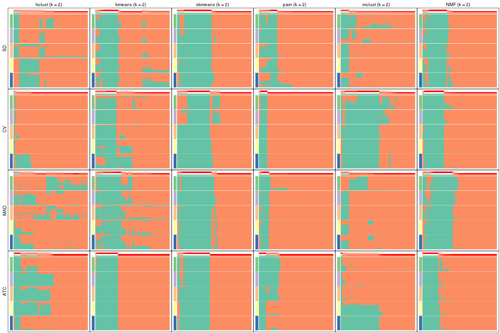
collect_plots(res_list, k = 3, fun = membership_heatmap, mc.cores = 4)
collect_plots(res_list, k = 4, fun = membership_heatmap, mc.cores = 4)
collect_plots(res_list, k = 5, fun = membership_heatmap, mc.cores = 4)
collect_plots(res_list, k = 6, fun = membership_heatmap, mc.cores = 4)
Signature heatmaps for all methods. (What is a signature heatmap?)
Note in following heatmaps, rows are scaled.
collect_plots(res_list, k = 2, fun = get_signatures, mc.cores = 4)
collect_plots(res_list, k = 3, fun = get_signatures, mc.cores = 4)
collect_plots(res_list, k = 4, fun = get_signatures, mc.cores = 4)
collect_plots(res_list, k = 5, fun = get_signatures, mc.cores = 4)
collect_plots(res_list, k = 6, fun = get_signatures, mc.cores = 4)
The statistics used for measuring the stability of consensus partitioning. (How are they defined?)
get_stats(res_list, k = 2)
#> k 1-PAC mean_silhouette concordance area_increased Rand Jaccard
#> SD:NMF 2 0.839 0.869 0.948 0.442 0.551 0.551
#> CV:NMF 2 0.961 0.949 0.979 0.418 0.581 0.581
#> MAD:NMF 2 0.732 0.850 0.938 0.483 0.509 0.509
#> ATC:NMF 2 0.958 0.939 0.973 0.368 0.660 0.660
#> SD:skmeans 2 0.746 0.922 0.965 0.503 0.493 0.493
#> CV:skmeans 2 0.636 0.772 0.903 0.500 0.497 0.497
#> MAD:skmeans 2 0.843 0.873 0.952 0.508 0.493 0.493
#> ATC:skmeans 2 0.959 0.924 0.968 0.494 0.497 0.497
#> SD:mclust 2 0.609 0.900 0.922 0.251 0.792 0.792
#> CV:mclust 2 0.607 0.814 0.910 0.500 0.491 0.491
#> MAD:mclust 2 0.401 0.864 0.895 0.228 0.792 0.792
#> ATC:mclust 2 0.491 0.556 0.811 0.227 0.925 0.925
#> SD:kmeans 2 0.391 0.776 0.893 0.439 0.566 0.566
#> CV:kmeans 2 0.426 0.837 0.898 0.432 0.581 0.581
#> MAD:kmeans 2 0.345 0.728 0.858 0.473 0.538 0.538
#> ATC:kmeans 2 1.000 0.991 0.996 0.432 0.566 0.566
#> SD:pam 2 0.719 0.896 0.936 0.334 0.618 0.618
#> CV:pam 2 1.000 0.981 0.993 0.197 0.792 0.792
#> MAD:pam 2 1.000 0.950 0.975 0.239 0.762 0.762
#> ATC:pam 2 0.747 0.866 0.927 0.319 0.618 0.618
#> SD:hclust 2 0.373 0.512 0.796 0.323 0.855 0.855
#> CV:hclust 2 0.673 0.808 0.945 0.102 0.962 0.962
#> MAD:hclust 2 0.118 0.456 0.761 0.312 0.855 0.855
#> ATC:hclust 2 0.365 0.535 0.819 0.370 0.551 0.551
get_stats(res_list, k = 3)
#> k 1-PAC mean_silhouette concordance area_increased Rand Jaccard
#> SD:NMF 3 0.472 0.529 0.744 0.473 0.674 0.461
#> CV:NMF 3 0.535 0.685 0.801 0.592 0.718 0.527
#> MAD:NMF 3 0.504 0.683 0.828 0.355 0.668 0.440
#> ATC:NMF 3 0.427 0.542 0.782 0.513 0.708 0.572
#> SD:skmeans 3 0.551 0.559 0.784 0.336 0.679 0.435
#> CV:skmeans 3 0.564 0.698 0.819 0.310 0.810 0.635
#> MAD:skmeans 3 0.591 0.749 0.841 0.325 0.723 0.493
#> ATC:skmeans 3 0.927 0.920 0.966 0.286 0.823 0.656
#> SD:mclust 3 0.252 0.519 0.719 1.419 0.518 0.415
#> CV:mclust 3 0.453 0.738 0.864 0.167 0.849 0.715
#> MAD:mclust 3 0.235 0.564 0.708 1.529 0.548 0.445
#> ATC:mclust 3 0.456 0.544 0.814 1.328 0.532 0.493
#> SD:kmeans 3 0.420 0.436 0.750 0.410 0.821 0.700
#> CV:kmeans 3 0.446 0.698 0.812 0.342 0.777 0.625
#> MAD:kmeans 3 0.372 0.432 0.669 0.361 0.707 0.502
#> ATC:kmeans 3 0.608 0.748 0.882 0.367 0.679 0.506
#> SD:pam 3 0.399 0.722 0.846 0.683 0.753 0.622
#> CV:pam 3 0.926 0.905 0.964 0.832 0.838 0.796
#> MAD:pam 3 0.395 0.436 0.773 1.259 0.735 0.657
#> ATC:pam 3 1.000 0.949 0.976 0.790 0.555 0.407
#> SD:hclust 3 0.245 0.234 0.617 0.478 0.517 0.443
#> CV:hclust 3 0.461 0.816 0.920 0.742 0.962 0.961
#> MAD:hclust 3 0.171 0.235 0.650 0.719 0.683 0.641
#> ATC:hclust 3 0.618 0.838 0.920 0.492 0.696 0.525
get_stats(res_list, k = 4)
#> k 1-PAC mean_silhouette concordance area_increased Rand Jaccard
#> SD:NMF 4 0.464 0.480 0.673 0.1436 0.769 0.430
#> CV:NMF 4 0.579 0.481 0.719 0.1262 0.760 0.411
#> MAD:NMF 4 0.465 0.490 0.709 0.1448 0.767 0.433
#> ATC:NMF 4 0.437 0.529 0.803 0.1804 0.717 0.449
#> SD:skmeans 4 0.650 0.669 0.828 0.1249 0.867 0.618
#> CV:skmeans 4 0.600 0.644 0.769 0.1481 0.834 0.563
#> MAD:skmeans 4 0.624 0.662 0.816 0.1245 0.870 0.626
#> ATC:skmeans 4 0.901 0.882 0.952 0.1179 0.910 0.751
#> SD:mclust 4 0.547 0.556 0.769 0.1948 0.763 0.446
#> CV:mclust 4 0.418 0.520 0.756 0.1442 0.956 0.896
#> MAD:mclust 4 0.517 0.683 0.813 0.2499 0.727 0.407
#> ATC:mclust 4 0.838 0.865 0.940 0.0470 0.676 0.476
#> SD:kmeans 4 0.425 0.501 0.667 0.1481 0.711 0.414
#> CV:kmeans 4 0.364 0.424 0.712 0.1158 0.928 0.831
#> MAD:kmeans 4 0.437 0.579 0.708 0.1359 0.793 0.483
#> ATC:kmeans 4 0.641 0.780 0.848 0.1805 0.710 0.413
#> SD:pam 4 0.634 0.783 0.893 0.1013 0.915 0.814
#> CV:pam 4 0.598 0.765 0.884 0.4453 0.821 0.718
#> MAD:pam 4 0.612 0.819 0.892 0.1821 0.584 0.363
#> ATC:pam 4 0.872 0.861 0.945 0.2535 0.763 0.503
#> SD:hclust 4 0.272 0.566 0.736 0.2541 0.667 0.386
#> CV:hclust 4 0.401 0.569 0.848 1.1130 0.722 0.699
#> MAD:hclust 4 0.248 0.544 0.661 0.2013 0.612 0.410
#> ATC:hclust 4 0.609 0.813 0.918 0.0338 0.984 0.963
get_stats(res_list, k = 5)
#> k 1-PAC mean_silhouette concordance area_increased Rand Jaccard
#> SD:NMF 5 0.564 0.396 0.641 0.0737 0.811 0.413
#> CV:NMF 5 0.645 0.674 0.772 0.0540 0.873 0.564
#> MAD:NMF 5 0.599 0.602 0.745 0.0689 0.871 0.539
#> ATC:NMF 5 0.562 0.621 0.815 0.1334 0.739 0.388
#> SD:skmeans 5 0.682 0.510 0.717 0.0648 0.910 0.669
#> CV:skmeans 5 0.614 0.423 0.687 0.0619 0.895 0.620
#> MAD:skmeans 5 0.726 0.709 0.842 0.0637 0.848 0.479
#> ATC:skmeans 5 0.770 0.803 0.857 0.0478 0.984 0.943
#> SD:mclust 5 0.534 0.565 0.711 0.0670 0.915 0.686
#> CV:mclust 5 0.485 0.431 0.699 0.0993 0.913 0.772
#> MAD:mclust 5 0.634 0.571 0.762 0.0966 0.842 0.489
#> ATC:mclust 5 0.822 0.731 0.909 0.2289 0.845 0.667
#> SD:kmeans 5 0.497 0.438 0.643 0.0795 0.915 0.705
#> CV:kmeans 5 0.445 0.440 0.656 0.1055 0.914 0.792
#> MAD:kmeans 5 0.575 0.414 0.671 0.0699 0.921 0.721
#> ATC:kmeans 5 0.715 0.861 0.867 0.0981 0.894 0.648
#> SD:pam 5 0.591 0.427 0.760 0.1438 0.857 0.640
#> CV:pam 5 0.629 0.611 0.835 0.1899 0.833 0.638
#> MAD:pam 5 0.596 0.644 0.795 0.1405 0.925 0.797
#> ATC:pam 5 0.830 0.725 0.884 0.0372 0.980 0.930
#> SD:hclust 5 0.473 0.630 0.787 0.1349 0.913 0.770
#> CV:hclust 5 0.573 0.538 0.826 0.3921 0.873 0.806
#> MAD:hclust 5 0.391 0.612 0.727 0.1142 0.861 0.639
#> ATC:hclust 5 0.655 0.751 0.856 0.1607 0.866 0.686
get_stats(res_list, k = 6)
#> k 1-PAC mean_silhouette concordance area_increased Rand Jaccard
#> SD:NMF 6 0.681 0.592 0.796 0.0399 0.844 0.414
#> CV:NMF 6 0.712 0.638 0.795 0.0359 0.967 0.843
#> MAD:NMF 6 0.677 0.634 0.791 0.0382 0.885 0.517
#> ATC:NMF 6 0.691 0.629 0.830 0.0540 0.944 0.793
#> SD:skmeans 6 0.703 0.563 0.689 0.0384 0.899 0.565
#> CV:skmeans 6 0.640 0.408 0.650 0.0412 0.900 0.589
#> MAD:skmeans 6 0.755 0.585 0.740 0.0387 0.961 0.799
#> ATC:skmeans 6 0.794 0.766 0.869 0.0351 0.961 0.856
#> SD:mclust 6 0.656 0.453 0.732 0.0460 0.927 0.684
#> CV:mclust 6 0.527 0.396 0.637 0.0558 0.849 0.538
#> MAD:mclust 6 0.681 0.572 0.761 0.0473 0.902 0.570
#> ATC:mclust 6 0.803 0.640 0.840 0.0515 0.968 0.901
#> SD:kmeans 6 0.582 0.443 0.636 0.0548 0.843 0.488
#> CV:kmeans 6 0.505 0.396 0.668 0.0699 0.819 0.538
#> MAD:kmeans 6 0.624 0.478 0.637 0.0465 0.851 0.478
#> ATC:kmeans 6 0.833 0.808 0.886 0.0464 0.992 0.960
#> SD:pam 6 0.720 0.695 0.840 0.0829 0.824 0.501
#> CV:pam 6 0.683 0.684 0.887 0.0721 0.909 0.747
#> MAD:pam 6 0.763 0.606 0.835 0.0837 0.907 0.690
#> ATC:pam 6 0.828 0.625 0.825 0.0476 0.939 0.781
#> SD:hclust 6 0.570 0.475 0.733 0.0752 0.946 0.831
#> CV:hclust 6 0.652 0.611 0.852 0.0666 0.976 0.955
#> MAD:hclust 6 0.531 0.455 0.683 0.0744 0.913 0.714
#> ATC:hclust 6 0.614 0.715 0.862 0.0602 0.995 0.983
Following heatmap plots the partition for each combination of methods and the lightness correspond to the silhouette scores for samples in each method. On top the consensus subgroup is inferred from all methods by taking the mean silhouette scores as weight.
collect_stats(res_list, k = 2)
collect_stats(res_list, k = 3)
collect_stats(res_list, k = 4)
collect_stats(res_list, k = 5)
collect_stats(res_list, k = 6)
Collect partitions from all methods:
collect_classes(res_list, k = 2)
collect_classes(res_list, k = 3)
collect_classes(res_list, k = 4)
collect_classes(res_list, k = 5)
collect_classes(res_list, k = 6)
Overlap of top rows from different top-row methods:
top_rows_overlap(res_list, top_n = 1000, method = "euler")
top_rows_overlap(res_list, top_n = 2000, method = "euler")
top_rows_overlap(res_list, top_n = 3000, method = "euler")
top_rows_overlap(res_list, top_n = 4000, method = "euler")
top_rows_overlap(res_list, top_n = 5000, method = "euler")
Also visualize the correspondance of rankings between different top-row methods:
top_rows_overlap(res_list, top_n = 1000, method = "correspondance")
top_rows_overlap(res_list, top_n = 2000, method = "correspondance")

top_rows_overlap(res_list, top_n = 3000, method = "correspondance")
top_rows_overlap(res_list, top_n = 4000, method = "correspondance")
top_rows_overlap(res_list, top_n = 5000, method = "correspondance")
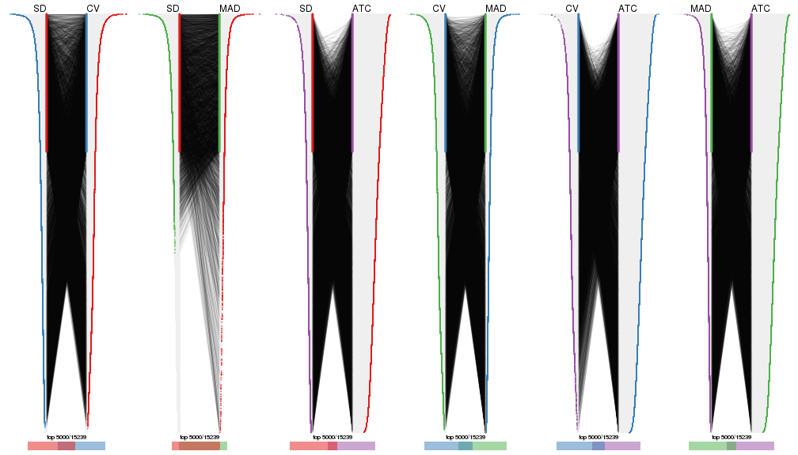
Heatmaps of the top rows:
top_rows_heatmap(res_list, top_n = 1000)
top_rows_heatmap(res_list, top_n = 2000)

top_rows_heatmap(res_list, top_n = 3000)
top_rows_heatmap(res_list, top_n = 4000)
top_rows_heatmap(res_list, top_n = 5000)
The object with results only for a single top-value method and a single partition method can be extracted as:
res = res_list["SD", "hclust"]
# you can also extract it by
# res = res_list["SD:hclust"]
A summary of res and all the functions that can be applied to it:
res
#> A 'ConsensusPartition' object with k = 2, 3, 4, 5, 6.
#> On a matrix with 15239 rows and 52 columns.
#> Top rows (1000, 2000, 3000, 4000, 5000) are extracted by 'SD' method.
#> Subgroups are detected by 'hclust' method.
#> Performed in total 1250 partitions by row resampling.
#> Best k for subgroups seems to be 5.
#>
#> Following methods can be applied to this 'ConsensusPartition' object:
#> [1] "cola_report" "collect_classes" "collect_plots"
#> [4] "collect_stats" "colnames" "compare_signatures"
#> [7] "consensus_heatmap" "dimension_reduction" "functional_enrichment"
#> [10] "get_anno_col" "get_anno" "get_classes"
#> [13] "get_consensus" "get_matrix" "get_membership"
#> [16] "get_param" "get_signatures" "get_stats"
#> [19] "is_best_k" "is_stable_k" "membership_heatmap"
#> [22] "ncol" "nrow" "plot_ecdf"
#> [25] "rownames" "select_partition_number" "show"
#> [28] "suggest_best_k" "test_to_known_factors"
collect_plots() function collects all the plots made from res for all k (number of partitions)
into one single page to provide an easy and fast comparison between different k.
collect_plots(res)
The plots are:
k and the heatmap of
predicted classes for each k.k.k.k.All the plots in panels can be made by individual functions and they are plotted later in this section.
select_partition_number() produces several plots showing different
statistics for choosing “optimized” k. There are following statistics:
k;k, the area increased is defined as \(A_k - A_{k-1}\).The detailed explanations of these statistics can be found in the cola vignette.
Generally speaking, lower PAC score, higher mean silhouette score or higher
concordance corresponds to better partition. Rand index and Jaccard index
measure how similar the current partition is compared to partition with k-1.
If they are too similar, we won't accept k is better than k-1.
select_partition_number(res)
The numeric values for all these statistics can be obtained by get_stats().
get_stats(res)
#> k 1-PAC mean_silhouette concordance area_increased Rand Jaccard
#> 2 2 0.373 0.512 0.796 0.3226 0.855 0.855
#> 3 3 0.245 0.234 0.617 0.4776 0.517 0.443
#> 4 4 0.272 0.566 0.736 0.2541 0.667 0.386
#> 5 5 0.473 0.630 0.787 0.1349 0.913 0.770
#> 6 6 0.570 0.475 0.733 0.0752 0.946 0.831
suggest_best_k() suggests the best \(k\) based on these statistics. The rules are as follows:
suggest_best_k(res)
#> [1] 5
Following shows the table of the partitions (You need to click the show/hide
code output link to see it). The membership matrix (columns with name p*)
is inferred by
clue::cl_consensus()
function with the SE method. Basically the value in the membership matrix
represents the probability to belong to a certain group. The finall class
label for an item is determined with the group with highest probability it
belongs to.
In get_classes() function, the entropy is calculated from the membership
matrix and the silhouette score is calculated from the consensus matrix.
cbind(get_classes(res, k = 2), get_membership(res, k = 2))
#> class entropy silhouette p1 p2
#> SRR633556 2 0.0000 0.645 0.000 1.000
#> SRR633557 2 0.9922 0.463 0.448 0.552
#> SRR633558 2 0.0000 0.645 0.000 1.000
#> SRR633559 2 0.0000 0.645 0.000 1.000
#> SRR633560 2 0.0000 0.645 0.000 1.000
#> SRR633561 2 0.0672 0.645 0.008 0.992
#> SRR633563 1 0.9954 0.994 0.540 0.460
#> SRR633564 1 0.9954 0.994 0.540 0.460
#> SRR633565 1 0.9970 0.983 0.532 0.468
#> SRR633566 1 0.9954 0.994 0.540 0.460
#> SRR633567 2 0.9044 -0.398 0.320 0.680
#> SRR633568 2 0.6531 0.394 0.168 0.832
#> SRR633569 2 0.6531 0.394 0.168 0.832
#> SRR633570 2 0.6531 0.394 0.168 0.832
#> SRR633571 2 0.6531 0.394 0.168 0.832
#> SRR633572 2 0.0000 0.645 0.000 1.000
#> SRR633573 2 0.0672 0.645 0.008 0.992
#> SRR633574 2 0.0672 0.645 0.008 0.992
#> SRR633575 2 0.0672 0.645 0.008 0.992
#> SRR633576 2 0.0672 0.645 0.008 0.992
#> SRR633577 2 0.9358 -0.495 0.352 0.648
#> SRR633578 2 0.9896 0.467 0.440 0.560
#> SRR633579 2 0.9866 0.475 0.432 0.568
#> SRR633580 2 0.9866 0.475 0.432 0.568
#> SRR633581 2 0.9866 0.475 0.432 0.568
#> SRR633582 2 0.0000 0.645 0.000 1.000
#> SRR633583 2 0.0000 0.645 0.000 1.000
#> SRR633584 2 0.0000 0.645 0.000 1.000
#> SRR633585 2 0.0672 0.645 0.008 0.992
#> SRR633586 2 0.9954 0.452 0.460 0.540
#> SRR633587 2 0.0000 0.645 0.000 1.000
#> SRR633588 2 0.9954 0.452 0.460 0.540
#> SRR633589 2 0.0000 0.645 0.000 1.000
#> SRR633590 2 0.9833 0.479 0.424 0.576
#> SRR633591 2 0.9833 0.479 0.424 0.576
#> SRR633592 2 0.9833 0.479 0.424 0.576
#> SRR633593 2 0.0938 0.634 0.012 0.988
#> SRR633594 2 0.0938 0.634 0.012 0.988
#> SRR633595 2 0.0938 0.634 0.012 0.988
#> SRR633596 2 0.0672 0.638 0.008 0.992
#> SRR633597 2 0.6048 0.389 0.148 0.852
#> SRR633598 2 0.6801 0.563 0.180 0.820
#> SRR633599 2 0.0000 0.645 0.000 1.000
#> SRR633600 2 0.0000 0.645 0.000 1.000
#> SRR633601 2 0.9970 0.444 0.468 0.532
#> SRR633602 2 0.8861 -0.331 0.304 0.696
#> SRR633603 2 0.9944 0.456 0.456 0.544
#> SRR633604 2 0.9754 0.483 0.408 0.592
#> SRR633605 2 0.0376 0.645 0.004 0.996
#> SRR633606 2 0.0376 0.645 0.004 0.996
#> SRR633607 2 0.9866 0.475 0.432 0.568
#> SRR633608 2 0.9754 -0.664 0.408 0.592
cbind(get_classes(res, k = 3), get_membership(res, k = 3))
#> class entropy silhouette p1 p2 p3
#> SRR633556 3 0.6291 -0.3567 0.000 0.468 0.532
#> SRR633557 3 0.3459 0.3857 0.012 0.096 0.892
#> SRR633558 3 0.6291 -0.3567 0.000 0.468 0.532
#> SRR633559 3 0.6291 -0.3567 0.000 0.468 0.532
#> SRR633560 3 0.6291 -0.3567 0.000 0.468 0.532
#> SRR633561 2 0.6309 0.3599 0.000 0.500 0.500
#> SRR633563 1 0.4968 0.8060 0.800 0.188 0.012
#> SRR633564 1 0.4968 0.8060 0.800 0.188 0.012
#> SRR633565 1 0.5072 0.8044 0.792 0.196 0.012
#> SRR633566 1 0.4968 0.8060 0.800 0.188 0.012
#> SRR633567 1 0.8886 0.6760 0.572 0.240 0.188
#> SRR633568 2 0.9541 0.3530 0.200 0.452 0.348
#> SRR633569 2 0.9541 0.3530 0.200 0.452 0.348
#> SRR633570 2 0.9541 0.3530 0.200 0.452 0.348
#> SRR633571 2 0.9541 0.3530 0.200 0.452 0.348
#> SRR633572 2 0.6307 0.3728 0.000 0.512 0.488
#> SRR633573 3 0.6215 -0.3362 0.000 0.428 0.572
#> SRR633574 3 0.6291 -0.3847 0.000 0.468 0.532
#> SRR633575 3 0.6215 -0.3362 0.000 0.428 0.572
#> SRR633576 3 0.6299 -0.3942 0.000 0.476 0.524
#> SRR633577 1 0.9054 0.6711 0.496 0.360 0.144
#> SRR633578 3 0.5591 0.2536 0.000 0.304 0.696
#> SRR633579 3 0.0000 0.4121 0.000 0.000 1.000
#> SRR633580 3 0.0000 0.4121 0.000 0.000 1.000
#> SRR633581 3 0.0000 0.4121 0.000 0.000 1.000
#> SRR633582 3 0.6307 -0.3863 0.000 0.488 0.512
#> SRR633583 3 0.6307 -0.3863 0.000 0.488 0.512
#> SRR633584 3 0.6307 -0.3863 0.000 0.488 0.512
#> SRR633585 2 0.6309 0.3599 0.000 0.500 0.500
#> SRR633586 3 0.1337 0.4053 0.016 0.012 0.972
#> SRR633587 3 0.6291 -0.3567 0.000 0.468 0.532
#> SRR633588 3 0.1337 0.4053 0.016 0.012 0.972
#> SRR633589 3 0.6291 -0.3567 0.000 0.468 0.532
#> SRR633590 3 0.0424 0.4097 0.000 0.008 0.992
#> SRR633591 3 0.0424 0.4097 0.000 0.008 0.992
#> SRR633592 3 0.0424 0.4097 0.000 0.008 0.992
#> SRR633593 2 0.6267 0.4304 0.000 0.548 0.452
#> SRR633594 2 0.6267 0.4304 0.000 0.548 0.452
#> SRR633595 2 0.6267 0.4304 0.000 0.548 0.452
#> SRR633596 2 0.5882 0.4069 0.000 0.652 0.348
#> SRR633597 2 0.8776 0.3845 0.144 0.560 0.296
#> SRR633598 3 0.6513 -0.2173 0.008 0.400 0.592
#> SRR633599 2 0.6235 0.4338 0.000 0.564 0.436
#> SRR633600 2 0.6235 0.4338 0.000 0.564 0.436
#> SRR633601 3 0.6924 0.0692 0.020 0.400 0.580
#> SRR633602 1 0.9120 0.6593 0.544 0.256 0.200
#> SRR633603 3 0.3377 0.3811 0.012 0.092 0.896
#> SRR633604 3 0.3038 0.3831 0.000 0.104 0.896
#> SRR633605 2 0.6244 0.4308 0.000 0.560 0.440
#> SRR633606 2 0.6244 0.4308 0.000 0.560 0.440
#> SRR633607 3 0.2537 0.3889 0.000 0.080 0.920
#> SRR633608 1 0.8482 0.4398 0.500 0.408 0.092
cbind(get_classes(res, k = 4), get_membership(res, k = 4))
#> class entropy silhouette p1 p2 p3 p4
#> SRR633556 2 0.000 0.71973 0.000 1.000 0.000 0.000
#> SRR633557 3 0.466 0.65845 0.000 0.348 0.652 0.000
#> SRR633558 2 0.000 0.71973 0.000 1.000 0.000 0.000
#> SRR633559 2 0.000 0.71973 0.000 1.000 0.000 0.000
#> SRR633560 2 0.000 0.71973 0.000 1.000 0.000 0.000
#> SRR633561 2 0.447 0.60257 0.016 0.768 0.212 0.004
#> SRR633563 1 0.271 0.84298 0.884 0.112 0.000 0.004
#> SRR633564 1 0.271 0.84298 0.884 0.112 0.000 0.004
#> SRR633565 1 0.294 0.83969 0.868 0.128 0.004 0.000
#> SRR633566 1 0.271 0.84298 0.884 0.112 0.000 0.004
#> SRR633567 1 0.693 0.76418 0.648 0.140 0.188 0.024
#> SRR633568 4 0.472 0.79692 0.000 0.180 0.048 0.772
#> SRR633569 4 0.472 0.79692 0.000 0.180 0.048 0.772
#> SRR633570 4 0.472 0.79692 0.000 0.180 0.048 0.772
#> SRR633571 4 0.472 0.79692 0.000 0.180 0.048 0.772
#> SRR633572 2 0.194 0.70758 0.000 0.924 0.076 0.000
#> SRR633573 2 0.341 0.65526 0.016 0.860 0.120 0.004
#> SRR633574 2 0.402 0.63809 0.016 0.812 0.168 0.004
#> SRR633575 2 0.341 0.65526 0.016 0.860 0.120 0.004
#> SRR633576 2 0.424 0.62829 0.016 0.792 0.188 0.004
#> SRR633577 1 0.714 0.51592 0.552 0.268 0.000 0.180
#> SRR633578 3 0.525 0.29702 0.000 0.080 0.744 0.176
#> SRR633579 3 0.499 0.65209 0.000 0.476 0.524 0.000
#> SRR633580 3 0.499 0.65209 0.000 0.476 0.524 0.000
#> SRR633581 3 0.499 0.65209 0.000 0.476 0.524 0.000
#> SRR633582 2 0.130 0.70863 0.000 0.956 0.000 0.044
#> SRR633583 2 0.121 0.71030 0.000 0.960 0.000 0.040
#> SRR633584 2 0.130 0.70863 0.000 0.956 0.000 0.044
#> SRR633585 2 0.447 0.60257 0.016 0.768 0.212 0.004
#> SRR633586 3 0.516 0.65675 0.004 0.468 0.528 0.000
#> SRR633587 2 0.000 0.71973 0.000 1.000 0.000 0.000
#> SRR633588 3 0.516 0.65675 0.004 0.468 0.528 0.000
#> SRR633589 2 0.000 0.71973 0.000 1.000 0.000 0.000
#> SRR633590 2 0.500 -0.65479 0.000 0.504 0.496 0.000
#> SRR633591 2 0.500 -0.65479 0.000 0.504 0.496 0.000
#> SRR633592 2 0.500 -0.65479 0.000 0.504 0.496 0.000
#> SRR633593 2 0.351 0.64783 0.004 0.860 0.024 0.112
#> SRR633594 2 0.351 0.64783 0.004 0.860 0.024 0.112
#> SRR633595 2 0.351 0.64783 0.004 0.860 0.024 0.112
#> SRR633596 2 0.664 0.31690 0.004 0.632 0.228 0.136
#> SRR633597 4 0.510 0.47273 0.000 0.428 0.004 0.568
#> SRR633598 2 0.615 0.41504 0.008 0.692 0.188 0.112
#> SRR633599 2 0.386 0.65814 0.000 0.824 0.152 0.024
#> SRR633600 2 0.386 0.65814 0.000 0.824 0.152 0.024
#> SRR633601 3 0.628 -0.01024 0.116 0.004 0.668 0.212
#> SRR633602 1 0.752 0.74248 0.620 0.156 0.172 0.052
#> SRR633603 3 0.468 0.65536 0.000 0.316 0.680 0.004
#> SRR633604 3 0.478 0.62444 0.000 0.376 0.624 0.000
#> SRR633605 2 0.409 0.64833 0.000 0.804 0.172 0.024
#> SRR633606 2 0.409 0.64833 0.000 0.804 0.172 0.024
#> SRR633607 3 0.480 0.65172 0.000 0.340 0.656 0.004
#> SRR633608 4 0.744 -0.00681 0.392 0.096 0.024 0.488
cbind(get_classes(res, k = 5), get_membership(res, k = 5))
#> class entropy silhouette p1 p2 p3 p4 p5
#> SRR633556 2 0.0000 0.73309 0.000 1.000 0.000 0.000 0.000
#> SRR633557 3 0.3707 0.69488 0.000 0.284 0.716 0.000 0.000
#> SRR633558 2 0.0000 0.73309 0.000 1.000 0.000 0.000 0.000
#> SRR633559 2 0.0000 0.73309 0.000 1.000 0.000 0.000 0.000
#> SRR633560 2 0.0000 0.73309 0.000 1.000 0.000 0.000 0.000
#> SRR633561 2 0.4337 0.55334 0.016 0.696 0.284 0.004 0.000
#> SRR633563 1 0.0162 0.82862 0.996 0.004 0.000 0.000 0.000
#> SRR633564 1 0.0162 0.82862 0.996 0.004 0.000 0.000 0.000
#> SRR633565 1 0.0932 0.82502 0.972 0.020 0.004 0.004 0.000
#> SRR633566 1 0.0162 0.82862 0.996 0.004 0.000 0.000 0.000
#> SRR633567 1 0.4679 0.72106 0.752 0.024 0.016 0.192 0.016
#> SRR633568 5 0.0162 0.72458 0.000 0.004 0.000 0.000 0.996
#> SRR633569 5 0.0162 0.72458 0.000 0.004 0.000 0.000 0.996
#> SRR633570 5 0.0162 0.72458 0.000 0.004 0.000 0.000 0.996
#> SRR633571 5 0.0162 0.72458 0.000 0.004 0.000 0.000 0.996
#> SRR633572 2 0.1965 0.72013 0.000 0.904 0.096 0.000 0.000
#> SRR633573 2 0.3340 0.61560 0.016 0.824 0.156 0.004 0.000
#> SRR633574 2 0.3914 0.60170 0.016 0.760 0.220 0.004 0.000
#> SRR633575 2 0.3340 0.61560 0.016 0.824 0.156 0.004 0.000
#> SRR633576 2 0.4726 0.50931 0.016 0.604 0.376 0.004 0.000
#> SRR633577 1 0.5937 0.56835 0.660 0.140 0.020 0.004 0.176
#> SRR633578 3 0.4844 -0.14693 0.004 0.008 0.516 0.468 0.004
#> SRR633579 3 0.4489 0.76933 0.000 0.420 0.572 0.008 0.000
#> SRR633580 3 0.4489 0.76933 0.000 0.420 0.572 0.008 0.000
#> SRR633581 3 0.4489 0.76933 0.000 0.420 0.572 0.008 0.000
#> SRR633582 2 0.1372 0.72926 0.000 0.956 0.024 0.004 0.016
#> SRR633583 2 0.1278 0.73017 0.000 0.960 0.020 0.004 0.016
#> SRR633584 2 0.1372 0.72926 0.000 0.956 0.024 0.004 0.016
#> SRR633585 2 0.4337 0.55334 0.016 0.696 0.284 0.004 0.000
#> SRR633586 3 0.4397 0.75965 0.000 0.432 0.564 0.004 0.000
#> SRR633587 2 0.0000 0.73309 0.000 1.000 0.000 0.000 0.000
#> SRR633588 3 0.4397 0.75965 0.000 0.432 0.564 0.004 0.000
#> SRR633589 2 0.0000 0.73309 0.000 1.000 0.000 0.000 0.000
#> SRR633590 3 0.4294 0.74500 0.000 0.468 0.532 0.000 0.000
#> SRR633591 3 0.4294 0.74500 0.000 0.468 0.532 0.000 0.000
#> SRR633592 3 0.4294 0.74500 0.000 0.468 0.532 0.000 0.000
#> SRR633593 2 0.3456 0.69266 0.000 0.852 0.092 0.028 0.028
#> SRR633594 2 0.3456 0.69266 0.000 0.852 0.092 0.028 0.028
#> SRR633595 2 0.3456 0.69266 0.000 0.852 0.092 0.028 0.028
#> SRR633596 2 0.6143 0.36070 0.000 0.576 0.044 0.320 0.060
#> SRR633597 5 0.5752 0.31371 0.000 0.300 0.076 0.016 0.608
#> SRR633598 2 0.5010 0.45954 0.000 0.688 0.256 0.028 0.028
#> SRR633599 2 0.4182 0.57087 0.000 0.644 0.352 0.004 0.000
#> SRR633600 2 0.4182 0.57087 0.000 0.644 0.352 0.004 0.000
#> SRR633601 4 0.0963 0.00000 0.000 0.000 0.036 0.964 0.000
#> SRR633602 1 0.5436 0.71005 0.724 0.024 0.028 0.176 0.048
#> SRR633603 3 0.2179 0.51320 0.000 0.100 0.896 0.004 0.000
#> SRR633604 3 0.3661 0.66506 0.000 0.276 0.724 0.000 0.000
#> SRR633605 2 0.4251 0.55894 0.000 0.624 0.372 0.004 0.000
#> SRR633606 2 0.4251 0.55894 0.000 0.624 0.372 0.004 0.000
#> SRR633607 3 0.2488 0.53916 0.000 0.124 0.872 0.004 0.000
#> SRR633608 5 0.7041 0.00307 0.388 0.076 0.044 0.020 0.472
cbind(get_classes(res, k = 6), get_membership(res, k = 6))
#> class entropy silhouette p1 p2 p3 p4 p5 p6
#> SRR633556 2 0.0000 0.6149 0.000 1.000 0.000 0.000 0.000 0.000
#> SRR633557 3 0.3834 0.6218 0.000 0.268 0.708 0.000 0.000 0.024
#> SRR633558 2 0.0000 0.6149 0.000 1.000 0.000 0.000 0.000 0.000
#> SRR633559 2 0.0000 0.6149 0.000 1.000 0.000 0.000 0.000 0.000
#> SRR633560 2 0.0000 0.6149 0.000 1.000 0.000 0.000 0.000 0.000
#> SRR633561 2 0.5868 0.2809 0.016 0.500 0.348 0.000 0.136 0.000
#> SRR633563 1 0.0000 0.8326 1.000 0.000 0.000 0.000 0.000 0.000
#> SRR633564 1 0.0000 0.8326 1.000 0.000 0.000 0.000 0.000 0.000
#> SRR633565 1 0.0717 0.8288 0.976 0.016 0.000 0.000 0.008 0.000
#> SRR633566 1 0.0000 0.8326 1.000 0.000 0.000 0.000 0.000 0.000
#> SRR633567 1 0.4114 0.7253 0.756 0.016 0.000 0.000 0.052 0.176
#> SRR633568 4 0.0000 0.7086 0.000 0.000 0.000 1.000 0.000 0.000
#> SRR633569 4 0.0000 0.7086 0.000 0.000 0.000 1.000 0.000 0.000
#> SRR633570 4 0.0000 0.7086 0.000 0.000 0.000 1.000 0.000 0.000
#> SRR633571 4 0.0000 0.7086 0.000 0.000 0.000 1.000 0.000 0.000
#> SRR633572 2 0.2053 0.5924 0.000 0.888 0.108 0.000 0.004 0.000
#> SRR633573 2 0.5449 0.3294 0.016 0.620 0.216 0.000 0.148 0.000
#> SRR633574 2 0.5758 0.3210 0.016 0.556 0.280 0.000 0.148 0.000
#> SRR633575 2 0.5449 0.3294 0.016 0.620 0.216 0.000 0.148 0.000
#> SRR633576 3 0.6002 -0.3278 0.016 0.384 0.452 0.000 0.148 0.000
#> SRR633577 1 0.5756 0.5910 0.664 0.128 0.012 0.132 0.064 0.000
#> SRR633578 5 0.5709 -0.5945 0.000 0.000 0.164 0.000 0.452 0.384
#> SRR633579 3 0.4788 0.7235 0.000 0.392 0.564 0.000 0.024 0.020
#> SRR633580 3 0.4788 0.7235 0.000 0.392 0.564 0.000 0.024 0.020
#> SRR633581 3 0.4788 0.7235 0.000 0.392 0.564 0.000 0.024 0.020
#> SRR633582 2 0.1218 0.5966 0.000 0.956 0.028 0.004 0.012 0.000
#> SRR633583 2 0.1138 0.5991 0.000 0.960 0.024 0.004 0.012 0.000
#> SRR633584 2 0.1218 0.5966 0.000 0.956 0.028 0.004 0.012 0.000
#> SRR633585 2 0.5868 0.2809 0.016 0.500 0.348 0.000 0.136 0.000
#> SRR633586 3 0.4631 0.7196 0.000 0.428 0.536 0.000 0.004 0.032
#> SRR633587 2 0.0000 0.6149 0.000 1.000 0.000 0.000 0.000 0.000
#> SRR633588 3 0.4631 0.7196 0.000 0.428 0.536 0.000 0.004 0.032
#> SRR633589 2 0.0000 0.6149 0.000 1.000 0.000 0.000 0.000 0.000
#> SRR633590 3 0.3966 0.7239 0.000 0.444 0.552 0.000 0.004 0.000
#> SRR633591 3 0.3966 0.7239 0.000 0.444 0.552 0.000 0.004 0.000
#> SRR633592 3 0.3966 0.7239 0.000 0.444 0.552 0.000 0.004 0.000
#> SRR633593 2 0.3854 0.1659 0.000 0.536 0.000 0.000 0.464 0.000
#> SRR633594 2 0.3857 0.1609 0.000 0.532 0.000 0.000 0.468 0.000
#> SRR633595 2 0.3854 0.1659 0.000 0.536 0.000 0.000 0.464 0.000
#> SRR633596 2 0.5503 0.1464 0.000 0.564 0.000 0.008 0.128 0.300
#> SRR633597 4 0.6368 0.2491 0.000 0.288 0.028 0.508 0.168 0.008
#> SRR633598 5 0.6035 -0.2680 0.000 0.396 0.152 0.000 0.436 0.016
#> SRR633599 2 0.4482 0.3882 0.000 0.600 0.360 0.000 0.040 0.000
#> SRR633600 2 0.4482 0.3882 0.000 0.600 0.360 0.000 0.040 0.000
#> SRR633601 6 0.0547 0.0000 0.000 0.000 0.000 0.000 0.020 0.980
#> SRR633602 1 0.4551 0.7138 0.728 0.016 0.000 0.000 0.096 0.160
#> SRR633603 3 0.1644 0.3454 0.000 0.040 0.932 0.000 0.000 0.028
#> SRR633604 3 0.3826 0.5945 0.000 0.236 0.736 0.000 0.016 0.012
#> SRR633605 2 0.4534 0.3821 0.000 0.580 0.380 0.000 0.040 0.000
#> SRR633606 2 0.4534 0.3821 0.000 0.580 0.380 0.000 0.040 0.000
#> SRR633607 3 0.1082 0.3605 0.000 0.040 0.956 0.000 0.000 0.004
#> SRR633608 4 0.7065 -0.0676 0.388 0.072 0.016 0.416 0.096 0.012
Heatmaps for the consensus matrix. It visualizes the probability of two samples to be in a same group.
consensus_heatmap(res, k = 2)
consensus_heatmap(res, k = 3)
consensus_heatmap(res, k = 4)
consensus_heatmap(res, k = 5)
consensus_heatmap(res, k = 6)
Heatmaps for the membership of samples in all partitions to see how consistent they are:
membership_heatmap(res, k = 2)
membership_heatmap(res, k = 3)
membership_heatmap(res, k = 4)
membership_heatmap(res, k = 5)
membership_heatmap(res, k = 6)
As soon as we have had the classes for columns, we can look for signatures which are significantly different between classes which can be candidate marks for certain classes. Following are the heatmaps for signatures.
Signature heatmaps where rows are scaled:
get_signatures(res, k = 2)
get_signatures(res, k = 3)

get_signatures(res, k = 4)
get_signatures(res, k = 5)
get_signatures(res, k = 6)
Signature heatmaps where rows are not scaled:
get_signatures(res, k = 2, scale_rows = FALSE)
get_signatures(res, k = 3, scale_rows = FALSE)

get_signatures(res, k = 4, scale_rows = FALSE)
get_signatures(res, k = 5, scale_rows = FALSE)
get_signatures(res, k = 6, scale_rows = FALSE)
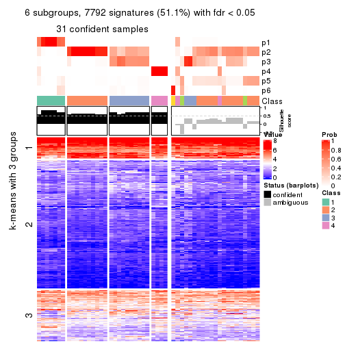
Compare the overlap of signatures from different k:
compare_signatures(res)
get_signature() returns a data frame invisibly. TO get the list of signatures, the function
call should be assigned to a variable explicitly. In following code, if plot argument is set
to FALSE, no heatmap is plotted while only the differential analysis is performed.
# code only for demonstration
tb = get_signature(res, k = ..., plot = FALSE)
An example of the output of tb is:
#> which_row fdr mean_1 mean_2 scaled_mean_1 scaled_mean_2 km
#> 1 38 0.042760348 8.373488 9.131774 -0.5533452 0.5164555 1
#> 2 40 0.018707592 7.106213 8.469186 -0.6173731 0.5762149 1
#> 3 55 0.019134737 10.221463 11.207825 -0.6159697 0.5749050 1
#> 4 59 0.006059896 5.921854 7.869574 -0.6899429 0.6439467 1
#> 5 60 0.018055526 8.928898 10.211722 -0.6204761 0.5791110 1
#> 6 98 0.009384629 15.714769 14.887706 0.6635654 -0.6193277 2
...
The columns in tb are:
which_row: row indices corresponding to the input matrix.fdr: FDR for the differential test. mean_x: The mean value in group x.scaled_mean_x: The mean value in group x after rows are scaled.km: Row groups if k-means clustering is applied to rows.UMAP plot which shows how samples are separated.
dimension_reduction(res, k = 2, method = "UMAP")
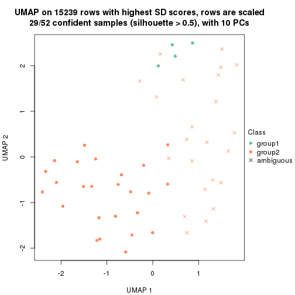
dimension_reduction(res, k = 3, method = "UMAP")
dimension_reduction(res, k = 4, method = "UMAP")
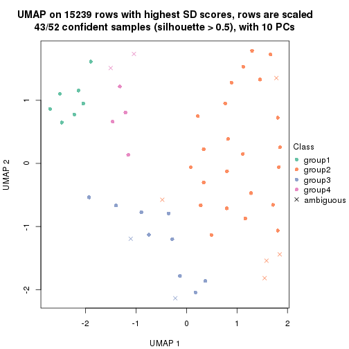
dimension_reduction(res, k = 5, method = "UMAP")
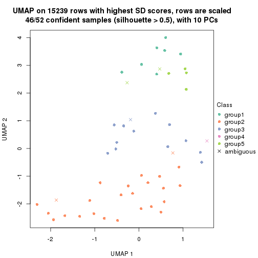
dimension_reduction(res, k = 6, method = "UMAP")
Following heatmap shows how subgroups are split when increasing k:
collect_classes(res)

If matrix rows can be associated to genes, consider to use functional_enrichment(res,
...) to perform function enrichment for the signature genes. See this vignette for more detailed explanations.
The object with results only for a single top-value method and a single partition method can be extracted as:
res = res_list["SD", "kmeans"]
# you can also extract it by
# res = res_list["SD:kmeans"]
A summary of res and all the functions that can be applied to it:
res
#> A 'ConsensusPartition' object with k = 2, 3, 4, 5, 6.
#> On a matrix with 15239 rows and 52 columns.
#> Top rows (1000, 2000, 3000, 4000, 5000) are extracted by 'SD' method.
#> Subgroups are detected by 'kmeans' method.
#> Performed in total 1250 partitions by row resampling.
#> Best k for subgroups seems to be 2.
#>
#> Following methods can be applied to this 'ConsensusPartition' object:
#> [1] "cola_report" "collect_classes" "collect_plots"
#> [4] "collect_stats" "colnames" "compare_signatures"
#> [7] "consensus_heatmap" "dimension_reduction" "functional_enrichment"
#> [10] "get_anno_col" "get_anno" "get_classes"
#> [13] "get_consensus" "get_matrix" "get_membership"
#> [16] "get_param" "get_signatures" "get_stats"
#> [19] "is_best_k" "is_stable_k" "membership_heatmap"
#> [22] "ncol" "nrow" "plot_ecdf"
#> [25] "rownames" "select_partition_number" "show"
#> [28] "suggest_best_k" "test_to_known_factors"
collect_plots() function collects all the plots made from res for all k (number of partitions)
into one single page to provide an easy and fast comparison between different k.
collect_plots(res)
The plots are:
k and the heatmap of
predicted classes for each k.k.k.k.All the plots in panels can be made by individual functions and they are plotted later in this section.
select_partition_number() produces several plots showing different
statistics for choosing “optimized” k. There are following statistics:
k;k, the area increased is defined as \(A_k - A_{k-1}\).The detailed explanations of these statistics can be found in the cola vignette.
Generally speaking, lower PAC score, higher mean silhouette score or higher
concordance corresponds to better partition. Rand index and Jaccard index
measure how similar the current partition is compared to partition with k-1.
If they are too similar, we won't accept k is better than k-1.
select_partition_number(res)
The numeric values for all these statistics can be obtained by get_stats().
get_stats(res)
#> k 1-PAC mean_silhouette concordance area_increased Rand Jaccard
#> 2 2 0.391 0.776 0.893 0.4387 0.566 0.566
#> 3 3 0.420 0.436 0.750 0.4097 0.821 0.700
#> 4 4 0.425 0.501 0.667 0.1481 0.711 0.414
#> 5 5 0.497 0.438 0.643 0.0795 0.915 0.705
#> 6 6 0.582 0.443 0.636 0.0548 0.843 0.488
suggest_best_k() suggests the best \(k\) based on these statistics. The rules are as follows:
suggest_best_k(res)
#> [1] 2
Following shows the table of the partitions (You need to click the show/hide
code output link to see it). The membership matrix (columns with name p*)
is inferred by
clue::cl_consensus()
function with the SE method. Basically the value in the membership matrix
represents the probability to belong to a certain group. The finall class
label for an item is determined with the group with highest probability it
belongs to.
In get_classes() function, the entropy is calculated from the membership
matrix and the silhouette score is calculated from the consensus matrix.
cbind(get_classes(res, k = 2), get_membership(res, k = 2))
#> class entropy silhouette p1 p2
#> SRR633556 2 0.4939 0.8732 0.108 0.892
#> SRR633557 2 0.0000 0.8724 0.000 1.000
#> SRR633558 2 0.4939 0.8732 0.108 0.892
#> SRR633559 2 0.4939 0.8732 0.108 0.892
#> SRR633560 2 0.5629 0.8598 0.132 0.868
#> SRR633561 2 0.5178 0.8725 0.116 0.884
#> SRR633563 1 0.0000 0.8662 1.000 0.000
#> SRR633564 1 0.0000 0.8662 1.000 0.000
#> SRR633565 1 0.0000 0.8662 1.000 0.000
#> SRR633566 1 0.0000 0.8662 1.000 0.000
#> SRR633567 1 0.0938 0.8634 0.988 0.012
#> SRR633568 1 0.6712 0.7455 0.824 0.176
#> SRR633569 1 0.0672 0.8641 0.992 0.008
#> SRR633570 1 0.0000 0.8662 1.000 0.000
#> SRR633571 1 0.0000 0.8662 1.000 0.000
#> SRR633572 2 0.0000 0.8724 0.000 1.000
#> SRR633573 2 0.5178 0.8725 0.116 0.884
#> SRR633574 2 0.5178 0.8725 0.116 0.884
#> SRR633575 2 0.5178 0.8725 0.116 0.884
#> SRR633576 2 0.5178 0.8725 0.116 0.884
#> SRR633577 1 0.1843 0.8491 0.972 0.028
#> SRR633578 2 0.9850 0.0916 0.428 0.572
#> SRR633579 2 0.0672 0.8722 0.008 0.992
#> SRR633580 2 0.0672 0.8722 0.008 0.992
#> SRR633581 2 0.0672 0.8722 0.008 0.992
#> SRR633582 2 0.5059 0.8731 0.112 0.888
#> SRR633583 2 0.4939 0.8732 0.108 0.892
#> SRR633584 2 0.9358 0.5565 0.352 0.648
#> SRR633585 2 0.0938 0.8725 0.012 0.988
#> SRR633586 2 0.0000 0.8724 0.000 1.000
#> SRR633587 2 0.0000 0.8724 0.000 1.000
#> SRR633588 2 0.0000 0.8724 0.000 1.000
#> SRR633589 2 0.4815 0.8737 0.104 0.896
#> SRR633590 2 0.0000 0.8724 0.000 1.000
#> SRR633591 2 0.0000 0.8724 0.000 1.000
#> SRR633592 2 0.0000 0.8724 0.000 1.000
#> SRR633593 2 0.9850 0.3772 0.428 0.572
#> SRR633594 2 0.9427 0.5478 0.360 0.640
#> SRR633595 1 0.9963 -0.0567 0.536 0.464
#> SRR633596 1 0.9977 -0.0774 0.528 0.472
#> SRR633597 1 0.0672 0.8641 0.992 0.008
#> SRR633598 2 0.5737 0.7609 0.136 0.864
#> SRR633599 2 0.7139 0.8042 0.196 0.804
#> SRR633600 2 0.5519 0.8663 0.128 0.872
#> SRR633601 1 0.9909 0.3175 0.556 0.444
#> SRR633602 1 0.0376 0.8652 0.996 0.004
#> SRR633603 2 0.0672 0.8722 0.008 0.992
#> SRR633604 2 0.0000 0.8724 0.000 1.000
#> SRR633605 2 0.7299 0.8031 0.204 0.796
#> SRR633606 2 0.7299 0.8031 0.204 0.796
#> SRR633607 2 0.0672 0.8722 0.008 0.992
#> SRR633608 1 0.5178 0.7844 0.884 0.116
cbind(get_classes(res, k = 3), get_membership(res, k = 3))
#> class entropy silhouette p1 p2 p3
#> SRR633556 2 0.0237 0.55749 0.000 0.996 0.004
#> SRR633557 2 0.5831 0.24190 0.008 0.708 0.284
#> SRR633558 2 0.0237 0.55749 0.000 0.996 0.004
#> SRR633559 2 0.0000 0.55738 0.000 1.000 0.000
#> SRR633560 2 0.1765 0.54531 0.004 0.956 0.040
#> SRR633561 2 0.2066 0.55112 0.000 0.940 0.060
#> SRR633563 1 0.0829 0.86168 0.984 0.012 0.004
#> SRR633564 1 0.0829 0.86168 0.984 0.012 0.004
#> SRR633565 1 0.0661 0.86133 0.988 0.008 0.004
#> SRR633566 1 0.0829 0.86168 0.984 0.012 0.004
#> SRR633567 1 0.3826 0.85555 0.868 0.008 0.124
#> SRR633568 1 0.6934 0.60048 0.624 0.028 0.348
#> SRR633569 1 0.4453 0.85956 0.836 0.012 0.152
#> SRR633570 1 0.4261 0.86115 0.848 0.012 0.140
#> SRR633571 1 0.4261 0.86115 0.848 0.012 0.140
#> SRR633572 2 0.0661 0.55508 0.008 0.988 0.004
#> SRR633573 2 0.3193 0.53645 0.004 0.896 0.100
#> SRR633574 2 0.2959 0.53809 0.000 0.900 0.100
#> SRR633575 2 0.3193 0.53645 0.004 0.896 0.100
#> SRR633576 2 0.4172 0.49005 0.004 0.840 0.156
#> SRR633577 1 0.5554 0.81750 0.812 0.076 0.112
#> SRR633578 3 0.4930 0.59593 0.044 0.120 0.836
#> SRR633579 2 0.6518 -0.03975 0.004 0.512 0.484
#> SRR633580 2 0.6518 -0.03975 0.004 0.512 0.484
#> SRR633581 2 0.6518 -0.03975 0.004 0.512 0.484
#> SRR633582 2 0.1529 0.55525 0.000 0.960 0.040
#> SRR633583 2 0.0237 0.55745 0.000 0.996 0.004
#> SRR633584 2 0.6541 0.18722 0.024 0.672 0.304
#> SRR633585 2 0.2486 0.55080 0.008 0.932 0.060
#> SRR633586 2 0.6359 0.16047 0.008 0.628 0.364
#> SRR633587 2 0.3619 0.47701 0.000 0.864 0.136
#> SRR633588 2 0.6379 0.15522 0.008 0.624 0.368
#> SRR633589 2 0.1989 0.54495 0.004 0.948 0.048
#> SRR633590 2 0.6095 0.13963 0.000 0.608 0.392
#> SRR633591 2 0.6095 0.13963 0.000 0.608 0.392
#> SRR633592 2 0.6095 0.13963 0.000 0.608 0.392
#> SRR633593 2 0.7915 -0.13173 0.056 0.488 0.456
#> SRR633594 2 0.7681 -0.00861 0.048 0.540 0.412
#> SRR633595 2 0.8063 -0.13816 0.064 0.488 0.448
#> SRR633596 3 0.7901 0.07392 0.056 0.440 0.504
#> SRR633597 1 0.7425 0.66912 0.620 0.052 0.328
#> SRR633598 3 0.6699 0.58169 0.044 0.256 0.700
#> SRR633599 2 0.6962 0.05262 0.020 0.568 0.412
#> SRR633600 2 0.6688 0.12558 0.012 0.580 0.408
#> SRR633601 3 0.5804 0.56830 0.088 0.112 0.800
#> SRR633602 1 0.6102 0.66550 0.672 0.008 0.320
#> SRR633603 3 0.6617 0.18117 0.008 0.436 0.556
#> SRR633604 3 0.5797 0.51999 0.008 0.280 0.712
#> SRR633605 2 0.7112 0.04205 0.024 0.552 0.424
#> SRR633606 2 0.7112 0.04205 0.024 0.552 0.424
#> SRR633607 3 0.5986 0.51734 0.012 0.284 0.704
#> SRR633608 1 0.3784 0.85982 0.864 0.004 0.132
cbind(get_classes(res, k = 4), get_membership(res, k = 4))
#> class entropy silhouette p1 p2 p3 p4
#> SRR633556 2 0.1356 0.71042 0.000 0.960 0.032 0.008
#> SRR633557 2 0.5884 -0.25873 0.000 0.592 0.364 0.044
#> SRR633558 2 0.1624 0.71190 0.000 0.952 0.028 0.020
#> SRR633559 2 0.1356 0.71042 0.000 0.960 0.032 0.008
#> SRR633560 2 0.4057 0.61849 0.000 0.812 0.028 0.160
#> SRR633561 2 0.2032 0.71143 0.000 0.936 0.028 0.036
#> SRR633563 1 0.0844 0.73765 0.980 0.004 0.004 0.012
#> SRR633564 1 0.0844 0.73765 0.980 0.004 0.004 0.012
#> SRR633565 1 0.0779 0.73706 0.980 0.000 0.004 0.016
#> SRR633566 1 0.0844 0.73765 0.980 0.004 0.004 0.012
#> SRR633567 1 0.5256 0.67436 0.692 0.000 0.036 0.272
#> SRR633568 1 0.8220 0.46323 0.408 0.016 0.340 0.236
#> SRR633569 1 0.6943 0.71645 0.624 0.012 0.152 0.212
#> SRR633570 1 0.6724 0.72613 0.656 0.016 0.140 0.188
#> SRR633571 1 0.6724 0.72613 0.656 0.016 0.140 0.188
#> SRR633572 2 0.2149 0.66917 0.000 0.912 0.088 0.000
#> SRR633573 2 0.3229 0.69453 0.000 0.880 0.072 0.048
#> SRR633574 2 0.3229 0.69453 0.000 0.880 0.072 0.048
#> SRR633575 2 0.3229 0.69453 0.000 0.880 0.072 0.048
#> SRR633576 2 0.5128 0.55871 0.000 0.760 0.148 0.092
#> SRR633577 1 0.7361 0.62985 0.620 0.112 0.048 0.220
#> SRR633578 3 0.5469 0.16004 0.012 0.012 0.640 0.336
#> SRR633579 3 0.5592 0.66077 0.000 0.264 0.680 0.056
#> SRR633580 3 0.5592 0.66077 0.000 0.264 0.680 0.056
#> SRR633581 3 0.5592 0.66077 0.000 0.264 0.680 0.056
#> SRR633582 2 0.1059 0.71720 0.000 0.972 0.016 0.012
#> SRR633583 2 0.1452 0.71060 0.000 0.956 0.036 0.008
#> SRR633584 4 0.6679 0.15322 0.012 0.456 0.056 0.476
#> SRR633585 2 0.2036 0.71085 0.000 0.936 0.032 0.032
#> SRR633586 3 0.5924 0.58499 0.000 0.404 0.556 0.040
#> SRR633587 2 0.6398 -0.09600 0.000 0.576 0.344 0.080
#> SRR633588 3 0.5847 0.58381 0.000 0.404 0.560 0.036
#> SRR633589 2 0.5280 0.55471 0.000 0.748 0.096 0.156
#> SRR633590 3 0.4985 0.52603 0.000 0.468 0.532 0.000
#> SRR633591 3 0.4985 0.52603 0.000 0.468 0.532 0.000
#> SRR633592 3 0.4955 0.55598 0.000 0.444 0.556 0.000
#> SRR633593 4 0.4988 0.55287 0.012 0.256 0.012 0.720
#> SRR633594 2 0.6073 -0.18690 0.008 0.496 0.028 0.468
#> SRR633595 4 0.4917 0.57289 0.020 0.220 0.012 0.748
#> SRR633596 4 0.5287 0.59077 0.020 0.144 0.064 0.772
#> SRR633597 4 0.7706 0.00147 0.240 0.076 0.092 0.592
#> SRR633598 4 0.7032 -0.09954 0.008 0.092 0.420 0.480
#> SRR633599 4 0.7278 0.54218 0.008 0.220 0.196 0.576
#> SRR633600 2 0.7362 -0.17980 0.000 0.464 0.164 0.372
#> SRR633601 4 0.6227 0.00436 0.036 0.008 0.460 0.496
#> SRR633602 1 0.6361 0.43870 0.508 0.004 0.052 0.436
#> SRR633603 3 0.6975 0.38085 0.000 0.200 0.584 0.216
#> SRR633604 3 0.6192 0.35371 0.000 0.104 0.652 0.244
#> SRR633605 4 0.7249 0.54182 0.008 0.216 0.196 0.580
#> SRR633606 4 0.7249 0.54182 0.008 0.216 0.196 0.580
#> SRR633607 3 0.6832 0.22333 0.000 0.132 0.572 0.296
#> SRR633608 1 0.5824 0.71253 0.704 0.004 0.088 0.204
cbind(get_classes(res, k = 5), get_membership(res, k = 5))
#> class entropy silhouette p1 p2 p3 p4 p5
#> SRR633556 2 0.1300 0.7055 0.000 0.956 0.028 NA 0.016
#> SRR633557 2 0.6450 0.0585 0.000 0.588 0.252 NA 0.036
#> SRR633558 2 0.1743 0.7040 0.000 0.940 0.028 NA 0.028
#> SRR633559 2 0.1300 0.7055 0.000 0.956 0.028 NA 0.016
#> SRR633560 2 0.3634 0.5987 0.000 0.796 0.012 NA 0.184
#> SRR633561 2 0.3299 0.7010 0.000 0.868 0.036 NA 0.036
#> SRR633563 1 0.4443 0.6299 0.524 0.000 0.000 NA 0.004
#> SRR633564 1 0.4443 0.6299 0.524 0.000 0.000 NA 0.004
#> SRR633565 1 0.4559 0.6280 0.512 0.000 0.000 NA 0.008
#> SRR633566 1 0.4443 0.6299 0.524 0.000 0.000 NA 0.004
#> SRR633567 1 0.8044 0.4297 0.396 0.000 0.104 NA 0.264
#> SRR633568 1 0.4678 0.4290 0.756 0.000 0.080 NA 0.012
#> SRR633569 1 0.1568 0.5915 0.944 0.000 0.000 NA 0.036
#> SRR633570 1 0.0162 0.6051 0.996 0.000 0.000 NA 0.004
#> SRR633571 1 0.0162 0.6051 0.996 0.000 0.000 NA 0.004
#> SRR633572 2 0.1877 0.6865 0.000 0.924 0.064 NA 0.000
#> SRR633573 2 0.4780 0.6547 0.000 0.768 0.032 NA 0.120
#> SRR633574 2 0.4780 0.6547 0.000 0.768 0.032 NA 0.120
#> SRR633575 2 0.4780 0.6547 0.000 0.768 0.032 NA 0.120
#> SRR633576 2 0.6467 0.4216 0.000 0.608 0.072 NA 0.236
#> SRR633577 1 0.8647 0.4273 0.480 0.096 0.096 NA 0.188
#> SRR633578 3 0.5066 0.2203 0.008 0.004 0.732 NA 0.128
#> SRR633579 3 0.2824 0.5446 0.000 0.116 0.864 NA 0.020
#> SRR633580 3 0.2824 0.5446 0.000 0.116 0.864 NA 0.020
#> SRR633581 3 0.2824 0.5446 0.000 0.116 0.864 NA 0.020
#> SRR633582 2 0.2086 0.7125 0.000 0.924 0.020 NA 0.008
#> SRR633583 2 0.1485 0.7040 0.000 0.948 0.032 NA 0.020
#> SRR633584 5 0.7774 0.2289 0.056 0.364 0.036 NA 0.436
#> SRR633585 2 0.3518 0.6973 0.000 0.856 0.044 NA 0.036
#> SRR633586 3 0.6564 0.4842 0.000 0.324 0.524 NA 0.024
#> SRR633587 2 0.5947 -0.0250 0.000 0.576 0.324 NA 0.084
#> SRR633588 3 0.6552 0.4803 0.000 0.332 0.520 NA 0.024
#> SRR633589 2 0.3844 0.6068 0.000 0.808 0.040 NA 0.144
#> SRR633590 3 0.5489 0.3827 0.000 0.448 0.504 NA 0.028
#> SRR633591 3 0.5489 0.3827 0.000 0.448 0.504 NA 0.028
#> SRR633592 3 0.5478 0.3988 0.000 0.436 0.516 NA 0.028
#> SRR633593 5 0.8156 0.4020 0.056 0.124 0.084 NA 0.504
#> SRR633594 2 0.8783 -0.0516 0.048 0.408 0.136 NA 0.144
#> SRR633595 5 0.8166 0.3917 0.068 0.108 0.084 NA 0.508
#> SRR633596 5 0.6850 0.4235 0.036 0.072 0.084 NA 0.640
#> SRR633597 5 0.8483 0.1131 0.256 0.056 0.080 NA 0.448
#> SRR633598 3 0.7973 0.0180 0.040 0.032 0.376 NA 0.180
#> SRR633599 5 0.3289 0.5267 0.000 0.108 0.048 NA 0.844
#> SRR633600 5 0.6172 0.1353 0.000 0.368 0.052 NA 0.536
#> SRR633601 3 0.7598 -0.0630 0.032 0.004 0.352 NA 0.284
#> SRR633602 1 0.8232 0.3192 0.352 0.000 0.144 NA 0.316
#> SRR633603 5 0.7608 -0.0762 0.000 0.072 0.376 NA 0.384
#> SRR633604 5 0.5302 -0.0257 0.000 0.032 0.472 NA 0.488
#> SRR633605 5 0.3481 0.5268 0.000 0.100 0.056 NA 0.840
#> SRR633606 5 0.3481 0.5268 0.000 0.100 0.056 NA 0.840
#> SRR633607 5 0.6335 0.0791 0.000 0.048 0.392 NA 0.504
#> SRR633608 1 0.7937 0.4825 0.452 0.000 0.204 NA 0.128
cbind(get_classes(res, k = 6), get_membership(res, k = 6))
#> class entropy silhouette p1 p2 p3 p4 p5 p6
#> SRR633556 2 0.4989 0.5578 0.000 0.600 0.336 0.012 0.048 0.004
#> SRR633557 2 0.7315 0.0153 0.000 0.388 0.336 0.180 0.016 0.080
#> SRR633558 2 0.5514 0.5602 0.000 0.592 0.316 0.024 0.048 0.020
#> SRR633559 2 0.4918 0.5563 0.000 0.608 0.332 0.012 0.044 0.004
#> SRR633560 2 0.6823 0.4555 0.000 0.460 0.276 0.024 0.216 0.024
#> SRR633561 2 0.2412 0.6002 0.000 0.880 0.092 0.028 0.000 0.000
#> SRR633563 1 0.0508 0.9835 0.984 0.000 0.000 0.012 0.004 0.000
#> SRR633564 1 0.0508 0.9835 0.984 0.000 0.000 0.012 0.004 0.000
#> SRR633565 1 0.0603 0.9508 0.980 0.000 0.000 0.004 0.016 0.000
#> SRR633566 1 0.0508 0.9835 0.984 0.000 0.000 0.012 0.004 0.000
#> SRR633567 5 0.6583 0.1998 0.352 0.000 0.004 0.068 0.460 0.116
#> SRR633568 4 0.3743 0.6417 0.136 0.008 0.004 0.808 0.016 0.028
#> SRR633569 4 0.4610 0.8091 0.252 0.004 0.000 0.672 0.072 0.000
#> SRR633570 4 0.4513 0.8305 0.312 0.004 0.000 0.640 0.044 0.000
#> SRR633571 4 0.4513 0.8305 0.312 0.004 0.000 0.640 0.044 0.000
#> SRR633572 2 0.4681 0.5299 0.000 0.604 0.356 0.016 0.020 0.004
#> SRR633573 2 0.1957 0.5747 0.000 0.928 0.024 0.008 0.012 0.028
#> SRR633574 2 0.1957 0.5747 0.000 0.928 0.024 0.008 0.012 0.028
#> SRR633575 2 0.1957 0.5747 0.000 0.928 0.024 0.008 0.012 0.028
#> SRR633576 2 0.2965 0.4801 0.000 0.856 0.016 0.012 0.008 0.108
#> SRR633577 5 0.8285 0.1584 0.260 0.112 0.012 0.112 0.408 0.096
#> SRR633578 6 0.6637 0.1282 0.008 0.004 0.220 0.064 0.156 0.548
#> SRR633579 3 0.4746 0.3442 0.000 0.016 0.600 0.032 0.000 0.352
#> SRR633580 3 0.4746 0.3442 0.000 0.016 0.600 0.032 0.000 0.352
#> SRR633581 3 0.4746 0.3442 0.000 0.016 0.600 0.032 0.000 0.352
#> SRR633582 2 0.4908 0.5960 0.000 0.720 0.180 0.032 0.048 0.020
#> SRR633583 2 0.5197 0.5458 0.000 0.596 0.332 0.016 0.044 0.012
#> SRR633584 5 0.6170 0.3207 0.004 0.092 0.156 0.068 0.648 0.032
#> SRR633585 2 0.2487 0.5988 0.000 0.876 0.092 0.032 0.000 0.000
#> SRR633586 3 0.6552 0.4773 0.000 0.124 0.568 0.164 0.004 0.140
#> SRR633587 3 0.4108 0.4113 0.000 0.180 0.752 0.004 0.060 0.004
#> SRR633588 3 0.6385 0.4954 0.000 0.124 0.588 0.164 0.004 0.120
#> SRR633589 2 0.6344 0.3747 0.000 0.412 0.396 0.016 0.168 0.008
#> SRR633590 3 0.2889 0.6218 0.000 0.108 0.848 0.000 0.000 0.044
#> SRR633591 3 0.2889 0.6218 0.000 0.108 0.848 0.000 0.000 0.044
#> SRR633592 3 0.2954 0.6220 0.000 0.108 0.844 0.000 0.000 0.048
#> SRR633593 5 0.3959 0.3939 0.000 0.052 0.008 0.080 0.812 0.048
#> SRR633594 2 0.6485 0.0708 0.000 0.504 0.020 0.104 0.328 0.044
#> SRR633595 5 0.3626 0.4027 0.000 0.032 0.008 0.080 0.832 0.048
#> SRR633596 5 0.2308 0.3964 0.000 0.008 0.000 0.004 0.880 0.108
#> SRR633597 5 0.4774 0.3900 0.024 0.008 0.012 0.172 0.736 0.048
#> SRR633598 5 0.8075 -0.0860 0.000 0.060 0.104 0.276 0.364 0.196
#> SRR633599 5 0.5983 0.0835 0.000 0.104 0.028 0.004 0.500 0.364
#> SRR633600 2 0.5855 -0.2077 0.000 0.456 0.000 0.000 0.204 0.340
#> SRR633601 5 0.6908 -0.0386 0.012 0.000 0.044 0.192 0.420 0.332
#> SRR633602 5 0.7062 0.2870 0.236 0.000 0.020 0.076 0.496 0.172
#> SRR633603 6 0.7727 0.4065 0.000 0.168 0.120 0.208 0.048 0.456
#> SRR633604 6 0.6432 0.5028 0.000 0.080 0.292 0.004 0.100 0.524
#> SRR633605 5 0.6128 0.0766 0.000 0.096 0.028 0.012 0.480 0.384
#> SRR633606 5 0.6128 0.0766 0.000 0.096 0.028 0.012 0.480 0.384
#> SRR633607 6 0.6792 0.5222 0.000 0.116 0.188 0.024 0.108 0.564
#> SRR633608 5 0.8116 0.0797 0.324 0.000 0.076 0.100 0.336 0.164
Heatmaps for the consensus matrix. It visualizes the probability of two samples to be in a same group.
consensus_heatmap(res, k = 2)
consensus_heatmap(res, k = 3)

consensus_heatmap(res, k = 4)
consensus_heatmap(res, k = 5)
consensus_heatmap(res, k = 6)
Heatmaps for the membership of samples in all partitions to see how consistent they are:
membership_heatmap(res, k = 2)
membership_heatmap(res, k = 3)
membership_heatmap(res, k = 4)

membership_heatmap(res, k = 5)
membership_heatmap(res, k = 6)
As soon as we have had the classes for columns, we can look for signatures which are significantly different between classes which can be candidate marks for certain classes. Following are the heatmaps for signatures.
Signature heatmaps where rows are scaled:
get_signatures(res, k = 2)

get_signatures(res, k = 3)
get_signatures(res, k = 4)
get_signatures(res, k = 5)
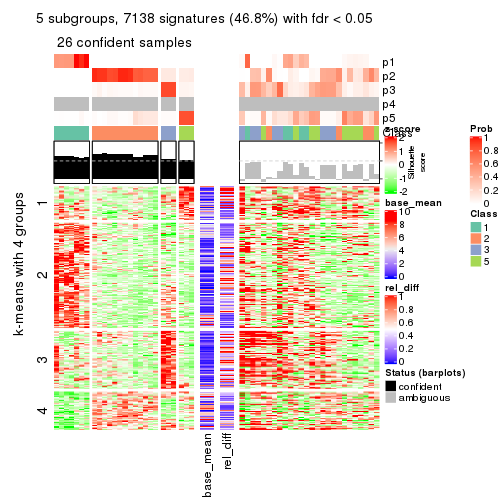
get_signatures(res, k = 6)
Signature heatmaps where rows are not scaled:
get_signatures(res, k = 2, scale_rows = FALSE)
get_signatures(res, k = 3, scale_rows = FALSE)
get_signatures(res, k = 4, scale_rows = FALSE)
get_signatures(res, k = 5, scale_rows = FALSE)
get_signatures(res, k = 6, scale_rows = FALSE)
Compare the overlap of signatures from different k:
compare_signatures(res)
get_signature() returns a data frame invisibly. TO get the list of signatures, the function
call should be assigned to a variable explicitly. In following code, if plot argument is set
to FALSE, no heatmap is plotted while only the differential analysis is performed.
# code only for demonstration
tb = get_signature(res, k = ..., plot = FALSE)
An example of the output of tb is:
#> which_row fdr mean_1 mean_2 scaled_mean_1 scaled_mean_2 km
#> 1 38 0.042760348 8.373488 9.131774 -0.5533452 0.5164555 1
#> 2 40 0.018707592 7.106213 8.469186 -0.6173731 0.5762149 1
#> 3 55 0.019134737 10.221463 11.207825 -0.6159697 0.5749050 1
#> 4 59 0.006059896 5.921854 7.869574 -0.6899429 0.6439467 1
#> 5 60 0.018055526 8.928898 10.211722 -0.6204761 0.5791110 1
#> 6 98 0.009384629 15.714769 14.887706 0.6635654 -0.6193277 2
...
The columns in tb are:
which_row: row indices corresponding to the input matrix.fdr: FDR for the differential test. mean_x: The mean value in group x.scaled_mean_x: The mean value in group x after rows are scaled.km: Row groups if k-means clustering is applied to rows.UMAP plot which shows how samples are separated.
dimension_reduction(res, k = 2, method = "UMAP")
dimension_reduction(res, k = 3, method = "UMAP")
dimension_reduction(res, k = 4, method = "UMAP")
dimension_reduction(res, k = 5, method = "UMAP")
dimension_reduction(res, k = 6, method = "UMAP")
Following heatmap shows how subgroups are split when increasing k:
collect_classes(res)
If matrix rows can be associated to genes, consider to use functional_enrichment(res,
...) to perform function enrichment for the signature genes. See this vignette for more detailed explanations.
The object with results only for a single top-value method and a single partition method can be extracted as:
res = res_list["SD", "skmeans"]
# you can also extract it by
# res = res_list["SD:skmeans"]
A summary of res and all the functions that can be applied to it:
res
#> A 'ConsensusPartition' object with k = 2, 3, 4, 5, 6.
#> On a matrix with 15239 rows and 52 columns.
#> Top rows (1000, 2000, 3000, 4000, 5000) are extracted by 'SD' method.
#> Subgroups are detected by 'skmeans' method.
#> Performed in total 1250 partitions by row resampling.
#> Best k for subgroups seems to be 2.
#>
#> Following methods can be applied to this 'ConsensusPartition' object:
#> [1] "cola_report" "collect_classes" "collect_plots"
#> [4] "collect_stats" "colnames" "compare_signatures"
#> [7] "consensus_heatmap" "dimension_reduction" "functional_enrichment"
#> [10] "get_anno_col" "get_anno" "get_classes"
#> [13] "get_consensus" "get_matrix" "get_membership"
#> [16] "get_param" "get_signatures" "get_stats"
#> [19] "is_best_k" "is_stable_k" "membership_heatmap"
#> [22] "ncol" "nrow" "plot_ecdf"
#> [25] "rownames" "select_partition_number" "show"
#> [28] "suggest_best_k" "test_to_known_factors"
collect_plots() function collects all the plots made from res for all k (number of partitions)
into one single page to provide an easy and fast comparison between different k.
collect_plots(res)
The plots are:
k and the heatmap of
predicted classes for each k.k.k.k.All the plots in panels can be made by individual functions and they are plotted later in this section.
select_partition_number() produces several plots showing different
statistics for choosing “optimized” k. There are following statistics:
k;k, the area increased is defined as \(A_k - A_{k-1}\).The detailed explanations of these statistics can be found in the cola vignette.
Generally speaking, lower PAC score, higher mean silhouette score or higher
concordance corresponds to better partition. Rand index and Jaccard index
measure how similar the current partition is compared to partition with k-1.
If they are too similar, we won't accept k is better than k-1.
select_partition_number(res)
The numeric values for all these statistics can be obtained by get_stats().
get_stats(res)
#> k 1-PAC mean_silhouette concordance area_increased Rand Jaccard
#> 2 2 0.746 0.922 0.965 0.5027 0.493 0.493
#> 3 3 0.551 0.559 0.784 0.3362 0.679 0.435
#> 4 4 0.650 0.669 0.828 0.1249 0.867 0.618
#> 5 5 0.682 0.510 0.717 0.0648 0.910 0.669
#> 6 6 0.703 0.563 0.689 0.0384 0.899 0.565
suggest_best_k() suggests the best \(k\) based on these statistics. The rules are as follows:
suggest_best_k(res)
#> [1] 2
Following shows the table of the partitions (You need to click the show/hide
code output link to see it). The membership matrix (columns with name p*)
is inferred by
clue::cl_consensus()
function with the SE method. Basically the value in the membership matrix
represents the probability to belong to a certain group. The finall class
label for an item is determined with the group with highest probability it
belongs to.
In get_classes() function, the entropy is calculated from the membership
matrix and the silhouette score is calculated from the consensus matrix.
cbind(get_classes(res, k = 2), get_membership(res, k = 2))
#> class entropy silhouette p1 p2
#> SRR633556 2 0.0000 0.979 0.000 1.000
#> SRR633557 2 0.0000 0.979 0.000 1.000
#> SRR633558 2 0.0000 0.979 0.000 1.000
#> SRR633559 2 0.0000 0.979 0.000 1.000
#> SRR633560 2 0.5519 0.840 0.128 0.872
#> SRR633561 2 0.0000 0.979 0.000 1.000
#> SRR633563 1 0.0000 0.939 1.000 0.000
#> SRR633564 1 0.0000 0.939 1.000 0.000
#> SRR633565 1 0.0000 0.939 1.000 0.000
#> SRR633566 1 0.0000 0.939 1.000 0.000
#> SRR633567 1 0.0000 0.939 1.000 0.000
#> SRR633568 1 0.6048 0.809 0.852 0.148
#> SRR633569 1 0.0000 0.939 1.000 0.000
#> SRR633570 1 0.0000 0.939 1.000 0.000
#> SRR633571 1 0.0000 0.939 1.000 0.000
#> SRR633572 2 0.0000 0.979 0.000 1.000
#> SRR633573 2 0.0000 0.979 0.000 1.000
#> SRR633574 2 0.0000 0.979 0.000 1.000
#> SRR633575 2 0.0000 0.979 0.000 1.000
#> SRR633576 2 0.0000 0.979 0.000 1.000
#> SRR633577 1 0.0000 0.939 1.000 0.000
#> SRR633578 1 0.0000 0.939 1.000 0.000
#> SRR633579 2 0.0000 0.979 0.000 1.000
#> SRR633580 2 0.0000 0.979 0.000 1.000
#> SRR633581 2 0.0000 0.979 0.000 1.000
#> SRR633582 2 0.0000 0.979 0.000 1.000
#> SRR633583 2 0.0000 0.979 0.000 1.000
#> SRR633584 1 0.1843 0.920 0.972 0.028
#> SRR633585 2 0.0000 0.979 0.000 1.000
#> SRR633586 2 0.0000 0.979 0.000 1.000
#> SRR633587 2 0.0000 0.979 0.000 1.000
#> SRR633588 2 0.0000 0.979 0.000 1.000
#> SRR633589 2 0.0000 0.979 0.000 1.000
#> SRR633590 2 0.0000 0.979 0.000 1.000
#> SRR633591 2 0.0000 0.979 0.000 1.000
#> SRR633592 2 0.0000 0.979 0.000 1.000
#> SRR633593 1 0.0000 0.939 1.000 0.000
#> SRR633594 1 0.0000 0.939 1.000 0.000
#> SRR633595 1 0.0000 0.939 1.000 0.000
#> SRR633596 1 0.0000 0.939 1.000 0.000
#> SRR633597 1 0.0000 0.939 1.000 0.000
#> SRR633598 1 0.9044 0.550 0.680 0.320
#> SRR633599 1 0.8443 0.649 0.728 0.272
#> SRR633600 2 0.7745 0.698 0.228 0.772
#> SRR633601 1 0.0000 0.939 1.000 0.000
#> SRR633602 1 0.0000 0.939 1.000 0.000
#> SRR633603 2 0.0000 0.979 0.000 1.000
#> SRR633604 2 0.0376 0.976 0.004 0.996
#> SRR633605 1 0.8443 0.649 0.728 0.272
#> SRR633606 1 0.8443 0.649 0.728 0.272
#> SRR633607 2 0.6343 0.797 0.160 0.840
#> SRR633608 1 0.0000 0.939 1.000 0.000
cbind(get_classes(res, k = 3), get_membership(res, k = 3))
#> class entropy silhouette p1 p2 p3
#> SRR633556 2 0.6309 0.576 0.000 0.504 0.496
#> SRR633557 3 0.0892 0.560 0.000 0.020 0.980
#> SRR633558 2 0.6307 0.579 0.000 0.512 0.488
#> SRR633559 2 0.6309 0.576 0.000 0.504 0.496
#> SRR633560 2 0.6305 0.580 0.000 0.516 0.484
#> SRR633561 2 0.6286 0.583 0.000 0.536 0.464
#> SRR633563 1 0.0000 0.912 1.000 0.000 0.000
#> SRR633564 1 0.0000 0.912 1.000 0.000 0.000
#> SRR633565 1 0.0000 0.912 1.000 0.000 0.000
#> SRR633566 1 0.0000 0.912 1.000 0.000 0.000
#> SRR633567 1 0.0000 0.912 1.000 0.000 0.000
#> SRR633568 1 0.5988 0.311 0.632 0.000 0.368
#> SRR633569 1 0.0000 0.912 1.000 0.000 0.000
#> SRR633570 1 0.0000 0.912 1.000 0.000 0.000
#> SRR633571 1 0.0000 0.912 1.000 0.000 0.000
#> SRR633572 3 0.6308 -0.608 0.000 0.492 0.508
#> SRR633573 2 0.5650 0.556 0.000 0.688 0.312
#> SRR633574 2 0.5650 0.556 0.000 0.688 0.312
#> SRR633575 2 0.5650 0.556 0.000 0.688 0.312
#> SRR633576 2 0.1643 0.358 0.000 0.956 0.044
#> SRR633577 1 0.0000 0.912 1.000 0.000 0.000
#> SRR633578 3 0.9461 0.410 0.292 0.216 0.492
#> SRR633579 3 0.4796 0.610 0.000 0.220 0.780
#> SRR633580 3 0.4796 0.610 0.000 0.220 0.780
#> SRR633581 3 0.4796 0.610 0.000 0.220 0.780
#> SRR633582 2 0.6308 0.578 0.000 0.508 0.492
#> SRR633583 2 0.6309 0.576 0.000 0.504 0.496
#> SRR633584 1 0.5420 0.585 0.752 0.008 0.240
#> SRR633585 2 0.6295 0.578 0.000 0.528 0.472
#> SRR633586 3 0.0000 0.572 0.000 0.000 1.000
#> SRR633587 3 0.0592 0.558 0.000 0.012 0.988
#> SRR633588 3 0.0000 0.572 0.000 0.000 1.000
#> SRR633589 2 0.6309 0.576 0.000 0.504 0.496
#> SRR633590 3 0.0000 0.572 0.000 0.000 1.000
#> SRR633591 3 0.0000 0.572 0.000 0.000 1.000
#> SRR633592 3 0.0000 0.572 0.000 0.000 1.000
#> SRR633593 1 0.4346 0.769 0.816 0.184 0.000
#> SRR633594 2 0.6192 0.066 0.420 0.580 0.000
#> SRR633595 1 0.3192 0.833 0.888 0.112 0.000
#> SRR633596 1 0.5363 0.660 0.724 0.276 0.000
#> SRR633597 1 0.0000 0.912 1.000 0.000 0.000
#> SRR633598 3 0.9391 0.461 0.212 0.284 0.504
#> SRR633599 2 0.6386 -0.200 0.412 0.584 0.004
#> SRR633600 2 0.0000 0.319 0.000 1.000 0.000
#> SRR633601 3 0.9438 0.434 0.244 0.252 0.504
#> SRR633602 1 0.0000 0.912 1.000 0.000 0.000
#> SRR633603 3 0.6307 0.493 0.000 0.488 0.512
#> SRR633604 3 0.6308 0.492 0.000 0.492 0.508
#> SRR633605 2 0.7181 -0.207 0.408 0.564 0.028
#> SRR633606 2 0.6398 -0.208 0.416 0.580 0.004
#> SRR633607 3 0.6309 0.489 0.000 0.496 0.504
#> SRR633608 1 0.0592 0.904 0.988 0.000 0.012
cbind(get_classes(res, k = 4), get_membership(res, k = 4))
#> class entropy silhouette p1 p2 p3 p4
#> SRR633556 2 0.3377 0.77413 0.000 0.848 0.140 0.012
#> SRR633557 3 0.5105 0.11727 0.000 0.432 0.564 0.004
#> SRR633558 2 0.3606 0.77060 0.000 0.840 0.140 0.020
#> SRR633559 2 0.3249 0.77358 0.000 0.852 0.140 0.008
#> SRR633560 2 0.7046 0.39401 0.000 0.524 0.136 0.340
#> SRR633561 2 0.2871 0.77693 0.000 0.896 0.072 0.032
#> SRR633563 1 0.0000 0.95596 1.000 0.000 0.000 0.000
#> SRR633564 1 0.0000 0.95596 1.000 0.000 0.000 0.000
#> SRR633565 1 0.0000 0.95596 1.000 0.000 0.000 0.000
#> SRR633566 1 0.0000 0.95596 1.000 0.000 0.000 0.000
#> SRR633567 1 0.0188 0.95486 0.996 0.000 0.000 0.004
#> SRR633568 1 0.3708 0.77477 0.832 0.000 0.148 0.020
#> SRR633569 1 0.0592 0.95125 0.984 0.000 0.000 0.016
#> SRR633570 1 0.0592 0.95125 0.984 0.000 0.000 0.016
#> SRR633571 1 0.0592 0.95125 0.984 0.000 0.000 0.016
#> SRR633572 2 0.3105 0.77424 0.000 0.856 0.140 0.004
#> SRR633573 2 0.2149 0.73249 0.000 0.912 0.000 0.088
#> SRR633574 2 0.2149 0.73249 0.000 0.912 0.000 0.088
#> SRR633575 2 0.2149 0.73249 0.000 0.912 0.000 0.088
#> SRR633576 2 0.3219 0.69514 0.000 0.868 0.020 0.112
#> SRR633577 1 0.0000 0.95596 1.000 0.000 0.000 0.000
#> SRR633578 3 0.7036 0.41720 0.268 0.016 0.600 0.116
#> SRR633579 3 0.1929 0.71579 0.000 0.024 0.940 0.036
#> SRR633580 3 0.1929 0.71579 0.000 0.024 0.940 0.036
#> SRR633581 3 0.1929 0.71579 0.000 0.024 0.940 0.036
#> SRR633582 2 0.2775 0.78367 0.000 0.896 0.084 0.020
#> SRR633583 2 0.3105 0.77424 0.000 0.856 0.140 0.004
#> SRR633584 4 0.9086 0.26509 0.220 0.092 0.248 0.440
#> SRR633585 2 0.3149 0.77221 0.000 0.880 0.088 0.032
#> SRR633586 3 0.1489 0.72646 0.000 0.044 0.952 0.004
#> SRR633587 3 0.3694 0.66481 0.000 0.124 0.844 0.032
#> SRR633588 3 0.1576 0.72606 0.000 0.048 0.948 0.004
#> SRR633589 2 0.7910 0.15175 0.000 0.364 0.316 0.320
#> SRR633590 3 0.1978 0.72043 0.000 0.068 0.928 0.004
#> SRR633591 3 0.1978 0.72043 0.000 0.068 0.928 0.004
#> SRR633592 3 0.1637 0.72385 0.000 0.060 0.940 0.000
#> SRR633593 4 0.4552 0.69016 0.128 0.048 0.012 0.812
#> SRR633594 2 0.7898 0.00891 0.104 0.472 0.044 0.380
#> SRR633595 4 0.4556 0.67908 0.156 0.032 0.012 0.800
#> SRR633596 4 0.2803 0.71101 0.080 0.008 0.012 0.900
#> SRR633597 1 0.3801 0.70491 0.780 0.000 0.000 0.220
#> SRR633598 3 0.7216 0.19104 0.064 0.032 0.492 0.412
#> SRR633599 4 0.2365 0.73363 0.012 0.064 0.004 0.920
#> SRR633600 4 0.3448 0.68203 0.000 0.168 0.004 0.828
#> SRR633601 3 0.6633 0.22812 0.084 0.000 0.500 0.416
#> SRR633602 1 0.0895 0.94403 0.976 0.000 0.004 0.020
#> SRR633603 3 0.7003 0.25850 0.000 0.124 0.508 0.368
#> SRR633604 3 0.5785 0.48439 0.000 0.064 0.664 0.272
#> SRR633605 4 0.2641 0.73259 0.012 0.064 0.012 0.912
#> SRR633606 4 0.2641 0.73259 0.012 0.064 0.012 0.912
#> SRR633607 4 0.6605 -0.20116 0.000 0.080 0.440 0.480
#> SRR633608 1 0.0188 0.95396 0.996 0.000 0.004 0.000
cbind(get_classes(res, k = 5), get_membership(res, k = 5))
#> class entropy silhouette p1 p2 p3 p4 p5
#> SRR633556 2 0.0290 0.6219 0.000 0.992 0.000 0.008 0.000
#> SRR633557 2 0.5959 0.1859 0.000 0.576 0.296 0.124 0.004
#> SRR633558 2 0.0898 0.6135 0.000 0.972 0.000 0.008 0.020
#> SRR633559 2 0.0162 0.6226 0.000 0.996 0.000 0.004 0.000
#> SRR633560 2 0.3527 0.4886 0.000 0.792 0.000 0.016 0.192
#> SRR633561 2 0.4359 0.4888 0.000 0.584 0.000 0.412 0.004
#> SRR633563 1 0.0000 0.8972 1.000 0.000 0.000 0.000 0.000
#> SRR633564 1 0.0000 0.8972 1.000 0.000 0.000 0.000 0.000
#> SRR633565 1 0.0000 0.8972 1.000 0.000 0.000 0.000 0.000
#> SRR633566 1 0.0000 0.8972 1.000 0.000 0.000 0.000 0.000
#> SRR633567 1 0.0404 0.8946 0.988 0.000 0.000 0.000 0.012
#> SRR633568 1 0.5221 0.6450 0.696 0.000 0.128 0.172 0.004
#> SRR633569 1 0.2136 0.8676 0.904 0.000 0.008 0.088 0.000
#> SRR633570 1 0.2011 0.8699 0.908 0.000 0.004 0.088 0.000
#> SRR633571 1 0.2011 0.8699 0.908 0.000 0.004 0.088 0.000
#> SRR633572 2 0.1211 0.6137 0.000 0.960 0.016 0.024 0.000
#> SRR633573 2 0.5985 0.3815 0.000 0.480 0.000 0.408 0.112
#> SRR633574 2 0.5985 0.3815 0.000 0.480 0.000 0.408 0.112
#> SRR633575 2 0.5985 0.3815 0.000 0.480 0.000 0.408 0.112
#> SRR633576 4 0.6718 -0.3276 0.000 0.328 0.000 0.412 0.260
#> SRR633577 1 0.0510 0.8962 0.984 0.000 0.000 0.016 0.000
#> SRR633578 3 0.6126 0.2958 0.176 0.000 0.656 0.116 0.052
#> SRR633579 3 0.0613 0.6703 0.004 0.000 0.984 0.008 0.004
#> SRR633580 3 0.0613 0.6703 0.004 0.000 0.984 0.008 0.004
#> SRR633581 3 0.0613 0.6703 0.004 0.000 0.984 0.008 0.004
#> SRR633582 2 0.4251 0.5070 0.000 0.624 0.004 0.372 0.000
#> SRR633583 2 0.0290 0.6231 0.000 0.992 0.000 0.008 0.000
#> SRR633584 5 0.8708 0.1340 0.060 0.232 0.064 0.260 0.384
#> SRR633585 2 0.4367 0.4883 0.000 0.580 0.000 0.416 0.004
#> SRR633586 3 0.4674 0.6891 0.000 0.148 0.748 0.100 0.004
#> SRR633587 3 0.5790 0.4806 0.000 0.424 0.508 0.048 0.020
#> SRR633588 3 0.5039 0.6855 0.000 0.188 0.708 0.100 0.004
#> SRR633589 2 0.5495 0.3067 0.000 0.700 0.152 0.024 0.124
#> SRR633590 3 0.4550 0.6830 0.000 0.276 0.688 0.036 0.000
#> SRR633591 3 0.4550 0.6830 0.000 0.276 0.688 0.036 0.000
#> SRR633592 3 0.3954 0.7165 0.000 0.192 0.772 0.036 0.000
#> SRR633593 5 0.5316 0.2570 0.016 0.016 0.004 0.448 0.516
#> SRR633594 4 0.3449 0.1547 0.004 0.120 0.000 0.836 0.040
#> SRR633595 5 0.5306 0.2600 0.020 0.012 0.004 0.444 0.520
#> SRR633596 5 0.4675 0.3258 0.020 0.004 0.000 0.336 0.640
#> SRR633597 1 0.7045 0.1213 0.432 0.004 0.008 0.296 0.260
#> SRR633598 4 0.5817 0.1256 0.004 0.000 0.388 0.524 0.084
#> SRR633599 5 0.0324 0.4711 0.004 0.000 0.004 0.000 0.992
#> SRR633600 5 0.4301 0.2116 0.000 0.028 0.000 0.260 0.712
#> SRR633601 4 0.7289 0.0802 0.056 0.000 0.388 0.412 0.144
#> SRR633602 1 0.1270 0.8725 0.948 0.000 0.000 0.000 0.052
#> SRR633603 5 0.6296 0.0662 0.000 0.000 0.408 0.152 0.440
#> SRR633604 5 0.4561 0.1363 0.000 0.000 0.488 0.008 0.504
#> SRR633605 5 0.0566 0.4720 0.004 0.000 0.012 0.000 0.984
#> SRR633606 5 0.0566 0.4720 0.004 0.000 0.012 0.000 0.984
#> SRR633607 5 0.5396 0.1980 0.000 0.000 0.376 0.064 0.560
#> SRR633608 1 0.0290 0.8943 0.992 0.000 0.008 0.000 0.000
cbind(get_classes(res, k = 6), get_membership(res, k = 6))
#> class entropy silhouette p1 p2 p3 p4 p5 p6
#> SRR633556 2 0.3684 0.7330 0.000 0.664 0.004 0.332 0.000 0.000
#> SRR633557 4 0.7745 -0.1856 0.000 0.296 0.120 0.332 0.016 0.236
#> SRR633558 2 0.4096 0.7354 0.000 0.672 0.000 0.304 0.008 0.016
#> SRR633559 2 0.3668 0.7304 0.000 0.668 0.004 0.328 0.000 0.000
#> SRR633560 2 0.5016 0.7023 0.000 0.636 0.000 0.276 0.072 0.016
#> SRR633561 4 0.2261 0.6863 0.000 0.104 0.004 0.884 0.000 0.008
#> SRR633563 1 0.0000 0.8406 1.000 0.000 0.000 0.000 0.000 0.000
#> SRR633564 1 0.0000 0.8406 1.000 0.000 0.000 0.000 0.000 0.000
#> SRR633565 1 0.0260 0.8389 0.992 0.008 0.000 0.000 0.000 0.000
#> SRR633566 1 0.0000 0.8406 1.000 0.000 0.000 0.000 0.000 0.000
#> SRR633567 1 0.1649 0.8149 0.936 0.016 0.000 0.000 0.040 0.008
#> SRR633568 1 0.7421 0.3518 0.444 0.120 0.040 0.008 0.068 0.320
#> SRR633569 1 0.5534 0.6905 0.676 0.128 0.000 0.004 0.068 0.124
#> SRR633570 1 0.5200 0.7099 0.704 0.120 0.000 0.004 0.052 0.120
#> SRR633571 1 0.5200 0.7099 0.704 0.120 0.000 0.004 0.052 0.120
#> SRR633572 2 0.4817 0.6475 0.000 0.584 0.024 0.372 0.008 0.012
#> SRR633573 4 0.1078 0.7349 0.000 0.016 0.008 0.964 0.000 0.012
#> SRR633574 4 0.1078 0.7349 0.000 0.016 0.008 0.964 0.000 0.012
#> SRR633575 4 0.1078 0.7349 0.000 0.016 0.008 0.964 0.000 0.012
#> SRR633576 4 0.2053 0.6690 0.000 0.000 0.004 0.888 0.000 0.108
#> SRR633577 1 0.1078 0.8359 0.964 0.016 0.000 0.008 0.000 0.012
#> SRR633578 3 0.6254 0.3361 0.136 0.036 0.636 0.000 0.068 0.124
#> SRR633579 3 0.0547 0.6569 0.000 0.000 0.980 0.000 0.000 0.020
#> SRR633580 3 0.0547 0.6569 0.000 0.000 0.980 0.000 0.000 0.020
#> SRR633581 3 0.0547 0.6569 0.000 0.000 0.980 0.000 0.000 0.020
#> SRR633582 4 0.5053 0.3308 0.000 0.360 0.000 0.576 0.028 0.036
#> SRR633583 2 0.3429 0.7165 0.000 0.740 0.004 0.252 0.004 0.000
#> SRR633584 5 0.5596 0.2618 0.012 0.428 0.008 0.012 0.492 0.048
#> SRR633585 4 0.2473 0.6852 0.000 0.104 0.008 0.876 0.000 0.012
#> SRR633586 3 0.6169 0.5415 0.000 0.220 0.536 0.008 0.016 0.220
#> SRR633587 2 0.4518 -0.0612 0.000 0.612 0.356 0.012 0.004 0.016
#> SRR633588 3 0.6376 0.4926 0.000 0.276 0.484 0.008 0.016 0.216
#> SRR633589 2 0.4160 0.6183 0.000 0.788 0.076 0.084 0.052 0.000
#> SRR633590 3 0.4495 0.6035 0.000 0.312 0.648 0.008 0.004 0.028
#> SRR633591 3 0.4495 0.6035 0.000 0.312 0.648 0.008 0.004 0.028
#> SRR633592 3 0.4400 0.6337 0.000 0.276 0.680 0.008 0.004 0.032
#> SRR633593 5 0.1312 0.4518 0.004 0.020 0.000 0.008 0.956 0.012
#> SRR633594 5 0.4634 0.1025 0.004 0.008 0.004 0.428 0.544 0.012
#> SRR633595 5 0.1269 0.4524 0.012 0.020 0.000 0.000 0.956 0.012
#> SRR633596 5 0.3589 0.1848 0.008 0.012 0.000 0.000 0.752 0.228
#> SRR633597 5 0.6868 0.1029 0.288 0.156 0.000 0.000 0.460 0.096
#> SRR633598 5 0.6056 0.3511 0.004 0.008 0.168 0.016 0.572 0.232
#> SRR633599 6 0.4696 0.6010 0.000 0.000 0.000 0.056 0.356 0.588
#> SRR633600 6 0.5440 0.5089 0.000 0.000 0.000 0.288 0.156 0.556
#> SRR633601 5 0.6973 0.2674 0.032 0.028 0.184 0.000 0.432 0.324
#> SRR633602 1 0.3072 0.7688 0.872 0.020 0.020 0.000 0.048 0.040
#> SRR633603 6 0.5698 0.2888 0.000 0.012 0.188 0.160 0.016 0.624
#> SRR633604 6 0.5111 0.4735 0.000 0.016 0.332 0.024 0.024 0.604
#> SRR633605 6 0.4709 0.6052 0.000 0.000 0.004 0.048 0.352 0.596
#> SRR633606 6 0.4709 0.6052 0.000 0.000 0.004 0.048 0.352 0.596
#> SRR633607 6 0.4840 0.5522 0.000 0.000 0.224 0.068 0.024 0.684
#> SRR633608 1 0.0909 0.8351 0.968 0.012 0.000 0.000 0.000 0.020
Heatmaps for the consensus matrix. It visualizes the probability of two samples to be in a same group.
consensus_heatmap(res, k = 2)
consensus_heatmap(res, k = 3)
consensus_heatmap(res, k = 4)
consensus_heatmap(res, k = 5)
consensus_heatmap(res, k = 6)
Heatmaps for the membership of samples in all partitions to see how consistent they are:
membership_heatmap(res, k = 2)
membership_heatmap(res, k = 3)
membership_heatmap(res, k = 4)
membership_heatmap(res, k = 5)
membership_heatmap(res, k = 6)
As soon as we have had the classes for columns, we can look for signatures which are significantly different between classes which can be candidate marks for certain classes. Following are the heatmaps for signatures.
Signature heatmaps where rows are scaled:
get_signatures(res, k = 2)
get_signatures(res, k = 3)

get_signatures(res, k = 4)
get_signatures(res, k = 5)
get_signatures(res, k = 6)

Signature heatmaps where rows are not scaled:
get_signatures(res, k = 2, scale_rows = FALSE)
get_signatures(res, k = 3, scale_rows = FALSE)
get_signatures(res, k = 4, scale_rows = FALSE)
get_signatures(res, k = 5, scale_rows = FALSE)
get_signatures(res, k = 6, scale_rows = FALSE)
Compare the overlap of signatures from different k:
compare_signatures(res)
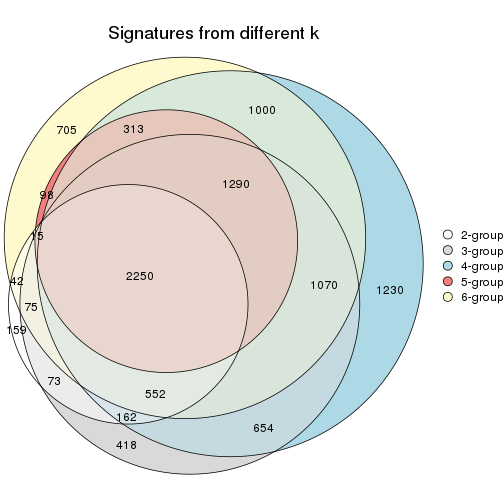
get_signature() returns a data frame invisibly. TO get the list of signatures, the function
call should be assigned to a variable explicitly. In following code, if plot argument is set
to FALSE, no heatmap is plotted while only the differential analysis is performed.
# code only for demonstration
tb = get_signature(res, k = ..., plot = FALSE)
An example of the output of tb is:
#> which_row fdr mean_1 mean_2 scaled_mean_1 scaled_mean_2 km
#> 1 38 0.042760348 8.373488 9.131774 -0.5533452 0.5164555 1
#> 2 40 0.018707592 7.106213 8.469186 -0.6173731 0.5762149 1
#> 3 55 0.019134737 10.221463 11.207825 -0.6159697 0.5749050 1
#> 4 59 0.006059896 5.921854 7.869574 -0.6899429 0.6439467 1
#> 5 60 0.018055526 8.928898 10.211722 -0.6204761 0.5791110 1
#> 6 98 0.009384629 15.714769 14.887706 0.6635654 -0.6193277 2
...
The columns in tb are:
which_row: row indices corresponding to the input matrix.fdr: FDR for the differential test. mean_x: The mean value in group x.scaled_mean_x: The mean value in group x after rows are scaled.km: Row groups if k-means clustering is applied to rows.UMAP plot which shows how samples are separated.
dimension_reduction(res, k = 2, method = "UMAP")
dimension_reduction(res, k = 3, method = "UMAP")
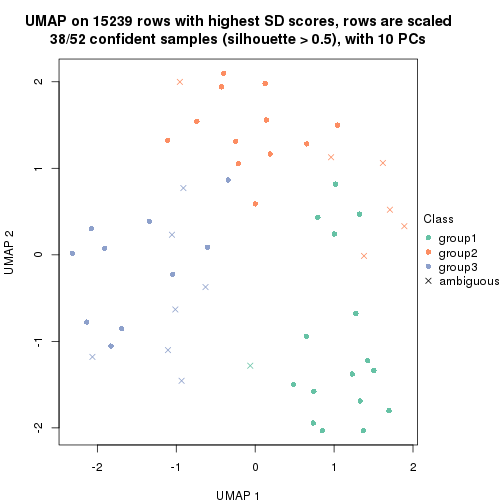
dimension_reduction(res, k = 4, method = "UMAP")
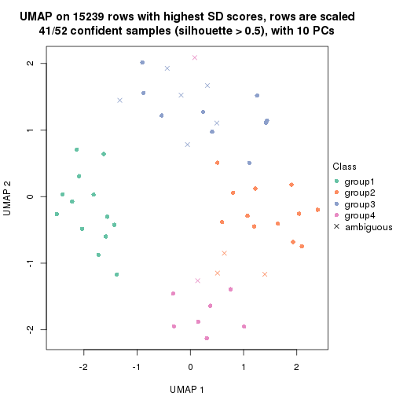
dimension_reduction(res, k = 5, method = "UMAP")
dimension_reduction(res, k = 6, method = "UMAP")
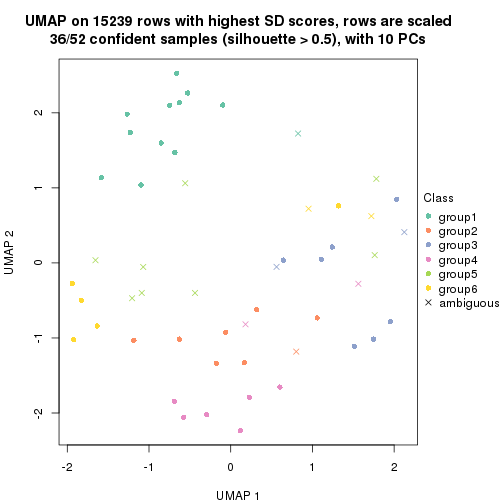
Following heatmap shows how subgroups are split when increasing k:
collect_classes(res)
If matrix rows can be associated to genes, consider to use functional_enrichment(res,
...) to perform function enrichment for the signature genes. See this vignette for more detailed explanations.
The object with results only for a single top-value method and a single partition method can be extracted as:
res = res_list["SD", "pam"]
# you can also extract it by
# res = res_list["SD:pam"]
A summary of res and all the functions that can be applied to it:
res
#> A 'ConsensusPartition' object with k = 2, 3, 4, 5, 6.
#> On a matrix with 15239 rows and 52 columns.
#> Top rows (1000, 2000, 3000, 4000, 5000) are extracted by 'SD' method.
#> Subgroups are detected by 'pam' method.
#> Performed in total 1250 partitions by row resampling.
#> Best k for subgroups seems to be 3.
#>
#> Following methods can be applied to this 'ConsensusPartition' object:
#> [1] "cola_report" "collect_classes" "collect_plots"
#> [4] "collect_stats" "colnames" "compare_signatures"
#> [7] "consensus_heatmap" "dimension_reduction" "functional_enrichment"
#> [10] "get_anno_col" "get_anno" "get_classes"
#> [13] "get_consensus" "get_matrix" "get_membership"
#> [16] "get_param" "get_signatures" "get_stats"
#> [19] "is_best_k" "is_stable_k" "membership_heatmap"
#> [22] "ncol" "nrow" "plot_ecdf"
#> [25] "rownames" "select_partition_number" "show"
#> [28] "suggest_best_k" "test_to_known_factors"
collect_plots() function collects all the plots made from res for all k (number of partitions)
into one single page to provide an easy and fast comparison between different k.
collect_plots(res)
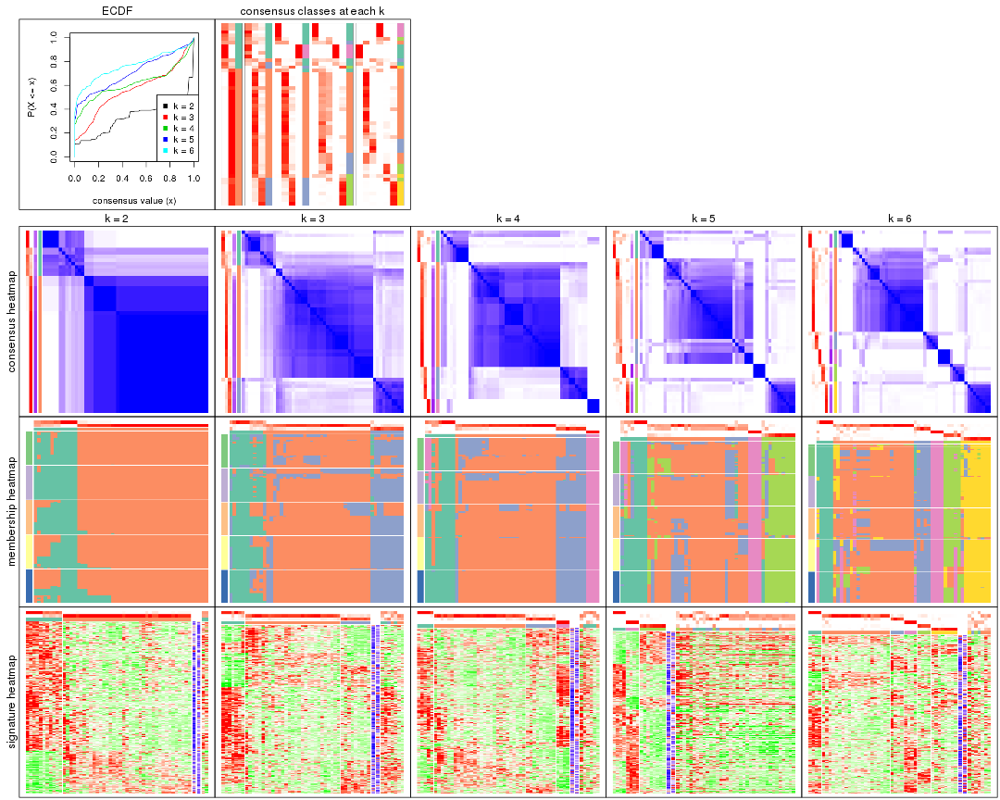
The plots are:
k and the heatmap of
predicted classes for each k.k.k.k.All the plots in panels can be made by individual functions and they are plotted later in this section.
select_partition_number() produces several plots showing different
statistics for choosing “optimized” k. There are following statistics:
k;k, the area increased is defined as \(A_k - A_{k-1}\).The detailed explanations of these statistics can be found in the cola vignette.
Generally speaking, lower PAC score, higher mean silhouette score or higher
concordance corresponds to better partition. Rand index and Jaccard index
measure how similar the current partition is compared to partition with k-1.
If they are too similar, we won't accept k is better than k-1.
select_partition_number(res)
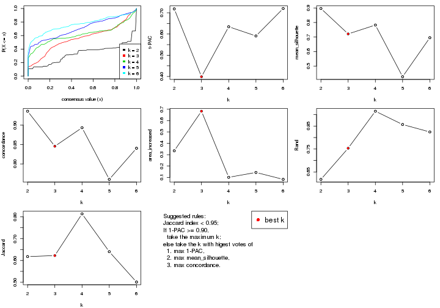
The numeric values for all these statistics can be obtained by get_stats().
get_stats(res)
#> k 1-PAC mean_silhouette concordance area_increased Rand Jaccard
#> 2 2 0.719 0.896 0.936 0.3345 0.618 0.618
#> 3 3 0.399 0.722 0.846 0.6828 0.753 0.622
#> 4 4 0.634 0.783 0.893 0.1013 0.915 0.814
#> 5 5 0.591 0.427 0.760 0.1438 0.857 0.640
#> 6 6 0.720 0.695 0.840 0.0829 0.824 0.501
suggest_best_k() suggests the best \(k\) based on these statistics. The rules are as follows:
suggest_best_k(res)
#> [1] 3
Following shows the table of the partitions (You need to click the show/hide
code output link to see it). The membership matrix (columns with name p*)
is inferred by
clue::cl_consensus()
function with the SE method. Basically the value in the membership matrix
represents the probability to belong to a certain group. The finall class
label for an item is determined with the group with highest probability it
belongs to.
In get_classes() function, the entropy is calculated from the membership
matrix and the silhouette score is calculated from the consensus matrix.
cbind(get_classes(res, k = 2), get_membership(res, k = 2))
#> class entropy silhouette p1 p2
#> SRR633556 2 0.0000 0.975 0.000 1.000
#> SRR633557 2 0.0000 0.975 0.000 1.000
#> SRR633558 2 0.0000 0.975 0.000 1.000
#> SRR633559 2 0.0000 0.975 0.000 1.000
#> SRR633560 2 0.2778 0.941 0.048 0.952
#> SRR633561 2 0.0000 0.975 0.000 1.000
#> SRR633563 1 0.0000 0.777 1.000 0.000
#> SRR633564 1 0.0000 0.777 1.000 0.000
#> SRR633565 1 0.0000 0.777 1.000 0.000
#> SRR633566 1 0.0000 0.777 1.000 0.000
#> SRR633567 1 0.6973 0.778 0.812 0.188
#> SRR633568 1 0.9248 0.701 0.660 0.340
#> SRR633569 1 0.9000 0.720 0.684 0.316
#> SRR633570 1 0.0000 0.777 1.000 0.000
#> SRR633571 1 0.7602 0.775 0.780 0.220
#> SRR633572 2 0.0000 0.975 0.000 1.000
#> SRR633573 2 0.0000 0.975 0.000 1.000
#> SRR633574 2 0.0000 0.975 0.000 1.000
#> SRR633575 2 0.0000 0.975 0.000 1.000
#> SRR633576 2 0.0000 0.975 0.000 1.000
#> SRR633577 1 0.9963 0.462 0.536 0.464
#> SRR633578 2 0.0000 0.975 0.000 1.000
#> SRR633579 2 0.0000 0.975 0.000 1.000
#> SRR633580 2 0.0000 0.975 0.000 1.000
#> SRR633581 2 0.0000 0.975 0.000 1.000
#> SRR633582 2 0.0000 0.975 0.000 1.000
#> SRR633583 2 0.0000 0.975 0.000 1.000
#> SRR633584 2 0.5629 0.838 0.132 0.868
#> SRR633585 2 0.0000 0.975 0.000 1.000
#> SRR633586 2 0.0000 0.975 0.000 1.000
#> SRR633587 2 0.0000 0.975 0.000 1.000
#> SRR633588 2 0.0000 0.975 0.000 1.000
#> SRR633589 2 0.0000 0.975 0.000 1.000
#> SRR633590 2 0.0000 0.975 0.000 1.000
#> SRR633591 2 0.0000 0.975 0.000 1.000
#> SRR633592 2 0.0000 0.975 0.000 1.000
#> SRR633593 2 0.0000 0.975 0.000 1.000
#> SRR633594 2 0.0000 0.975 0.000 1.000
#> SRR633595 2 0.5737 0.832 0.136 0.864
#> SRR633596 2 0.5629 0.838 0.132 0.868
#> SRR633597 1 0.8763 0.729 0.704 0.296
#> SRR633598 2 0.0000 0.975 0.000 1.000
#> SRR633599 2 0.2778 0.941 0.048 0.952
#> SRR633600 2 0.2778 0.941 0.048 0.952
#> SRR633601 2 0.0672 0.969 0.008 0.992
#> SRR633602 1 0.8763 0.708 0.704 0.296
#> SRR633603 2 0.0000 0.975 0.000 1.000
#> SRR633604 2 0.2778 0.941 0.048 0.952
#> SRR633605 2 0.2778 0.941 0.048 0.952
#> SRR633606 2 0.2778 0.941 0.048 0.952
#> SRR633607 2 0.2778 0.941 0.048 0.952
#> SRR633608 1 0.9963 0.469 0.536 0.464
cbind(get_classes(res, k = 3), get_membership(res, k = 3))
#> class entropy silhouette p1 p2 p3
#> SRR633556 2 0.0424 0.8545 0.000 0.992 0.008
#> SRR633557 2 0.2066 0.8546 0.000 0.940 0.060
#> SRR633558 2 0.1411 0.8569 0.000 0.964 0.036
#> SRR633559 2 0.0747 0.8554 0.000 0.984 0.016
#> SRR633560 2 0.6252 -0.1611 0.000 0.556 0.444
#> SRR633561 2 0.3267 0.8369 0.000 0.884 0.116
#> SRR633563 1 0.1289 0.6786 0.968 0.000 0.032
#> SRR633564 1 0.1289 0.6786 0.968 0.000 0.032
#> SRR633565 1 0.6192 0.1075 0.580 0.000 0.420
#> SRR633566 1 0.1289 0.6786 0.968 0.000 0.032
#> SRR633567 3 0.7308 0.4717 0.284 0.060 0.656
#> SRR633568 1 0.7504 0.5311 0.628 0.312 0.060
#> SRR633569 1 0.8079 0.5522 0.628 0.260 0.112
#> SRR633570 1 0.0000 0.6771 1.000 0.000 0.000
#> SRR633571 1 0.5042 0.6552 0.836 0.104 0.060
#> SRR633572 2 0.0424 0.8545 0.000 0.992 0.008
#> SRR633573 2 0.3482 0.8301 0.000 0.872 0.128
#> SRR633574 2 0.2356 0.8540 0.000 0.928 0.072
#> SRR633575 2 0.4654 0.8062 0.000 0.792 0.208
#> SRR633576 2 0.3619 0.8263 0.000 0.864 0.136
#> SRR633577 1 0.8649 0.4304 0.528 0.360 0.112
#> SRR633578 2 0.2711 0.8514 0.000 0.912 0.088
#> SRR633579 2 0.2066 0.8457 0.000 0.940 0.060
#> SRR633580 2 0.2878 0.8278 0.000 0.904 0.096
#> SRR633581 2 0.2878 0.8278 0.000 0.904 0.096
#> SRR633582 2 0.2165 0.8542 0.000 0.936 0.064
#> SRR633583 2 0.0747 0.8577 0.000 0.984 0.016
#> SRR633584 2 0.5882 0.2179 0.000 0.652 0.348
#> SRR633585 2 0.2448 0.8517 0.000 0.924 0.076
#> SRR633586 2 0.1411 0.8517 0.000 0.964 0.036
#> SRR633587 2 0.2796 0.8287 0.000 0.908 0.092
#> SRR633588 2 0.0424 0.8545 0.000 0.992 0.008
#> SRR633589 2 0.0424 0.8545 0.000 0.992 0.008
#> SRR633590 2 0.2796 0.8287 0.000 0.908 0.092
#> SRR633591 2 0.2796 0.8287 0.000 0.908 0.092
#> SRR633592 2 0.2796 0.8287 0.000 0.908 0.092
#> SRR633593 2 0.4178 0.7980 0.000 0.828 0.172
#> SRR633594 2 0.3482 0.8301 0.000 0.872 0.128
#> SRR633595 3 0.5016 0.8284 0.000 0.240 0.760
#> SRR633596 3 0.4235 0.8614 0.000 0.176 0.824
#> SRR633597 1 0.8478 0.4792 0.616 0.180 0.204
#> SRR633598 2 0.2448 0.8539 0.000 0.924 0.076
#> SRR633599 3 0.4504 0.8582 0.000 0.196 0.804
#> SRR633600 3 0.3412 0.8101 0.000 0.124 0.876
#> SRR633601 2 0.5327 0.5968 0.000 0.728 0.272
#> SRR633602 3 0.5158 0.8343 0.004 0.232 0.764
#> SRR633603 2 0.4842 0.7485 0.000 0.776 0.224
#> SRR633604 3 0.4002 0.7659 0.000 0.160 0.840
#> SRR633605 3 0.3879 0.8571 0.000 0.152 0.848
#> SRR633606 3 0.3941 0.8590 0.000 0.156 0.844
#> SRR633607 3 0.1529 0.7717 0.000 0.040 0.960
#> SRR633608 2 0.8887 0.0268 0.388 0.488 0.124
cbind(get_classes(res, k = 4), get_membership(res, k = 4))
#> class entropy silhouette p1 p2 p3 p4
#> SRR633556 2 0.0000 0.8917 0.000 1.000 0.000 0.000
#> SRR633557 2 0.0707 0.8918 0.000 0.980 0.020 0.000
#> SRR633558 2 0.0188 0.8926 0.000 0.996 0.004 0.000
#> SRR633559 2 0.0000 0.8917 0.000 1.000 0.000 0.000
#> SRR633560 2 0.4941 -0.0665 0.000 0.564 0.436 0.000
#> SRR633561 2 0.2973 0.8432 0.000 0.856 0.144 0.000
#> SRR633563 4 0.0000 1.0000 0.000 0.000 0.000 1.000
#> SRR633564 4 0.0000 1.0000 0.000 0.000 0.000 1.000
#> SRR633565 4 0.0000 1.0000 0.000 0.000 0.000 1.000
#> SRR633566 4 0.0000 1.0000 0.000 0.000 0.000 1.000
#> SRR633567 1 0.5459 0.1840 0.552 0.016 0.000 0.432
#> SRR633568 1 0.0000 0.6757 1.000 0.000 0.000 0.000
#> SRR633569 1 0.0000 0.6757 1.000 0.000 0.000 0.000
#> SRR633570 1 0.0000 0.6757 1.000 0.000 0.000 0.000
#> SRR633571 1 0.0000 0.6757 1.000 0.000 0.000 0.000
#> SRR633572 2 0.0000 0.8917 0.000 1.000 0.000 0.000
#> SRR633573 2 0.3311 0.8227 0.000 0.828 0.172 0.000
#> SRR633574 2 0.2469 0.8638 0.000 0.892 0.108 0.000
#> SRR633575 2 0.3764 0.8086 0.000 0.784 0.216 0.000
#> SRR633576 2 0.3356 0.8202 0.000 0.824 0.176 0.000
#> SRR633577 1 0.5296 0.0324 0.500 0.492 0.008 0.000
#> SRR633578 2 0.1867 0.8809 0.000 0.928 0.072 0.000
#> SRR633579 2 0.0817 0.8897 0.000 0.976 0.024 0.000
#> SRR633580 2 0.1474 0.8786 0.000 0.948 0.052 0.000
#> SRR633581 2 0.1474 0.8786 0.000 0.948 0.052 0.000
#> SRR633582 2 0.1211 0.8894 0.000 0.960 0.040 0.000
#> SRR633583 2 0.0188 0.8924 0.000 0.996 0.004 0.000
#> SRR633584 1 0.4961 0.3379 0.552 0.448 0.000 0.000
#> SRR633585 2 0.1716 0.8812 0.000 0.936 0.064 0.000
#> SRR633586 2 0.0469 0.8911 0.000 0.988 0.012 0.000
#> SRR633587 2 0.1389 0.8792 0.000 0.952 0.048 0.000
#> SRR633588 2 0.0000 0.8917 0.000 1.000 0.000 0.000
#> SRR633589 2 0.0000 0.8917 0.000 1.000 0.000 0.000
#> SRR633590 2 0.1389 0.8792 0.000 0.952 0.048 0.000
#> SRR633591 2 0.1389 0.8792 0.000 0.952 0.048 0.000
#> SRR633592 2 0.1389 0.8792 0.000 0.952 0.048 0.000
#> SRR633593 2 0.3569 0.7861 0.000 0.804 0.196 0.000
#> SRR633594 2 0.3311 0.8227 0.000 0.828 0.172 0.000
#> SRR633595 3 0.3873 0.8053 0.000 0.228 0.772 0.000
#> SRR633596 3 0.2589 0.8784 0.000 0.116 0.884 0.000
#> SRR633597 1 0.2408 0.6430 0.896 0.104 0.000 0.000
#> SRR633598 2 0.1118 0.8924 0.000 0.964 0.036 0.000
#> SRR633599 3 0.2589 0.8784 0.000 0.116 0.884 0.000
#> SRR633600 3 0.1389 0.8507 0.000 0.048 0.952 0.000
#> SRR633601 2 0.4936 0.4682 0.008 0.652 0.340 0.000
#> SRR633602 3 0.4049 0.8163 0.008 0.212 0.780 0.000
#> SRR633603 2 0.3528 0.8099 0.000 0.808 0.192 0.000
#> SRR633604 3 0.3311 0.7924 0.000 0.172 0.828 0.000
#> SRR633605 3 0.1792 0.8706 0.000 0.068 0.932 0.000
#> SRR633606 3 0.1792 0.8706 0.000 0.068 0.932 0.000
#> SRR633607 3 0.0000 0.8213 0.000 0.000 1.000 0.000
#> SRR633608 1 0.5959 0.4997 0.704 0.028 0.048 0.220
cbind(get_classes(res, k = 5), get_membership(res, k = 5))
#> class entropy silhouette p1 p2 p3 p4 p5
#> SRR633556 2 0.4235 0.4894 0.000 0.576 0.424 0.000 0.000
#> SRR633557 2 0.4273 0.4879 0.000 0.552 0.448 0.000 0.000
#> SRR633558 2 0.4403 0.4911 0.000 0.560 0.436 0.000 0.004
#> SRR633559 2 0.4235 0.4894 0.000 0.576 0.424 0.000 0.000
#> SRR633560 2 0.6377 0.1896 0.000 0.452 0.380 0.000 0.168
#> SRR633561 2 0.5601 0.4226 0.000 0.480 0.448 0.000 0.072
#> SRR633563 4 0.0000 1.0000 0.000 0.000 0.000 1.000 0.000
#> SRR633564 4 0.0000 1.0000 0.000 0.000 0.000 1.000 0.000
#> SRR633565 4 0.0000 1.0000 0.000 0.000 0.000 1.000 0.000
#> SRR633566 4 0.0000 1.0000 0.000 0.000 0.000 1.000 0.000
#> SRR633567 1 0.5898 0.2259 0.520 0.000 0.004 0.384 0.092
#> SRR633568 1 0.0000 0.6759 1.000 0.000 0.000 0.000 0.000
#> SRR633569 1 0.0000 0.6759 1.000 0.000 0.000 0.000 0.000
#> SRR633570 1 0.0000 0.6759 1.000 0.000 0.000 0.000 0.000
#> SRR633571 1 0.0000 0.6759 1.000 0.000 0.000 0.000 0.000
#> SRR633572 2 0.4235 0.4894 0.000 0.576 0.424 0.000 0.000
#> SRR633573 2 0.6036 0.3717 0.000 0.452 0.432 0.000 0.116
#> SRR633574 2 0.5519 0.4495 0.000 0.520 0.412 0.000 0.068
#> SRR633575 2 0.6036 0.3717 0.000 0.452 0.432 0.000 0.116
#> SRR633576 2 0.6649 0.1573 0.000 0.448 0.268 0.000 0.284
#> SRR633577 3 0.6549 0.1095 0.280 0.244 0.476 0.000 0.000
#> SRR633578 2 0.1648 0.1533 0.000 0.940 0.040 0.000 0.020
#> SRR633579 2 0.0162 0.1652 0.000 0.996 0.000 0.000 0.004
#> SRR633580 2 0.2674 0.0518 0.000 0.856 0.140 0.000 0.004
#> SRR633581 2 0.1282 0.1338 0.000 0.952 0.044 0.000 0.004
#> SRR633582 2 0.4420 0.4870 0.000 0.548 0.448 0.000 0.004
#> SRR633583 2 0.4249 0.4909 0.000 0.568 0.432 0.000 0.000
#> SRR633584 1 0.5425 -0.0453 0.520 0.420 0.060 0.000 0.000
#> SRR633585 2 0.4632 0.4826 0.000 0.540 0.448 0.000 0.012
#> SRR633586 2 0.2605 0.2587 0.000 0.852 0.148 0.000 0.000
#> SRR633587 3 0.4283 -0.2221 0.000 0.456 0.544 0.000 0.000
#> SRR633588 2 0.4227 0.4870 0.000 0.580 0.420 0.000 0.000
#> SRR633589 2 0.4227 0.4870 0.000 0.580 0.420 0.000 0.000
#> SRR633590 3 0.4283 -0.2221 0.000 0.456 0.544 0.000 0.000
#> SRR633591 3 0.4283 -0.2221 0.000 0.456 0.544 0.000 0.000
#> SRR633592 2 0.4262 0.1242 0.000 0.560 0.440 0.000 0.000
#> SRR633593 3 0.3283 0.2921 0.000 0.140 0.832 0.000 0.028
#> SRR633594 3 0.2516 0.2871 0.000 0.140 0.860 0.000 0.000
#> SRR633595 5 0.4242 0.4570 0.000 0.000 0.428 0.000 0.572
#> SRR633596 5 0.1205 0.8109 0.000 0.004 0.040 0.000 0.956
#> SRR633597 1 0.4470 0.4962 0.616 0.012 0.372 0.000 0.000
#> SRR633598 3 0.4219 0.1651 0.000 0.416 0.584 0.000 0.000
#> SRR633599 5 0.0510 0.8137 0.000 0.016 0.000 0.000 0.984
#> SRR633600 5 0.0000 0.8095 0.000 0.000 0.000 0.000 1.000
#> SRR633601 5 0.8208 -0.1058 0.288 0.284 0.108 0.000 0.320
#> SRR633602 5 0.3154 0.7230 0.012 0.148 0.004 0.000 0.836
#> SRR633603 2 0.5740 -0.0267 0.000 0.600 0.128 0.000 0.272
#> SRR633604 5 0.2230 0.7514 0.000 0.116 0.000 0.000 0.884
#> SRR633605 5 0.0510 0.8157 0.000 0.000 0.016 0.000 0.984
#> SRR633606 5 0.0510 0.8157 0.000 0.000 0.016 0.000 0.984
#> SRR633607 5 0.0609 0.8117 0.000 0.020 0.000 0.000 0.980
#> SRR633608 1 0.8454 0.2229 0.344 0.204 0.252 0.200 0.000
cbind(get_classes(res, k = 6), get_membership(res, k = 6))
#> class entropy silhouette p1 p2 p3 p4 p5 p6
#> SRR633556 2 0.0000 0.8082 0.0 1.000 0.000 0.000 0.000 0.000
#> SRR633557 2 0.0146 0.8084 0.0 0.996 0.000 0.000 0.004 0.000
#> SRR633558 2 0.0291 0.8082 0.0 0.992 0.000 0.000 0.004 0.004
#> SRR633559 2 0.0000 0.8082 0.0 1.000 0.000 0.000 0.000 0.000
#> SRR633560 2 0.2340 0.7245 0.0 0.852 0.000 0.000 0.000 0.148
#> SRR633561 2 0.0777 0.8038 0.0 0.972 0.000 0.000 0.004 0.024
#> SRR633563 1 0.0000 0.8359 1.0 0.000 0.000 0.000 0.000 0.000
#> SRR633564 1 0.0000 0.8359 1.0 0.000 0.000 0.000 0.000 0.000
#> SRR633565 1 0.0000 0.8359 1.0 0.000 0.000 0.000 0.000 0.000
#> SRR633566 1 0.0000 0.8359 1.0 0.000 0.000 0.000 0.000 0.000
#> SRR633567 1 0.6068 -0.0200 0.4 0.004 0.000 0.380 0.000 0.216
#> SRR633568 4 0.0000 1.0000 0.0 0.000 0.000 1.000 0.000 0.000
#> SRR633569 4 0.0000 1.0000 0.0 0.000 0.000 1.000 0.000 0.000
#> SRR633570 4 0.0000 1.0000 0.0 0.000 0.000 1.000 0.000 0.000
#> SRR633571 4 0.0000 1.0000 0.0 0.000 0.000 1.000 0.000 0.000
#> SRR633572 2 0.0000 0.8082 0.0 1.000 0.000 0.000 0.000 0.000
#> SRR633573 2 0.1219 0.7989 0.0 0.948 0.000 0.000 0.004 0.048
#> SRR633574 2 0.0937 0.8028 0.0 0.960 0.000 0.000 0.000 0.040
#> SRR633575 2 0.1285 0.7972 0.0 0.944 0.000 0.000 0.004 0.052
#> SRR633576 2 0.3862 0.3876 0.0 0.608 0.000 0.000 0.004 0.388
#> SRR633577 2 0.4271 0.5092 0.0 0.664 0.004 0.300 0.032 0.000
#> SRR633578 3 0.3088 0.7145 0.0 0.172 0.808 0.000 0.000 0.020
#> SRR633579 3 0.2416 0.7353 0.0 0.156 0.844 0.000 0.000 0.000
#> SRR633580 3 0.0000 0.6760 0.0 0.000 1.000 0.000 0.000 0.000
#> SRR633581 3 0.1765 0.7484 0.0 0.096 0.904 0.000 0.000 0.000
#> SRR633582 2 0.0146 0.8084 0.0 0.996 0.000 0.000 0.004 0.000
#> SRR633583 2 0.0146 0.8084 0.0 0.996 0.000 0.000 0.004 0.000
#> SRR633584 2 0.5511 0.2970 0.0 0.528 0.052 0.380 0.000 0.040
#> SRR633585 2 0.0405 0.8076 0.0 0.988 0.000 0.000 0.004 0.008
#> SRR633586 2 0.4595 0.5109 0.0 0.668 0.248 0.000 0.084 0.000
#> SRR633587 2 0.3912 0.6569 0.0 0.732 0.224 0.000 0.044 0.000
#> SRR633588 2 0.2724 0.7500 0.0 0.864 0.052 0.000 0.084 0.000
#> SRR633589 2 0.1204 0.7896 0.0 0.944 0.056 0.000 0.000 0.000
#> SRR633590 2 0.4033 0.6496 0.0 0.724 0.224 0.000 0.052 0.000
#> SRR633591 2 0.4033 0.6496 0.0 0.724 0.224 0.000 0.052 0.000
#> SRR633592 2 0.4606 0.5024 0.0 0.604 0.344 0.000 0.052 0.000
#> SRR633593 5 0.2320 0.7647 0.0 0.132 0.000 0.000 0.864 0.004
#> SRR633594 5 0.2219 0.7616 0.0 0.136 0.000 0.000 0.864 0.000
#> SRR633595 5 0.2362 0.6986 0.0 0.004 0.000 0.000 0.860 0.136
#> SRR633596 6 0.1461 0.8419 0.0 0.016 0.000 0.000 0.044 0.940
#> SRR633597 5 0.3810 0.1840 0.0 0.000 0.000 0.428 0.572 0.000
#> SRR633598 5 0.1141 0.7463 0.0 0.052 0.000 0.000 0.948 0.000
#> SRR633599 6 0.0363 0.8610 0.0 0.012 0.000 0.000 0.000 0.988
#> SRR633600 6 0.0146 0.8588 0.0 0.004 0.000 0.000 0.000 0.996
#> SRR633601 6 0.8034 -0.0442 0.0 0.300 0.032 0.212 0.140 0.316
#> SRR633602 6 0.2794 0.7536 0.0 0.012 0.144 0.004 0.000 0.840
#> SRR633603 2 0.7169 -0.1718 0.0 0.372 0.236 0.000 0.088 0.304
#> SRR633604 6 0.1857 0.8277 0.0 0.028 0.044 0.000 0.004 0.924
#> SRR633605 6 0.0458 0.8616 0.0 0.016 0.000 0.000 0.000 0.984
#> SRR633606 6 0.0458 0.8616 0.0 0.016 0.000 0.000 0.000 0.984
#> SRR633607 6 0.0717 0.8581 0.0 0.000 0.016 0.000 0.008 0.976
#> SRR633608 3 0.6543 0.2016 0.2 0.000 0.516 0.220 0.064 0.000
Heatmaps for the consensus matrix. It visualizes the probability of two samples to be in a same group.
consensus_heatmap(res, k = 2)
consensus_heatmap(res, k = 3)
consensus_heatmap(res, k = 4)
consensus_heatmap(res, k = 5)
consensus_heatmap(res, k = 6)
Heatmaps for the membership of samples in all partitions to see how consistent they are:
membership_heatmap(res, k = 2)
membership_heatmap(res, k = 3)
membership_heatmap(res, k = 4)
membership_heatmap(res, k = 5)
membership_heatmap(res, k = 6)
As soon as we have had the classes for columns, we can look for signatures which are significantly different between classes which can be candidate marks for certain classes. Following are the heatmaps for signatures.
Signature heatmaps where rows are scaled:
get_signatures(res, k = 2)
get_signatures(res, k = 3)
get_signatures(res, k = 4)
get_signatures(res, k = 5)
get_signatures(res, k = 6)
Signature heatmaps where rows are not scaled:
get_signatures(res, k = 2, scale_rows = FALSE)
get_signatures(res, k = 3, scale_rows = FALSE)
get_signatures(res, k = 4, scale_rows = FALSE)
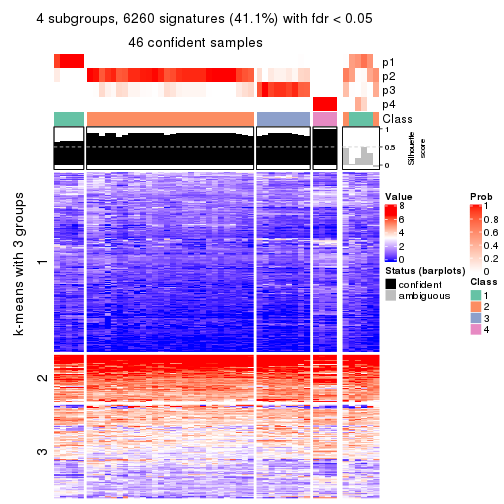
get_signatures(res, k = 5, scale_rows = FALSE)
get_signatures(res, k = 6, scale_rows = FALSE)
Compare the overlap of signatures from different k:
compare_signatures(res)
get_signature() returns a data frame invisibly. TO get the list of signatures, the function
call should be assigned to a variable explicitly. In following code, if plot argument is set
to FALSE, no heatmap is plotted while only the differential analysis is performed.
# code only for demonstration
tb = get_signature(res, k = ..., plot = FALSE)
An example of the output of tb is:
#> which_row fdr mean_1 mean_2 scaled_mean_1 scaled_mean_2 km
#> 1 38 0.042760348 8.373488 9.131774 -0.5533452 0.5164555 1
#> 2 40 0.018707592 7.106213 8.469186 -0.6173731 0.5762149 1
#> 3 55 0.019134737 10.221463 11.207825 -0.6159697 0.5749050 1
#> 4 59 0.006059896 5.921854 7.869574 -0.6899429 0.6439467 1
#> 5 60 0.018055526 8.928898 10.211722 -0.6204761 0.5791110 1
#> 6 98 0.009384629 15.714769 14.887706 0.6635654 -0.6193277 2
...
The columns in tb are:
which_row: row indices corresponding to the input matrix.fdr: FDR for the differential test. mean_x: The mean value in group x.scaled_mean_x: The mean value in group x after rows are scaled.km: Row groups if k-means clustering is applied to rows.UMAP plot which shows how samples are separated.
dimension_reduction(res, k = 2, method = "UMAP")
dimension_reduction(res, k = 3, method = "UMAP")
dimension_reduction(res, k = 4, method = "UMAP")
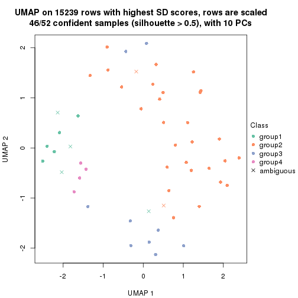
dimension_reduction(res, k = 5, method = "UMAP")
dimension_reduction(res, k = 6, method = "UMAP")
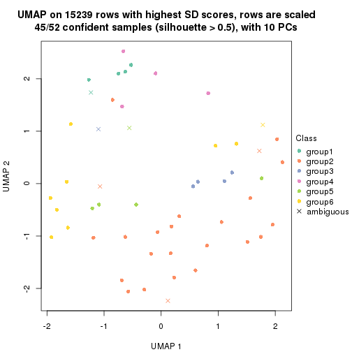
Following heatmap shows how subgroups are split when increasing k:
collect_classes(res)
If matrix rows can be associated to genes, consider to use functional_enrichment(res,
...) to perform function enrichment for the signature genes. See this vignette for more detailed explanations.
The object with results only for a single top-value method and a single partition method can be extracted as:
res = res_list["SD", "mclust"]
# you can also extract it by
# res = res_list["SD:mclust"]
A summary of res and all the functions that can be applied to it:
res
#> A 'ConsensusPartition' object with k = 2, 3, 4, 5, 6.
#> On a matrix with 15239 rows and 52 columns.
#> Top rows (1000, 2000, 3000, 4000, 5000) are extracted by 'SD' method.
#> Subgroups are detected by 'mclust' method.
#> Performed in total 1250 partitions by row resampling.
#> Best k for subgroups seems to be 4.
#>
#> Following methods can be applied to this 'ConsensusPartition' object:
#> [1] "cola_report" "collect_classes" "collect_plots"
#> [4] "collect_stats" "colnames" "compare_signatures"
#> [7] "consensus_heatmap" "dimension_reduction" "functional_enrichment"
#> [10] "get_anno_col" "get_anno" "get_classes"
#> [13] "get_consensus" "get_matrix" "get_membership"
#> [16] "get_param" "get_signatures" "get_stats"
#> [19] "is_best_k" "is_stable_k" "membership_heatmap"
#> [22] "ncol" "nrow" "plot_ecdf"
#> [25] "rownames" "select_partition_number" "show"
#> [28] "suggest_best_k" "test_to_known_factors"
collect_plots() function collects all the plots made from res for all k (number of partitions)
into one single page to provide an easy and fast comparison between different k.
collect_plots(res)
The plots are:
k and the heatmap of
predicted classes for each k.k.k.k.All the plots in panels can be made by individual functions and they are plotted later in this section.
select_partition_number() produces several plots showing different
statistics for choosing “optimized” k. There are following statistics:
k;k, the area increased is defined as \(A_k - A_{k-1}\).The detailed explanations of these statistics can be found in the cola vignette.
Generally speaking, lower PAC score, higher mean silhouette score or higher
concordance corresponds to better partition. Rand index and Jaccard index
measure how similar the current partition is compared to partition with k-1.
If they are too similar, we won't accept k is better than k-1.
select_partition_number(res)
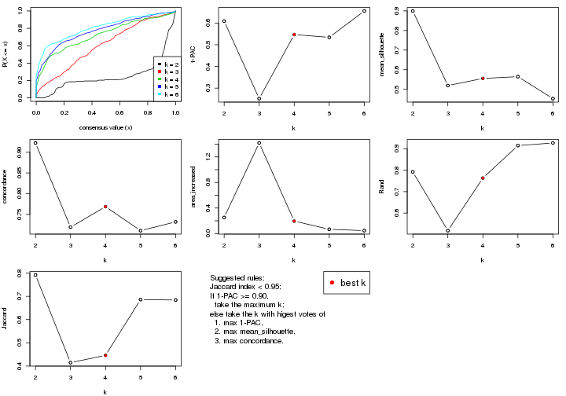
The numeric values for all these statistics can be obtained by get_stats().
get_stats(res)
#> k 1-PAC mean_silhouette concordance area_increased Rand Jaccard
#> 2 2 0.609 0.900 0.922 0.251 0.792 0.792
#> 3 3 0.252 0.519 0.719 1.419 0.518 0.415
#> 4 4 0.547 0.556 0.769 0.195 0.763 0.446
#> 5 5 0.534 0.565 0.711 0.067 0.915 0.686
#> 6 6 0.656 0.453 0.732 0.046 0.927 0.684
suggest_best_k() suggests the best \(k\) based on these statistics. The rules are as follows:
suggest_best_k(res)
#> [1] 4
Following shows the table of the partitions (You need to click the show/hide
code output link to see it). The membership matrix (columns with name p*)
is inferred by
clue::cl_consensus()
function with the SE method. Basically the value in the membership matrix
represents the probability to belong to a certain group. The finall class
label for an item is determined with the group with highest probability it
belongs to.
In get_classes() function, the entropy is calculated from the membership
matrix and the silhouette score is calculated from the consensus matrix.
cbind(get_classes(res, k = 2), get_membership(res, k = 2))
#> class entropy silhouette p1 p2
#> SRR633556 2 0.0938 0.924 0.012 0.988
#> SRR633557 2 0.0672 0.925 0.008 0.992
#> SRR633558 2 0.0938 0.924 0.012 0.988
#> SRR633559 2 0.0938 0.924 0.012 0.988
#> SRR633560 2 0.0938 0.924 0.012 0.988
#> SRR633561 2 0.3879 0.879 0.076 0.924
#> SRR633563 1 0.5842 0.998 0.860 0.140
#> SRR633564 1 0.5842 0.998 0.860 0.140
#> SRR633565 1 0.5842 0.998 0.860 0.140
#> SRR633566 1 0.5842 0.998 0.860 0.140
#> SRR633567 2 0.8763 0.598 0.296 0.704
#> SRR633568 2 0.8861 0.580 0.304 0.696
#> SRR633569 2 0.9323 0.470 0.348 0.652
#> SRR633570 1 0.5842 0.998 0.860 0.140
#> SRR633571 1 0.6048 0.989 0.852 0.148
#> SRR633572 2 0.0376 0.927 0.004 0.996
#> SRR633573 2 0.3879 0.879 0.076 0.924
#> SRR633574 2 0.0672 0.925 0.008 0.992
#> SRR633575 2 0.3879 0.879 0.076 0.924
#> SRR633576 2 0.4161 0.882 0.084 0.916
#> SRR633577 2 0.3733 0.913 0.072 0.928
#> SRR633578 2 0.3431 0.918 0.064 0.936
#> SRR633579 2 0.2778 0.924 0.048 0.952
#> SRR633580 2 0.2778 0.924 0.048 0.952
#> SRR633581 2 0.2778 0.924 0.048 0.952
#> SRR633582 2 0.2948 0.924 0.052 0.948
#> SRR633583 2 0.1414 0.927 0.020 0.980
#> SRR633584 2 0.3431 0.921 0.064 0.936
#> SRR633585 2 0.0376 0.926 0.004 0.996
#> SRR633586 2 0.3733 0.909 0.072 0.928
#> SRR633587 2 0.4298 0.897 0.088 0.912
#> SRR633588 2 0.3879 0.906 0.076 0.924
#> SRR633589 2 0.2043 0.926 0.032 0.968
#> SRR633590 2 0.4298 0.897 0.088 0.912
#> SRR633591 2 0.4298 0.897 0.088 0.912
#> SRR633592 2 0.4298 0.897 0.088 0.912
#> SRR633593 2 0.3274 0.922 0.060 0.940
#> SRR633594 2 0.3274 0.922 0.060 0.940
#> SRR633595 2 0.3274 0.919 0.060 0.940
#> SRR633596 2 0.3274 0.919 0.060 0.940
#> SRR633597 2 0.5946 0.846 0.144 0.856
#> SRR633598 2 0.2948 0.922 0.052 0.948
#> SRR633599 2 0.1184 0.926 0.016 0.984
#> SRR633600 2 0.1184 0.926 0.016 0.984
#> SRR633601 2 0.3879 0.911 0.076 0.924
#> SRR633602 2 0.4298 0.903 0.088 0.912
#> SRR633603 2 0.0938 0.927 0.012 0.988
#> SRR633604 2 0.0938 0.928 0.012 0.988
#> SRR633605 2 0.1184 0.926 0.016 0.984
#> SRR633606 2 0.1184 0.926 0.016 0.984
#> SRR633607 2 0.0938 0.927 0.012 0.988
#> SRR633608 2 0.7139 0.778 0.196 0.804
cbind(get_classes(res, k = 3), get_membership(res, k = 3))
#> class entropy silhouette p1 p2 p3
#> SRR633556 2 0.1031 0.6168 0.000 0.976 0.024
#> SRR633557 3 0.5254 0.5110 0.000 0.264 0.736
#> SRR633558 2 0.0424 0.6142 0.000 0.992 0.008
#> SRR633559 2 0.0424 0.6105 0.000 0.992 0.008
#> SRR633560 2 0.7044 0.6200 0.168 0.724 0.108
#> SRR633561 2 0.4452 0.5954 0.000 0.808 0.192
#> SRR633563 1 0.0000 0.7002 1.000 0.000 0.000
#> SRR633564 1 0.0000 0.7002 1.000 0.000 0.000
#> SRR633565 1 0.1399 0.6933 0.968 0.028 0.004
#> SRR633566 1 0.0000 0.7002 1.000 0.000 0.000
#> SRR633567 1 0.3554 0.6912 0.900 0.036 0.064
#> SRR633568 1 0.7578 0.0492 0.500 0.040 0.460
#> SRR633569 1 0.4342 0.6824 0.856 0.024 0.120
#> SRR633570 1 0.2537 0.6955 0.920 0.000 0.080
#> SRR633571 1 0.2537 0.6955 0.920 0.000 0.080
#> SRR633572 2 0.0592 0.6060 0.000 0.988 0.012
#> SRR633573 2 0.5115 0.6029 0.016 0.796 0.188
#> SRR633574 2 0.4452 0.5954 0.000 0.808 0.192
#> SRR633575 2 0.5167 0.6017 0.016 0.792 0.192
#> SRR633576 2 0.6765 0.6020 0.068 0.724 0.208
#> SRR633577 2 0.8607 0.4410 0.256 0.592 0.152
#> SRR633578 3 0.9684 0.3962 0.352 0.220 0.428
#> SRR633579 3 0.9434 0.3978 0.176 0.412 0.412
#> SRR633580 3 0.8392 0.6536 0.176 0.200 0.624
#> SRR633581 3 0.8433 0.6532 0.176 0.204 0.620
#> SRR633582 2 0.3530 0.5746 0.032 0.900 0.068
#> SRR633583 2 0.0829 0.6053 0.004 0.984 0.012
#> SRR633584 1 0.8149 -0.0587 0.520 0.408 0.072
#> SRR633585 2 0.4399 0.5954 0.000 0.812 0.188
#> SRR633586 3 0.6899 0.6573 0.024 0.364 0.612
#> SRR633587 2 0.5365 0.4167 0.004 0.744 0.252
#> SRR633588 3 0.6189 0.6471 0.004 0.364 0.632
#> SRR633589 2 0.3295 0.6129 0.096 0.896 0.008
#> SRR633590 2 0.5517 0.3864 0.004 0.728 0.268
#> SRR633591 2 0.5443 0.4052 0.004 0.736 0.260
#> SRR633592 3 0.6189 0.6471 0.004 0.364 0.632
#> SRR633593 2 0.8779 0.4343 0.248 0.580 0.172
#> SRR633594 2 0.8334 0.4701 0.248 0.616 0.136
#> SRR633595 2 0.8948 0.4208 0.248 0.564 0.188
#> SRR633596 2 0.8948 0.4208 0.248 0.564 0.188
#> SRR633597 1 0.9161 -0.0907 0.464 0.388 0.148
#> SRR633598 3 0.7306 0.6600 0.080 0.236 0.684
#> SRR633599 2 0.9677 0.4743 0.236 0.452 0.312
#> SRR633600 2 0.9383 0.5283 0.236 0.512 0.252
#> SRR633601 3 0.9098 0.3164 0.276 0.184 0.540
#> SRR633602 1 0.7180 0.4137 0.672 0.268 0.060
#> SRR633603 3 0.5304 0.5690 0.068 0.108 0.824
#> SRR633604 2 0.9076 0.5625 0.240 0.552 0.208
#> SRR633605 2 0.9663 0.4772 0.236 0.456 0.308
#> SRR633606 2 0.9677 0.4743 0.236 0.452 0.312
#> SRR633607 3 0.6526 0.5124 0.128 0.112 0.760
#> SRR633608 1 0.6869 0.1430 0.560 0.016 0.424
cbind(get_classes(res, k = 4), get_membership(res, k = 4))
#> class entropy silhouette p1 p2 p3 p4
#> SRR633556 2 0.1557 0.8295 0.000 0.944 0.056 0.000
#> SRR633557 3 0.4741 0.4873 0.000 0.328 0.668 0.004
#> SRR633558 2 0.2797 0.8165 0.000 0.900 0.068 0.032
#> SRR633559 2 0.1716 0.8288 0.000 0.936 0.064 0.000
#> SRR633560 4 0.6214 0.2655 0.000 0.360 0.064 0.576
#> SRR633561 2 0.0188 0.8257 0.000 0.996 0.004 0.000
#> SRR633563 1 0.0000 0.7041 1.000 0.000 0.000 0.000
#> SRR633564 1 0.0000 0.7041 1.000 0.000 0.000 0.000
#> SRR633565 1 0.0657 0.6985 0.984 0.000 0.004 0.012
#> SRR633566 1 0.0000 0.7041 1.000 0.000 0.000 0.000
#> SRR633567 1 0.5537 -0.1266 0.544 0.012 0.004 0.440
#> SRR633568 1 0.5387 0.1113 0.584 0.000 0.400 0.016
#> SRR633569 1 0.4830 0.0373 0.608 0.000 0.000 0.392
#> SRR633570 1 0.0336 0.7039 0.992 0.000 0.000 0.008
#> SRR633571 1 0.0469 0.7029 0.988 0.000 0.000 0.012
#> SRR633572 2 0.2589 0.8075 0.000 0.884 0.116 0.000
#> SRR633573 2 0.0376 0.8253 0.000 0.992 0.004 0.004
#> SRR633574 2 0.0921 0.8149 0.000 0.972 0.000 0.028
#> SRR633575 2 0.0376 0.8253 0.000 0.992 0.004 0.004
#> SRR633576 2 0.4907 0.6523 0.060 0.764 0.000 0.176
#> SRR633577 4 0.6790 0.3003 0.408 0.084 0.004 0.504
#> SRR633578 3 0.7196 0.0586 0.428 0.012 0.464 0.096
#> SRR633579 3 0.4648 0.6564 0.172 0.004 0.784 0.040
#> SRR633580 3 0.4692 0.6529 0.176 0.004 0.780 0.040
#> SRR633581 3 0.4648 0.6564 0.172 0.004 0.784 0.040
#> SRR633582 2 0.2737 0.8157 0.008 0.888 0.104 0.000
#> SRR633583 2 0.2149 0.8205 0.000 0.912 0.088 0.000
#> SRR633584 4 0.6187 0.6140 0.236 0.036 0.044 0.684
#> SRR633585 2 0.1302 0.8312 0.000 0.956 0.044 0.000
#> SRR633586 3 0.1297 0.6927 0.016 0.020 0.964 0.000
#> SRR633587 3 0.4501 0.4620 0.000 0.024 0.764 0.212
#> SRR633588 3 0.0592 0.6897 0.000 0.016 0.984 0.000
#> SRR633589 2 0.7171 0.2144 0.004 0.504 0.124 0.368
#> SRR633590 3 0.0469 0.6897 0.000 0.012 0.988 0.000
#> SRR633591 3 0.0469 0.6897 0.000 0.012 0.988 0.000
#> SRR633592 3 0.0336 0.6901 0.000 0.008 0.992 0.000
#> SRR633593 4 0.6108 0.6507 0.192 0.076 0.024 0.708
#> SRR633594 2 0.7086 0.2375 0.308 0.568 0.012 0.112
#> SRR633595 4 0.5980 0.6498 0.196 0.072 0.020 0.712
#> SRR633596 4 0.5648 0.6470 0.196 0.048 0.024 0.732
#> SRR633597 4 0.5888 0.5550 0.308 0.048 0.004 0.640
#> SRR633598 3 0.7015 0.5803 0.188 0.052 0.660 0.100
#> SRR633599 4 0.1807 0.5842 0.000 0.052 0.008 0.940
#> SRR633600 2 0.6268 0.2278 0.056 0.496 0.000 0.448
#> SRR633601 3 0.8214 0.0751 0.392 0.040 0.424 0.144
#> SRR633602 4 0.6288 0.1588 0.468 0.016 0.028 0.488
#> SRR633603 3 0.7203 0.5892 0.028 0.108 0.600 0.264
#> SRR633604 3 0.8748 0.4999 0.160 0.108 0.508 0.224
#> SRR633605 4 0.1722 0.5830 0.000 0.048 0.008 0.944
#> SRR633606 4 0.1722 0.5830 0.000 0.048 0.008 0.944
#> SRR633607 3 0.6135 0.5358 0.000 0.056 0.568 0.376
#> SRR633608 1 0.7407 -0.0203 0.484 0.024 0.400 0.092
cbind(get_classes(res, k = 5), get_membership(res, k = 5))
#> class entropy silhouette p1 p2 p3 p4 p5
#> SRR633556 2 0.2863 0.764 0.000 0.876 0.060 0.000 0.064
#> SRR633557 3 0.4118 0.454 0.000 0.336 0.660 0.000 0.004
#> SRR633558 2 0.3814 0.729 0.000 0.808 0.124 0.000 0.068
#> SRR633559 2 0.2511 0.767 0.000 0.892 0.080 0.000 0.028
#> SRR633560 2 0.5597 0.131 0.000 0.488 0.060 0.004 0.448
#> SRR633561 2 0.1485 0.775 0.020 0.948 0.000 0.032 0.000
#> SRR633563 1 0.2280 0.864 0.880 0.000 0.000 0.120 0.000
#> SRR633564 1 0.2280 0.864 0.880 0.000 0.000 0.120 0.000
#> SRR633565 1 0.4045 0.597 0.644 0.000 0.000 0.356 0.000
#> SRR633566 1 0.2329 0.862 0.876 0.000 0.000 0.124 0.000
#> SRR633567 4 0.4932 0.331 0.048 0.000 0.004 0.668 0.280
#> SRR633568 4 0.6569 0.204 0.312 0.000 0.180 0.500 0.008
#> SRR633569 4 0.6585 0.279 0.264 0.000 0.000 0.468 0.268
#> SRR633570 1 0.2563 0.812 0.872 0.000 0.000 0.120 0.008
#> SRR633571 1 0.2707 0.805 0.860 0.000 0.000 0.132 0.008
#> SRR633572 2 0.4761 0.404 0.000 0.616 0.356 0.000 0.028
#> SRR633573 2 0.1485 0.775 0.020 0.948 0.000 0.032 0.000
#> SRR633574 2 0.1646 0.774 0.020 0.944 0.000 0.032 0.004
#> SRR633575 2 0.1485 0.775 0.020 0.948 0.000 0.032 0.000
#> SRR633576 2 0.4385 0.675 0.020 0.776 0.000 0.044 0.160
#> SRR633577 4 0.7255 -0.187 0.076 0.108 0.000 0.416 0.400
#> SRR633578 4 0.4330 0.376 0.008 0.000 0.204 0.752 0.036
#> SRR633579 3 0.5274 0.637 0.028 0.032 0.736 0.172 0.032
#> SRR633580 3 0.6115 0.599 0.028 0.032 0.608 0.300 0.032
#> SRR633581 3 0.6097 0.602 0.028 0.032 0.612 0.296 0.032
#> SRR633582 2 0.3244 0.767 0.012 0.868 0.088 0.016 0.016
#> SRR633583 2 0.3209 0.764 0.000 0.864 0.088 0.016 0.032
#> SRR633584 5 0.6345 0.554 0.032 0.056 0.032 0.252 0.628
#> SRR633585 2 0.0960 0.778 0.004 0.972 0.008 0.016 0.000
#> SRR633586 3 0.3081 0.664 0.000 0.012 0.832 0.156 0.000
#> SRR633587 3 0.2722 0.605 0.000 0.008 0.868 0.004 0.120
#> SRR633588 3 0.2304 0.673 0.000 0.008 0.892 0.100 0.000
#> SRR633589 2 0.6106 0.350 0.000 0.524 0.120 0.004 0.352
#> SRR633590 3 0.1116 0.667 0.000 0.004 0.964 0.004 0.028
#> SRR633591 3 0.1251 0.664 0.000 0.008 0.956 0.000 0.036
#> SRR633592 3 0.0324 0.671 0.000 0.004 0.992 0.004 0.000
#> SRR633593 5 0.5986 0.559 0.020 0.148 0.000 0.192 0.640
#> SRR633594 2 0.4660 0.577 0.024 0.752 0.000 0.180 0.044
#> SRR633595 5 0.6017 0.564 0.024 0.100 0.000 0.260 0.616
#> SRR633596 5 0.5979 0.550 0.024 0.076 0.004 0.280 0.616
#> SRR633597 5 0.6472 0.193 0.076 0.040 0.000 0.396 0.488
#> SRR633598 3 0.7468 0.480 0.024 0.128 0.508 0.292 0.048
#> SRR633599 5 0.0609 0.568 0.000 0.020 0.000 0.000 0.980
#> SRR633600 2 0.5003 0.406 0.016 0.572 0.000 0.012 0.400
#> SRR633601 4 0.4619 0.499 0.028 0.040 0.092 0.804 0.036
#> SRR633602 4 0.4464 0.295 0.012 0.000 0.008 0.676 0.304
#> SRR633603 3 0.7896 0.498 0.016 0.084 0.460 0.144 0.296
#> SRR633604 3 0.8312 0.282 0.020 0.116 0.452 0.212 0.200
#> SRR633605 5 0.0404 0.569 0.000 0.012 0.000 0.000 0.988
#> SRR633606 5 0.0404 0.569 0.000 0.012 0.000 0.000 0.988
#> SRR633607 3 0.6638 0.435 0.000 0.012 0.428 0.152 0.408
#> SRR633608 4 0.3368 0.499 0.080 0.000 0.028 0.860 0.032
cbind(get_classes(res, k = 6), get_membership(res, k = 6))
#> class entropy silhouette p1 p2 p3 p4 p5 p6
#> SRR633556 2 0.1777 0.74652 0.000 0.928 0.044 0.004 0.024 0.000
#> SRR633557 3 0.3830 0.30791 0.000 0.376 0.620 0.004 0.000 0.000
#> SRR633558 2 0.3065 0.63762 0.000 0.820 0.028 0.000 0.152 0.000
#> SRR633559 2 0.1285 0.75190 0.000 0.944 0.052 0.004 0.000 0.000
#> SRR633560 5 0.5354 0.01764 0.000 0.460 0.028 0.048 0.464 0.000
#> SRR633561 2 0.2581 0.75391 0.000 0.860 0.000 0.120 0.020 0.000
#> SRR633563 1 0.1204 0.82371 0.944 0.000 0.000 0.000 0.000 0.056
#> SRR633564 1 0.1204 0.82371 0.944 0.000 0.000 0.000 0.000 0.056
#> SRR633565 1 0.4004 0.42580 0.620 0.000 0.000 0.012 0.000 0.368
#> SRR633566 1 0.1267 0.82267 0.940 0.000 0.000 0.000 0.000 0.060
#> SRR633567 6 0.1924 0.66420 0.048 0.000 0.000 0.028 0.004 0.920
#> SRR633568 4 0.4736 0.13088 0.212 0.000 0.004 0.680 0.000 0.104
#> SRR633569 6 0.4199 0.44176 0.164 0.000 0.000 0.100 0.000 0.736
#> SRR633570 1 0.3493 0.75897 0.796 0.000 0.000 0.148 0.000 0.056
#> SRR633571 1 0.3588 0.75551 0.788 0.000 0.000 0.152 0.000 0.060
#> SRR633572 2 0.3971 0.12697 0.000 0.548 0.448 0.004 0.000 0.000
#> SRR633573 2 0.3029 0.74899 0.004 0.840 0.000 0.120 0.036 0.000
#> SRR633574 2 0.2946 0.75244 0.004 0.848 0.004 0.120 0.024 0.000
#> SRR633575 2 0.3029 0.74899 0.004 0.840 0.000 0.120 0.036 0.000
#> SRR633576 2 0.5148 0.62138 0.004 0.668 0.000 0.108 0.204 0.016
#> SRR633577 6 0.6443 0.18165 0.120 0.052 0.000 0.012 0.284 0.532
#> SRR633578 6 0.4542 0.00468 0.008 0.000 0.012 0.480 0.004 0.496
#> SRR633579 3 0.6589 -0.42290 0.000 0.040 0.388 0.380 0.000 0.192
#> SRR633580 4 0.6381 0.44976 0.000 0.036 0.276 0.492 0.000 0.196
#> SRR633581 4 0.6409 0.43964 0.000 0.036 0.292 0.480 0.000 0.192
#> SRR633582 2 0.1511 0.75259 0.000 0.940 0.044 0.004 0.000 0.012
#> SRR633583 2 0.1555 0.74869 0.000 0.932 0.060 0.004 0.000 0.004
#> SRR633584 5 0.5431 0.38931 0.000 0.052 0.016 0.020 0.592 0.320
#> SRR633585 2 0.1464 0.75913 0.000 0.944 0.004 0.036 0.016 0.000
#> SRR633586 3 0.4265 -0.08100 0.000 0.004 0.596 0.384 0.000 0.016
#> SRR633587 3 0.0146 0.59624 0.000 0.000 0.996 0.000 0.004 0.000
#> SRR633588 3 0.0508 0.59392 0.000 0.000 0.984 0.012 0.000 0.004
#> SRR633589 2 0.5831 0.09806 0.000 0.500 0.088 0.020 0.384 0.008
#> SRR633590 3 0.0000 0.59781 0.000 0.000 1.000 0.000 0.000 0.000
#> SRR633591 3 0.0000 0.59781 0.000 0.000 1.000 0.000 0.000 0.000
#> SRR633592 3 0.0260 0.59667 0.000 0.000 0.992 0.008 0.000 0.000
#> SRR633593 5 0.5409 0.39344 0.000 0.056 0.000 0.036 0.568 0.340
#> SRR633594 2 0.4927 0.41032 0.016 0.624 0.000 0.036 0.008 0.316
#> SRR633595 5 0.4738 0.39301 0.000 0.036 0.000 0.012 0.596 0.356
#> SRR633596 5 0.4523 0.38114 0.000 0.032 0.000 0.004 0.592 0.372
#> SRR633597 6 0.5325 0.19282 0.024 0.016 0.000 0.036 0.336 0.588
#> SRR633598 3 0.7206 -0.27978 0.000 0.076 0.376 0.244 0.004 0.300
#> SRR633599 5 0.0458 0.51764 0.000 0.000 0.000 0.000 0.984 0.016
#> SRR633600 2 0.5990 0.45251 0.004 0.532 0.000 0.140 0.304 0.020
#> SRR633601 6 0.2967 0.63839 0.012 0.008 0.000 0.136 0.004 0.840
#> SRR633602 6 0.1237 0.67059 0.020 0.000 0.000 0.020 0.004 0.956
#> SRR633603 4 0.6692 0.30465 0.000 0.020 0.220 0.468 0.272 0.020
#> SRR633604 3 0.7036 0.13920 0.000 0.068 0.496 0.024 0.160 0.252
#> SRR633605 5 0.0632 0.51666 0.000 0.000 0.000 0.000 0.976 0.024
#> SRR633606 5 0.0458 0.51764 0.000 0.000 0.000 0.000 0.984 0.016
#> SRR633607 5 0.6695 -0.54231 0.000 0.004 0.220 0.348 0.396 0.032
#> SRR633608 6 0.2288 0.67038 0.028 0.000 0.000 0.072 0.004 0.896
Heatmaps for the consensus matrix. It visualizes the probability of two samples to be in a same group.
consensus_heatmap(res, k = 2)
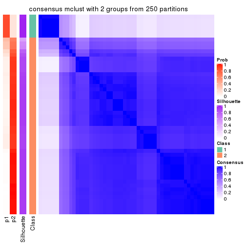
consensus_heatmap(res, k = 3)
consensus_heatmap(res, k = 4)
consensus_heatmap(res, k = 5)
consensus_heatmap(res, k = 6)
Heatmaps for the membership of samples in all partitions to see how consistent they are:
membership_heatmap(res, k = 2)
membership_heatmap(res, k = 3)
membership_heatmap(res, k = 4)
membership_heatmap(res, k = 5)
membership_heatmap(res, k = 6)
As soon as we have had the classes for columns, we can look for signatures which are significantly different between classes which can be candidate marks for certain classes. Following are the heatmaps for signatures.
Signature heatmaps where rows are scaled:
get_signatures(res, k = 2)
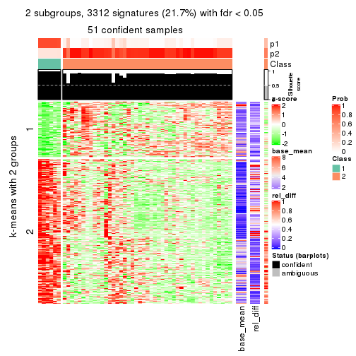
get_signatures(res, k = 3)
get_signatures(res, k = 4)
get_signatures(res, k = 5)
get_signatures(res, k = 6)
Signature heatmaps where rows are not scaled:
get_signatures(res, k = 2, scale_rows = FALSE)
get_signatures(res, k = 3, scale_rows = FALSE)
get_signatures(res, k = 4, scale_rows = FALSE)
get_signatures(res, k = 5, scale_rows = FALSE)
get_signatures(res, k = 6, scale_rows = FALSE)
Compare the overlap of signatures from different k:
compare_signatures(res)
get_signature() returns a data frame invisibly. TO get the list of signatures, the function
call should be assigned to a variable explicitly. In following code, if plot argument is set
to FALSE, no heatmap is plotted while only the differential analysis is performed.
# code only for demonstration
tb = get_signature(res, k = ..., plot = FALSE)
An example of the output of tb is:
#> which_row fdr mean_1 mean_2 scaled_mean_1 scaled_mean_2 km
#> 1 38 0.042760348 8.373488 9.131774 -0.5533452 0.5164555 1
#> 2 40 0.018707592 7.106213 8.469186 -0.6173731 0.5762149 1
#> 3 55 0.019134737 10.221463 11.207825 -0.6159697 0.5749050 1
#> 4 59 0.006059896 5.921854 7.869574 -0.6899429 0.6439467 1
#> 5 60 0.018055526 8.928898 10.211722 -0.6204761 0.5791110 1
#> 6 98 0.009384629 15.714769 14.887706 0.6635654 -0.6193277 2
...
The columns in tb are:
which_row: row indices corresponding to the input matrix.fdr: FDR for the differential test. mean_x: The mean value in group x.scaled_mean_x: The mean value in group x after rows are scaled.km: Row groups if k-means clustering is applied to rows.UMAP plot which shows how samples are separated.
dimension_reduction(res, k = 2, method = "UMAP")
dimension_reduction(res, k = 3, method = "UMAP")
dimension_reduction(res, k = 4, method = "UMAP")
dimension_reduction(res, k = 5, method = "UMAP")
dimension_reduction(res, k = 6, method = "UMAP")
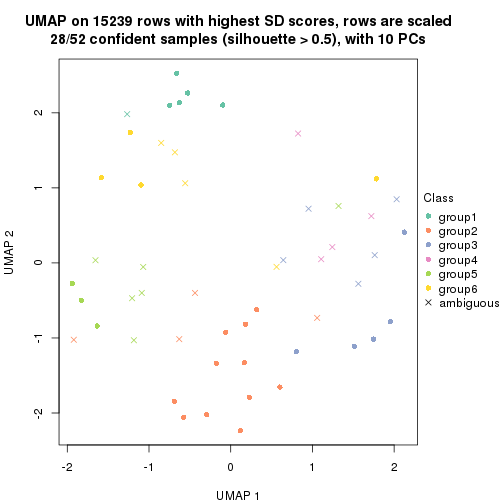
Following heatmap shows how subgroups are split when increasing k:
collect_classes(res)
If matrix rows can be associated to genes, consider to use functional_enrichment(res,
...) to perform function enrichment for the signature genes. See this vignette for more detailed explanations.
The object with results only for a single top-value method and a single partition method can be extracted as:
res = res_list["SD", "NMF"]
# you can also extract it by
# res = res_list["SD:NMF"]
A summary of res and all the functions that can be applied to it:
res
#> A 'ConsensusPartition' object with k = 2, 3, 4, 5, 6.
#> On a matrix with 15239 rows and 52 columns.
#> Top rows (1000, 2000, 3000, 4000, 5000) are extracted by 'SD' method.
#> Subgroups are detected by 'NMF' method.
#> Performed in total 1250 partitions by row resampling.
#> Best k for subgroups seems to be 3.
#>
#> Following methods can be applied to this 'ConsensusPartition' object:
#> [1] "cola_report" "collect_classes" "collect_plots"
#> [4] "collect_stats" "colnames" "compare_signatures"
#> [7] "consensus_heatmap" "dimension_reduction" "functional_enrichment"
#> [10] "get_anno_col" "get_anno" "get_classes"
#> [13] "get_consensus" "get_matrix" "get_membership"
#> [16] "get_param" "get_signatures" "get_stats"
#> [19] "is_best_k" "is_stable_k" "membership_heatmap"
#> [22] "ncol" "nrow" "plot_ecdf"
#> [25] "rownames" "select_partition_number" "show"
#> [28] "suggest_best_k" "test_to_known_factors"
collect_plots() function collects all the plots made from res for all k (number of partitions)
into one single page to provide an easy and fast comparison between different k.
collect_plots(res)
The plots are:
k and the heatmap of
predicted classes for each k.k.k.k.All the plots in panels can be made by individual functions and they are plotted later in this section.
select_partition_number() produces several plots showing different
statistics for choosing “optimized” k. There are following statistics:
k;k, the area increased is defined as \(A_k - A_{k-1}\).The detailed explanations of these statistics can be found in the cola vignette.
Generally speaking, lower PAC score, higher mean silhouette score or higher
concordance corresponds to better partition. Rand index and Jaccard index
measure how similar the current partition is compared to partition with k-1.
If they are too similar, we won't accept k is better than k-1.
select_partition_number(res)
The numeric values for all these statistics can be obtained by get_stats().
get_stats(res)
#> k 1-PAC mean_silhouette concordance area_increased Rand Jaccard
#> 2 2 0.839 0.869 0.948 0.4415 0.551 0.551
#> 3 3 0.472 0.529 0.744 0.4729 0.674 0.461
#> 4 4 0.464 0.480 0.673 0.1436 0.769 0.430
#> 5 5 0.564 0.396 0.641 0.0737 0.811 0.413
#> 6 6 0.681 0.592 0.796 0.0399 0.844 0.414
suggest_best_k() suggests the best \(k\) based on these statistics. The rules are as follows:
suggest_best_k(res)
#> [1] 3
Following shows the table of the partitions (You need to click the show/hide
code output link to see it). The membership matrix (columns with name p*)
is inferred by
clue::cl_consensus()
function with the SE method. Basically the value in the membership matrix
represents the probability to belong to a certain group. The finall class
label for an item is determined with the group with highest probability it
belongs to.
In get_classes() function, the entropy is calculated from the membership
matrix and the silhouette score is calculated from the consensus matrix.
cbind(get_classes(res, k = 2), get_membership(res, k = 2))
#> class entropy silhouette p1 p2
#> SRR633556 2 0.0000 0.962 0.000 1.000
#> SRR633557 2 0.0000 0.962 0.000 1.000
#> SRR633558 2 0.0000 0.962 0.000 1.000
#> SRR633559 2 0.0000 0.962 0.000 1.000
#> SRR633560 2 0.0000 0.962 0.000 1.000
#> SRR633561 2 0.0000 0.962 0.000 1.000
#> SRR633563 1 0.0000 0.899 1.000 0.000
#> SRR633564 1 0.0000 0.899 1.000 0.000
#> SRR633565 1 0.0000 0.899 1.000 0.000
#> SRR633566 1 0.0000 0.899 1.000 0.000
#> SRR633567 1 0.0000 0.899 1.000 0.000
#> SRR633568 1 0.9552 0.443 0.624 0.376
#> SRR633569 1 0.0000 0.899 1.000 0.000
#> SRR633570 1 0.0000 0.899 1.000 0.000
#> SRR633571 1 0.0000 0.899 1.000 0.000
#> SRR633572 2 0.0000 0.962 0.000 1.000
#> SRR633573 2 0.0000 0.962 0.000 1.000
#> SRR633574 2 0.0000 0.962 0.000 1.000
#> SRR633575 2 0.0000 0.962 0.000 1.000
#> SRR633576 2 0.0000 0.962 0.000 1.000
#> SRR633577 1 0.2778 0.869 0.952 0.048
#> SRR633578 1 0.9358 0.504 0.648 0.352
#> SRR633579 2 0.0000 0.962 0.000 1.000
#> SRR633580 2 0.0000 0.962 0.000 1.000
#> SRR633581 2 0.0000 0.962 0.000 1.000
#> SRR633582 2 0.0000 0.962 0.000 1.000
#> SRR633583 2 0.0000 0.962 0.000 1.000
#> SRR633584 2 0.9635 0.295 0.388 0.612
#> SRR633585 2 0.0000 0.962 0.000 1.000
#> SRR633586 2 0.0000 0.962 0.000 1.000
#> SRR633587 2 0.0000 0.962 0.000 1.000
#> SRR633588 2 0.0000 0.962 0.000 1.000
#> SRR633589 2 0.0000 0.962 0.000 1.000
#> SRR633590 2 0.0000 0.962 0.000 1.000
#> SRR633591 2 0.0000 0.962 0.000 1.000
#> SRR633592 2 0.0000 0.962 0.000 1.000
#> SRR633593 2 0.7674 0.674 0.224 0.776
#> SRR633594 1 0.9909 0.260 0.556 0.444
#> SRR633595 1 0.0672 0.895 0.992 0.008
#> SRR633596 1 0.8861 0.581 0.696 0.304
#> SRR633597 1 0.0000 0.899 1.000 0.000
#> SRR633598 2 0.0672 0.954 0.008 0.992
#> SRR633599 2 0.0000 0.962 0.000 1.000
#> SRR633600 2 0.0000 0.962 0.000 1.000
#> SRR633601 2 0.9881 0.106 0.436 0.564
#> SRR633602 1 0.0000 0.899 1.000 0.000
#> SRR633603 2 0.0000 0.962 0.000 1.000
#> SRR633604 2 0.0000 0.962 0.000 1.000
#> SRR633605 2 0.0000 0.962 0.000 1.000
#> SRR633606 2 0.4562 0.858 0.096 0.904
#> SRR633607 2 0.0000 0.962 0.000 1.000
#> SRR633608 1 0.0000 0.899 1.000 0.000
cbind(get_classes(res, k = 3), get_membership(res, k = 3))
#> class entropy silhouette p1 p2 p3
#> SRR633556 2 0.6291 0.5456 0.000 0.532 0.468
#> SRR633557 3 0.4062 0.4078 0.000 0.164 0.836
#> SRR633558 2 0.6225 0.5690 0.000 0.568 0.432
#> SRR633559 2 0.6308 0.5163 0.000 0.508 0.492
#> SRR633560 2 0.6062 0.5824 0.000 0.616 0.384
#> SRR633561 3 0.4121 0.3991 0.000 0.168 0.832
#> SRR633563 1 0.0000 0.8953 1.000 0.000 0.000
#> SRR633564 1 0.0000 0.8953 1.000 0.000 0.000
#> SRR633565 1 0.0000 0.8953 1.000 0.000 0.000
#> SRR633566 1 0.0000 0.8953 1.000 0.000 0.000
#> SRR633567 1 0.0000 0.8953 1.000 0.000 0.000
#> SRR633568 3 0.8501 -0.0838 0.420 0.092 0.488
#> SRR633569 1 0.2625 0.8701 0.916 0.084 0.000
#> SRR633570 1 0.2537 0.8715 0.920 0.080 0.000
#> SRR633571 1 0.2772 0.8705 0.916 0.080 0.004
#> SRR633572 3 0.5560 0.0358 0.000 0.300 0.700
#> SRR633573 2 0.6305 0.5331 0.000 0.516 0.484
#> SRR633574 2 0.6308 0.5229 0.000 0.508 0.492
#> SRR633575 3 0.6008 -0.2312 0.000 0.372 0.628
#> SRR633576 2 0.6079 0.0318 0.000 0.612 0.388
#> SRR633577 1 0.0661 0.8907 0.988 0.004 0.008
#> SRR633578 3 0.9417 0.3306 0.224 0.272 0.504
#> SRR633579 3 0.1643 0.5875 0.000 0.044 0.956
#> SRR633580 3 0.2959 0.5709 0.000 0.100 0.900
#> SRR633581 3 0.1964 0.5858 0.000 0.056 0.944
#> SRR633582 2 0.6168 0.5132 0.000 0.588 0.412
#> SRR633583 2 0.6302 0.5238 0.000 0.520 0.480
#> SRR633584 2 0.6927 0.5407 0.040 0.664 0.296
#> SRR633585 3 0.1031 0.5752 0.000 0.024 0.976
#> SRR633586 3 0.0592 0.5788 0.000 0.012 0.988
#> SRR633587 2 0.6291 0.5457 0.000 0.532 0.468
#> SRR633588 3 0.0892 0.5779 0.000 0.020 0.980
#> SRR633589 2 0.6260 0.5607 0.000 0.552 0.448
#> SRR633590 3 0.3116 0.4951 0.000 0.108 0.892
#> SRR633591 3 0.5810 -0.1330 0.000 0.336 0.664
#> SRR633592 3 0.0237 0.5815 0.000 0.004 0.996
#> SRR633593 2 0.3670 0.5508 0.020 0.888 0.092
#> SRR633594 1 0.8675 0.4192 0.504 0.388 0.108
#> SRR633595 2 0.2537 0.5026 0.080 0.920 0.000
#> SRR633596 2 0.2945 0.5026 0.088 0.908 0.004
#> SRR633597 1 0.5706 0.6297 0.680 0.320 0.000
#> SRR633598 3 0.6267 0.3512 0.000 0.452 0.548
#> SRR633599 2 0.2796 0.5407 0.000 0.908 0.092
#> SRR633600 2 0.2796 0.5407 0.000 0.908 0.092
#> SRR633601 3 0.8619 0.3101 0.100 0.420 0.480
#> SRR633602 1 0.4931 0.7012 0.768 0.232 0.000
#> SRR633603 3 0.5810 0.4249 0.000 0.336 0.664
#> SRR633604 2 0.4121 0.4673 0.000 0.832 0.168
#> SRR633605 2 0.3337 0.5191 0.060 0.908 0.032
#> SRR633606 2 0.3375 0.5261 0.048 0.908 0.044
#> SRR633607 3 0.6386 0.3644 0.004 0.412 0.584
#> SRR633608 1 0.0237 0.8947 0.996 0.004 0.000
cbind(get_classes(res, k = 4), get_membership(res, k = 4))
#> class entropy silhouette p1 p2 p3 p4
#> SRR633556 2 0.374 0.6230 0.000 0.824 0.016 0.160
#> SRR633557 2 0.514 0.4246 0.000 0.716 0.244 0.040
#> SRR633558 2 0.228 0.6292 0.000 0.904 0.000 0.096
#> SRR633559 2 0.305 0.6426 0.000 0.884 0.028 0.088
#> SRR633560 2 0.468 0.4256 0.000 0.648 0.000 0.352
#> SRR633561 2 0.323 0.6072 0.000 0.880 0.072 0.048
#> SRR633563 1 0.000 0.7721 1.000 0.000 0.000 0.000
#> SRR633564 1 0.000 0.7721 1.000 0.000 0.000 0.000
#> SRR633565 1 0.000 0.7721 1.000 0.000 0.000 0.000
#> SRR633566 1 0.000 0.7721 1.000 0.000 0.000 0.000
#> SRR633567 1 0.449 0.6601 0.800 0.000 0.060 0.140
#> SRR633568 3 0.677 -0.2292 0.340 0.004 0.560 0.096
#> SRR633569 1 0.587 0.6672 0.688 0.000 0.216 0.096
#> SRR633570 1 0.574 0.6738 0.700 0.000 0.208 0.092
#> SRR633571 1 0.587 0.6672 0.688 0.000 0.216 0.096
#> SRR633572 2 0.303 0.5925 0.000 0.868 0.124 0.008
#> SRR633573 2 0.227 0.6415 0.000 0.916 0.008 0.076
#> SRR633574 2 0.227 0.6415 0.000 0.916 0.008 0.076
#> SRR633575 2 0.300 0.6256 0.000 0.892 0.044 0.064
#> SRR633576 2 0.675 -0.2707 0.000 0.460 0.092 0.448
#> SRR633577 1 0.000 0.7721 1.000 0.000 0.000 0.000
#> SRR633578 3 0.638 0.3213 0.288 0.012 0.632 0.068
#> SRR633579 3 0.398 0.6234 0.000 0.240 0.760 0.000
#> SRR633580 3 0.428 0.6225 0.000 0.224 0.764 0.012
#> SRR633581 3 0.391 0.6248 0.000 0.232 0.768 0.000
#> SRR633582 2 0.624 0.4085 0.000 0.652 0.236 0.112
#> SRR633583 2 0.317 0.6390 0.000 0.884 0.056 0.060
#> SRR633584 2 0.819 0.1309 0.020 0.424 0.208 0.348
#> SRR633585 2 0.572 0.3573 0.000 0.684 0.244 0.072
#> SRR633586 3 0.460 0.5504 0.000 0.336 0.664 0.000
#> SRR633587 2 0.550 0.5528 0.000 0.708 0.068 0.224
#> SRR633588 3 0.482 0.4740 0.000 0.388 0.612 0.000
#> SRR633589 2 0.509 0.5654 0.000 0.728 0.044 0.228
#> SRR633590 3 0.526 0.3388 0.000 0.448 0.544 0.008
#> SRR633591 2 0.695 0.0533 0.000 0.516 0.364 0.120
#> SRR633592 3 0.428 0.6030 0.000 0.280 0.720 0.000
#> SRR633593 4 0.634 0.3910 0.000 0.284 0.096 0.620
#> SRR633594 4 0.884 0.3578 0.076 0.276 0.192 0.456
#> SRR633595 4 0.529 0.5916 0.012 0.140 0.080 0.768
#> SRR633596 4 0.411 0.6217 0.012 0.128 0.028 0.832
#> SRR633597 1 0.870 0.2840 0.372 0.044 0.220 0.364
#> SRR633598 3 0.576 -0.1123 0.000 0.028 0.520 0.452
#> SRR633599 4 0.343 0.6247 0.000 0.144 0.012 0.844
#> SRR633600 4 0.551 0.5010 0.000 0.352 0.028 0.620
#> SRR633601 4 0.605 0.1622 0.044 0.000 0.432 0.524
#> SRR633602 1 0.686 0.2647 0.536 0.000 0.116 0.348
#> SRR633603 3 0.736 -0.0401 0.000 0.164 0.468 0.368
#> SRR633604 4 0.714 0.3185 0.000 0.168 0.288 0.544
#> SRR633605 4 0.435 0.6350 0.000 0.196 0.024 0.780
#> SRR633606 4 0.458 0.6266 0.004 0.212 0.020 0.764
#> SRR633607 4 0.730 0.3793 0.000 0.220 0.244 0.536
#> SRR633608 1 0.405 0.6036 0.780 0.000 0.212 0.008
cbind(get_classes(res, k = 5), get_membership(res, k = 5))
#> class entropy silhouette p1 p2 p3 p4 p5
#> SRR633556 2 0.6883 0.39924 0.364 0.488 0.100 0.004 0.044
#> SRR633557 2 0.6666 0.42509 0.244 0.576 0.148 0.008 0.024
#> SRR633558 2 0.4989 0.49414 0.336 0.628 0.020 0.000 0.016
#> SRR633559 2 0.6287 0.42041 0.360 0.524 0.100 0.004 0.012
#> SRR633560 2 0.7283 0.37412 0.328 0.432 0.036 0.000 0.204
#> SRR633561 2 0.2122 0.52658 0.032 0.924 0.036 0.000 0.008
#> SRR633563 1 0.4201 0.62375 0.592 0.000 0.000 0.408 0.000
#> SRR633564 1 0.4201 0.62375 0.592 0.000 0.000 0.408 0.000
#> SRR633565 1 0.4201 0.62375 0.592 0.000 0.000 0.408 0.000
#> SRR633566 1 0.4201 0.62375 0.592 0.000 0.000 0.408 0.000
#> SRR633567 1 0.6361 -0.00326 0.484 0.000 0.048 0.056 0.412
#> SRR633568 4 0.4329 0.45850 0.032 0.000 0.252 0.716 0.000
#> SRR633569 4 0.0000 0.47450 0.000 0.000 0.000 1.000 0.000
#> SRR633570 4 0.1043 0.43290 0.040 0.000 0.000 0.960 0.000
#> SRR633571 4 0.0510 0.46254 0.016 0.000 0.000 0.984 0.000
#> SRR633572 2 0.6030 0.43104 0.340 0.548 0.104 0.008 0.000
#> SRR633573 2 0.1442 0.53923 0.012 0.952 0.032 0.000 0.004
#> SRR633574 2 0.2291 0.54272 0.056 0.908 0.036 0.000 0.000
#> SRR633575 2 0.1444 0.53929 0.012 0.948 0.040 0.000 0.000
#> SRR633576 2 0.4143 0.31494 0.004 0.764 0.036 0.000 0.196
#> SRR633577 1 0.4201 0.62375 0.592 0.000 0.000 0.408 0.000
#> SRR633578 3 0.3689 0.41921 0.068 0.012 0.836 0.000 0.084
#> SRR633579 3 0.0162 0.61407 0.000 0.004 0.996 0.000 0.000
#> SRR633580 3 0.0451 0.60795 0.000 0.004 0.988 0.000 0.008
#> SRR633581 3 0.0290 0.61673 0.000 0.008 0.992 0.000 0.000
#> SRR633582 4 0.5616 0.35312 0.364 0.084 0.000 0.552 0.000
#> SRR633583 2 0.6875 0.41300 0.356 0.492 0.064 0.088 0.000
#> SRR633584 4 0.7245 0.23328 0.304 0.020 0.000 0.388 0.288
#> SRR633585 2 0.3679 0.47129 0.040 0.836 0.104 0.000 0.020
#> SRR633586 3 0.4293 0.62740 0.068 0.132 0.788 0.012 0.000
#> SRR633587 1 0.8084 -0.51629 0.372 0.320 0.188 0.000 0.120
#> SRR633588 3 0.6227 0.46566 0.220 0.164 0.600 0.016 0.000
#> SRR633589 2 0.7689 0.32168 0.356 0.408 0.124 0.000 0.112
#> SRR633590 3 0.6820 0.16391 0.348 0.240 0.408 0.000 0.004
#> SRR633591 3 0.7056 0.17935 0.344 0.228 0.412 0.000 0.016
#> SRR633592 3 0.3814 0.64483 0.068 0.124 0.808 0.000 0.000
#> SRR633593 5 0.5642 0.27560 0.112 0.008 0.000 0.236 0.644
#> SRR633594 4 0.6973 0.20099 0.016 0.388 0.012 0.444 0.140
#> SRR633595 5 0.3746 0.50624 0.040 0.004 0.004 0.132 0.820
#> SRR633596 5 0.1739 0.59021 0.032 0.000 0.024 0.004 0.940
#> SRR633597 4 0.5834 0.36359 0.136 0.000 0.000 0.588 0.276
#> SRR633598 5 0.7302 0.19108 0.028 0.008 0.396 0.172 0.396
#> SRR633599 5 0.1644 0.59321 0.008 0.048 0.004 0.000 0.940
#> SRR633600 2 0.4647 0.06849 0.004 0.628 0.016 0.000 0.352
#> SRR633601 5 0.4791 0.41434 0.012 0.000 0.392 0.008 0.588
#> SRR633602 5 0.6388 0.40656 0.196 0.000 0.208 0.016 0.580
#> SRR633603 2 0.7040 -0.00772 0.020 0.496 0.244 0.004 0.236
#> SRR633604 5 0.5658 0.30298 0.008 0.056 0.464 0.000 0.472
#> SRR633605 5 0.3880 0.54044 0.004 0.204 0.020 0.000 0.772
#> SRR633606 5 0.4382 0.46996 0.004 0.276 0.020 0.000 0.700
#> SRR633607 2 0.6877 -0.19668 0.008 0.412 0.224 0.000 0.356
#> SRR633608 1 0.6659 0.31337 0.396 0.000 0.376 0.228 0.000
cbind(get_classes(res, k = 6), get_membership(res, k = 6))
#> class entropy silhouette p1 p2 p3 p4 p5 p6
#> SRR633556 2 0.0692 0.7605 0.000 0.976 0.000 0.004 0.020 0.000
#> SRR633557 2 0.6090 0.4728 0.000 0.568 0.112 0.064 0.000 0.256
#> SRR633558 2 0.2048 0.7394 0.000 0.880 0.000 0.000 0.000 0.120
#> SRR633559 2 0.0000 0.7600 0.000 1.000 0.000 0.000 0.000 0.000
#> SRR633560 2 0.2942 0.7137 0.000 0.836 0.000 0.000 0.132 0.032
#> SRR633561 6 0.3867 0.3810 0.000 0.328 0.000 0.012 0.000 0.660
#> SRR633563 1 0.0000 0.8493 1.000 0.000 0.000 0.000 0.000 0.000
#> SRR633564 1 0.0000 0.8493 1.000 0.000 0.000 0.000 0.000 0.000
#> SRR633565 1 0.0000 0.8493 1.000 0.000 0.000 0.000 0.000 0.000
#> SRR633566 1 0.0000 0.8493 1.000 0.000 0.000 0.000 0.000 0.000
#> SRR633567 1 0.4088 0.3073 0.616 0.000 0.016 0.000 0.368 0.000
#> SRR633568 4 0.1421 0.8325 0.028 0.000 0.028 0.944 0.000 0.000
#> SRR633569 4 0.1863 0.8626 0.104 0.000 0.000 0.896 0.000 0.000
#> SRR633570 4 0.2597 0.8291 0.176 0.000 0.000 0.824 0.000 0.000
#> SRR633571 4 0.2135 0.8588 0.128 0.000 0.000 0.872 0.000 0.000
#> SRR633572 2 0.0260 0.7602 0.000 0.992 0.000 0.000 0.000 0.008
#> SRR633573 2 0.4150 0.4435 0.000 0.616 0.000 0.008 0.008 0.368
#> SRR633574 2 0.3691 0.5974 0.000 0.724 0.000 0.008 0.008 0.260
#> SRR633575 2 0.4285 0.4449 0.000 0.612 0.004 0.008 0.008 0.368
#> SRR633576 6 0.1267 0.6753 0.000 0.060 0.000 0.000 0.000 0.940
#> SRR633577 1 0.1007 0.8322 0.968 0.016 0.000 0.004 0.008 0.004
#> SRR633578 3 0.0862 0.7091 0.000 0.000 0.972 0.004 0.008 0.016
#> SRR633579 3 0.0935 0.7345 0.000 0.032 0.964 0.004 0.000 0.000
#> SRR633580 3 0.0603 0.7307 0.000 0.016 0.980 0.000 0.000 0.004
#> SRR633581 3 0.0858 0.7352 0.000 0.028 0.968 0.000 0.000 0.004
#> SRR633582 4 0.2572 0.7506 0.000 0.136 0.000 0.852 0.012 0.000
#> SRR633583 2 0.1913 0.7455 0.000 0.908 0.000 0.080 0.000 0.012
#> SRR633584 5 0.4929 0.4122 0.000 0.100 0.000 0.280 0.620 0.000
#> SRR633585 6 0.5017 0.5574 0.000 0.200 0.028 0.032 0.036 0.704
#> SRR633586 3 0.4792 0.5239 0.000 0.240 0.672 0.076 0.000 0.012
#> SRR633587 2 0.2408 0.7314 0.000 0.892 0.052 0.004 0.052 0.000
#> SRR633588 2 0.5647 0.0768 0.000 0.508 0.392 0.076 0.008 0.016
#> SRR633589 2 0.1391 0.7524 0.000 0.944 0.016 0.000 0.040 0.000
#> SRR633590 2 0.3560 0.6080 0.000 0.772 0.204 0.008 0.012 0.004
#> SRR633591 2 0.3918 0.5851 0.000 0.748 0.208 0.008 0.036 0.000
#> SRR633592 3 0.4234 0.3390 0.000 0.372 0.608 0.016 0.000 0.004
#> SRR633593 5 0.4086 0.5156 0.000 0.000 0.008 0.244 0.716 0.032
#> SRR633594 6 0.6374 0.3064 0.000 0.016 0.020 0.220 0.212 0.532
#> SRR633595 5 0.2114 0.6266 0.000 0.000 0.008 0.076 0.904 0.012
#> SRR633596 5 0.1390 0.6276 0.000 0.000 0.016 0.004 0.948 0.032
#> SRR633597 4 0.2772 0.7018 0.004 0.000 0.000 0.816 0.180 0.000
#> SRR633598 5 0.7422 0.1204 0.000 0.000 0.292 0.288 0.304 0.116
#> SRR633599 5 0.3213 0.5129 0.000 0.004 0.008 0.000 0.784 0.204
#> SRR633600 6 0.1257 0.6752 0.000 0.028 0.000 0.000 0.020 0.952
#> SRR633601 5 0.4662 0.2265 0.000 0.000 0.424 0.008 0.540 0.028
#> SRR633602 5 0.4340 0.5374 0.064 0.000 0.208 0.000 0.720 0.008
#> SRR633603 6 0.1531 0.6632 0.000 0.000 0.068 0.000 0.004 0.928
#> SRR633604 3 0.5430 0.0536 0.000 0.004 0.544 0.004 0.348 0.100
#> SRR633605 6 0.4037 0.2238 0.000 0.000 0.012 0.000 0.380 0.608
#> SRR633606 6 0.3841 0.2404 0.000 0.000 0.004 0.000 0.380 0.616
#> SRR633607 6 0.2039 0.6552 0.000 0.000 0.076 0.000 0.020 0.904
#> SRR633608 1 0.4045 0.4429 0.648 0.000 0.336 0.008 0.008 0.000
Heatmaps for the consensus matrix. It visualizes the probability of two samples to be in a same group.
consensus_heatmap(res, k = 2)
consensus_heatmap(res, k = 3)
consensus_heatmap(res, k = 4)
consensus_heatmap(res, k = 5)
consensus_heatmap(res, k = 6)
Heatmaps for the membership of samples in all partitions to see how consistent they are:
membership_heatmap(res, k = 2)
membership_heatmap(res, k = 3)
membership_heatmap(res, k = 4)
membership_heatmap(res, k = 5)
membership_heatmap(res, k = 6)
As soon as we have had the classes for columns, we can look for signatures which are significantly different between classes which can be candidate marks for certain classes. Following are the heatmaps for signatures.
Signature heatmaps where rows are scaled:
get_signatures(res, k = 2)
get_signatures(res, k = 3)
get_signatures(res, k = 4)
get_signatures(res, k = 5)
get_signatures(res, k = 6)
Signature heatmaps where rows are not scaled:
get_signatures(res, k = 2, scale_rows = FALSE)
get_signatures(res, k = 3, scale_rows = FALSE)
get_signatures(res, k = 4, scale_rows = FALSE)
get_signatures(res, k = 5, scale_rows = FALSE)
get_signatures(res, k = 6, scale_rows = FALSE)
Compare the overlap of signatures from different k:
compare_signatures(res)
get_signature() returns a data frame invisibly. TO get the list of signatures, the function
call should be assigned to a variable explicitly. In following code, if plot argument is set
to FALSE, no heatmap is plotted while only the differential analysis is performed.
# code only for demonstration
tb = get_signature(res, k = ..., plot = FALSE)
An example of the output of tb is:
#> which_row fdr mean_1 mean_2 scaled_mean_1 scaled_mean_2 km
#> 1 38 0.042760348 8.373488 9.131774 -0.5533452 0.5164555 1
#> 2 40 0.018707592 7.106213 8.469186 -0.6173731 0.5762149 1
#> 3 55 0.019134737 10.221463 11.207825 -0.6159697 0.5749050 1
#> 4 59 0.006059896 5.921854 7.869574 -0.6899429 0.6439467 1
#> 5 60 0.018055526 8.928898 10.211722 -0.6204761 0.5791110 1
#> 6 98 0.009384629 15.714769 14.887706 0.6635654 -0.6193277 2
...
The columns in tb are:
which_row: row indices corresponding to the input matrix.fdr: FDR for the differential test. mean_x: The mean value in group x.scaled_mean_x: The mean value in group x after rows are scaled.km: Row groups if k-means clustering is applied to rows.UMAP plot which shows how samples are separated.
dimension_reduction(res, k = 2, method = "UMAP")
dimension_reduction(res, k = 3, method = "UMAP")
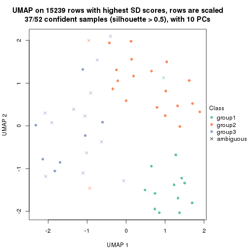
dimension_reduction(res, k = 4, method = "UMAP")
dimension_reduction(res, k = 5, method = "UMAP")
dimension_reduction(res, k = 6, method = "UMAP")
Following heatmap shows how subgroups are split when increasing k:
collect_classes(res)
If matrix rows can be associated to genes, consider to use functional_enrichment(res,
...) to perform function enrichment for the signature genes. See this vignette for more detailed explanations.
The object with results only for a single top-value method and a single partition method can be extracted as:
res = res_list["CV", "hclust"]
# you can also extract it by
# res = res_list["CV:hclust"]
A summary of res and all the functions that can be applied to it:
res
#> A 'ConsensusPartition' object with k = 2, 3, 4, 5, 6.
#> On a matrix with 15239 rows and 52 columns.
#> Top rows (1000, 2000, 3000, 4000, 5000) are extracted by 'CV' method.
#> Subgroups are detected by 'hclust' method.
#> Performed in total 1250 partitions by row resampling.
#> Best k for subgroups seems to be 4.
#>
#> Following methods can be applied to this 'ConsensusPartition' object:
#> [1] "cola_report" "collect_classes" "collect_plots"
#> [4] "collect_stats" "colnames" "compare_signatures"
#> [7] "consensus_heatmap" "dimension_reduction" "functional_enrichment"
#> [10] "get_anno_col" "get_anno" "get_classes"
#> [13] "get_consensus" "get_matrix" "get_membership"
#> [16] "get_param" "get_signatures" "get_stats"
#> [19] "is_best_k" "is_stable_k" "membership_heatmap"
#> [22] "ncol" "nrow" "plot_ecdf"
#> [25] "rownames" "select_partition_number" "show"
#> [28] "suggest_best_k" "test_to_known_factors"
collect_plots() function collects all the plots made from res for all k (number of partitions)
into one single page to provide an easy and fast comparison between different k.
collect_plots(res)
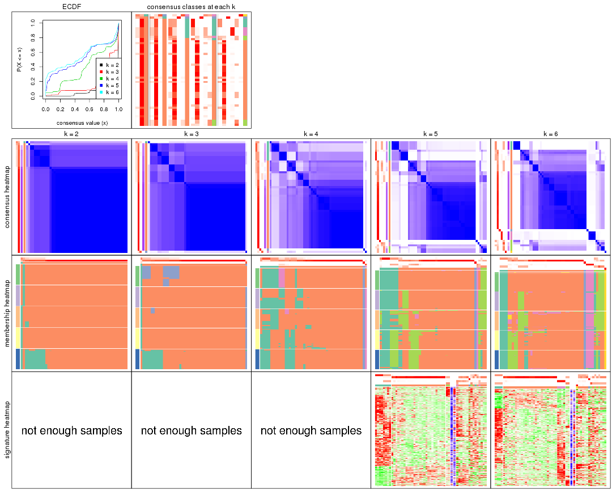
The plots are:
k and the heatmap of
predicted classes for each k.k.k.k.All the plots in panels can be made by individual functions and they are plotted later in this section.
select_partition_number() produces several plots showing different
statistics for choosing “optimized” k. There are following statistics:
k;k, the area increased is defined as \(A_k - A_{k-1}\).The detailed explanations of these statistics can be found in the cola vignette.
Generally speaking, lower PAC score, higher mean silhouette score or higher
concordance corresponds to better partition. Rand index and Jaccard index
measure how similar the current partition is compared to partition with k-1.
If they are too similar, we won't accept k is better than k-1.
select_partition_number(res)
The numeric values for all these statistics can be obtained by get_stats().
get_stats(res)
#> k 1-PAC mean_silhouette concordance area_increased Rand Jaccard
#> 2 2 0.673 0.808 0.945 0.1018 0.962 0.962
#> 3 3 0.461 0.816 0.920 0.7425 0.962 0.961
#> 4 4 0.401 0.569 0.848 1.1130 0.722 0.699
#> 5 5 0.573 0.538 0.826 0.3921 0.873 0.806
#> 6 6 0.652 0.611 0.852 0.0666 0.976 0.955
suggest_best_k() suggests the best \(k\) based on these statistics. The rules are as follows:
suggest_best_k(res)
#> [1] 4
Following shows the table of the partitions (You need to click the show/hide
code output link to see it). The membership matrix (columns with name p*)
is inferred by
clue::cl_consensus()
function with the SE method. Basically the value in the membership matrix
represents the probability to belong to a certain group. The finall class
label for an item is determined with the group with highest probability it
belongs to.
In get_classes() function, the entropy is calculated from the membership
matrix and the silhouette score is calculated from the consensus matrix.
cbind(get_classes(res, k = 2), get_membership(res, k = 2))
#> class entropy silhouette p1 p2
#> SRR633556 2 0.0000 0.913 0.000 1.000
#> SRR633557 2 0.7056 0.612 0.192 0.808
#> SRR633558 2 0.0000 0.913 0.000 1.000
#> SRR633559 2 0.0000 0.913 0.000 1.000
#> SRR633560 2 0.0000 0.913 0.000 1.000
#> SRR633561 2 0.0000 0.913 0.000 1.000
#> SRR633563 2 0.0000 0.913 0.000 1.000
#> SRR633564 2 0.0000 0.913 0.000 1.000
#> SRR633565 2 0.0000 0.913 0.000 1.000
#> SRR633566 2 0.0000 0.913 0.000 1.000
#> SRR633567 2 0.0000 0.913 0.000 1.000
#> SRR633568 2 0.7056 0.612 0.192 0.808
#> SRR633569 2 0.6801 0.639 0.180 0.820
#> SRR633570 2 0.6801 0.639 0.180 0.820
#> SRR633571 2 0.6801 0.639 0.180 0.820
#> SRR633572 2 0.7056 0.612 0.192 0.808
#> SRR633573 2 0.0000 0.913 0.000 1.000
#> SRR633574 2 0.0000 0.913 0.000 1.000
#> SRR633575 2 0.0000 0.913 0.000 1.000
#> SRR633576 2 0.0000 0.913 0.000 1.000
#> SRR633577 2 0.0000 0.913 0.000 1.000
#> SRR633578 2 0.9710 -0.276 0.400 0.600
#> SRR633579 2 0.0000 0.913 0.000 1.000
#> SRR633580 2 0.0000 0.913 0.000 1.000
#> SRR633581 2 0.0000 0.913 0.000 1.000
#> SRR633582 2 0.0000 0.913 0.000 1.000
#> SRR633583 2 0.0000 0.913 0.000 1.000
#> SRR633584 2 0.0000 0.913 0.000 1.000
#> SRR633585 2 0.0376 0.909 0.004 0.996
#> SRR633586 2 0.8081 0.445 0.248 0.752
#> SRR633587 2 0.0000 0.913 0.000 1.000
#> SRR633588 2 0.8081 0.445 0.248 0.752
#> SRR633589 2 0.0000 0.913 0.000 1.000
#> SRR633590 2 0.0000 0.913 0.000 1.000
#> SRR633591 2 0.0000 0.913 0.000 1.000
#> SRR633592 2 0.0000 0.913 0.000 1.000
#> SRR633593 2 0.0000 0.913 0.000 1.000
#> SRR633594 2 0.0000 0.913 0.000 1.000
#> SRR633595 2 0.0000 0.913 0.000 1.000
#> SRR633596 2 0.0000 0.913 0.000 1.000
#> SRR633597 2 0.0000 0.913 0.000 1.000
#> SRR633598 2 0.7056 0.612 0.192 0.808
#> SRR633599 2 0.0000 0.913 0.000 1.000
#> SRR633600 2 0.0000 0.913 0.000 1.000
#> SRR633601 1 0.9661 0.000 0.608 0.392
#> SRR633602 2 0.0000 0.913 0.000 1.000
#> SRR633603 2 0.7056 0.612 0.192 0.808
#> SRR633604 2 0.0376 0.909 0.004 0.996
#> SRR633605 2 0.0000 0.913 0.000 1.000
#> SRR633606 2 0.0000 0.913 0.000 1.000
#> SRR633607 2 0.2948 0.850 0.052 0.948
#> SRR633608 2 0.0000 0.913 0.000 1.000
cbind(get_classes(res, k = 3), get_membership(res, k = 3))
#> class entropy silhouette p1 p2 p3
#> SRR633556 2 0.0000 0.908 0.000 1.000 0.000
#> SRR633557 2 0.4861 0.749 0.180 0.808 0.012
#> SRR633558 2 0.0000 0.908 0.000 1.000 0.000
#> SRR633559 2 0.0000 0.908 0.000 1.000 0.000
#> SRR633560 2 0.0000 0.908 0.000 1.000 0.000
#> SRR633561 2 0.0000 0.908 0.000 1.000 0.000
#> SRR633563 2 0.3412 0.829 0.124 0.876 0.000
#> SRR633564 2 0.3412 0.829 0.124 0.876 0.000
#> SRR633565 2 0.3412 0.829 0.124 0.876 0.000
#> SRR633566 2 0.3412 0.829 0.124 0.876 0.000
#> SRR633567 2 0.3412 0.829 0.124 0.876 0.000
#> SRR633568 2 0.6143 0.638 0.304 0.684 0.012
#> SRR633569 2 0.5591 0.657 0.304 0.696 0.000
#> SRR633570 2 0.5591 0.657 0.304 0.696 0.000
#> SRR633571 2 0.5591 0.657 0.304 0.696 0.000
#> SRR633572 2 0.4861 0.749 0.180 0.808 0.012
#> SRR633573 2 0.0000 0.908 0.000 1.000 0.000
#> SRR633574 2 0.0000 0.908 0.000 1.000 0.000
#> SRR633575 2 0.0000 0.908 0.000 1.000 0.000
#> SRR633576 2 0.0000 0.908 0.000 1.000 0.000
#> SRR633577 2 0.0000 0.908 0.000 1.000 0.000
#> SRR633578 1 0.8396 0.000 0.624 0.180 0.196
#> SRR633579 2 0.0000 0.908 0.000 1.000 0.000
#> SRR633580 2 0.0000 0.908 0.000 1.000 0.000
#> SRR633581 2 0.0000 0.908 0.000 1.000 0.000
#> SRR633582 2 0.4575 0.764 0.184 0.812 0.004
#> SRR633583 2 0.0000 0.908 0.000 1.000 0.000
#> SRR633584 2 0.4575 0.764 0.184 0.812 0.004
#> SRR633585 2 0.0237 0.906 0.004 0.996 0.000
#> SRR633586 2 0.6424 0.673 0.180 0.752 0.068
#> SRR633587 2 0.0000 0.908 0.000 1.000 0.000
#> SRR633588 2 0.6424 0.673 0.180 0.752 0.068
#> SRR633589 2 0.0000 0.908 0.000 1.000 0.000
#> SRR633590 2 0.0000 0.908 0.000 1.000 0.000
#> SRR633591 2 0.0000 0.908 0.000 1.000 0.000
#> SRR633592 2 0.0000 0.908 0.000 1.000 0.000
#> SRR633593 2 0.0000 0.908 0.000 1.000 0.000
#> SRR633594 2 0.0000 0.908 0.000 1.000 0.000
#> SRR633595 2 0.0000 0.908 0.000 1.000 0.000
#> SRR633596 2 0.0000 0.908 0.000 1.000 0.000
#> SRR633597 2 0.4575 0.764 0.184 0.812 0.004
#> SRR633598 2 0.4861 0.749 0.180 0.808 0.012
#> SRR633599 2 0.0000 0.908 0.000 1.000 0.000
#> SRR633600 2 0.0000 0.908 0.000 1.000 0.000
#> SRR633601 3 0.4504 0.000 0.000 0.196 0.804
#> SRR633602 2 0.0000 0.908 0.000 1.000 0.000
#> SRR633603 2 0.4861 0.749 0.180 0.808 0.012
#> SRR633604 2 0.0237 0.906 0.004 0.996 0.000
#> SRR633605 2 0.0000 0.908 0.000 1.000 0.000
#> SRR633606 2 0.0000 0.908 0.000 1.000 0.000
#> SRR633607 2 0.1860 0.877 0.052 0.948 0.000
#> SRR633608 2 0.0000 0.908 0.000 1.000 0.000
cbind(get_classes(res, k = 4), get_membership(res, k = 4))
#> class entropy silhouette p1 p2 p3 p4
#> SRR633556 2 0.0000 0.8142 0.000 1.000 0 0.000
#> SRR633557 2 0.4382 0.3207 0.296 0.704 0 0.000
#> SRR633558 2 0.0000 0.8142 0.000 1.000 0 0.000
#> SRR633559 2 0.0000 0.8142 0.000 1.000 0 0.000
#> SRR633560 2 0.0000 0.8142 0.000 1.000 0 0.000
#> SRR633561 2 0.0000 0.8142 0.000 1.000 0 0.000
#> SRR633563 1 0.4999 0.4868 0.508 0.492 0 0.000
#> SRR633564 1 0.4999 0.4868 0.508 0.492 0 0.000
#> SRR633565 1 0.4999 0.4868 0.508 0.492 0 0.000
#> SRR633566 1 0.4999 0.4868 0.508 0.492 0 0.000
#> SRR633567 2 0.4746 -0.1050 0.368 0.632 0 0.000
#> SRR633568 1 0.3486 0.4157 0.812 0.188 0 0.000
#> SRR633569 1 0.3610 0.4414 0.800 0.200 0 0.000
#> SRR633570 1 0.3610 0.4414 0.800 0.200 0 0.000
#> SRR633571 1 0.3610 0.4414 0.800 0.200 0 0.000
#> SRR633572 2 0.4843 0.0906 0.396 0.604 0 0.000
#> SRR633573 2 0.0000 0.8142 0.000 1.000 0 0.000
#> SRR633574 2 0.0000 0.8142 0.000 1.000 0 0.000
#> SRR633575 2 0.0000 0.8142 0.000 1.000 0 0.000
#> SRR633576 2 0.0000 0.8142 0.000 1.000 0 0.000
#> SRR633577 2 0.1557 0.7695 0.056 0.944 0 0.000
#> SRR633578 3 0.0000 0.0000 0.000 0.000 1 0.000
#> SRR633579 2 0.0707 0.8056 0.020 0.980 0 0.000
#> SRR633580 2 0.0707 0.8056 0.020 0.980 0 0.000
#> SRR633581 2 0.0707 0.8056 0.020 0.980 0 0.000
#> SRR633582 2 0.6690 0.1505 0.188 0.620 0 0.192
#> SRR633583 2 0.0000 0.8142 0.000 1.000 0 0.000
#> SRR633584 2 0.6690 0.1505 0.188 0.620 0 0.192
#> SRR633585 2 0.0188 0.8129 0.004 0.996 0 0.000
#> SRR633586 2 0.6188 -0.0511 0.396 0.548 0 0.056
#> SRR633587 2 0.0000 0.8142 0.000 1.000 0 0.000
#> SRR633588 2 0.6188 -0.0511 0.396 0.548 0 0.056
#> SRR633589 2 0.0000 0.8142 0.000 1.000 0 0.000
#> SRR633590 2 0.0592 0.8078 0.016 0.984 0 0.000
#> SRR633591 2 0.0592 0.8078 0.016 0.984 0 0.000
#> SRR633592 2 0.0592 0.8078 0.016 0.984 0 0.000
#> SRR633593 2 0.3311 0.6159 0.172 0.828 0 0.000
#> SRR633594 2 0.3311 0.6159 0.172 0.828 0 0.000
#> SRR633595 2 0.3311 0.6159 0.172 0.828 0 0.000
#> SRR633596 2 0.0000 0.8142 0.000 1.000 0 0.000
#> SRR633597 2 0.6852 0.1065 0.208 0.600 0 0.192
#> SRR633598 1 0.5000 0.0437 0.504 0.496 0 0.000
#> SRR633599 2 0.0000 0.8142 0.000 1.000 0 0.000
#> SRR633600 2 0.0000 0.8142 0.000 1.000 0 0.000
#> SRR633601 4 0.3528 0.0000 0.000 0.192 0 0.808
#> SRR633602 2 0.1716 0.7651 0.064 0.936 0 0.000
#> SRR633603 2 0.4843 0.0906 0.396 0.604 0 0.000
#> SRR633604 2 0.1211 0.7888 0.040 0.960 0 0.000
#> SRR633605 2 0.0000 0.8142 0.000 1.000 0 0.000
#> SRR633606 2 0.0000 0.8142 0.000 1.000 0 0.000
#> SRR633607 2 0.2345 0.7142 0.100 0.900 0 0.000
#> SRR633608 2 0.1211 0.7834 0.040 0.960 0 0.000
cbind(get_classes(res, k = 5), get_membership(res, k = 5))
#> class entropy silhouette p1 p2 p3 p4 p5
#> SRR633556 2 0.0000 0.8029 0.000 1.000 0 0.000 0.000
#> SRR633557 2 0.3774 0.4545 0.000 0.704 0 0.296 0.000
#> SRR633558 2 0.0162 0.8025 0.000 0.996 0 0.004 0.000
#> SRR633559 2 0.0000 0.8029 0.000 1.000 0 0.000 0.000
#> SRR633560 2 0.0162 0.8025 0.000 0.996 0 0.004 0.000
#> SRR633561 2 0.0000 0.8029 0.000 1.000 0 0.000 0.000
#> SRR633563 1 0.0404 0.5942 0.988 0.012 0 0.000 0.000
#> SRR633564 1 0.0404 0.5942 0.988 0.012 0 0.000 0.000
#> SRR633565 1 0.0404 0.5942 0.988 0.012 0 0.000 0.000
#> SRR633566 1 0.0404 0.5942 0.988 0.012 0 0.000 0.000
#> SRR633567 1 0.5788 0.2814 0.680 0.168 0 0.036 0.116
#> SRR633568 1 0.5376 0.5636 0.520 0.056 0 0.424 0.000
#> SRR633569 1 0.5359 0.5773 0.532 0.056 0 0.412 0.000
#> SRR633570 1 0.5359 0.5773 0.532 0.056 0 0.412 0.000
#> SRR633571 1 0.5359 0.5773 0.532 0.056 0 0.412 0.000
#> SRR633572 2 0.4256 0.2361 0.000 0.564 0 0.436 0.000
#> SRR633573 2 0.0162 0.8029 0.000 0.996 0 0.004 0.000
#> SRR633574 2 0.0162 0.8029 0.000 0.996 0 0.004 0.000
#> SRR633575 2 0.0290 0.8029 0.000 0.992 0 0.008 0.000
#> SRR633576 2 0.0290 0.8029 0.000 0.992 0 0.008 0.000
#> SRR633577 2 0.6461 0.0229 0.288 0.568 0 0.036 0.108
#> SRR633578 3 0.0000 0.0000 0.000 0.000 1 0.000 0.000
#> SRR633579 2 0.0794 0.7958 0.000 0.972 0 0.028 0.000
#> SRR633580 2 0.0794 0.7958 0.000 0.972 0 0.028 0.000
#> SRR633581 2 0.0794 0.7958 0.000 0.972 0 0.028 0.000
#> SRR633582 5 0.4841 0.7118 0.000 0.416 0 0.024 0.560
#> SRR633583 2 0.0000 0.8029 0.000 1.000 0 0.000 0.000
#> SRR633584 5 0.4841 0.7118 0.000 0.416 0 0.024 0.560
#> SRR633585 2 0.0162 0.8030 0.000 0.996 0 0.004 0.000
#> SRR633586 2 0.4306 0.1065 0.000 0.508 0 0.492 0.000
#> SRR633587 2 0.0000 0.8029 0.000 1.000 0 0.000 0.000
#> SRR633588 2 0.4306 0.1065 0.000 0.508 0 0.492 0.000
#> SRR633589 2 0.0000 0.8029 0.000 1.000 0 0.000 0.000
#> SRR633590 2 0.0609 0.7991 0.000 0.980 0 0.020 0.000
#> SRR633591 2 0.0609 0.7991 0.000 0.980 0 0.020 0.000
#> SRR633592 2 0.0609 0.7991 0.000 0.980 0 0.020 0.000
#> SRR633593 2 0.4654 -0.1793 0.000 0.628 0 0.024 0.348
#> SRR633594 2 0.4654 -0.1793 0.000 0.628 0 0.024 0.348
#> SRR633595 2 0.4654 -0.1793 0.000 0.628 0 0.024 0.348
#> SRR633596 2 0.0162 0.8029 0.000 0.996 0 0.004 0.000
#> SRR633597 5 0.6850 0.3230 0.212 0.184 0 0.044 0.560
#> SRR633598 4 0.6806 -0.3923 0.000 0.296 0 0.356 0.348
#> SRR633599 2 0.0162 0.8029 0.000 0.996 0 0.004 0.000
#> SRR633600 2 0.0162 0.8029 0.000 0.996 0 0.004 0.000
#> SRR633601 4 0.4410 -0.5156 0.000 0.004 0 0.556 0.440
#> SRR633602 2 0.6541 -0.0128 0.288 0.560 0 0.036 0.116
#> SRR633603 2 0.4201 0.2978 0.000 0.592 0 0.408 0.000
#> SRR633604 2 0.1197 0.7829 0.000 0.952 0 0.048 0.000
#> SRR633605 2 0.0404 0.8021 0.000 0.988 0 0.012 0.000
#> SRR633606 2 0.0404 0.8021 0.000 0.988 0 0.012 0.000
#> SRR633607 2 0.2127 0.7225 0.000 0.892 0 0.108 0.000
#> SRR633608 2 0.1830 0.7468 0.068 0.924 0 0.008 0.000
cbind(get_classes(res, k = 6), get_membership(res, k = 6))
#> class entropy silhouette p1 p2 p3 p4 p5 p6
#> SRR633556 2 0.0405 0.80086 0.004 0.988 0 0.008 0.000 0.000
#> SRR633557 2 0.3653 0.46020 0.300 0.692 0 0.008 0.000 0.000
#> SRR633558 2 0.0146 0.80156 0.000 0.996 0 0.000 0.000 0.004
#> SRR633559 2 0.0405 0.80086 0.004 0.988 0 0.008 0.000 0.000
#> SRR633560 2 0.0146 0.80156 0.000 0.996 0 0.000 0.000 0.004
#> SRR633561 2 0.0405 0.80086 0.004 0.988 0 0.008 0.000 0.000
#> SRR633563 1 0.4319 1.00000 0.576 0.000 0 0.024 0.400 0.000
#> SRR633564 1 0.4319 1.00000 0.576 0.000 0 0.024 0.400 0.000
#> SRR633565 1 0.4319 1.00000 0.576 0.000 0 0.024 0.400 0.000
#> SRR633566 1 0.4319 1.00000 0.576 0.000 0 0.024 0.400 0.000
#> SRR633567 5 0.6457 -0.38988 0.404 0.136 0 0.052 0.408 0.000
#> SRR633568 4 0.0622 0.97715 0.012 0.008 0 0.980 0.000 0.000
#> SRR633569 4 0.0622 0.99242 0.000 0.008 0 0.980 0.012 0.000
#> SRR633570 4 0.0622 0.99242 0.000 0.008 0 0.980 0.012 0.000
#> SRR633571 4 0.0622 0.99242 0.000 0.008 0 0.980 0.012 0.000
#> SRR633572 2 0.4996 0.19949 0.408 0.520 0 0.072 0.000 0.000
#> SRR633573 2 0.0260 0.80040 0.000 0.992 0 0.008 0.000 0.000
#> SRR633574 2 0.0260 0.80040 0.000 0.992 0 0.008 0.000 0.000
#> SRR633575 2 0.0405 0.80062 0.004 0.988 0 0.008 0.000 0.000
#> SRR633576 2 0.0405 0.80062 0.004 0.988 0 0.008 0.000 0.000
#> SRR633577 2 0.5138 -0.01561 0.028 0.536 0 0.036 0.400 0.000
#> SRR633578 3 0.0000 0.00000 0.000 0.000 1 0.000 0.000 0.000
#> SRR633579 2 0.1334 0.78793 0.032 0.948 0 0.020 0.000 0.000
#> SRR633580 2 0.1334 0.78793 0.032 0.948 0 0.020 0.000 0.000
#> SRR633581 2 0.1334 0.78793 0.032 0.948 0 0.020 0.000 0.000
#> SRR633582 5 0.3756 0.54442 0.000 0.400 0 0.000 0.600 0.000
#> SRR633583 2 0.0405 0.80086 0.004 0.988 0 0.008 0.000 0.000
#> SRR633584 5 0.3756 0.54442 0.000 0.400 0 0.000 0.600 0.000
#> SRR633585 2 0.0520 0.80069 0.008 0.984 0 0.008 0.000 0.000
#> SRR633586 2 0.6033 0.06850 0.416 0.452 0 0.076 0.000 0.056
#> SRR633587 2 0.0405 0.80086 0.004 0.988 0 0.008 0.000 0.000
#> SRR633588 2 0.6033 0.06850 0.416 0.452 0 0.076 0.000 0.056
#> SRR633589 2 0.0405 0.80086 0.004 0.988 0 0.008 0.000 0.000
#> SRR633590 2 0.1176 0.79474 0.024 0.956 0 0.020 0.000 0.000
#> SRR633591 2 0.1176 0.79474 0.024 0.956 0 0.020 0.000 0.000
#> SRR633592 2 0.1176 0.79474 0.024 0.956 0 0.020 0.000 0.000
#> SRR633593 2 0.3727 -0.00697 0.000 0.612 0 0.000 0.388 0.000
#> SRR633594 2 0.3727 -0.00697 0.000 0.612 0 0.000 0.388 0.000
#> SRR633595 2 0.3727 -0.00697 0.000 0.612 0 0.000 0.388 0.000
#> SRR633596 2 0.0260 0.80040 0.000 0.992 0 0.008 0.000 0.000
#> SRR633597 5 0.2945 0.36554 0.000 0.156 0 0.020 0.824 0.000
#> SRR633598 5 0.6293 0.33750 0.324 0.280 0 0.008 0.388 0.000
#> SRR633599 2 0.0260 0.80040 0.000 0.992 0 0.008 0.000 0.000
#> SRR633600 2 0.0260 0.80040 0.000 0.992 0 0.008 0.000 0.000
#> SRR633601 6 0.0000 0.00000 0.000 0.000 0 0.000 0.000 1.000
#> SRR633602 2 0.5192 -0.04791 0.024 0.528 0 0.044 0.404 0.000
#> SRR633603 2 0.4607 0.29571 0.380 0.580 0 0.036 0.000 0.004
#> SRR633604 2 0.1572 0.78147 0.028 0.936 0 0.036 0.000 0.000
#> SRR633605 2 0.0767 0.79736 0.012 0.976 0 0.008 0.000 0.004
#> SRR633606 2 0.0767 0.79736 0.012 0.976 0 0.008 0.000 0.004
#> SRR633607 2 0.2586 0.71749 0.032 0.868 0 0.100 0.000 0.000
#> SRR633608 2 0.2198 0.75581 0.024 0.912 0 0.032 0.032 0.000
Heatmaps for the consensus matrix. It visualizes the probability of two samples to be in a same group.
consensus_heatmap(res, k = 2)
consensus_heatmap(res, k = 3)
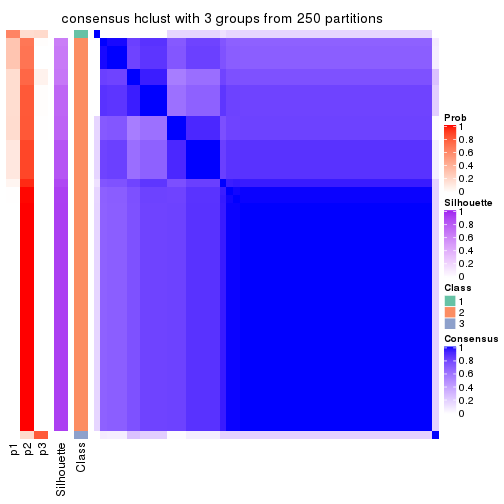
consensus_heatmap(res, k = 4)
consensus_heatmap(res, k = 5)

consensus_heatmap(res, k = 6)
Heatmaps for the membership of samples in all partitions to see how consistent they are:
membership_heatmap(res, k = 2)
membership_heatmap(res, k = 3)
membership_heatmap(res, k = 4)
membership_heatmap(res, k = 5)
membership_heatmap(res, k = 6)
As soon as we have had the classes for columns, we can look for signatures which are significantly different between classes which can be candidate marks for certain classes. Following are the heatmaps for signatures.
Signature heatmaps where rows are scaled:
get_signatures(res, k = 2)

get_signatures(res, k = 3)

get_signatures(res, k = 4)

get_signatures(res, k = 5)
get_signatures(res, k = 6)
Signature heatmaps where rows are not scaled:
get_signatures(res, k = 2, scale_rows = FALSE)

get_signatures(res, k = 3, scale_rows = FALSE)

get_signatures(res, k = 4, scale_rows = FALSE)

get_signatures(res, k = 5, scale_rows = FALSE)
get_signatures(res, k = 6, scale_rows = FALSE)
Compare the overlap of signatures from different k:
compare_signatures(res)
get_signature() returns a data frame invisibly. TO get the list of signatures, the function
call should be assigned to a variable explicitly. In following code, if plot argument is set
to FALSE, no heatmap is plotted while only the differential analysis is performed.
# code only for demonstration
tb = get_signature(res, k = ..., plot = FALSE)
An example of the output of tb is:
#> which_row fdr mean_1 mean_2 scaled_mean_1 scaled_mean_2 km
#> 1 38 0.042760348 8.373488 9.131774 -0.5533452 0.5164555 1
#> 2 40 0.018707592 7.106213 8.469186 -0.6173731 0.5762149 1
#> 3 55 0.019134737 10.221463 11.207825 -0.6159697 0.5749050 1
#> 4 59 0.006059896 5.921854 7.869574 -0.6899429 0.6439467 1
#> 5 60 0.018055526 8.928898 10.211722 -0.6204761 0.5791110 1
#> 6 98 0.009384629 15.714769 14.887706 0.6635654 -0.6193277 2
...
The columns in tb are:
which_row: row indices corresponding to the input matrix.fdr: FDR for the differential test. mean_x: The mean value in group x.scaled_mean_x: The mean value in group x after rows are scaled.km: Row groups if k-means clustering is applied to rows.UMAP plot which shows how samples are separated.
dimension_reduction(res, k = 2, method = "UMAP")
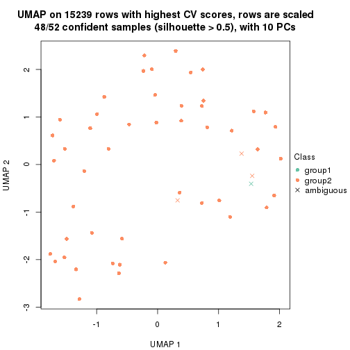
dimension_reduction(res, k = 3, method = "UMAP")
dimension_reduction(res, k = 4, method = "UMAP")
dimension_reduction(res, k = 5, method = "UMAP")

dimension_reduction(res, k = 6, method = "UMAP")
Following heatmap shows how subgroups are split when increasing k:
collect_classes(res)
If matrix rows can be associated to genes, consider to use functional_enrichment(res,
...) to perform function enrichment for the signature genes. See this vignette for more detailed explanations.
The object with results only for a single top-value method and a single partition method can be extracted as:
res = res_list["CV", "kmeans"]
# you can also extract it by
# res = res_list["CV:kmeans"]
A summary of res and all the functions that can be applied to it:
res
#> A 'ConsensusPartition' object with k = 2, 3, 4, 5, 6.
#> On a matrix with 15239 rows and 52 columns.
#> Top rows (1000, 2000, 3000, 4000, 5000) are extracted by 'CV' method.
#> Subgroups are detected by 'kmeans' method.
#> Performed in total 1250 partitions by row resampling.
#> Best k for subgroups seems to be 2.
#>
#> Following methods can be applied to this 'ConsensusPartition' object:
#> [1] "cola_report" "collect_classes" "collect_plots"
#> [4] "collect_stats" "colnames" "compare_signatures"
#> [7] "consensus_heatmap" "dimension_reduction" "functional_enrichment"
#> [10] "get_anno_col" "get_anno" "get_classes"
#> [13] "get_consensus" "get_matrix" "get_membership"
#> [16] "get_param" "get_signatures" "get_stats"
#> [19] "is_best_k" "is_stable_k" "membership_heatmap"
#> [22] "ncol" "nrow" "plot_ecdf"
#> [25] "rownames" "select_partition_number" "show"
#> [28] "suggest_best_k" "test_to_known_factors"
collect_plots() function collects all the plots made from res for all k (number of partitions)
into one single page to provide an easy and fast comparison between different k.
collect_plots(res)
The plots are:
k and the heatmap of
predicted classes for each k.k.k.k.All the plots in panels can be made by individual functions and they are plotted later in this section.
select_partition_number() produces several plots showing different
statistics for choosing “optimized” k. There are following statistics:
k;k, the area increased is defined as \(A_k - A_{k-1}\).The detailed explanations of these statistics can be found in the cola vignette.
Generally speaking, lower PAC score, higher mean silhouette score or higher
concordance corresponds to better partition. Rand index and Jaccard index
measure how similar the current partition is compared to partition with k-1.
If they are too similar, we won't accept k is better than k-1.
select_partition_number(res)
The numeric values for all these statistics can be obtained by get_stats().
get_stats(res)
#> k 1-PAC mean_silhouette concordance area_increased Rand Jaccard
#> 2 2 0.426 0.837 0.898 0.4320 0.581 0.581
#> 3 3 0.446 0.698 0.812 0.3415 0.777 0.625
#> 4 4 0.364 0.424 0.712 0.1158 0.928 0.831
#> 5 5 0.445 0.440 0.656 0.1055 0.914 0.792
#> 6 6 0.505 0.396 0.668 0.0699 0.819 0.538
suggest_best_k() suggests the best \(k\) based on these statistics. The rules are as follows:
suggest_best_k(res)
#> [1] 2
Following shows the table of the partitions (You need to click the show/hide
code output link to see it). The membership matrix (columns with name p*)
is inferred by
clue::cl_consensus()
function with the SE method. Basically the value in the membership matrix
represents the probability to belong to a certain group. The finall class
label for an item is determined with the group with highest probability it
belongs to.
In get_classes() function, the entropy is calculated from the membership
matrix and the silhouette score is calculated from the consensus matrix.
cbind(get_classes(res, k = 2), get_membership(res, k = 2))
#> class entropy silhouette p1 p2
#> SRR633556 2 0.0000 0.889 0.000 1.000
#> SRR633557 2 0.7219 0.769 0.200 0.800
#> SRR633558 2 0.1184 0.884 0.016 0.984
#> SRR633559 2 0.0000 0.889 0.000 1.000
#> SRR633560 2 0.1184 0.884 0.016 0.984
#> SRR633561 2 0.0000 0.889 0.000 1.000
#> SRR633563 1 0.7219 0.852 0.800 0.200
#> SRR633564 1 0.7219 0.852 0.800 0.200
#> SRR633565 1 0.6343 0.878 0.840 0.160
#> SRR633566 1 0.2603 0.897 0.956 0.044
#> SRR633567 1 0.2603 0.897 0.956 0.044
#> SRR633568 1 0.2948 0.898 0.948 0.052
#> SRR633569 1 0.6048 0.886 0.852 0.148
#> SRR633570 1 0.2948 0.898 0.948 0.052
#> SRR633571 1 0.7376 0.850 0.792 0.208
#> SRR633572 2 0.0376 0.888 0.004 0.996
#> SRR633573 2 0.0000 0.889 0.000 1.000
#> SRR633574 2 0.0000 0.889 0.000 1.000
#> SRR633575 2 0.0000 0.889 0.000 1.000
#> SRR633576 2 0.1184 0.884 0.016 0.984
#> SRR633577 1 0.8555 0.758 0.720 0.280
#> SRR633578 1 0.2236 0.893 0.964 0.036
#> SRR633579 2 0.9129 0.629 0.328 0.672
#> SRR633580 2 0.9129 0.629 0.328 0.672
#> SRR633581 2 0.9129 0.629 0.328 0.672
#> SRR633582 2 0.4022 0.830 0.080 0.920
#> SRR633583 2 0.0000 0.889 0.000 1.000
#> SRR633584 2 0.6531 0.720 0.168 0.832
#> SRR633585 2 0.0000 0.889 0.000 1.000
#> SRR633586 2 0.8386 0.707 0.268 0.732
#> SRR633587 2 0.0376 0.888 0.004 0.996
#> SRR633588 2 0.8207 0.720 0.256 0.744
#> SRR633589 2 0.0000 0.889 0.000 1.000
#> SRR633590 2 0.0376 0.888 0.004 0.996
#> SRR633591 2 0.0376 0.888 0.004 0.996
#> SRR633592 2 0.5946 0.806 0.144 0.856
#> SRR633593 2 0.2236 0.874 0.036 0.964
#> SRR633594 2 0.2236 0.874 0.036 0.964
#> SRR633595 2 0.2236 0.874 0.036 0.964
#> SRR633596 2 0.0000 0.889 0.000 1.000
#> SRR633597 1 0.2603 0.897 0.956 0.044
#> SRR633598 2 0.8813 0.687 0.300 0.700
#> SRR633599 2 0.0000 0.889 0.000 1.000
#> SRR633600 2 0.0000 0.889 0.000 1.000
#> SRR633601 1 0.2423 0.895 0.960 0.040
#> SRR633602 1 0.7299 0.856 0.796 0.204
#> SRR633603 2 0.8608 0.703 0.284 0.716
#> SRR633604 2 0.9129 0.629 0.328 0.672
#> SRR633605 2 0.1184 0.884 0.016 0.984
#> SRR633606 2 0.1184 0.884 0.016 0.984
#> SRR633607 2 0.8443 0.705 0.272 0.728
#> SRR633608 1 0.4815 0.870 0.896 0.104
cbind(get_classes(res, k = 3), get_membership(res, k = 3))
#> class entropy silhouette p1 p2 p3
#> SRR633556 2 0.0000 0.8412 0.000 1.000 0.000
#> SRR633557 2 0.6421 -0.4375 0.004 0.572 0.424
#> SRR633558 2 0.2878 0.8215 0.000 0.904 0.096
#> SRR633559 2 0.0000 0.8412 0.000 1.000 0.000
#> SRR633560 2 0.3112 0.8202 0.004 0.900 0.096
#> SRR633561 2 0.0000 0.8412 0.000 1.000 0.000
#> SRR633563 1 0.2176 0.8474 0.948 0.020 0.032
#> SRR633564 1 0.2176 0.8474 0.948 0.020 0.032
#> SRR633565 1 0.2176 0.8474 0.948 0.020 0.032
#> SRR633566 1 0.1832 0.8464 0.956 0.008 0.036
#> SRR633567 1 0.1950 0.8501 0.952 0.008 0.040
#> SRR633568 1 0.6553 0.5140 0.580 0.008 0.412
#> SRR633569 1 0.4663 0.8373 0.828 0.016 0.156
#> SRR633570 1 0.4164 0.8387 0.848 0.008 0.144
#> SRR633571 1 0.4418 0.8419 0.848 0.020 0.132
#> SRR633572 2 0.0592 0.8378 0.000 0.988 0.012
#> SRR633573 2 0.1525 0.8423 0.004 0.964 0.032
#> SRR633574 2 0.1525 0.8423 0.004 0.964 0.032
#> SRR633575 2 0.1525 0.8423 0.004 0.964 0.032
#> SRR633576 2 0.3851 0.7892 0.004 0.860 0.136
#> SRR633577 1 0.6613 0.6289 0.740 0.188 0.072
#> SRR633578 3 0.6379 -0.0491 0.368 0.008 0.624
#> SRR633579 3 0.8093 0.6981 0.068 0.416 0.516
#> SRR633580 3 0.8093 0.6981 0.068 0.416 0.516
#> SRR633581 3 0.8093 0.6981 0.068 0.416 0.516
#> SRR633582 2 0.5757 0.6456 0.056 0.792 0.152
#> SRR633583 2 0.1753 0.8303 0.000 0.952 0.048
#> SRR633584 2 0.6823 0.5578 0.108 0.740 0.152
#> SRR633585 2 0.0237 0.8420 0.000 0.996 0.004
#> SRR633586 3 0.7174 0.6450 0.024 0.460 0.516
#> SRR633587 2 0.0892 0.8345 0.000 0.980 0.020
#> SRR633588 3 0.6819 0.6194 0.012 0.476 0.512
#> SRR633589 2 0.0747 0.8361 0.000 0.984 0.016
#> SRR633590 2 0.1529 0.8237 0.000 0.960 0.040
#> SRR633591 2 0.1529 0.8237 0.000 0.960 0.040
#> SRR633592 2 0.5948 -0.1992 0.000 0.640 0.360
#> SRR633593 2 0.4449 0.7654 0.040 0.860 0.100
#> SRR633594 2 0.4449 0.7654 0.040 0.860 0.100
#> SRR633595 2 0.4449 0.7654 0.040 0.860 0.100
#> SRR633596 2 0.2400 0.8359 0.004 0.932 0.064
#> SRR633597 1 0.5070 0.8133 0.772 0.004 0.224
#> SRR633598 3 0.7552 0.6244 0.052 0.352 0.596
#> SRR633599 2 0.2590 0.8287 0.004 0.924 0.072
#> SRR633600 2 0.2590 0.8287 0.004 0.924 0.072
#> SRR633601 3 0.6359 -0.0407 0.364 0.008 0.628
#> SRR633602 1 0.5650 0.7797 0.808 0.084 0.108
#> SRR633603 3 0.7012 0.6658 0.040 0.308 0.652
#> SRR633604 3 0.8264 0.6965 0.088 0.356 0.556
#> SRR633605 2 0.4723 0.7494 0.016 0.824 0.160
#> SRR633606 2 0.4723 0.7494 0.016 0.824 0.160
#> SRR633607 3 0.7451 0.6578 0.040 0.396 0.564
#> SRR633608 1 0.6455 0.7266 0.764 0.108 0.128
cbind(get_classes(res, k = 4), get_membership(res, k = 4))
#> class entropy silhouette p1 p2 p3 p4
#> SRR633556 2 0.0000 0.7077 0.000 1.000 0.000 0.000
#> SRR633557 2 0.6868 -0.1249 0.000 0.584 0.264 0.152
#> SRR633558 2 0.2775 0.6969 0.000 0.896 0.084 0.020
#> SRR633559 2 0.0336 0.7060 0.000 0.992 0.008 0.000
#> SRR633560 2 0.4235 0.6884 0.000 0.824 0.092 0.084
#> SRR633561 2 0.0000 0.7077 0.000 1.000 0.000 0.000
#> SRR633563 1 0.0188 0.4998 0.996 0.000 0.004 0.000
#> SRR633564 1 0.0188 0.4998 0.996 0.000 0.004 0.000
#> SRR633565 1 0.0188 0.4998 0.996 0.000 0.004 0.000
#> SRR633566 1 0.0336 0.4918 0.992 0.000 0.000 0.008
#> SRR633567 1 0.2987 0.4356 0.880 0.000 0.016 0.104
#> SRR633568 4 0.7359 0.3437 0.300 0.004 0.168 0.528
#> SRR633569 1 0.5571 -0.3868 0.512 0.004 0.012 0.472
#> SRR633570 1 0.5487 -0.2015 0.580 0.000 0.020 0.400
#> SRR633571 1 0.5660 -0.2090 0.576 0.004 0.020 0.400
#> SRR633572 2 0.1722 0.6883 0.000 0.944 0.048 0.008
#> SRR633573 2 0.3156 0.7036 0.000 0.884 0.048 0.068
#> SRR633574 2 0.3156 0.7036 0.000 0.884 0.048 0.068
#> SRR633575 2 0.3156 0.7036 0.000 0.884 0.048 0.068
#> SRR633576 2 0.5656 0.6165 0.004 0.724 0.180 0.092
#> SRR633577 1 0.6885 0.2475 0.656 0.220 0.064 0.060
#> SRR633578 3 0.7145 -0.1115 0.192 0.000 0.556 0.252
#> SRR633579 3 0.6332 0.5630 0.036 0.356 0.588 0.020
#> SRR633580 3 0.6287 0.5761 0.036 0.344 0.600 0.020
#> SRR633581 3 0.6287 0.5761 0.036 0.344 0.600 0.020
#> SRR633582 2 0.6034 0.4492 0.012 0.684 0.068 0.236
#> SRR633583 2 0.2589 0.6830 0.000 0.912 0.044 0.044
#> SRR633584 2 0.6585 0.4058 0.028 0.648 0.068 0.256
#> SRR633585 2 0.0000 0.7077 0.000 1.000 0.000 0.000
#> SRR633586 2 0.7365 -0.3769 0.000 0.440 0.400 0.160
#> SRR633587 2 0.1545 0.6929 0.000 0.952 0.040 0.008
#> SRR633588 2 0.7362 -0.3695 0.000 0.444 0.396 0.160
#> SRR633589 2 0.1022 0.6982 0.000 0.968 0.032 0.000
#> SRR633590 2 0.2611 0.6548 0.000 0.896 0.096 0.008
#> SRR633591 2 0.2611 0.6548 0.000 0.896 0.096 0.008
#> SRR633592 2 0.4917 0.1216 0.000 0.656 0.336 0.008
#> SRR633593 2 0.6743 0.5283 0.028 0.656 0.096 0.220
#> SRR633594 2 0.6743 0.5283 0.028 0.656 0.096 0.220
#> SRR633595 2 0.6743 0.5283 0.028 0.656 0.096 0.220
#> SRR633596 2 0.4992 0.6676 0.008 0.788 0.104 0.100
#> SRR633597 4 0.6438 0.0878 0.452 0.004 0.056 0.488
#> SRR633598 3 0.8537 0.4034 0.028 0.268 0.392 0.312
#> SRR633599 2 0.4946 0.6576 0.004 0.784 0.124 0.088
#> SRR633600 2 0.4892 0.6601 0.004 0.788 0.120 0.088
#> SRR633601 3 0.7463 -0.1835 0.180 0.000 0.456 0.364
#> SRR633602 1 0.7320 0.3048 0.656 0.112 0.144 0.088
#> SRR633603 3 0.7638 0.4841 0.016 0.252 0.544 0.188
#> SRR633604 3 0.6366 0.5520 0.048 0.292 0.636 0.024
#> SRR633605 2 0.6296 0.5896 0.016 0.692 0.184 0.108
#> SRR633606 2 0.6296 0.5896 0.016 0.692 0.184 0.108
#> SRR633607 3 0.6330 0.4556 0.024 0.352 0.592 0.032
#> SRR633608 1 0.7813 0.2402 0.600 0.124 0.200 0.076
cbind(get_classes(res, k = 5), get_membership(res, k = 5))
#> class entropy silhouette p1 p2 p3 p4 p5
#> SRR633556 2 0.0162 0.67550 0.000 0.996 0.004 0.000 0.000
#> SRR633557 2 0.7241 -0.22330 0.000 0.528 0.156 0.076 0.240
#> SRR633558 2 0.3171 0.65279 0.000 0.816 0.008 0.000 0.176
#> SRR633559 2 0.0290 0.67467 0.000 0.992 0.008 0.000 0.000
#> SRR633560 2 0.3550 0.64118 0.000 0.760 0.004 0.000 0.236
#> SRR633561 2 0.0404 0.67702 0.000 0.988 0.000 0.000 0.012
#> SRR633563 1 0.0000 0.58366 1.000 0.000 0.000 0.000 0.000
#> SRR633564 1 0.0000 0.58366 1.000 0.000 0.000 0.000 0.000
#> SRR633565 1 0.0000 0.58366 1.000 0.000 0.000 0.000 0.000
#> SRR633566 1 0.0324 0.57917 0.992 0.000 0.004 0.004 0.000
#> SRR633567 1 0.3827 0.41845 0.812 0.000 0.020 0.144 0.024
#> SRR633568 4 0.5833 0.57496 0.176 0.000 0.048 0.680 0.096
#> SRR633569 4 0.3934 0.75339 0.276 0.000 0.008 0.716 0.000
#> SRR633570 4 0.4552 0.74573 0.352 0.000 0.012 0.632 0.004
#> SRR633571 4 0.4552 0.74573 0.352 0.000 0.012 0.632 0.004
#> SRR633572 2 0.2568 0.63842 0.000 0.888 0.092 0.016 0.004
#> SRR633573 2 0.3047 0.66544 0.000 0.832 0.004 0.004 0.160
#> SRR633574 2 0.3047 0.66544 0.000 0.832 0.004 0.004 0.160
#> SRR633575 2 0.3047 0.66544 0.000 0.832 0.004 0.004 0.160
#> SRR633576 2 0.4599 0.50880 0.000 0.600 0.016 0.000 0.384
#> SRR633577 1 0.8450 0.24220 0.472 0.220 0.152 0.108 0.048
#> SRR633578 3 0.5725 0.18515 0.032 0.000 0.680 0.180 0.108
#> SRR633579 3 0.3293 0.43050 0.000 0.160 0.824 0.008 0.008
#> SRR633580 3 0.3293 0.43050 0.000 0.160 0.824 0.008 0.008
#> SRR633581 3 0.3293 0.43050 0.000 0.160 0.824 0.008 0.008
#> SRR633582 2 0.6175 0.42917 0.000 0.636 0.080 0.224 0.060
#> SRR633583 2 0.2653 0.65367 0.000 0.900 0.052 0.028 0.020
#> SRR633584 2 0.6595 0.40509 0.004 0.608 0.080 0.232 0.076
#> SRR633585 2 0.0566 0.67700 0.000 0.984 0.000 0.004 0.012
#> SRR633586 3 0.8065 -0.04891 0.000 0.332 0.364 0.116 0.188
#> SRR633587 2 0.2756 0.63206 0.000 0.880 0.092 0.024 0.004
#> SRR633588 3 0.8078 -0.04955 0.000 0.336 0.360 0.120 0.184
#> SRR633589 2 0.1569 0.66308 0.000 0.944 0.044 0.008 0.004
#> SRR633590 2 0.3632 0.55892 0.000 0.800 0.176 0.020 0.004
#> SRR633591 2 0.3632 0.55892 0.000 0.800 0.176 0.020 0.004
#> SRR633592 2 0.4945 -0.12250 0.000 0.536 0.440 0.020 0.004
#> SRR633593 2 0.6567 0.33741 0.012 0.560 0.060 0.048 0.320
#> SRR633594 2 0.6567 0.33741 0.012 0.560 0.060 0.048 0.320
#> SRR633595 2 0.6567 0.33741 0.012 0.560 0.060 0.048 0.320
#> SRR633596 2 0.3996 0.63104 0.000 0.752 0.008 0.012 0.228
#> SRR633597 4 0.6394 0.61888 0.224 0.008 0.064 0.632 0.072
#> SRR633598 5 0.7886 0.18206 0.004 0.208 0.200 0.112 0.476
#> SRR633599 2 0.4081 0.59441 0.000 0.696 0.004 0.004 0.296
#> SRR633600 2 0.4081 0.59441 0.000 0.696 0.004 0.004 0.296
#> SRR633601 3 0.7791 -0.16072 0.064 0.000 0.384 0.284 0.268
#> SRR633602 1 0.8369 0.26838 0.456 0.080 0.272 0.136 0.056
#> SRR633603 5 0.7159 0.05339 0.004 0.096 0.268 0.092 0.540
#> SRR633604 3 0.6220 0.11661 0.004 0.112 0.572 0.012 0.300
#> SRR633605 2 0.5296 0.44390 0.004 0.536 0.032 0.004 0.424
#> SRR633606 2 0.5296 0.44390 0.004 0.536 0.032 0.004 0.424
#> SRR633607 3 0.6901 -0.00527 0.004 0.184 0.492 0.016 0.304
#> SRR633608 1 0.8170 0.22016 0.380 0.092 0.380 0.116 0.032
cbind(get_classes(res, k = 6), get_membership(res, k = 6))
#> class entropy silhouette p1 p2 p3 p4 p5 p6
#> SRR633556 2 0.0146 0.5264 0.000 0.996 0.000 0.000 0.000 0.004
#> SRR633557 2 0.6626 0.1680 0.000 0.584 0.104 0.044 0.064 0.204
#> SRR633558 2 0.3411 0.3768 0.000 0.756 0.000 0.004 0.008 0.232
#> SRR633559 2 0.0146 0.5264 0.000 0.996 0.000 0.000 0.000 0.004
#> SRR633560 2 0.3940 0.2426 0.000 0.652 0.000 0.004 0.008 0.336
#> SRR633561 2 0.0363 0.5250 0.000 0.988 0.000 0.000 0.000 0.012
#> SRR633563 1 0.0000 0.7586 1.000 0.000 0.000 0.000 0.000 0.000
#> SRR633564 1 0.0000 0.7586 1.000 0.000 0.000 0.000 0.000 0.000
#> SRR633565 1 0.0000 0.7586 1.000 0.000 0.000 0.000 0.000 0.000
#> SRR633566 1 0.0291 0.7545 0.992 0.000 0.004 0.004 0.000 0.000
#> SRR633567 1 0.4858 0.4649 0.716 0.000 0.036 0.184 0.056 0.008
#> SRR633568 4 0.3598 0.7021 0.096 0.000 0.020 0.832 0.032 0.020
#> SRR633569 4 0.2572 0.7873 0.136 0.000 0.000 0.852 0.012 0.000
#> SRR633570 4 0.3323 0.7874 0.204 0.000 0.008 0.780 0.008 0.000
#> SRR633571 4 0.3383 0.7876 0.208 0.004 0.004 0.776 0.008 0.000
#> SRR633572 2 0.2002 0.5321 0.000 0.908 0.076 0.000 0.012 0.004
#> SRR633573 2 0.4451 0.3428 0.000 0.704 0.012 0.012 0.028 0.244
#> SRR633574 2 0.4451 0.3428 0.000 0.704 0.012 0.012 0.028 0.244
#> SRR633575 2 0.4451 0.3428 0.000 0.704 0.012 0.012 0.028 0.244
#> SRR633576 6 0.4246 0.4514 0.000 0.340 0.000 0.012 0.012 0.636
#> SRR633577 1 0.9130 -0.1100 0.340 0.184 0.216 0.120 0.068 0.072
#> SRR633578 3 0.5949 0.3225 0.012 0.000 0.592 0.052 0.268 0.076
#> SRR633579 3 0.2833 0.5522 0.000 0.148 0.836 0.004 0.000 0.012
#> SRR633580 3 0.2755 0.5560 0.000 0.140 0.844 0.004 0.000 0.012
#> SRR633581 3 0.2755 0.5560 0.000 0.140 0.844 0.004 0.000 0.012
#> SRR633582 2 0.7158 0.1483 0.004 0.536 0.072 0.164 0.184 0.040
#> SRR633583 2 0.2957 0.5137 0.000 0.880 0.040 0.028 0.032 0.020
#> SRR633584 2 0.7238 0.1433 0.004 0.528 0.072 0.164 0.188 0.044
#> SRR633585 2 0.0458 0.5231 0.000 0.984 0.000 0.000 0.000 0.016
#> SRR633586 2 0.8312 -0.0855 0.000 0.352 0.280 0.092 0.128 0.148
#> SRR633587 2 0.2312 0.5266 0.000 0.896 0.080 0.004 0.012 0.008
#> SRR633588 2 0.8307 -0.0775 0.000 0.356 0.276 0.092 0.128 0.148
#> SRR633589 2 0.1963 0.5321 0.000 0.924 0.044 0.004 0.016 0.012
#> SRR633590 2 0.3602 0.4817 0.000 0.792 0.172 0.008 0.016 0.012
#> SRR633591 2 0.3602 0.4817 0.000 0.792 0.172 0.008 0.016 0.012
#> SRR633592 2 0.4880 0.2501 0.000 0.588 0.364 0.008 0.016 0.024
#> SRR633593 5 0.6030 0.7687 0.012 0.388 0.004 0.000 0.452 0.144
#> SRR633594 5 0.6030 0.7687 0.012 0.388 0.004 0.000 0.452 0.144
#> SRR633595 5 0.6030 0.7687 0.012 0.388 0.004 0.000 0.452 0.144
#> SRR633596 2 0.5012 -0.0309 0.000 0.540 0.012 0.000 0.048 0.400
#> SRR633597 4 0.6666 0.5600 0.116 0.012 0.040 0.584 0.212 0.036
#> SRR633598 5 0.7084 0.3066 0.004 0.152 0.096 0.036 0.556 0.156
#> SRR633599 2 0.5135 -0.2166 0.000 0.472 0.012 0.008 0.036 0.472
#> SRR633600 2 0.5101 -0.2045 0.000 0.476 0.012 0.012 0.028 0.472
#> SRR633601 3 0.8093 0.1273 0.028 0.000 0.340 0.228 0.196 0.208
#> SRR633602 3 0.8742 0.0075 0.316 0.060 0.336 0.128 0.084 0.076
#> SRR633603 6 0.6620 0.1033 0.000 0.052 0.152 0.084 0.104 0.608
#> SRR633604 3 0.5801 0.0579 0.000 0.080 0.516 0.008 0.024 0.372
#> SRR633605 6 0.3840 0.5169 0.000 0.264 0.004 0.004 0.012 0.716
#> SRR633606 6 0.3840 0.5169 0.000 0.264 0.004 0.004 0.012 0.716
#> SRR633607 6 0.6573 0.0273 0.000 0.164 0.380 0.008 0.032 0.416
#> SRR633608 3 0.8407 0.2486 0.224 0.072 0.448 0.116 0.068 0.072
Heatmaps for the consensus matrix. It visualizes the probability of two samples to be in a same group.
consensus_heatmap(res, k = 2)
consensus_heatmap(res, k = 3)
consensus_heatmap(res, k = 4)
consensus_heatmap(res, k = 5)
consensus_heatmap(res, k = 6)
Heatmaps for the membership of samples in all partitions to see how consistent they are:
membership_heatmap(res, k = 2)
membership_heatmap(res, k = 3)
membership_heatmap(res, k = 4)
membership_heatmap(res, k = 5)
membership_heatmap(res, k = 6)
As soon as we have had the classes for columns, we can look for signatures which are significantly different between classes which can be candidate marks for certain classes. Following are the heatmaps for signatures.
Signature heatmaps where rows are scaled:
get_signatures(res, k = 2)
get_signatures(res, k = 3)
get_signatures(res, k = 4)
get_signatures(res, k = 5)
get_signatures(res, k = 6)
Signature heatmaps where rows are not scaled:
get_signatures(res, k = 2, scale_rows = FALSE)
get_signatures(res, k = 3, scale_rows = FALSE)
get_signatures(res, k = 4, scale_rows = FALSE)
get_signatures(res, k = 5, scale_rows = FALSE)
get_signatures(res, k = 6, scale_rows = FALSE)
Compare the overlap of signatures from different k:
compare_signatures(res)
get_signature() returns a data frame invisibly. TO get the list of signatures, the function
call should be assigned to a variable explicitly. In following code, if plot argument is set
to FALSE, no heatmap is plotted while only the differential analysis is performed.
# code only for demonstration
tb = get_signature(res, k = ..., plot = FALSE)
An example of the output of tb is:
#> which_row fdr mean_1 mean_2 scaled_mean_1 scaled_mean_2 km
#> 1 38 0.042760348 8.373488 9.131774 -0.5533452 0.5164555 1
#> 2 40 0.018707592 7.106213 8.469186 -0.6173731 0.5762149 1
#> 3 55 0.019134737 10.221463 11.207825 -0.6159697 0.5749050 1
#> 4 59 0.006059896 5.921854 7.869574 -0.6899429 0.6439467 1
#> 5 60 0.018055526 8.928898 10.211722 -0.6204761 0.5791110 1
#> 6 98 0.009384629 15.714769 14.887706 0.6635654 -0.6193277 2
...
The columns in tb are:
which_row: row indices corresponding to the input matrix.fdr: FDR for the differential test. mean_x: The mean value in group x.scaled_mean_x: The mean value in group x after rows are scaled.km: Row groups if k-means clustering is applied to rows.UMAP plot which shows how samples are separated.
dimension_reduction(res, k = 2, method = "UMAP")
dimension_reduction(res, k = 3, method = "UMAP")

dimension_reduction(res, k = 4, method = "UMAP")
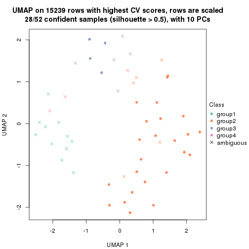
dimension_reduction(res, k = 5, method = "UMAP")
dimension_reduction(res, k = 6, method = "UMAP")
Following heatmap shows how subgroups are split when increasing k:
collect_classes(res)
If matrix rows can be associated to genes, consider to use functional_enrichment(res,
...) to perform function enrichment for the signature genes. See this vignette for more detailed explanations.
The object with results only for a single top-value method and a single partition method can be extracted as:
res = res_list["CV", "skmeans"]
# you can also extract it by
# res = res_list["CV:skmeans"]
A summary of res and all the functions that can be applied to it:
res
#> A 'ConsensusPartition' object with k = 2, 3, 4, 5, 6.
#> On a matrix with 15239 rows and 52 columns.
#> Top rows (1000, 2000, 3000, 4000, 5000) are extracted by 'CV' method.
#> Subgroups are detected by 'skmeans' method.
#> Performed in total 1250 partitions by row resampling.
#> Best k for subgroups seems to be 2.
#>
#> Following methods can be applied to this 'ConsensusPartition' object:
#> [1] "cola_report" "collect_classes" "collect_plots"
#> [4] "collect_stats" "colnames" "compare_signatures"
#> [7] "consensus_heatmap" "dimension_reduction" "functional_enrichment"
#> [10] "get_anno_col" "get_anno" "get_classes"
#> [13] "get_consensus" "get_matrix" "get_membership"
#> [16] "get_param" "get_signatures" "get_stats"
#> [19] "is_best_k" "is_stable_k" "membership_heatmap"
#> [22] "ncol" "nrow" "plot_ecdf"
#> [25] "rownames" "select_partition_number" "show"
#> [28] "suggest_best_k" "test_to_known_factors"
collect_plots() function collects all the plots made from res for all k (number of partitions)
into one single page to provide an easy and fast comparison between different k.
collect_plots(res)
The plots are:
k and the heatmap of
predicted classes for each k.k.k.k.All the plots in panels can be made by individual functions and they are plotted later in this section.
select_partition_number() produces several plots showing different
statistics for choosing “optimized” k. There are following statistics:
k;k, the area increased is defined as \(A_k - A_{k-1}\).The detailed explanations of these statistics can be found in the cola vignette.
Generally speaking, lower PAC score, higher mean silhouette score or higher
concordance corresponds to better partition. Rand index and Jaccard index
measure how similar the current partition is compared to partition with k-1.
If they are too similar, we won't accept k is better than k-1.
select_partition_number(res)
The numeric values for all these statistics can be obtained by get_stats().
get_stats(res)
#> k 1-PAC mean_silhouette concordance area_increased Rand Jaccard
#> 2 2 0.636 0.772 0.903 0.5003 0.497 0.497
#> 3 3 0.564 0.698 0.819 0.3097 0.810 0.635
#> 4 4 0.600 0.644 0.769 0.1481 0.834 0.563
#> 5 5 0.614 0.423 0.687 0.0619 0.895 0.620
#> 6 6 0.640 0.408 0.650 0.0412 0.900 0.589
suggest_best_k() suggests the best \(k\) based on these statistics. The rules are as follows:
suggest_best_k(res)
#> [1] 2
Following shows the table of the partitions (You need to click the show/hide
code output link to see it). The membership matrix (columns with name p*)
is inferred by
clue::cl_consensus()
function with the SE method. Basically the value in the membership matrix
represents the probability to belong to a certain group. The finall class
label for an item is determined with the group with highest probability it
belongs to.
In get_classes() function, the entropy is calculated from the membership
matrix and the silhouette score is calculated from the consensus matrix.
cbind(get_classes(res, k = 2), get_membership(res, k = 2))
#> class entropy silhouette p1 p2
#> SRR633556 2 0.000 0.892 0.000 1.000
#> SRR633557 2 0.722 0.639 0.200 0.800
#> SRR633558 2 0.000 0.892 0.000 1.000
#> SRR633559 2 0.000 0.892 0.000 1.000
#> SRR633560 2 0.000 0.892 0.000 1.000
#> SRR633561 2 0.000 0.892 0.000 1.000
#> SRR633563 1 0.000 0.855 1.000 0.000
#> SRR633564 1 0.000 0.855 1.000 0.000
#> SRR633565 1 0.000 0.855 1.000 0.000
#> SRR633566 1 0.000 0.855 1.000 0.000
#> SRR633567 1 0.000 0.855 1.000 0.000
#> SRR633568 1 0.000 0.855 1.000 0.000
#> SRR633569 1 0.000 0.855 1.000 0.000
#> SRR633570 1 0.000 0.855 1.000 0.000
#> SRR633571 1 0.000 0.855 1.000 0.000
#> SRR633572 2 0.000 0.892 0.000 1.000
#> SRR633573 2 0.000 0.892 0.000 1.000
#> SRR633574 2 0.000 0.892 0.000 1.000
#> SRR633575 2 0.000 0.892 0.000 1.000
#> SRR633576 2 0.000 0.892 0.000 1.000
#> SRR633577 1 0.000 0.855 1.000 0.000
#> SRR633578 1 0.000 0.855 1.000 0.000
#> SRR633579 1 0.929 0.572 0.656 0.344
#> SRR633580 1 0.929 0.572 0.656 0.344
#> SRR633581 1 0.929 0.572 0.656 0.344
#> SRR633582 2 0.952 0.460 0.372 0.628
#> SRR633583 2 0.000 0.892 0.000 1.000
#> SRR633584 2 0.971 0.407 0.400 0.600
#> SRR633585 2 0.000 0.892 0.000 1.000
#> SRR633586 1 0.971 0.484 0.600 0.400
#> SRR633587 2 0.000 0.892 0.000 1.000
#> SRR633588 2 0.971 0.112 0.400 0.600
#> SRR633589 2 0.000 0.892 0.000 1.000
#> SRR633590 2 0.000 0.892 0.000 1.000
#> SRR633591 2 0.000 0.892 0.000 1.000
#> SRR633592 2 0.000 0.892 0.000 1.000
#> SRR633593 2 0.921 0.518 0.336 0.664
#> SRR633594 2 0.921 0.518 0.336 0.664
#> SRR633595 2 0.925 0.511 0.340 0.660
#> SRR633596 2 0.163 0.874 0.024 0.976
#> SRR633597 1 0.000 0.855 1.000 0.000
#> SRR633598 1 0.327 0.813 0.940 0.060
#> SRR633599 2 0.000 0.892 0.000 1.000
#> SRR633600 2 0.000 0.892 0.000 1.000
#> SRR633601 1 0.000 0.855 1.000 0.000
#> SRR633602 1 0.000 0.855 1.000 0.000
#> SRR633603 1 0.971 0.484 0.600 0.400
#> SRR633604 1 0.929 0.572 0.656 0.344
#> SRR633605 2 0.000 0.892 0.000 1.000
#> SRR633606 2 0.000 0.892 0.000 1.000
#> SRR633607 1 0.971 0.484 0.600 0.400
#> SRR633608 1 0.000 0.855 1.000 0.000
cbind(get_classes(res, k = 3), get_membership(res, k = 3))
#> class entropy silhouette p1 p2 p3
#> SRR633556 2 0.5178 0.709 0.000 0.744 0.256
#> SRR633557 3 0.4842 0.674 0.000 0.224 0.776
#> SRR633558 2 0.3686 0.738 0.000 0.860 0.140
#> SRR633559 2 0.5363 0.695 0.000 0.724 0.276
#> SRR633560 2 0.3340 0.735 0.000 0.880 0.120
#> SRR633561 2 0.4399 0.742 0.000 0.812 0.188
#> SRR633563 1 0.0000 0.912 1.000 0.000 0.000
#> SRR633564 1 0.0000 0.912 1.000 0.000 0.000
#> SRR633565 1 0.0000 0.912 1.000 0.000 0.000
#> SRR633566 1 0.0000 0.912 1.000 0.000 0.000
#> SRR633567 1 0.0000 0.912 1.000 0.000 0.000
#> SRR633568 1 0.4702 0.701 0.788 0.000 0.212
#> SRR633569 1 0.0000 0.912 1.000 0.000 0.000
#> SRR633570 1 0.0000 0.912 1.000 0.000 0.000
#> SRR633571 1 0.0000 0.912 1.000 0.000 0.000
#> SRR633572 3 0.6280 -0.328 0.000 0.460 0.540
#> SRR633573 2 0.2878 0.766 0.000 0.904 0.096
#> SRR633574 2 0.2878 0.766 0.000 0.904 0.096
#> SRR633575 2 0.2878 0.766 0.000 0.904 0.096
#> SRR633576 2 0.2448 0.712 0.000 0.924 0.076
#> SRR633577 1 0.0000 0.912 1.000 0.000 0.000
#> SRR633578 1 0.6180 0.346 0.584 0.000 0.416
#> SRR633579 3 0.1643 0.732 0.044 0.000 0.956
#> SRR633580 3 0.1643 0.732 0.044 0.000 0.956
#> SRR633581 3 0.1529 0.732 0.040 0.000 0.960
#> SRR633582 2 0.8573 0.558 0.116 0.556 0.328
#> SRR633583 2 0.5948 0.620 0.000 0.640 0.360
#> SRR633584 2 0.9136 0.457 0.264 0.540 0.196
#> SRR633585 2 0.4605 0.735 0.000 0.796 0.204
#> SRR633586 3 0.2448 0.705 0.000 0.076 0.924
#> SRR633587 2 0.6180 0.551 0.000 0.584 0.416
#> SRR633588 3 0.2448 0.705 0.000 0.076 0.924
#> SRR633589 2 0.5948 0.620 0.000 0.640 0.360
#> SRR633590 2 0.6260 0.504 0.000 0.552 0.448
#> SRR633591 2 0.6260 0.504 0.000 0.552 0.448
#> SRR633592 3 0.2356 0.706 0.000 0.072 0.928
#> SRR633593 2 0.2173 0.747 0.048 0.944 0.008
#> SRR633594 2 0.2173 0.747 0.048 0.944 0.008
#> SRR633595 2 0.2173 0.747 0.048 0.944 0.008
#> SRR633596 2 0.0000 0.750 0.000 1.000 0.000
#> SRR633597 1 0.0000 0.912 1.000 0.000 0.000
#> SRR633598 3 0.7567 0.581 0.048 0.376 0.576
#> SRR633599 2 0.0747 0.749 0.000 0.984 0.016
#> SRR633600 2 0.0747 0.749 0.000 0.984 0.016
#> SRR633601 1 0.6307 0.158 0.512 0.000 0.488
#> SRR633602 1 0.0000 0.912 1.000 0.000 0.000
#> SRR633603 3 0.5948 0.575 0.000 0.360 0.640
#> SRR633604 3 0.6096 0.675 0.040 0.208 0.752
#> SRR633605 2 0.2537 0.710 0.000 0.920 0.080
#> SRR633606 2 0.2537 0.710 0.000 0.920 0.080
#> SRR633607 3 0.5926 0.578 0.000 0.356 0.644
#> SRR633608 1 0.0000 0.912 1.000 0.000 0.000
cbind(get_classes(res, k = 4), get_membership(res, k = 4))
#> class entropy silhouette p1 p2 p3 p4
#> SRR633556 4 0.4248 0.685 0.000 0.220 0.012 0.768
#> SRR633557 3 0.6555 0.529 0.000 0.156 0.632 0.212
#> SRR633558 2 0.7098 0.155 0.000 0.492 0.132 0.376
#> SRR633559 4 0.3972 0.701 0.000 0.204 0.008 0.788
#> SRR633560 2 0.5470 0.651 0.000 0.736 0.116 0.148
#> SRR633561 4 0.5026 0.543 0.000 0.312 0.016 0.672
#> SRR633563 1 0.0000 0.904 1.000 0.000 0.000 0.000
#> SRR633564 1 0.0000 0.904 1.000 0.000 0.000 0.000
#> SRR633565 1 0.0000 0.904 1.000 0.000 0.000 0.000
#> SRR633566 1 0.0000 0.904 1.000 0.000 0.000 0.000
#> SRR633567 1 0.0000 0.904 1.000 0.000 0.000 0.000
#> SRR633568 1 0.4382 0.577 0.704 0.000 0.296 0.000
#> SRR633569 1 0.1209 0.893 0.964 0.000 0.032 0.004
#> SRR633570 1 0.0817 0.897 0.976 0.000 0.024 0.000
#> SRR633571 1 0.0817 0.897 0.976 0.000 0.024 0.000
#> SRR633572 4 0.2522 0.707 0.000 0.016 0.076 0.908
#> SRR633573 2 0.4304 0.554 0.000 0.716 0.000 0.284
#> SRR633574 2 0.4304 0.554 0.000 0.716 0.000 0.284
#> SRR633575 2 0.4304 0.554 0.000 0.716 0.000 0.284
#> SRR633576 2 0.4174 0.685 0.000 0.816 0.140 0.044
#> SRR633577 1 0.0469 0.900 0.988 0.000 0.012 0.000
#> SRR633578 1 0.6214 0.108 0.536 0.000 0.408 0.056
#> SRR633579 3 0.5668 0.633 0.032 0.004 0.636 0.328
#> SRR633580 3 0.5668 0.633 0.032 0.004 0.636 0.328
#> SRR633581 3 0.5668 0.633 0.032 0.004 0.636 0.328
#> SRR633582 4 0.6674 0.587 0.012 0.136 0.200 0.652
#> SRR633583 4 0.5006 0.699 0.000 0.124 0.104 0.772
#> SRR633584 4 0.8735 0.379 0.088 0.216 0.196 0.500
#> SRR633585 4 0.5787 0.605 0.000 0.244 0.076 0.680
#> SRR633586 3 0.4941 0.467 0.000 0.000 0.564 0.436
#> SRR633587 4 0.2670 0.735 0.000 0.072 0.024 0.904
#> SRR633588 3 0.4967 0.438 0.000 0.000 0.548 0.452
#> SRR633589 4 0.2675 0.748 0.000 0.100 0.008 0.892
#> SRR633590 4 0.1576 0.678 0.000 0.004 0.048 0.948
#> SRR633591 4 0.1576 0.678 0.000 0.004 0.048 0.948
#> SRR633592 4 0.3355 0.503 0.000 0.004 0.160 0.836
#> SRR633593 2 0.5217 0.607 0.012 0.728 0.232 0.028
#> SRR633594 2 0.5217 0.607 0.012 0.728 0.232 0.028
#> SRR633595 2 0.5217 0.607 0.012 0.728 0.232 0.028
#> SRR633596 2 0.3570 0.709 0.000 0.860 0.092 0.048
#> SRR633597 1 0.5042 0.699 0.764 0.040 0.184 0.012
#> SRR633598 3 0.4823 0.431 0.012 0.180 0.776 0.032
#> SRR633599 2 0.1938 0.724 0.000 0.936 0.012 0.052
#> SRR633600 2 0.1938 0.724 0.000 0.936 0.012 0.052
#> SRR633601 3 0.4941 0.105 0.436 0.000 0.564 0.000
#> SRR633602 1 0.0469 0.901 0.988 0.000 0.012 0.000
#> SRR633603 3 0.4250 0.529 0.000 0.276 0.724 0.000
#> SRR633604 3 0.6246 0.584 0.008 0.224 0.672 0.096
#> SRR633605 2 0.3355 0.669 0.000 0.836 0.160 0.004
#> SRR633606 2 0.3355 0.669 0.000 0.836 0.160 0.004
#> SRR633607 3 0.5906 0.525 0.000 0.292 0.644 0.064
#> SRR633608 1 0.1510 0.881 0.956 0.000 0.028 0.016
cbind(get_classes(res, k = 5), get_membership(res, k = 5))
#> class entropy silhouette p1 p2 p3 p4 p5
#> SRR633556 2 0.1800 0.56586 0.000 0.932 0.000 0.020 0.048
#> SRR633557 3 0.7411 0.26202 0.000 0.252 0.460 0.048 0.240
#> SRR633558 5 0.5146 0.14786 0.000 0.432 0.020 0.012 0.536
#> SRR633559 2 0.1588 0.58236 0.000 0.948 0.016 0.008 0.028
#> SRR633560 5 0.4380 0.40173 0.000 0.292 0.016 0.004 0.688
#> SRR633561 2 0.2570 0.53620 0.000 0.888 0.000 0.028 0.084
#> SRR633563 1 0.0000 0.81281 1.000 0.000 0.000 0.000 0.000
#> SRR633564 1 0.0000 0.81281 1.000 0.000 0.000 0.000 0.000
#> SRR633565 1 0.0000 0.81281 1.000 0.000 0.000 0.000 0.000
#> SRR633566 1 0.0000 0.81281 1.000 0.000 0.000 0.000 0.000
#> SRR633567 1 0.0162 0.81260 0.996 0.000 0.000 0.004 0.000
#> SRR633568 1 0.6421 0.39716 0.512 0.008 0.328 0.152 0.000
#> SRR633569 1 0.4443 0.70754 0.724 0.008 0.028 0.240 0.000
#> SRR633570 1 0.3236 0.76593 0.828 0.000 0.020 0.152 0.000
#> SRR633571 1 0.3319 0.76264 0.820 0.000 0.020 0.160 0.000
#> SRR633572 2 0.3351 0.57702 0.000 0.828 0.148 0.020 0.004
#> SRR633573 2 0.5461 -0.00368 0.000 0.528 0.000 0.064 0.408
#> SRR633574 2 0.5447 0.01910 0.000 0.536 0.000 0.064 0.400
#> SRR633575 2 0.5461 -0.00298 0.000 0.528 0.000 0.064 0.408
#> SRR633576 5 0.3337 0.52691 0.000 0.096 0.024 0.024 0.856
#> SRR633577 1 0.0727 0.80745 0.980 0.000 0.004 0.012 0.004
#> SRR633578 1 0.6789 -0.06108 0.408 0.004 0.360 0.228 0.000
#> SRR633579 3 0.5215 0.55067 0.020 0.028 0.696 0.240 0.016
#> SRR633580 3 0.4917 0.55971 0.012 0.024 0.712 0.236 0.016
#> SRR633581 3 0.4917 0.55971 0.012 0.024 0.712 0.236 0.016
#> SRR633582 2 0.6201 0.10182 0.004 0.492 0.084 0.408 0.012
#> SRR633583 2 0.5142 0.47537 0.000 0.704 0.096 0.192 0.008
#> SRR633584 4 0.7735 -0.09973 0.032 0.380 0.076 0.428 0.084
#> SRR633585 2 0.4381 0.49766 0.000 0.804 0.084 0.064 0.048
#> SRR633586 3 0.3690 0.45339 0.000 0.200 0.780 0.020 0.000
#> SRR633587 2 0.4484 0.54652 0.000 0.752 0.192 0.044 0.012
#> SRR633588 3 0.3821 0.43337 0.000 0.216 0.764 0.020 0.000
#> SRR633589 2 0.4466 0.57519 0.000 0.780 0.144 0.048 0.028
#> SRR633590 2 0.6102 0.38115 0.000 0.560 0.264 0.176 0.000
#> SRR633591 2 0.6102 0.38115 0.000 0.560 0.264 0.176 0.000
#> SRR633592 2 0.6739 0.05482 0.000 0.400 0.336 0.264 0.000
#> SRR633593 4 0.6026 0.43710 0.000 0.088 0.008 0.468 0.436
#> SRR633594 4 0.6026 0.43710 0.000 0.088 0.008 0.468 0.436
#> SRR633595 4 0.6026 0.43710 0.000 0.088 0.008 0.468 0.436
#> SRR633596 5 0.5882 -0.04349 0.000 0.148 0.000 0.264 0.588
#> SRR633597 1 0.5648 0.42580 0.496 0.008 0.056 0.440 0.000
#> SRR633598 4 0.6298 0.06237 0.000 0.060 0.416 0.484 0.040
#> SRR633599 5 0.3752 0.43702 0.000 0.148 0.000 0.048 0.804
#> SRR633600 5 0.3914 0.43105 0.000 0.164 0.000 0.048 0.788
#> SRR633601 3 0.5289 0.00202 0.400 0.008 0.556 0.036 0.000
#> SRR633602 1 0.1597 0.79285 0.940 0.000 0.048 0.012 0.000
#> SRR633603 3 0.4538 0.16847 0.000 0.008 0.540 0.000 0.452
#> SRR633604 3 0.6274 0.41161 0.004 0.000 0.548 0.172 0.276
#> SRR633605 5 0.0963 0.51935 0.000 0.000 0.036 0.000 0.964
#> SRR633606 5 0.0963 0.51935 0.000 0.000 0.036 0.000 0.964
#> SRR633607 5 0.7264 -0.28727 0.000 0.052 0.388 0.148 0.412
#> SRR633608 1 0.3758 0.71231 0.816 0.000 0.096 0.088 0.000
cbind(get_classes(res, k = 6), get_membership(res, k = 6))
#> class entropy silhouette p1 p2 p3 p4 p5 p6
#> SRR633556 2 0.1854 0.5417 0.000 0.932 0.004 0.016 0.028 0.020
#> SRR633557 6 0.7110 -0.0124 0.000 0.192 0.100 0.176 0.020 0.512
#> SRR633558 6 0.5751 0.2205 0.000 0.416 0.008 0.012 0.092 0.472
#> SRR633559 2 0.1053 0.5524 0.000 0.964 0.004 0.000 0.020 0.012
#> SRR633560 6 0.6018 0.3227 0.000 0.348 0.008 0.000 0.188 0.456
#> SRR633561 2 0.3830 0.4760 0.000 0.816 0.004 0.040 0.084 0.056
#> SRR633563 1 0.0146 0.7407 0.996 0.000 0.000 0.000 0.004 0.000
#> SRR633564 1 0.0146 0.7407 0.996 0.000 0.000 0.000 0.004 0.000
#> SRR633565 1 0.0146 0.7407 0.996 0.000 0.000 0.000 0.004 0.000
#> SRR633566 1 0.0000 0.7398 1.000 0.000 0.000 0.000 0.000 0.000
#> SRR633567 1 0.0508 0.7359 0.984 0.000 0.000 0.012 0.000 0.004
#> SRR633568 4 0.6065 0.0141 0.356 0.000 0.016 0.464 0.000 0.164
#> SRR633569 4 0.3934 0.2418 0.376 0.000 0.000 0.616 0.000 0.008
#> SRR633570 1 0.3945 0.2302 0.612 0.000 0.000 0.380 0.000 0.008
#> SRR633571 1 0.4006 0.2044 0.600 0.000 0.000 0.392 0.004 0.004
#> SRR633572 2 0.4350 0.5430 0.000 0.780 0.088 0.076 0.004 0.052
#> SRR633573 2 0.6552 0.1785 0.000 0.544 0.008 0.060 0.208 0.180
#> SRR633574 2 0.6530 0.1845 0.000 0.548 0.008 0.060 0.204 0.180
#> SRR633575 2 0.6552 0.1785 0.000 0.544 0.008 0.060 0.208 0.180
#> SRR633576 6 0.5518 0.4651 0.008 0.096 0.008 0.028 0.192 0.668
#> SRR633577 1 0.2065 0.7145 0.924 0.004 0.024 0.012 0.032 0.004
#> SRR633578 3 0.4882 0.3002 0.280 0.000 0.644 0.060 0.000 0.016
#> SRR633579 3 0.0653 0.6243 0.012 0.004 0.980 0.000 0.000 0.004
#> SRR633580 3 0.0665 0.6268 0.008 0.004 0.980 0.000 0.000 0.008
#> SRR633581 3 0.0665 0.6268 0.008 0.004 0.980 0.000 0.000 0.008
#> SRR633582 4 0.5730 0.3163 0.000 0.288 0.008 0.580 0.104 0.020
#> SRR633583 2 0.5179 0.0398 0.000 0.512 0.016 0.432 0.020 0.020
#> SRR633584 4 0.6123 0.3543 0.008 0.252 0.012 0.584 0.120 0.024
#> SRR633585 2 0.5907 0.3782 0.000 0.660 0.020 0.072 0.136 0.112
#> SRR633586 3 0.7563 0.2758 0.000 0.184 0.352 0.212 0.000 0.252
#> SRR633587 2 0.4542 0.5113 0.000 0.716 0.176 0.100 0.000 0.008
#> SRR633588 3 0.7616 0.2526 0.000 0.200 0.336 0.212 0.000 0.252
#> SRR633589 2 0.4760 0.4818 0.000 0.712 0.072 0.192 0.008 0.016
#> SRR633590 2 0.5418 0.3885 0.000 0.564 0.316 0.112 0.000 0.008
#> SRR633591 2 0.5378 0.4024 0.000 0.576 0.304 0.112 0.000 0.008
#> SRR633592 2 0.5520 0.1860 0.000 0.452 0.440 0.100 0.000 0.008
#> SRR633593 5 0.0436 0.7766 0.004 0.004 0.000 0.004 0.988 0.000
#> SRR633594 5 0.0696 0.7737 0.004 0.004 0.000 0.008 0.980 0.004
#> SRR633595 5 0.0291 0.7751 0.004 0.000 0.000 0.004 0.992 0.000
#> SRR633596 5 0.3546 0.5677 0.000 0.056 0.000 0.008 0.808 0.128
#> SRR633597 4 0.5265 0.3978 0.276 0.008 0.000 0.624 0.080 0.012
#> SRR633598 5 0.5646 0.3684 0.004 0.000 0.040 0.080 0.604 0.272
#> SRR633599 6 0.6676 0.2915 0.000 0.164 0.008 0.040 0.368 0.420
#> SRR633600 6 0.6966 0.2761 0.000 0.212 0.008 0.048 0.348 0.384
#> SRR633601 1 0.7994 -0.1542 0.320 0.000 0.224 0.172 0.020 0.264
#> SRR633602 1 0.3013 0.6619 0.848 0.000 0.116 0.024 0.008 0.004
#> SRR633603 6 0.4442 0.1520 0.000 0.004 0.132 0.124 0.004 0.736
#> SRR633604 3 0.4396 0.3099 0.004 0.004 0.636 0.024 0.000 0.332
#> SRR633605 6 0.4139 0.4311 0.000 0.016 0.008 0.004 0.284 0.688
#> SRR633606 6 0.4139 0.4311 0.000 0.016 0.008 0.004 0.284 0.688
#> SRR633607 6 0.6303 0.0438 0.000 0.056 0.316 0.080 0.016 0.532
#> SRR633608 1 0.3909 0.5759 0.760 0.000 0.200 0.020 0.012 0.008
Heatmaps for the consensus matrix. It visualizes the probability of two samples to be in a same group.
consensus_heatmap(res, k = 2)
consensus_heatmap(res, k = 3)
consensus_heatmap(res, k = 4)
consensus_heatmap(res, k = 5)
consensus_heatmap(res, k = 6)
Heatmaps for the membership of samples in all partitions to see how consistent they are:
membership_heatmap(res, k = 2)
membership_heatmap(res, k = 3)
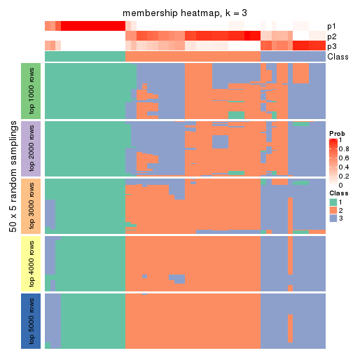
membership_heatmap(res, k = 4)
membership_heatmap(res, k = 5)
membership_heatmap(res, k = 6)
As soon as we have had the classes for columns, we can look for signatures which are significantly different between classes which can be candidate marks for certain classes. Following are the heatmaps for signatures.
Signature heatmaps where rows are scaled:
get_signatures(res, k = 2)
get_signatures(res, k = 3)
get_signatures(res, k = 4)
get_signatures(res, k = 5)
get_signatures(res, k = 6)
Signature heatmaps where rows are not scaled:
get_signatures(res, k = 2, scale_rows = FALSE)
get_signatures(res, k = 3, scale_rows = FALSE)
get_signatures(res, k = 4, scale_rows = FALSE)
get_signatures(res, k = 5, scale_rows = FALSE)
get_signatures(res, k = 6, scale_rows = FALSE)
Compare the overlap of signatures from different k:
compare_signatures(res)
get_signature() returns a data frame invisibly. TO get the list of signatures, the function
call should be assigned to a variable explicitly. In following code, if plot argument is set
to FALSE, no heatmap is plotted while only the differential analysis is performed.
# code only for demonstration
tb = get_signature(res, k = ..., plot = FALSE)
An example of the output of tb is:
#> which_row fdr mean_1 mean_2 scaled_mean_1 scaled_mean_2 km
#> 1 38 0.042760348 8.373488 9.131774 -0.5533452 0.5164555 1
#> 2 40 0.018707592 7.106213 8.469186 -0.6173731 0.5762149 1
#> 3 55 0.019134737 10.221463 11.207825 -0.6159697 0.5749050 1
#> 4 59 0.006059896 5.921854 7.869574 -0.6899429 0.6439467 1
#> 5 60 0.018055526 8.928898 10.211722 -0.6204761 0.5791110 1
#> 6 98 0.009384629 15.714769 14.887706 0.6635654 -0.6193277 2
...
The columns in tb are:
which_row: row indices corresponding to the input matrix.fdr: FDR for the differential test. mean_x: The mean value in group x.scaled_mean_x: The mean value in group x after rows are scaled.km: Row groups if k-means clustering is applied to rows.UMAP plot which shows how samples are separated.
dimension_reduction(res, k = 2, method = "UMAP")
dimension_reduction(res, k = 3, method = "UMAP")
dimension_reduction(res, k = 4, method = "UMAP")
dimension_reduction(res, k = 5, method = "UMAP")
dimension_reduction(res, k = 6, method = "UMAP")
Following heatmap shows how subgroups are split when increasing k:
collect_classes(res)
If matrix rows can be associated to genes, consider to use functional_enrichment(res,
...) to perform function enrichment for the signature genes. See this vignette for more detailed explanations.
The object with results only for a single top-value method and a single partition method can be extracted as:
res = res_list["CV", "pam"]
# you can also extract it by
# res = res_list["CV:pam"]
A summary of res and all the functions that can be applied to it:
res
#> A 'ConsensusPartition' object with k = 2, 3, 4, 5, 6.
#> On a matrix with 15239 rows and 52 columns.
#> Top rows (1000, 2000, 3000, 4000, 5000) are extracted by 'CV' method.
#> Subgroups are detected by 'pam' method.
#> Performed in total 1250 partitions by row resampling.
#> Best k for subgroups seems to be 3.
#>
#> Following methods can be applied to this 'ConsensusPartition' object:
#> [1] "cola_report" "collect_classes" "collect_plots"
#> [4] "collect_stats" "colnames" "compare_signatures"
#> [7] "consensus_heatmap" "dimension_reduction" "functional_enrichment"
#> [10] "get_anno_col" "get_anno" "get_classes"
#> [13] "get_consensus" "get_matrix" "get_membership"
#> [16] "get_param" "get_signatures" "get_stats"
#> [19] "is_best_k" "is_stable_k" "membership_heatmap"
#> [22] "ncol" "nrow" "plot_ecdf"
#> [25] "rownames" "select_partition_number" "show"
#> [28] "suggest_best_k" "test_to_known_factors"
collect_plots() function collects all the plots made from res for all k (number of partitions)
into one single page to provide an easy and fast comparison between different k.
collect_plots(res)
The plots are:
k and the heatmap of
predicted classes for each k.k.k.k.All the plots in panels can be made by individual functions and they are plotted later in this section.
select_partition_number() produces several plots showing different
statistics for choosing “optimized” k. There are following statistics:
k;k, the area increased is defined as \(A_k - A_{k-1}\).The detailed explanations of these statistics can be found in the cola vignette.
Generally speaking, lower PAC score, higher mean silhouette score or higher
concordance corresponds to better partition. Rand index and Jaccard index
measure how similar the current partition is compared to partition with k-1.
If they are too similar, we won't accept k is better than k-1.
select_partition_number(res)
The numeric values for all these statistics can be obtained by get_stats().
get_stats(res)
#> k 1-PAC mean_silhouette concordance area_increased Rand Jaccard
#> 2 2 1.000 0.981 0.993 0.1973 0.792 0.792
#> 3 3 0.926 0.905 0.964 0.8321 0.838 0.796
#> 4 4 0.598 0.765 0.884 0.4453 0.821 0.718
#> 5 5 0.629 0.611 0.835 0.1899 0.833 0.638
#> 6 6 0.683 0.684 0.887 0.0721 0.909 0.747
suggest_best_k() suggests the best \(k\) based on these statistics. The rules are as follows:
suggest_best_k(res)
#> [1] 3
#> attr(,"optional")
#> [1] 2
There is also optional best \(k\) = 2 that is worth to check.
Following shows the table of the partitions (You need to click the show/hide
code output link to see it). The membership matrix (columns with name p*)
is inferred by
clue::cl_consensus()
function with the SE method. Basically the value in the membership matrix
represents the probability to belong to a certain group. The finall class
label for an item is determined with the group with highest probability it
belongs to.
In get_classes() function, the entropy is calculated from the membership
matrix and the silhouette score is calculated from the consensus matrix.
cbind(get_classes(res, k = 2), get_membership(res, k = 2))
#> class entropy silhouette p1 p2
#> SRR633556 2 0.000 1.000 0.000 1.000
#> SRR633557 2 0.000 1.000 0.000 1.000
#> SRR633558 2 0.000 1.000 0.000 1.000
#> SRR633559 2 0.000 1.000 0.000 1.000
#> SRR633560 2 0.000 1.000 0.000 1.000
#> SRR633561 2 0.000 1.000 0.000 1.000
#> SRR633563 1 0.000 0.924 1.000 0.000
#> SRR633564 1 0.000 0.924 1.000 0.000
#> SRR633565 1 0.000 0.924 1.000 0.000
#> SRR633566 1 0.000 0.924 1.000 0.000
#> SRR633567 1 0.000 0.924 1.000 0.000
#> SRR633568 2 0.000 1.000 0.000 1.000
#> SRR633569 2 0.000 1.000 0.000 1.000
#> SRR633570 1 0.955 0.397 0.624 0.376
#> SRR633571 2 0.000 1.000 0.000 1.000
#> SRR633572 2 0.000 1.000 0.000 1.000
#> SRR633573 2 0.000 1.000 0.000 1.000
#> SRR633574 2 0.000 1.000 0.000 1.000
#> SRR633575 2 0.000 1.000 0.000 1.000
#> SRR633576 2 0.000 1.000 0.000 1.000
#> SRR633577 2 0.000 1.000 0.000 1.000
#> SRR633578 2 0.000 1.000 0.000 1.000
#> SRR633579 2 0.000 1.000 0.000 1.000
#> SRR633580 2 0.000 1.000 0.000 1.000
#> SRR633581 2 0.000 1.000 0.000 1.000
#> SRR633582 2 0.000 1.000 0.000 1.000
#> SRR633583 2 0.000 1.000 0.000 1.000
#> SRR633584 2 0.000 1.000 0.000 1.000
#> SRR633585 2 0.000 1.000 0.000 1.000
#> SRR633586 2 0.000 1.000 0.000 1.000
#> SRR633587 2 0.000 1.000 0.000 1.000
#> SRR633588 2 0.000 1.000 0.000 1.000
#> SRR633589 2 0.000 1.000 0.000 1.000
#> SRR633590 2 0.000 1.000 0.000 1.000
#> SRR633591 2 0.000 1.000 0.000 1.000
#> SRR633592 2 0.000 1.000 0.000 1.000
#> SRR633593 2 0.000 1.000 0.000 1.000
#> SRR633594 2 0.000 1.000 0.000 1.000
#> SRR633595 2 0.000 1.000 0.000 1.000
#> SRR633596 2 0.000 1.000 0.000 1.000
#> SRR633597 2 0.000 1.000 0.000 1.000
#> SRR633598 2 0.000 1.000 0.000 1.000
#> SRR633599 2 0.000 1.000 0.000 1.000
#> SRR633600 2 0.000 1.000 0.000 1.000
#> SRR633601 2 0.000 1.000 0.000 1.000
#> SRR633602 2 0.000 1.000 0.000 1.000
#> SRR633603 2 0.000 1.000 0.000 1.000
#> SRR633604 2 0.000 1.000 0.000 1.000
#> SRR633605 2 0.000 1.000 0.000 1.000
#> SRR633606 2 0.000 1.000 0.000 1.000
#> SRR633607 2 0.000 1.000 0.000 1.000
#> SRR633608 2 0.000 1.000 0.000 1.000
cbind(get_classes(res, k = 3), get_membership(res, k = 3))
#> class entropy silhouette p1 p2 p3
#> SRR633556 2 0.000 0.980 0.000 1.000 0.000
#> SRR633557 2 0.000 0.980 0.000 1.000 0.000
#> SRR633558 2 0.000 0.980 0.000 1.000 0.000
#> SRR633559 2 0.000 0.980 0.000 1.000 0.000
#> SRR633560 2 0.000 0.980 0.000 1.000 0.000
#> SRR633561 2 0.000 0.980 0.000 1.000 0.000
#> SRR633563 1 0.000 0.905 1.000 0.000 0.000
#> SRR633564 1 0.000 0.905 1.000 0.000 0.000
#> SRR633565 1 0.000 0.905 1.000 0.000 0.000
#> SRR633566 1 0.000 0.905 1.000 0.000 0.000
#> SRR633567 1 0.593 0.455 0.644 0.000 0.356
#> SRR633568 3 0.000 0.635 0.000 0.000 1.000
#> SRR633569 3 0.254 0.713 0.000 0.080 0.920
#> SRR633570 3 0.254 0.605 0.080 0.000 0.920
#> SRR633571 3 0.254 0.713 0.000 0.080 0.920
#> SRR633572 2 0.000 0.980 0.000 1.000 0.000
#> SRR633573 2 0.000 0.980 0.000 1.000 0.000
#> SRR633574 2 0.000 0.980 0.000 1.000 0.000
#> SRR633575 2 0.000 0.980 0.000 1.000 0.000
#> SRR633576 2 0.000 0.980 0.000 1.000 0.000
#> SRR633577 2 0.000 0.980 0.000 1.000 0.000
#> SRR633578 2 0.304 0.864 0.000 0.896 0.104
#> SRR633579 2 0.000 0.980 0.000 1.000 0.000
#> SRR633580 2 0.000 0.980 0.000 1.000 0.000
#> SRR633581 2 0.000 0.980 0.000 1.000 0.000
#> SRR633582 2 0.000 0.980 0.000 1.000 0.000
#> SRR633583 2 0.000 0.980 0.000 1.000 0.000
#> SRR633584 2 0.536 0.539 0.000 0.724 0.276
#> SRR633585 2 0.000 0.980 0.000 1.000 0.000
#> SRR633586 2 0.254 0.903 0.000 0.920 0.080
#> SRR633587 2 0.000 0.980 0.000 1.000 0.000
#> SRR633588 2 0.254 0.903 0.000 0.920 0.080
#> SRR633589 2 0.000 0.980 0.000 1.000 0.000
#> SRR633590 2 0.000 0.980 0.000 1.000 0.000
#> SRR633591 2 0.000 0.980 0.000 1.000 0.000
#> SRR633592 2 0.000 0.980 0.000 1.000 0.000
#> SRR633593 2 0.000 0.980 0.000 1.000 0.000
#> SRR633594 2 0.000 0.980 0.000 1.000 0.000
#> SRR633595 2 0.000 0.980 0.000 1.000 0.000
#> SRR633596 2 0.000 0.980 0.000 1.000 0.000
#> SRR633597 3 0.608 0.404 0.000 0.388 0.612
#> SRR633598 2 0.254 0.903 0.000 0.920 0.080
#> SRR633599 2 0.000 0.980 0.000 1.000 0.000
#> SRR633600 2 0.000 0.980 0.000 1.000 0.000
#> SRR633601 3 0.412 0.618 0.000 0.168 0.832
#> SRR633602 2 0.000 0.980 0.000 1.000 0.000
#> SRR633603 2 0.254 0.903 0.000 0.920 0.080
#> SRR633604 2 0.000 0.980 0.000 1.000 0.000
#> SRR633605 2 0.000 0.980 0.000 1.000 0.000
#> SRR633606 2 0.000 0.980 0.000 1.000 0.000
#> SRR633607 2 0.000 0.980 0.000 1.000 0.000
#> SRR633608 2 0.000 0.980 0.000 1.000 0.000
cbind(get_classes(res, k = 4), get_membership(res, k = 4))
#> class entropy silhouette p1 p2 p3 p4
#> SRR633556 2 0.0000 0.888 0.000 1.000 0.000 0.000
#> SRR633557 2 0.0000 0.888 0.000 1.000 0.000 0.000
#> SRR633558 2 0.1118 0.854 0.000 0.964 0.036 0.000
#> SRR633559 2 0.0000 0.888 0.000 1.000 0.000 0.000
#> SRR633560 2 0.1118 0.854 0.000 0.964 0.036 0.000
#> SRR633561 2 0.0000 0.888 0.000 1.000 0.000 0.000
#> SRR633563 1 0.0000 0.889 1.000 0.000 0.000 0.000
#> SRR633564 1 0.0000 0.889 1.000 0.000 0.000 0.000
#> SRR633565 1 0.0000 0.889 1.000 0.000 0.000 0.000
#> SRR633566 1 0.0000 0.889 1.000 0.000 0.000 0.000
#> SRR633567 1 0.4898 0.320 0.584 0.000 0.000 0.416
#> SRR633568 4 0.0000 0.740 0.000 0.000 0.000 1.000
#> SRR633569 4 0.0000 0.740 0.000 0.000 0.000 1.000
#> SRR633570 4 0.0000 0.740 0.000 0.000 0.000 1.000
#> SRR633571 4 0.0000 0.740 0.000 0.000 0.000 1.000
#> SRR633572 2 0.0000 0.888 0.000 1.000 0.000 0.000
#> SRR633573 2 0.0000 0.888 0.000 1.000 0.000 0.000
#> SRR633574 2 0.0000 0.888 0.000 1.000 0.000 0.000
#> SRR633575 2 0.0000 0.888 0.000 1.000 0.000 0.000
#> SRR633576 3 0.4790 0.916 0.000 0.380 0.620 0.000
#> SRR633577 2 0.0000 0.888 0.000 1.000 0.000 0.000
#> SRR633578 2 0.1637 0.832 0.000 0.940 0.000 0.060
#> SRR633579 2 0.0000 0.888 0.000 1.000 0.000 0.000
#> SRR633580 2 0.0000 0.888 0.000 1.000 0.000 0.000
#> SRR633581 2 0.0000 0.888 0.000 1.000 0.000 0.000
#> SRR633582 2 0.0000 0.888 0.000 1.000 0.000 0.000
#> SRR633583 2 0.0000 0.888 0.000 1.000 0.000 0.000
#> SRR633584 2 0.4331 0.356 0.000 0.712 0.000 0.288
#> SRR633585 2 0.0000 0.888 0.000 1.000 0.000 0.000
#> SRR633586 2 0.3610 0.628 0.000 0.800 0.200 0.000
#> SRR633587 2 0.0000 0.888 0.000 1.000 0.000 0.000
#> SRR633588 2 0.3610 0.628 0.000 0.800 0.200 0.000
#> SRR633589 2 0.0000 0.888 0.000 1.000 0.000 0.000
#> SRR633590 2 0.0000 0.888 0.000 1.000 0.000 0.000
#> SRR633591 2 0.0000 0.888 0.000 1.000 0.000 0.000
#> SRR633592 2 0.0000 0.888 0.000 1.000 0.000 0.000
#> SRR633593 2 0.3400 0.680 0.000 0.820 0.180 0.000
#> SRR633594 2 0.3400 0.680 0.000 0.820 0.180 0.000
#> SRR633595 2 0.3400 0.680 0.000 0.820 0.180 0.000
#> SRR633596 2 0.0336 0.882 0.000 0.992 0.008 0.000
#> SRR633597 4 0.4522 0.351 0.000 0.320 0.000 0.680
#> SRR633598 2 0.4790 0.367 0.000 0.620 0.380 0.000
#> SRR633599 3 0.4925 0.862 0.000 0.428 0.572 0.000
#> SRR633600 2 0.1302 0.841 0.000 0.956 0.044 0.000
#> SRR633601 4 0.7109 0.415 0.000 0.144 0.336 0.520
#> SRR633602 2 0.4998 -0.696 0.000 0.512 0.488 0.000
#> SRR633603 3 0.3400 0.544 0.000 0.180 0.820 0.000
#> SRR633604 3 0.4790 0.916 0.000 0.380 0.620 0.000
#> SRR633605 3 0.4790 0.916 0.000 0.380 0.620 0.000
#> SRR633606 3 0.4790 0.916 0.000 0.380 0.620 0.000
#> SRR633607 3 0.4888 0.887 0.000 0.412 0.588 0.000
#> SRR633608 2 0.0000 0.888 0.000 1.000 0.000 0.000
cbind(get_classes(res, k = 5), get_membership(res, k = 5))
#> class entropy silhouette p1 p2 p3 p4 p5
#> SRR633556 2 0.4307 0.8318 0.000 0.504 0.000 0.000 0.496
#> SRR633557 2 0.4307 0.8318 0.000 0.504 0.000 0.000 0.496
#> SRR633558 5 0.6375 -0.3747 0.000 0.316 0.188 0.000 0.496
#> SRR633559 2 0.4307 0.8318 0.000 0.504 0.000 0.000 0.496
#> SRR633560 5 0.5757 -0.6562 0.000 0.416 0.088 0.000 0.496
#> SRR633561 2 0.4307 0.8318 0.000 0.504 0.000 0.000 0.496
#> SRR633563 1 0.0000 0.8894 1.000 0.000 0.000 0.000 0.000
#> SRR633564 1 0.0000 0.8894 1.000 0.000 0.000 0.000 0.000
#> SRR633565 1 0.0000 0.8894 1.000 0.000 0.000 0.000 0.000
#> SRR633566 1 0.0000 0.8894 1.000 0.000 0.000 0.000 0.000
#> SRR633567 1 0.4210 0.3186 0.588 0.000 0.000 0.412 0.000
#> SRR633568 4 0.0000 0.7567 0.000 0.000 0.000 1.000 0.000
#> SRR633569 4 0.0000 0.7567 0.000 0.000 0.000 1.000 0.000
#> SRR633570 4 0.0000 0.7567 0.000 0.000 0.000 1.000 0.000
#> SRR633571 4 0.0000 0.7567 0.000 0.000 0.000 1.000 0.000
#> SRR633572 2 0.4307 0.8318 0.000 0.504 0.000 0.000 0.496
#> SRR633573 2 0.4307 0.8318 0.000 0.504 0.000 0.000 0.496
#> SRR633574 2 0.4307 0.8318 0.000 0.504 0.000 0.000 0.496
#> SRR633575 2 0.4307 0.8318 0.000 0.504 0.000 0.000 0.496
#> SRR633576 3 0.1444 0.7942 0.000 0.012 0.948 0.000 0.040
#> SRR633577 2 0.4307 0.8318 0.000 0.504 0.000 0.000 0.496
#> SRR633578 2 0.4841 0.0155 0.000 0.736 0.016 0.064 0.184
#> SRR633579 2 0.4307 0.8318 0.000 0.504 0.000 0.000 0.496
#> SRR633580 2 0.4307 0.8318 0.000 0.504 0.000 0.000 0.496
#> SRR633581 2 0.4307 0.8318 0.000 0.504 0.000 0.000 0.496
#> SRR633582 5 0.4659 -0.8370 0.000 0.492 0.012 0.000 0.496
#> SRR633583 2 0.4307 0.8318 0.000 0.504 0.000 0.000 0.496
#> SRR633584 2 0.7123 0.1300 0.000 0.368 0.012 0.296 0.324
#> SRR633585 2 0.4307 0.8318 0.000 0.504 0.000 0.000 0.496
#> SRR633586 2 0.3774 0.4160 0.000 0.704 0.000 0.000 0.296
#> SRR633587 2 0.4307 0.8318 0.000 0.504 0.000 0.000 0.496
#> SRR633588 2 0.3774 0.4160 0.000 0.704 0.000 0.000 0.296
#> SRR633589 2 0.4307 0.8318 0.000 0.504 0.000 0.000 0.496
#> SRR633590 2 0.4307 0.8318 0.000 0.504 0.000 0.000 0.496
#> SRR633591 2 0.4307 0.8318 0.000 0.504 0.000 0.000 0.496
#> SRR633592 2 0.4307 0.8318 0.000 0.504 0.000 0.000 0.496
#> SRR633593 5 0.0000 0.4624 0.000 0.000 0.000 0.000 1.000
#> SRR633594 5 0.0000 0.4624 0.000 0.000 0.000 0.000 1.000
#> SRR633595 5 0.1270 0.4566 0.000 0.000 0.052 0.000 0.948
#> SRR633596 2 0.6296 0.4736 0.000 0.504 0.172 0.000 0.324
#> SRR633597 4 0.4213 0.4433 0.000 0.308 0.012 0.680 0.000
#> SRR633598 5 0.3109 0.2717 0.000 0.200 0.000 0.000 0.800
#> SRR633599 3 0.3759 0.6675 0.000 0.220 0.764 0.000 0.016
#> SRR633600 2 0.6433 0.3527 0.000 0.504 0.228 0.000 0.268
#> SRR633601 4 0.6359 0.4012 0.000 0.340 0.140 0.512 0.008
#> SRR633602 3 0.4465 0.5369 0.000 0.304 0.672 0.000 0.024
#> SRR633603 3 0.3210 0.6420 0.000 0.212 0.788 0.000 0.000
#> SRR633604 3 0.1386 0.8009 0.000 0.032 0.952 0.000 0.016
#> SRR633605 3 0.0912 0.7933 0.000 0.012 0.972 0.000 0.016
#> SRR633606 3 0.0912 0.7933 0.000 0.012 0.972 0.000 0.016
#> SRR633607 3 0.2920 0.7561 0.000 0.132 0.852 0.000 0.016
#> SRR633608 2 0.4307 0.8318 0.000 0.504 0.000 0.000 0.496
cbind(get_classes(res, k = 6), get_membership(res, k = 6))
#> class entropy silhouette p1 p2 p3 p4 p5 p6
#> SRR633556 2 0.0000 0.8892 0.000 1.000 0.000 0.000 0.000 0.000
#> SRR633557 2 0.0000 0.8892 0.000 1.000 0.000 0.000 0.000 0.000
#> SRR633558 2 0.2793 0.6283 0.000 0.800 0.000 0.000 0.000 0.200
#> SRR633559 2 0.0000 0.8892 0.000 1.000 0.000 0.000 0.000 0.000
#> SRR633560 2 0.1663 0.7992 0.000 0.912 0.000 0.000 0.000 0.088
#> SRR633561 2 0.0000 0.8892 0.000 1.000 0.000 0.000 0.000 0.000
#> SRR633563 1 0.0000 0.8711 1.000 0.000 0.000 0.000 0.000 0.000
#> SRR633564 1 0.0000 0.8711 1.000 0.000 0.000 0.000 0.000 0.000
#> SRR633565 1 0.0000 0.8711 1.000 0.000 0.000 0.000 0.000 0.000
#> SRR633566 1 0.0000 0.8711 1.000 0.000 0.000 0.000 0.000 0.000
#> SRR633567 1 0.3774 0.2983 0.592 0.000 0.000 0.408 0.000 0.000
#> SRR633568 4 0.0000 0.8866 0.000 0.000 0.000 1.000 0.000 0.000
#> SRR633569 4 0.0000 0.8866 0.000 0.000 0.000 1.000 0.000 0.000
#> SRR633570 4 0.0000 0.8866 0.000 0.000 0.000 1.000 0.000 0.000
#> SRR633571 4 0.0000 0.8866 0.000 0.000 0.000 1.000 0.000 0.000
#> SRR633572 2 0.0000 0.8892 0.000 1.000 0.000 0.000 0.000 0.000
#> SRR633573 2 0.0000 0.8892 0.000 1.000 0.000 0.000 0.000 0.000
#> SRR633574 2 0.0000 0.8892 0.000 1.000 0.000 0.000 0.000 0.000
#> SRR633575 2 0.0000 0.8892 0.000 1.000 0.000 0.000 0.000 0.000
#> SRR633576 6 0.0713 0.7177 0.000 0.028 0.000 0.000 0.000 0.972
#> SRR633577 2 0.0000 0.8892 0.000 1.000 0.000 0.000 0.000 0.000
#> SRR633578 3 0.2980 0.0000 0.000 0.180 0.808 0.012 0.000 0.000
#> SRR633579 2 0.0146 0.8866 0.000 0.996 0.004 0.000 0.000 0.000
#> SRR633580 2 0.0146 0.8866 0.000 0.996 0.004 0.000 0.000 0.000
#> SRR633581 2 0.0146 0.8866 0.000 0.996 0.004 0.000 0.000 0.000
#> SRR633582 2 0.2730 0.6477 0.000 0.808 0.192 0.000 0.000 0.000
#> SRR633583 2 0.0000 0.8892 0.000 1.000 0.000 0.000 0.000 0.000
#> SRR633584 2 0.5716 -0.1042 0.000 0.504 0.192 0.304 0.000 0.000
#> SRR633585 2 0.0000 0.8892 0.000 1.000 0.000 0.000 0.000 0.000
#> SRR633586 2 0.3578 0.3834 0.000 0.660 0.000 0.000 0.340 0.000
#> SRR633587 2 0.0000 0.8892 0.000 1.000 0.000 0.000 0.000 0.000
#> SRR633588 2 0.3578 0.3834 0.000 0.660 0.000 0.000 0.340 0.000
#> SRR633589 2 0.0000 0.8892 0.000 1.000 0.000 0.000 0.000 0.000
#> SRR633590 2 0.0000 0.8892 0.000 1.000 0.000 0.000 0.000 0.000
#> SRR633591 2 0.0000 0.8892 0.000 1.000 0.000 0.000 0.000 0.000
#> SRR633592 2 0.0000 0.8892 0.000 1.000 0.000 0.000 0.000 0.000
#> SRR633593 5 0.3717 0.4925 0.000 0.384 0.000 0.000 0.616 0.000
#> SRR633594 5 0.3717 0.4925 0.000 0.384 0.000 0.000 0.616 0.000
#> SRR633595 5 0.4607 0.4660 0.000 0.328 0.000 0.000 0.616 0.056
#> SRR633596 2 0.2631 0.6779 0.000 0.820 0.000 0.000 0.000 0.180
#> SRR633597 4 0.4843 0.4552 0.000 0.144 0.192 0.664 0.000 0.000
#> SRR633598 5 0.1007 0.0956 0.000 0.044 0.000 0.000 0.956 0.000
#> SRR633599 6 0.2941 0.5319 0.000 0.220 0.000 0.000 0.000 0.780
#> SRR633600 2 0.3101 0.5735 0.000 0.756 0.000 0.000 0.000 0.244
#> SRR633601 5 0.7192 -0.3084 0.000 0.136 0.000 0.316 0.396 0.152
#> SRR633602 6 0.3464 0.3439 0.000 0.312 0.000 0.000 0.000 0.688
#> SRR633603 6 0.3578 0.3721 0.000 0.000 0.000 0.000 0.340 0.660
#> SRR633604 6 0.0777 0.7286 0.000 0.024 0.004 0.000 0.000 0.972
#> SRR633605 6 0.0000 0.7215 0.000 0.000 0.000 0.000 0.000 1.000
#> SRR633606 6 0.0000 0.7215 0.000 0.000 0.000 0.000 0.000 1.000
#> SRR633607 6 0.2135 0.6636 0.000 0.128 0.000 0.000 0.000 0.872
#> SRR633608 2 0.0000 0.8892 0.000 1.000 0.000 0.000 0.000 0.000
Heatmaps for the consensus matrix. It visualizes the probability of two samples to be in a same group.
consensus_heatmap(res, k = 2)
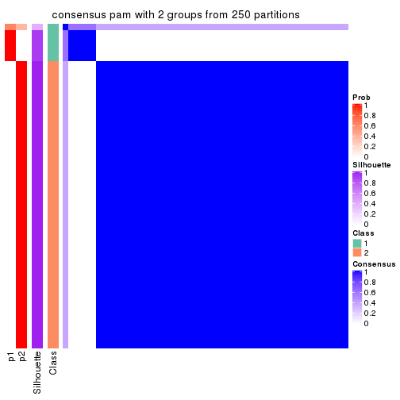
consensus_heatmap(res, k = 3)
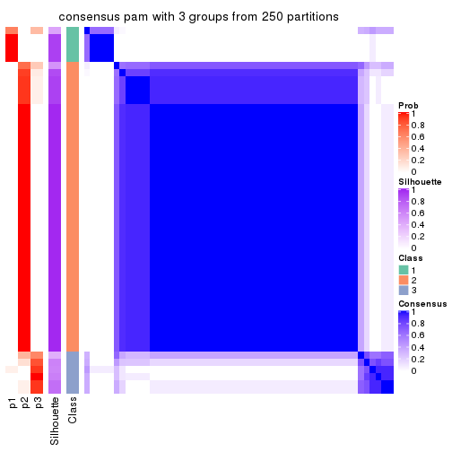
consensus_heatmap(res, k = 4)
consensus_heatmap(res, k = 5)

consensus_heatmap(res, k = 6)
Heatmaps for the membership of samples in all partitions to see how consistent they are:
membership_heatmap(res, k = 2)
membership_heatmap(res, k = 3)
membership_heatmap(res, k = 4)
membership_heatmap(res, k = 5)
membership_heatmap(res, k = 6)
As soon as we have had the classes for columns, we can look for signatures which are significantly different between classes which can be candidate marks for certain classes. Following are the heatmaps for signatures.
Signature heatmaps where rows are scaled:
get_signatures(res, k = 2)
get_signatures(res, k = 3)
get_signatures(res, k = 4)
get_signatures(res, k = 5)
get_signatures(res, k = 6)
Signature heatmaps where rows are not scaled:
get_signatures(res, k = 2, scale_rows = FALSE)
get_signatures(res, k = 3, scale_rows = FALSE)
get_signatures(res, k = 4, scale_rows = FALSE)
get_signatures(res, k = 5, scale_rows = FALSE)

get_signatures(res, k = 6, scale_rows = FALSE)
Compare the overlap of signatures from different k:
compare_signatures(res)
get_signature() returns a data frame invisibly. TO get the list of signatures, the function
call should be assigned to a variable explicitly. In following code, if plot argument is set
to FALSE, no heatmap is plotted while only the differential analysis is performed.
# code only for demonstration
tb = get_signature(res, k = ..., plot = FALSE)
An example of the output of tb is:
#> which_row fdr mean_1 mean_2 scaled_mean_1 scaled_mean_2 km
#> 1 38 0.042760348 8.373488 9.131774 -0.5533452 0.5164555 1
#> 2 40 0.018707592 7.106213 8.469186 -0.6173731 0.5762149 1
#> 3 55 0.019134737 10.221463 11.207825 -0.6159697 0.5749050 1
#> 4 59 0.006059896 5.921854 7.869574 -0.6899429 0.6439467 1
#> 5 60 0.018055526 8.928898 10.211722 -0.6204761 0.5791110 1
#> 6 98 0.009384629 15.714769 14.887706 0.6635654 -0.6193277 2
...
The columns in tb are:
which_row: row indices corresponding to the input matrix.fdr: FDR for the differential test. mean_x: The mean value in group x.scaled_mean_x: The mean value in group x after rows are scaled.km: Row groups if k-means clustering is applied to rows.UMAP plot which shows how samples are separated.
dimension_reduction(res, k = 2, method = "UMAP")
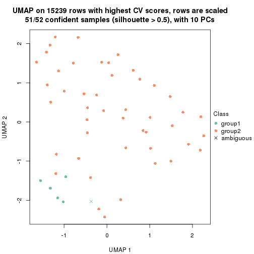
dimension_reduction(res, k = 3, method = "UMAP")
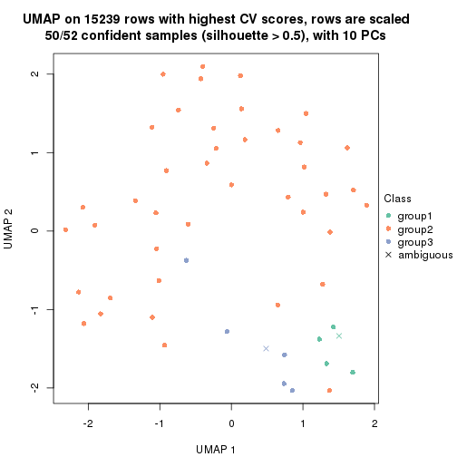
dimension_reduction(res, k = 4, method = "UMAP")
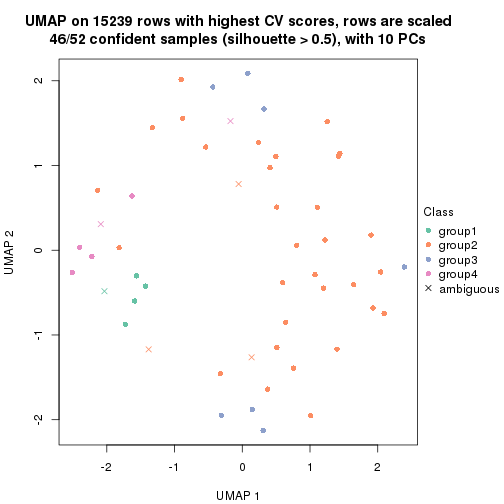
dimension_reduction(res, k = 5, method = "UMAP")
dimension_reduction(res, k = 6, method = "UMAP")
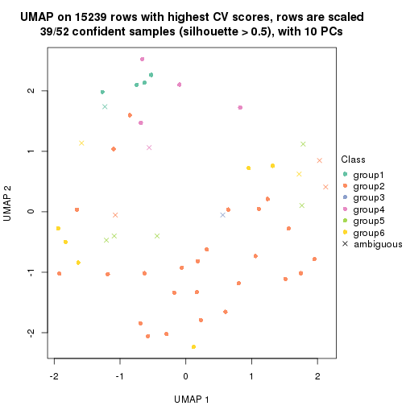
Following heatmap shows how subgroups are split when increasing k:
collect_classes(res)
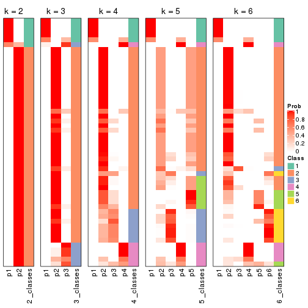
If matrix rows can be associated to genes, consider to use functional_enrichment(res,
...) to perform function enrichment for the signature genes. See this vignette for more detailed explanations.
The object with results only for a single top-value method and a single partition method can be extracted as:
res = res_list["CV", "mclust"]
# you can also extract it by
# res = res_list["CV:mclust"]
A summary of res and all the functions that can be applied to it:
res
#> A 'ConsensusPartition' object with k = 2, 3, 4, 5, 6.
#> On a matrix with 15239 rows and 52 columns.
#> Top rows (1000, 2000, 3000, 4000, 5000) are extracted by 'CV' method.
#> Subgroups are detected by 'mclust' method.
#> Performed in total 1250 partitions by row resampling.
#> Best k for subgroups seems to be 2.
#>
#> Following methods can be applied to this 'ConsensusPartition' object:
#> [1] "cola_report" "collect_classes" "collect_plots"
#> [4] "collect_stats" "colnames" "compare_signatures"
#> [7] "consensus_heatmap" "dimension_reduction" "functional_enrichment"
#> [10] "get_anno_col" "get_anno" "get_classes"
#> [13] "get_consensus" "get_matrix" "get_membership"
#> [16] "get_param" "get_signatures" "get_stats"
#> [19] "is_best_k" "is_stable_k" "membership_heatmap"
#> [22] "ncol" "nrow" "plot_ecdf"
#> [25] "rownames" "select_partition_number" "show"
#> [28] "suggest_best_k" "test_to_known_factors"
collect_plots() function collects all the plots made from res for all k (number of partitions)
into one single page to provide an easy and fast comparison between different k.
collect_plots(res)
The plots are:
k and the heatmap of
predicted classes for each k.k.k.k.All the plots in panels can be made by individual functions and they are plotted later in this section.
select_partition_number() produces several plots showing different
statistics for choosing “optimized” k. There are following statistics:
k;k, the area increased is defined as \(A_k - A_{k-1}\).The detailed explanations of these statistics can be found in the cola vignette.
Generally speaking, lower PAC score, higher mean silhouette score or higher
concordance corresponds to better partition. Rand index and Jaccard index
measure how similar the current partition is compared to partition with k-1.
If they are too similar, we won't accept k is better than k-1.
select_partition_number(res)
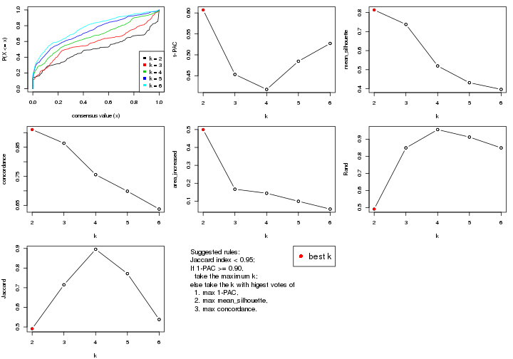
The numeric values for all these statistics can be obtained by get_stats().
get_stats(res)
#> k 1-PAC mean_silhouette concordance area_increased Rand Jaccard
#> 2 2 0.607 0.814 0.910 0.4996 0.491 0.491
#> 3 3 0.453 0.738 0.864 0.1668 0.849 0.715
#> 4 4 0.418 0.520 0.756 0.1442 0.956 0.896
#> 5 5 0.485 0.431 0.699 0.0993 0.913 0.772
#> 6 6 0.527 0.396 0.637 0.0558 0.849 0.538
suggest_best_k() suggests the best \(k\) based on these statistics. The rules are as follows:
suggest_best_k(res)
#> [1] 2
Following shows the table of the partitions (You need to click the show/hide
code output link to see it). The membership matrix (columns with name p*)
is inferred by
clue::cl_consensus()
function with the SE method. Basically the value in the membership matrix
represents the probability to belong to a certain group. The finall class
label for an item is determined with the group with highest probability it
belongs to.
In get_classes() function, the entropy is calculated from the membership
matrix and the silhouette score is calculated from the consensus matrix.
cbind(get_classes(res, k = 2), get_membership(res, k = 2))
#> class entropy silhouette p1 p2
#> SRR633556 2 0.0000 0.876 0.000 1.000
#> SRR633557 1 0.9608 0.434 0.616 0.384
#> SRR633558 2 0.3584 0.854 0.068 0.932
#> SRR633559 2 0.0000 0.876 0.000 1.000
#> SRR633560 2 0.0376 0.875 0.004 0.996
#> SRR633561 2 0.0000 0.876 0.000 1.000
#> SRR633563 1 0.0000 0.912 1.000 0.000
#> SRR633564 1 0.0000 0.912 1.000 0.000
#> SRR633565 1 0.0000 0.912 1.000 0.000
#> SRR633566 1 0.0000 0.912 1.000 0.000
#> SRR633567 1 0.0000 0.912 1.000 0.000
#> SRR633568 1 0.0000 0.912 1.000 0.000
#> SRR633569 1 0.0000 0.912 1.000 0.000
#> SRR633570 1 0.0000 0.912 1.000 0.000
#> SRR633571 1 0.0000 0.912 1.000 0.000
#> SRR633572 2 0.7602 0.648 0.220 0.780
#> SRR633573 2 0.0000 0.876 0.000 1.000
#> SRR633574 2 0.0000 0.876 0.000 1.000
#> SRR633575 2 0.0000 0.876 0.000 1.000
#> SRR633576 2 0.3114 0.860 0.056 0.944
#> SRR633577 1 0.0000 0.912 1.000 0.000
#> SRR633578 1 0.0000 0.912 1.000 0.000
#> SRR633579 1 0.3879 0.886 0.924 0.076
#> SRR633580 1 0.3879 0.886 0.924 0.076
#> SRR633581 1 0.3879 0.886 0.924 0.076
#> SRR633582 2 0.9732 0.495 0.404 0.596
#> SRR633583 2 0.8661 0.688 0.288 0.712
#> SRR633584 1 0.9661 0.142 0.608 0.392
#> SRR633585 2 0.0000 0.876 0.000 1.000
#> SRR633586 1 0.4562 0.872 0.904 0.096
#> SRR633587 2 0.0000 0.876 0.000 1.000
#> SRR633588 1 0.4562 0.872 0.904 0.096
#> SRR633589 2 0.5178 0.831 0.116 0.884
#> SRR633590 2 0.0000 0.876 0.000 1.000
#> SRR633591 2 0.0000 0.876 0.000 1.000
#> SRR633592 1 0.9970 0.223 0.532 0.468
#> SRR633593 2 0.8443 0.708 0.272 0.728
#> SRR633594 2 0.8386 0.712 0.268 0.732
#> SRR633595 2 0.9323 0.593 0.348 0.652
#> SRR633596 2 0.3114 0.854 0.056 0.944
#> SRR633597 1 0.0000 0.912 1.000 0.000
#> SRR633598 1 0.1843 0.902 0.972 0.028
#> SRR633599 2 0.0000 0.876 0.000 1.000
#> SRR633600 2 0.0000 0.876 0.000 1.000
#> SRR633601 1 0.0000 0.912 1.000 0.000
#> SRR633602 1 0.0000 0.912 1.000 0.000
#> SRR633603 1 0.4815 0.865 0.896 0.104
#> SRR633604 1 0.4022 0.883 0.920 0.080
#> SRR633605 2 0.9000 0.602 0.316 0.684
#> SRR633606 2 0.8207 0.695 0.256 0.744
#> SRR633607 1 0.4939 0.861 0.892 0.108
#> SRR633608 1 0.0000 0.912 1.000 0.000
cbind(get_classes(res, k = 3), get_membership(res, k = 3))
#> class entropy silhouette p1 p2 p3
#> SRR633556 2 0.0000 0.8363 0.000 1.000 0.000
#> SRR633557 2 0.7832 0.0236 0.452 0.496 0.052
#> SRR633558 2 0.3690 0.8070 0.016 0.884 0.100
#> SRR633559 2 0.0000 0.8363 0.000 1.000 0.000
#> SRR633560 2 0.0237 0.8370 0.000 0.996 0.004
#> SRR633561 2 0.0000 0.8363 0.000 1.000 0.000
#> SRR633563 1 0.1860 0.8312 0.948 0.000 0.052
#> SRR633564 1 0.1860 0.8312 0.948 0.000 0.052
#> SRR633565 1 0.1860 0.8312 0.948 0.000 0.052
#> SRR633566 1 0.1753 0.8320 0.952 0.000 0.048
#> SRR633567 1 0.0747 0.8364 0.984 0.000 0.016
#> SRR633568 1 0.0747 0.8353 0.984 0.000 0.016
#> SRR633569 1 0.1753 0.8191 0.952 0.000 0.048
#> SRR633570 1 0.0592 0.8361 0.988 0.000 0.012
#> SRR633571 1 0.0592 0.8361 0.988 0.000 0.012
#> SRR633572 2 0.5951 0.6266 0.196 0.764 0.040
#> SRR633573 2 0.1964 0.8268 0.000 0.944 0.056
#> SRR633574 2 0.0892 0.8352 0.000 0.980 0.020
#> SRR633575 2 0.1964 0.8268 0.000 0.944 0.056
#> SRR633576 2 0.3791 0.8133 0.048 0.892 0.060
#> SRR633577 1 0.2689 0.8163 0.932 0.032 0.036
#> SRR633578 1 0.1529 0.8353 0.960 0.000 0.040
#> SRR633579 3 0.5911 0.9231 0.156 0.060 0.784
#> SRR633580 3 0.5852 0.9231 0.152 0.060 0.788
#> SRR633581 3 0.5852 0.9231 0.152 0.060 0.788
#> SRR633582 2 0.6984 0.5274 0.304 0.656 0.040
#> SRR633583 2 0.4779 0.7774 0.124 0.840 0.036
#> SRR633584 1 0.7549 -0.0391 0.524 0.436 0.040
#> SRR633585 2 0.0424 0.8369 0.000 0.992 0.008
#> SRR633586 1 0.6393 0.5772 0.736 0.216 0.048
#> SRR633587 2 0.1529 0.8328 0.000 0.960 0.040
#> SRR633588 1 0.6393 0.5772 0.736 0.216 0.048
#> SRR633589 2 0.2443 0.8337 0.028 0.940 0.032
#> SRR633590 2 0.1529 0.8328 0.000 0.960 0.040
#> SRR633591 2 0.1529 0.8328 0.000 0.960 0.040
#> SRR633592 2 0.7561 0.0585 0.444 0.516 0.040
#> SRR633593 2 0.5174 0.7641 0.128 0.824 0.048
#> SRR633594 2 0.5174 0.7642 0.128 0.824 0.048
#> SRR633595 2 0.6109 0.6907 0.192 0.760 0.048
#> SRR633596 2 0.2313 0.8317 0.024 0.944 0.032
#> SRR633597 1 0.1753 0.8191 0.952 0.000 0.048
#> SRR633598 1 0.4862 0.6704 0.820 0.160 0.020
#> SRR633599 2 0.1529 0.8315 0.000 0.960 0.040
#> SRR633600 2 0.1964 0.8268 0.000 0.944 0.056
#> SRR633601 1 0.1163 0.8351 0.972 0.000 0.028
#> SRR633602 1 0.2031 0.8294 0.952 0.016 0.032
#> SRR633603 1 0.8395 0.0370 0.548 0.096 0.356
#> SRR633604 3 0.6588 0.8825 0.208 0.060 0.732
#> SRR633605 2 0.7202 0.6447 0.124 0.716 0.160
#> SRR633606 2 0.6679 0.6864 0.100 0.748 0.152
#> SRR633607 3 0.8518 0.7614 0.208 0.180 0.612
#> SRR633608 1 0.2297 0.8251 0.944 0.020 0.036
cbind(get_classes(res, k = 4), get_membership(res, k = 4))
#> class entropy silhouette p1 p2 p3 p4
#> SRR633556 2 0.0000 0.7717 0.000 1.000 0.000 0.000
#> SRR633557 2 0.8313 -0.3909 0.156 0.456 0.044 0.344
#> SRR633558 2 0.2796 0.7517 0.008 0.892 0.096 0.004
#> SRR633559 2 0.0000 0.7717 0.000 1.000 0.000 0.000
#> SRR633560 2 0.0804 0.7732 0.000 0.980 0.012 0.008
#> SRR633561 2 0.0000 0.7717 0.000 1.000 0.000 0.000
#> SRR633563 1 0.4222 0.5102 0.728 0.000 0.000 0.272
#> SRR633564 1 0.4222 0.5102 0.728 0.000 0.000 0.272
#> SRR633565 1 0.4222 0.5102 0.728 0.000 0.000 0.272
#> SRR633566 1 0.4193 0.5112 0.732 0.000 0.000 0.268
#> SRR633567 1 0.2266 0.5561 0.912 0.000 0.084 0.004
#> SRR633568 1 0.4933 -0.0263 0.688 0.000 0.016 0.296
#> SRR633569 1 0.1854 0.5585 0.940 0.000 0.012 0.048
#> SRR633570 1 0.0188 0.5702 0.996 0.000 0.004 0.000
#> SRR633571 1 0.0336 0.5707 0.992 0.000 0.008 0.000
#> SRR633572 2 0.1406 0.7681 0.000 0.960 0.016 0.024
#> SRR633573 2 0.4134 0.6747 0.000 0.740 0.000 0.260
#> SRR633574 2 0.3764 0.7019 0.000 0.784 0.000 0.216
#> SRR633575 2 0.4134 0.6747 0.000 0.740 0.000 0.260
#> SRR633576 2 0.6396 0.6616 0.020 0.680 0.092 0.208
#> SRR633577 1 0.5515 0.4204 0.764 0.104 0.112 0.020
#> SRR633578 1 0.6134 0.2930 0.660 0.000 0.236 0.104
#> SRR633579 3 0.0895 0.7903 0.020 0.004 0.976 0.000
#> SRR633580 3 0.0895 0.7903 0.020 0.004 0.976 0.000
#> SRR633581 3 0.0895 0.7903 0.020 0.004 0.976 0.000
#> SRR633582 2 0.7088 0.4384 0.252 0.612 0.024 0.112
#> SRR633583 2 0.5275 0.6768 0.120 0.776 0.016 0.088
#> SRR633584 1 0.7296 -0.1104 0.484 0.396 0.012 0.108
#> SRR633585 2 0.0336 0.7725 0.000 0.992 0.008 0.000
#> SRR633586 4 0.9468 0.7313 0.336 0.132 0.184 0.348
#> SRR633587 2 0.1284 0.7680 0.000 0.964 0.012 0.024
#> SRR633588 4 0.9342 0.7422 0.336 0.216 0.100 0.348
#> SRR633589 2 0.2700 0.7576 0.020 0.916 0.020 0.044
#> SRR633590 2 0.1388 0.7689 0.000 0.960 0.012 0.028
#> SRR633591 2 0.1388 0.7689 0.000 0.960 0.012 0.028
#> SRR633592 2 0.9204 -0.3046 0.192 0.460 0.208 0.140
#> SRR633593 2 0.5227 0.6797 0.112 0.780 0.016 0.092
#> SRR633594 2 0.5283 0.6758 0.116 0.776 0.016 0.092
#> SRR633595 2 0.5442 0.6668 0.128 0.764 0.016 0.092
#> SRR633596 2 0.4265 0.7226 0.068 0.840 0.016 0.076
#> SRR633597 1 0.1938 0.5579 0.936 0.000 0.012 0.052
#> SRR633598 1 0.8584 -0.6681 0.440 0.160 0.060 0.340
#> SRR633599 2 0.3908 0.7054 0.000 0.784 0.004 0.212
#> SRR633600 2 0.4164 0.6738 0.000 0.736 0.000 0.264
#> SRR633601 1 0.7751 -0.3275 0.468 0.004 0.224 0.304
#> SRR633602 1 0.5162 0.4468 0.776 0.100 0.116 0.008
#> SRR633603 3 0.8803 -0.3198 0.172 0.076 0.448 0.304
#> SRR633604 3 0.1356 0.7828 0.032 0.008 0.960 0.000
#> SRR633605 2 0.7274 0.5826 0.016 0.596 0.172 0.216
#> SRR633606 2 0.7162 0.5998 0.016 0.608 0.160 0.216
#> SRR633607 3 0.4981 0.5141 0.032 0.184 0.768 0.016
#> SRR633608 1 0.5321 0.4290 0.764 0.100 0.128 0.008
cbind(get_classes(res, k = 5), get_membership(res, k = 5))
#> class entropy silhouette p1 p2 p3 p4 p5
#> SRR633556 2 0.0613 5.61e-01 0.004 0.984 0.004 0.000 0.008
#> SRR633557 5 0.6578 3.72e-01 0.124 0.408 0.004 0.012 0.452
#> SRR633558 2 0.2805 5.28e-01 0.004 0.864 0.124 0.004 0.004
#> SRR633559 2 0.0324 5.59e-01 0.000 0.992 0.000 0.004 0.004
#> SRR633560 2 0.3063 4.75e-01 0.000 0.864 0.020 0.104 0.012
#> SRR633561 2 0.0290 5.57e-01 0.000 0.992 0.000 0.008 0.000
#> SRR633563 1 0.6031 4.71e-01 0.580 0.000 0.012 0.108 0.300
#> SRR633564 1 0.6031 4.71e-01 0.580 0.000 0.012 0.108 0.300
#> SRR633565 1 0.6014 4.73e-01 0.584 0.000 0.012 0.108 0.296
#> SRR633566 1 0.5380 5.02e-01 0.672 0.000 0.008 0.096 0.224
#> SRR633567 1 0.2574 5.69e-01 0.876 0.000 0.112 0.012 0.000
#> SRR633568 1 0.4101 -5.42e-02 0.664 0.000 0.000 0.004 0.332
#> SRR633569 1 0.2284 5.55e-01 0.896 0.000 0.004 0.096 0.004
#> SRR633570 1 0.0727 5.71e-01 0.980 0.000 0.004 0.004 0.012
#> SRR633571 1 0.1026 5.74e-01 0.968 0.000 0.004 0.004 0.024
#> SRR633572 2 0.1670 5.62e-01 0.000 0.936 0.000 0.012 0.052
#> SRR633573 4 0.4505 9.18e-01 0.000 0.384 0.012 0.604 0.000
#> SRR633574 2 0.3790 1.16e-01 0.000 0.724 0.004 0.272 0.000
#> SRR633575 4 0.4415 9.19e-01 0.000 0.388 0.008 0.604 0.000
#> SRR633576 2 0.6234 4.61e-02 0.000 0.596 0.156 0.232 0.016
#> SRR633577 1 0.4606 5.36e-01 0.768 0.028 0.168 0.008 0.028
#> SRR633578 1 0.6948 2.39e-01 0.572 0.000 0.196 0.068 0.164
#> SRR633579 3 0.0898 8.09e-01 0.020 0.008 0.972 0.000 0.000
#> SRR633580 3 0.0898 8.09e-01 0.020 0.008 0.972 0.000 0.000
#> SRR633581 3 0.0898 8.09e-01 0.020 0.008 0.972 0.000 0.000
#> SRR633582 2 0.8444 2.50e-01 0.216 0.440 0.020 0.148 0.176
#> SRR633583 2 0.5164 5.02e-01 0.104 0.744 0.008 0.020 0.124
#> SRR633584 1 0.8480 -1.96e-01 0.344 0.316 0.008 0.180 0.152
#> SRR633585 2 0.0613 5.59e-01 0.000 0.984 0.004 0.004 0.008
#> SRR633586 5 0.7965 6.70e-01 0.256 0.128 0.156 0.004 0.456
#> SRR633587 2 0.1597 5.63e-01 0.000 0.940 0.000 0.012 0.048
#> SRR633588 5 0.8002 6.74e-01 0.256 0.140 0.148 0.004 0.452
#> SRR633589 2 0.2408 5.64e-01 0.008 0.892 0.000 0.004 0.096
#> SRR633590 2 0.1960 5.60e-01 0.000 0.928 0.004 0.020 0.048
#> SRR633591 2 0.1725 5.59e-01 0.000 0.936 0.000 0.020 0.044
#> SRR633592 2 0.8252 -4.69e-01 0.144 0.384 0.240 0.000 0.232
#> SRR633593 2 0.7582 3.45e-01 0.132 0.496 0.004 0.100 0.268
#> SRR633594 2 0.7568 3.53e-01 0.132 0.504 0.008 0.088 0.268
#> SRR633595 2 0.7615 3.42e-01 0.136 0.492 0.004 0.100 0.268
#> SRR633596 2 0.5553 4.94e-01 0.052 0.740 0.024 0.060 0.124
#> SRR633597 1 0.2284 5.55e-01 0.896 0.000 0.004 0.096 0.004
#> SRR633598 5 0.6635 4.36e-01 0.392 0.068 0.048 0.004 0.488
#> SRR633599 2 0.4346 -8.53e-05 0.000 0.680 0.012 0.304 0.004
#> SRR633600 4 0.4627 8.30e-01 0.000 0.444 0.012 0.544 0.000
#> SRR633601 1 0.7561 -2.34e-01 0.424 0.000 0.184 0.064 0.328
#> SRR633602 1 0.4660 5.36e-01 0.756 0.020 0.184 0.008 0.032
#> SRR633603 3 0.7659 -2.63e-01 0.124 0.080 0.412 0.008 0.376
#> SRR633604 3 0.1924 7.74e-01 0.064 0.008 0.924 0.000 0.004
#> SRR633605 2 0.6685 -7.23e-02 0.000 0.516 0.232 0.240 0.012
#> SRR633606 2 0.6639 -5.82e-02 0.000 0.524 0.216 0.248 0.012
#> SRR633607 3 0.3338 6.82e-01 0.008 0.112 0.852 0.008 0.020
#> SRR633608 1 0.3947 5.30e-01 0.784 0.008 0.188 0.008 0.012
cbind(get_classes(res, k = 6), get_membership(res, k = 6))
#> class entropy silhouette p1 p2 p3 p4 p5 p6
#> SRR633556 2 0.1788 0.5880 0.004 0.928 0.004 0.000 0.012 0.052
#> SRR633557 2 0.7451 -0.1249 0.376 0.392 0.008 0.120 0.048 0.056
#> SRR633558 2 0.3659 0.4904 0.008 0.832 0.096 0.016 0.012 0.036
#> SRR633559 2 0.1477 0.5888 0.004 0.940 0.000 0.000 0.008 0.048
#> SRR633560 2 0.4166 0.3385 0.004 0.732 0.008 0.004 0.028 0.224
#> SRR633561 2 0.1872 0.5831 0.004 0.920 0.004 0.000 0.008 0.064
#> SRR633563 1 0.3823 0.1433 0.564 0.000 0.000 0.436 0.000 0.000
#> SRR633564 1 0.3823 0.1433 0.564 0.000 0.000 0.436 0.000 0.000
#> SRR633565 1 0.3828 0.1385 0.560 0.000 0.000 0.440 0.000 0.000
#> SRR633566 4 0.3930 0.0760 0.364 0.000 0.004 0.628 0.000 0.004
#> SRR633567 4 0.1075 0.5366 0.000 0.000 0.048 0.952 0.000 0.000
#> SRR633568 4 0.5086 0.1461 0.396 0.000 0.008 0.548 0.016 0.032
#> SRR633569 4 0.5162 0.3147 0.000 0.000 0.000 0.504 0.408 0.088
#> SRR633570 4 0.1611 0.5180 0.012 0.000 0.008 0.944 0.012 0.024
#> SRR633571 4 0.2187 0.5159 0.028 0.000 0.008 0.916 0.012 0.036
#> SRR633572 2 0.1340 0.5880 0.000 0.948 0.008 0.000 0.040 0.004
#> SRR633573 6 0.3665 0.6514 0.004 0.296 0.004 0.000 0.000 0.696
#> SRR633574 2 0.3966 -0.2533 0.000 0.552 0.000 0.000 0.004 0.444
#> SRR633575 6 0.3615 0.6544 0.000 0.292 0.008 0.000 0.000 0.700
#> SRR633576 2 0.6741 -0.4053 0.004 0.476 0.124 0.020 0.040 0.336
#> SRR633577 4 0.4239 0.4891 0.016 0.056 0.088 0.804 0.012 0.024
#> SRR633578 4 0.6573 0.3824 0.128 0.000 0.140 0.608 0.040 0.084
#> SRR633579 3 0.0909 0.8421 0.000 0.012 0.968 0.020 0.000 0.000
#> SRR633580 3 0.0891 0.8383 0.000 0.008 0.968 0.024 0.000 0.000
#> SRR633581 3 0.0909 0.8421 0.000 0.012 0.968 0.020 0.000 0.000
#> SRR633582 5 0.6157 0.6256 0.000 0.396 0.008 0.148 0.436 0.012
#> SRR633583 2 0.5745 0.0386 0.016 0.692 0.012 0.096 0.120 0.064
#> SRR633584 5 0.5924 0.6459 0.004 0.268 0.000 0.204 0.520 0.004
#> SRR633585 2 0.2747 0.5825 0.000 0.876 0.008 0.004 0.036 0.076
#> SRR633586 1 0.8740 0.0818 0.400 0.136 0.080 0.236 0.072 0.076
#> SRR633587 2 0.1049 0.5913 0.000 0.960 0.008 0.000 0.032 0.000
#> SRR633588 1 0.8788 0.0854 0.396 0.140 0.080 0.232 0.080 0.072
#> SRR633589 2 0.3686 0.4624 0.020 0.836 0.008 0.016 0.036 0.084
#> SRR633590 2 0.1483 0.5913 0.000 0.944 0.012 0.000 0.036 0.008
#> SRR633591 2 0.1483 0.5913 0.000 0.944 0.012 0.000 0.036 0.008
#> SRR633592 2 0.7808 -0.0469 0.144 0.412 0.288 0.112 0.040 0.004
#> SRR633593 5 0.7196 0.7771 0.028 0.364 0.036 0.100 0.440 0.032
#> SRR633594 5 0.7211 0.7586 0.028 0.384 0.036 0.100 0.420 0.032
#> SRR633595 5 0.7224 0.7787 0.028 0.360 0.036 0.104 0.440 0.032
#> SRR633596 2 0.5963 0.0746 0.012 0.652 0.028 0.048 0.200 0.060
#> SRR633597 4 0.5167 0.3136 0.000 0.000 0.000 0.500 0.412 0.088
#> SRR633598 1 0.7843 -0.0802 0.412 0.036 0.036 0.316 0.148 0.052
#> SRR633599 2 0.4208 -0.2467 0.000 0.536 0.004 0.000 0.008 0.452
#> SRR633600 6 0.3699 0.6319 0.000 0.336 0.004 0.000 0.000 0.660
#> SRR633601 4 0.7147 0.0581 0.388 0.000 0.096 0.400 0.036 0.080
#> SRR633602 4 0.3811 0.5147 0.012 0.016 0.112 0.820 0.016 0.024
#> SRR633603 3 0.7220 0.1450 0.388 0.044 0.404 0.116 0.012 0.036
#> SRR633604 3 0.1434 0.8371 0.000 0.020 0.948 0.024 0.000 0.008
#> SRR633605 6 0.7428 0.4530 0.008 0.336 0.216 0.024 0.044 0.372
#> SRR633606 6 0.7355 0.4503 0.008 0.356 0.192 0.024 0.044 0.376
#> SRR633607 3 0.3941 0.7521 0.004 0.056 0.828 0.028 0.040 0.044
#> SRR633608 4 0.3643 0.5114 0.012 0.004 0.132 0.816 0.016 0.020
Heatmaps for the consensus matrix. It visualizes the probability of two samples to be in a same group.
consensus_heatmap(res, k = 2)
consensus_heatmap(res, k = 3)
consensus_heatmap(res, k = 4)
consensus_heatmap(res, k = 5)
consensus_heatmap(res, k = 6)
Heatmaps for the membership of samples in all partitions to see how consistent they are:
membership_heatmap(res, k = 2)

membership_heatmap(res, k = 3)

membership_heatmap(res, k = 4)
membership_heatmap(res, k = 5)

membership_heatmap(res, k = 6)
As soon as we have had the classes for columns, we can look for signatures which are significantly different between classes which can be candidate marks for certain classes. Following are the heatmaps for signatures.
Signature heatmaps where rows are scaled:
get_signatures(res, k = 2)
get_signatures(res, k = 3)
get_signatures(res, k = 4)
get_signatures(res, k = 5)
get_signatures(res, k = 6)
Signature heatmaps where rows are not scaled:
get_signatures(res, k = 2, scale_rows = FALSE)

get_signatures(res, k = 3, scale_rows = FALSE)
get_signatures(res, k = 4, scale_rows = FALSE)
get_signatures(res, k = 5, scale_rows = FALSE)
get_signatures(res, k = 6, scale_rows = FALSE)
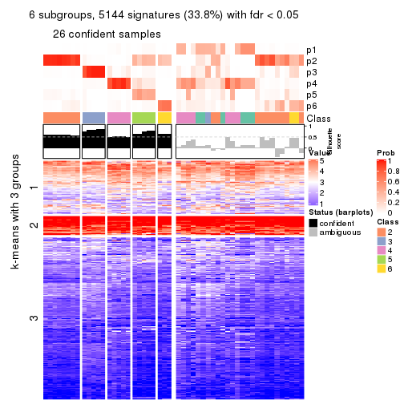
Compare the overlap of signatures from different k:
compare_signatures(res)
get_signature() returns a data frame invisibly. TO get the list of signatures, the function
call should be assigned to a variable explicitly. In following code, if plot argument is set
to FALSE, no heatmap is plotted while only the differential analysis is performed.
# code only for demonstration
tb = get_signature(res, k = ..., plot = FALSE)
An example of the output of tb is:
#> which_row fdr mean_1 mean_2 scaled_mean_1 scaled_mean_2 km
#> 1 38 0.042760348 8.373488 9.131774 -0.5533452 0.5164555 1
#> 2 40 0.018707592 7.106213 8.469186 -0.6173731 0.5762149 1
#> 3 55 0.019134737 10.221463 11.207825 -0.6159697 0.5749050 1
#> 4 59 0.006059896 5.921854 7.869574 -0.6899429 0.6439467 1
#> 5 60 0.018055526 8.928898 10.211722 -0.6204761 0.5791110 1
#> 6 98 0.009384629 15.714769 14.887706 0.6635654 -0.6193277 2
...
The columns in tb are:
which_row: row indices corresponding to the input matrix.fdr: FDR for the differential test. mean_x: The mean value in group x.scaled_mean_x: The mean value in group x after rows are scaled.km: Row groups if k-means clustering is applied to rows.UMAP plot which shows how samples are separated.
dimension_reduction(res, k = 2, method = "UMAP")
dimension_reduction(res, k = 3, method = "UMAP")
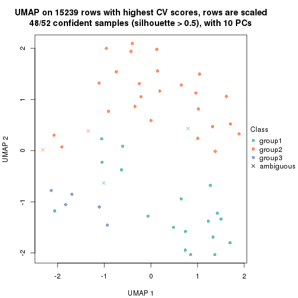
dimension_reduction(res, k = 4, method = "UMAP")
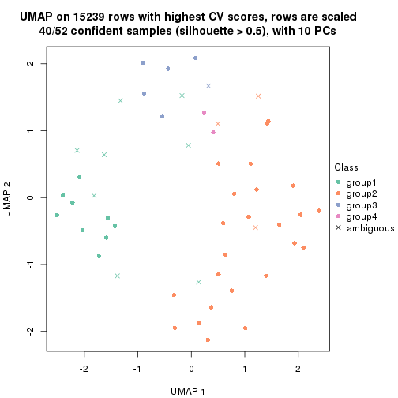
dimension_reduction(res, k = 5, method = "UMAP")
dimension_reduction(res, k = 6, method = "UMAP")
Following heatmap shows how subgroups are split when increasing k:
collect_classes(res)
If matrix rows can be associated to genes, consider to use functional_enrichment(res,
...) to perform function enrichment for the signature genes. See this vignette for more detailed explanations.
The object with results only for a single top-value method and a single partition method can be extracted as:
res = res_list["CV", "NMF"]
# you can also extract it by
# res = res_list["CV:NMF"]
A summary of res and all the functions that can be applied to it:
res
#> A 'ConsensusPartition' object with k = 2, 3, 4, 5, 6.
#> On a matrix with 15239 rows and 52 columns.
#> Top rows (1000, 2000, 3000, 4000, 5000) are extracted by 'CV' method.
#> Subgroups are detected by 'NMF' method.
#> Performed in total 1250 partitions by row resampling.
#> Best k for subgroups seems to be 2.
#>
#> Following methods can be applied to this 'ConsensusPartition' object:
#> [1] "cola_report" "collect_classes" "collect_plots"
#> [4] "collect_stats" "colnames" "compare_signatures"
#> [7] "consensus_heatmap" "dimension_reduction" "functional_enrichment"
#> [10] "get_anno_col" "get_anno" "get_classes"
#> [13] "get_consensus" "get_matrix" "get_membership"
#> [16] "get_param" "get_signatures" "get_stats"
#> [19] "is_best_k" "is_stable_k" "membership_heatmap"
#> [22] "ncol" "nrow" "plot_ecdf"
#> [25] "rownames" "select_partition_number" "show"
#> [28] "suggest_best_k" "test_to_known_factors"
collect_plots() function collects all the plots made from res for all k (number of partitions)
into one single page to provide an easy and fast comparison between different k.
collect_plots(res)
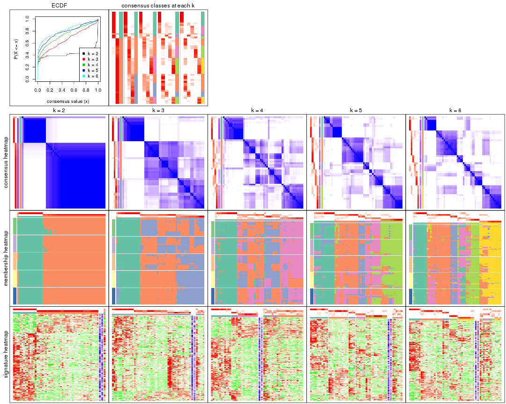
The plots are:
k and the heatmap of
predicted classes for each k.k.k.k.All the plots in panels can be made by individual functions and they are plotted later in this section.
select_partition_number() produces several plots showing different
statistics for choosing “optimized” k. There are following statistics:
k;k, the area increased is defined as \(A_k - A_{k-1}\).The detailed explanations of these statistics can be found in the cola vignette.
Generally speaking, lower PAC score, higher mean silhouette score or higher
concordance corresponds to better partition. Rand index and Jaccard index
measure how similar the current partition is compared to partition with k-1.
If they are too similar, we won't accept k is better than k-1.
select_partition_number(res)
The numeric values for all these statistics can be obtained by get_stats().
get_stats(res)
#> k 1-PAC mean_silhouette concordance area_increased Rand Jaccard
#> 2 2 0.961 0.949 0.979 0.4179 0.581 0.581
#> 3 3 0.535 0.685 0.801 0.5923 0.718 0.527
#> 4 4 0.579 0.481 0.719 0.1262 0.760 0.411
#> 5 5 0.645 0.674 0.772 0.0540 0.873 0.564
#> 6 6 0.712 0.638 0.795 0.0359 0.967 0.843
suggest_best_k() suggests the best \(k\) based on these statistics. The rules are as follows:
suggest_best_k(res)
#> [1] 2
Following shows the table of the partitions (You need to click the show/hide
code output link to see it). The membership matrix (columns with name p*)
is inferred by
clue::cl_consensus()
function with the SE method. Basically the value in the membership matrix
represents the probability to belong to a certain group. The finall class
label for an item is determined with the group with highest probability it
belongs to.
In get_classes() function, the entropy is calculated from the membership
matrix and the silhouette score is calculated from the consensus matrix.
cbind(get_classes(res, k = 2), get_membership(res, k = 2))
#> class entropy silhouette p1 p2
#> SRR633556 2 0.0000 0.9837 0.000 1.000
#> SRR633557 2 0.0000 0.9837 0.000 1.000
#> SRR633558 2 0.0000 0.9837 0.000 1.000
#> SRR633559 2 0.0000 0.9837 0.000 1.000
#> SRR633560 2 0.0000 0.9837 0.000 1.000
#> SRR633561 2 0.0000 0.9837 0.000 1.000
#> SRR633563 1 0.0000 0.9618 1.000 0.000
#> SRR633564 1 0.0000 0.9618 1.000 0.000
#> SRR633565 1 0.0000 0.9618 1.000 0.000
#> SRR633566 1 0.0000 0.9618 1.000 0.000
#> SRR633567 1 0.0000 0.9618 1.000 0.000
#> SRR633568 1 0.0000 0.9618 1.000 0.000
#> SRR633569 1 0.0000 0.9618 1.000 0.000
#> SRR633570 1 0.0000 0.9618 1.000 0.000
#> SRR633571 1 0.0000 0.9618 1.000 0.000
#> SRR633572 2 0.0000 0.9837 0.000 1.000
#> SRR633573 2 0.0000 0.9837 0.000 1.000
#> SRR633574 2 0.0000 0.9837 0.000 1.000
#> SRR633575 2 0.0000 0.9837 0.000 1.000
#> SRR633576 2 0.0000 0.9837 0.000 1.000
#> SRR633577 1 0.0000 0.9618 1.000 0.000
#> SRR633578 1 0.0000 0.9618 1.000 0.000
#> SRR633579 2 0.2043 0.9600 0.032 0.968
#> SRR633580 2 0.0000 0.9837 0.000 1.000
#> SRR633581 2 0.0000 0.9837 0.000 1.000
#> SRR633582 2 0.2236 0.9586 0.036 0.964
#> SRR633583 2 0.0000 0.9837 0.000 1.000
#> SRR633584 2 0.5842 0.8491 0.140 0.860
#> SRR633585 2 0.0000 0.9837 0.000 1.000
#> SRR633586 2 0.0000 0.9837 0.000 1.000
#> SRR633587 2 0.0000 0.9837 0.000 1.000
#> SRR633588 2 0.0000 0.9837 0.000 1.000
#> SRR633589 2 0.0000 0.9837 0.000 1.000
#> SRR633590 2 0.0000 0.9837 0.000 1.000
#> SRR633591 2 0.0000 0.9837 0.000 1.000
#> SRR633592 2 0.0000 0.9837 0.000 1.000
#> SRR633593 2 0.3584 0.9294 0.068 0.932
#> SRR633594 2 0.5629 0.8596 0.132 0.868
#> SRR633595 2 0.4690 0.8971 0.100 0.900
#> SRR633596 2 0.1184 0.9733 0.016 0.984
#> SRR633597 1 0.2043 0.9333 0.968 0.032
#> SRR633598 2 0.2423 0.9550 0.040 0.960
#> SRR633599 2 0.0000 0.9837 0.000 1.000
#> SRR633600 2 0.0000 0.9837 0.000 1.000
#> SRR633601 1 0.9988 0.0223 0.520 0.480
#> SRR633602 1 0.0000 0.9618 1.000 0.000
#> SRR633603 2 0.0000 0.9837 0.000 1.000
#> SRR633604 2 0.0672 0.9785 0.008 0.992
#> SRR633605 2 0.0000 0.9837 0.000 1.000
#> SRR633606 2 0.0000 0.9837 0.000 1.000
#> SRR633607 2 0.0000 0.9837 0.000 1.000
#> SRR633608 1 0.0000 0.9618 1.000 0.000
cbind(get_classes(res, k = 3), get_membership(res, k = 3))
#> class entropy silhouette p1 p2 p3
#> SRR633556 2 0.5291 0.422 0.000 0.732 0.268
#> SRR633557 3 0.6280 0.491 0.000 0.460 0.540
#> SRR633558 2 0.5058 0.667 0.000 0.756 0.244
#> SRR633559 3 0.5882 0.603 0.000 0.348 0.652
#> SRR633560 2 0.4235 0.686 0.000 0.824 0.176
#> SRR633561 2 0.3619 0.677 0.000 0.864 0.136
#> SRR633563 1 0.0000 0.942 1.000 0.000 0.000
#> SRR633564 1 0.0000 0.942 1.000 0.000 0.000
#> SRR633565 1 0.0000 0.942 1.000 0.000 0.000
#> SRR633566 1 0.0000 0.942 1.000 0.000 0.000
#> SRR633567 1 0.0000 0.942 1.000 0.000 0.000
#> SRR633568 1 0.3267 0.843 0.884 0.000 0.116
#> SRR633569 1 0.0892 0.929 0.980 0.020 0.000
#> SRR633570 1 0.0000 0.942 1.000 0.000 0.000
#> SRR633571 1 0.0000 0.942 1.000 0.000 0.000
#> SRR633572 3 0.5327 0.667 0.000 0.272 0.728
#> SRR633573 2 0.5810 0.619 0.000 0.664 0.336
#> SRR633574 2 0.5733 0.625 0.000 0.676 0.324
#> SRR633575 3 0.7896 0.126 0.076 0.324 0.600
#> SRR633576 2 0.5733 0.618 0.000 0.676 0.324
#> SRR633577 1 0.0000 0.942 1.000 0.000 0.000
#> SRR633578 1 0.3038 0.867 0.896 0.000 0.104
#> SRR633579 3 0.0000 0.684 0.000 0.000 1.000
#> SRR633580 3 0.0000 0.684 0.000 0.000 1.000
#> SRR633581 3 0.0000 0.684 0.000 0.000 1.000
#> SRR633582 2 0.4062 0.604 0.000 0.836 0.164
#> SRR633583 2 0.4178 0.595 0.000 0.828 0.172
#> SRR633584 2 0.4062 0.604 0.000 0.836 0.164
#> SRR633585 3 0.6299 0.472 0.000 0.476 0.524
#> SRR633586 3 0.5291 0.663 0.000 0.268 0.732
#> SRR633587 3 0.5810 0.615 0.000 0.336 0.664
#> SRR633588 3 0.5431 0.655 0.000 0.284 0.716
#> SRR633589 2 0.4178 0.595 0.000 0.828 0.172
#> SRR633590 3 0.3619 0.706 0.000 0.136 0.864
#> SRR633591 3 0.4605 0.694 0.000 0.204 0.796
#> SRR633592 3 0.2165 0.703 0.000 0.064 0.936
#> SRR633593 2 0.0592 0.700 0.000 0.988 0.012
#> SRR633594 2 0.0592 0.700 0.000 0.988 0.012
#> SRR633595 2 0.0592 0.700 0.000 0.988 0.012
#> SRR633596 2 0.0592 0.703 0.000 0.988 0.012
#> SRR633597 2 0.6264 0.538 0.168 0.764 0.068
#> SRR633598 2 0.2066 0.674 0.000 0.940 0.060
#> SRR633599 2 0.5431 0.645 0.000 0.716 0.284
#> SRR633600 2 0.5621 0.631 0.000 0.692 0.308
#> SRR633601 1 0.7912 0.202 0.536 0.060 0.404
#> SRR633602 1 0.0000 0.942 1.000 0.000 0.000
#> SRR633603 3 0.4504 0.551 0.000 0.196 0.804
#> SRR633604 3 0.4602 0.581 0.016 0.152 0.832
#> SRR633605 2 0.5678 0.625 0.000 0.684 0.316
#> SRR633606 2 0.5678 0.625 0.000 0.684 0.316
#> SRR633607 3 0.4291 0.563 0.000 0.180 0.820
#> SRR633608 1 0.1031 0.930 0.976 0.000 0.024
cbind(get_classes(res, k = 4), get_membership(res, k = 4))
#> class entropy silhouette p1 p2 p3 p4
#> SRR633556 2 0.4755 0.2109 0.000 0.760 0.200 0.040
#> SRR633557 2 0.7254 0.0373 0.000 0.524 0.176 0.300
#> SRR633558 4 0.3311 0.6381 0.000 0.172 0.000 0.828
#> SRR633559 2 0.5465 -0.2485 0.000 0.588 0.392 0.020
#> SRR633560 4 0.3528 0.5851 0.000 0.192 0.000 0.808
#> SRR633561 2 0.6549 0.2792 0.000 0.556 0.088 0.356
#> SRR633563 1 0.0000 0.8956 1.000 0.000 0.000 0.000
#> SRR633564 1 0.0000 0.8956 1.000 0.000 0.000 0.000
#> SRR633565 1 0.0000 0.8956 1.000 0.000 0.000 0.000
#> SRR633566 1 0.0000 0.8956 1.000 0.000 0.000 0.000
#> SRR633567 1 0.0000 0.8956 1.000 0.000 0.000 0.000
#> SRR633568 1 0.4168 0.8135 0.828 0.092 0.080 0.000
#> SRR633569 1 0.4574 0.7087 0.756 0.220 0.024 0.000
#> SRR633570 1 0.1833 0.8801 0.944 0.032 0.024 0.000
#> SRR633571 1 0.2111 0.8755 0.932 0.044 0.024 0.000
#> SRR633572 2 0.5606 -0.4350 0.000 0.500 0.480 0.020
#> SRR633573 4 0.2578 0.7352 0.000 0.052 0.036 0.912
#> SRR633574 4 0.2385 0.7352 0.000 0.052 0.028 0.920
#> SRR633575 4 0.5892 0.5669 0.004 0.044 0.324 0.628
#> SRR633576 4 0.1489 0.7500 0.000 0.004 0.044 0.952
#> SRR633577 1 0.0000 0.8956 1.000 0.000 0.000 0.000
#> SRR633578 3 0.5748 -0.2287 0.420 0.012 0.556 0.012
#> SRR633579 3 0.1492 0.5036 0.004 0.004 0.956 0.036
#> SRR633580 3 0.1209 0.5038 0.004 0.000 0.964 0.032
#> SRR633581 3 0.1936 0.5147 0.000 0.032 0.940 0.028
#> SRR633582 2 0.4663 0.4766 0.000 0.788 0.064 0.148
#> SRR633583 2 0.2670 0.4004 0.000 0.908 0.052 0.040
#> SRR633584 2 0.5642 0.4607 0.004 0.704 0.064 0.228
#> SRR633585 2 0.7439 -0.0361 0.000 0.508 0.272 0.220
#> SRR633586 3 0.5277 0.4141 0.000 0.460 0.532 0.008
#> SRR633587 2 0.5597 -0.4067 0.000 0.516 0.464 0.020
#> SRR633588 3 0.5409 0.3554 0.000 0.492 0.496 0.012
#> SRR633589 2 0.5352 0.4689 0.000 0.740 0.092 0.168
#> SRR633590 3 0.5427 0.4576 0.000 0.416 0.568 0.016
#> SRR633591 3 0.5493 0.4128 0.000 0.456 0.528 0.016
#> SRR633592 3 0.4836 0.5061 0.000 0.320 0.672 0.008
#> SRR633593 2 0.5660 0.2793 0.004 0.576 0.020 0.400
#> SRR633594 2 0.5660 0.2793 0.004 0.576 0.020 0.400
#> SRR633595 2 0.5670 0.2717 0.004 0.572 0.020 0.404
#> SRR633596 4 0.5268 -0.0452 0.000 0.452 0.008 0.540
#> SRR633597 2 0.6932 0.1911 0.312 0.588 0.024 0.076
#> SRR633598 2 0.5525 0.3372 0.004 0.636 0.024 0.336
#> SRR633599 4 0.0779 0.7444 0.004 0.016 0.000 0.980
#> SRR633600 4 0.0000 0.7504 0.000 0.000 0.000 1.000
#> SRR633601 1 0.9375 0.0267 0.416 0.224 0.236 0.124
#> SRR633602 1 0.1389 0.8769 0.952 0.000 0.048 0.000
#> SRR633603 4 0.5641 0.6079 0.004 0.112 0.152 0.732
#> SRR633604 4 0.4967 0.4355 0.000 0.000 0.452 0.548
#> SRR633605 4 0.0657 0.7522 0.004 0.000 0.012 0.984
#> SRR633606 4 0.0188 0.7501 0.004 0.000 0.000 0.996
#> SRR633607 4 0.4632 0.6061 0.004 0.000 0.308 0.688
#> SRR633608 1 0.2704 0.8229 0.876 0.000 0.124 0.000
cbind(get_classes(res, k = 5), get_membership(res, k = 5))
#> class entropy silhouette p1 p2 p3 p4 p5
#> SRR633556 2 0.1124 0.772 0.000 0.960 0.000 0.036 0.004
#> SRR633557 2 0.5927 0.607 0.000 0.660 0.028 0.152 0.160
#> SRR633558 5 0.4552 0.681 0.000 0.264 0.000 0.040 0.696
#> SRR633559 2 0.0451 0.778 0.000 0.988 0.000 0.008 0.004
#> SRR633560 5 0.5672 0.538 0.000 0.188 0.000 0.180 0.632
#> SRR633561 2 0.4374 0.490 0.000 0.700 0.000 0.028 0.272
#> SRR633563 1 0.0000 0.827 1.000 0.000 0.000 0.000 0.000
#> SRR633564 1 0.0000 0.827 1.000 0.000 0.000 0.000 0.000
#> SRR633565 1 0.0000 0.827 1.000 0.000 0.000 0.000 0.000
#> SRR633566 1 0.0000 0.827 1.000 0.000 0.000 0.000 0.000
#> SRR633567 1 0.0000 0.827 1.000 0.000 0.000 0.000 0.000
#> SRR633568 1 0.6921 0.486 0.504 0.024 0.212 0.260 0.000
#> SRR633569 1 0.5086 0.704 0.700 0.000 0.144 0.156 0.000
#> SRR633570 1 0.4376 0.746 0.764 0.000 0.144 0.092 0.000
#> SRR633571 1 0.4528 0.741 0.752 0.000 0.144 0.104 0.000
#> SRR633572 2 0.0000 0.778 0.000 1.000 0.000 0.000 0.000
#> SRR633573 5 0.3752 0.681 0.000 0.292 0.000 0.000 0.708
#> SRR633574 5 0.3730 0.686 0.000 0.288 0.000 0.000 0.712
#> SRR633575 5 0.4397 0.695 0.004 0.268 0.016 0.004 0.708
#> SRR633576 5 0.0290 0.782 0.000 0.008 0.000 0.000 0.992
#> SRR633577 1 0.0000 0.827 1.000 0.000 0.000 0.000 0.000
#> SRR633578 3 0.3515 0.680 0.136 0.016 0.832 0.012 0.004
#> SRR633579 3 0.2891 0.834 0.000 0.176 0.824 0.000 0.000
#> SRR633580 3 0.2891 0.834 0.000 0.176 0.824 0.000 0.000
#> SRR633581 3 0.4482 0.621 0.000 0.348 0.636 0.016 0.000
#> SRR633582 4 0.5594 0.287 0.000 0.400 0.064 0.532 0.004
#> SRR633583 2 0.3264 0.687 0.000 0.840 0.024 0.132 0.004
#> SRR633584 4 0.5611 0.332 0.000 0.380 0.060 0.552 0.008
#> SRR633585 2 0.6412 0.521 0.000 0.592 0.032 0.244 0.132
#> SRR633586 2 0.4309 0.630 0.000 0.768 0.084 0.148 0.000
#> SRR633587 2 0.0000 0.778 0.000 1.000 0.000 0.000 0.000
#> SRR633588 2 0.3710 0.673 0.000 0.808 0.048 0.144 0.000
#> SRR633589 2 0.3579 0.536 0.000 0.756 0.004 0.240 0.000
#> SRR633590 2 0.0703 0.769 0.000 0.976 0.024 0.000 0.000
#> SRR633591 2 0.0404 0.775 0.000 0.988 0.012 0.000 0.000
#> SRR633592 2 0.3790 0.439 0.000 0.724 0.272 0.004 0.000
#> SRR633593 4 0.4134 0.712 0.000 0.044 0.000 0.760 0.196
#> SRR633594 4 0.4264 0.709 0.008 0.036 0.000 0.760 0.196
#> SRR633595 4 0.4134 0.712 0.000 0.044 0.000 0.760 0.196
#> SRR633596 4 0.3835 0.673 0.000 0.008 0.000 0.732 0.260
#> SRR633597 4 0.5686 0.543 0.144 0.072 0.060 0.716 0.008
#> SRR633598 4 0.4532 0.695 0.000 0.048 0.020 0.764 0.168
#> SRR633599 5 0.0510 0.772 0.000 0.000 0.000 0.016 0.984
#> SRR633600 5 0.0000 0.780 0.000 0.000 0.000 0.000 1.000
#> SRR633601 4 0.7977 0.180 0.096 0.164 0.136 0.548 0.056
#> SRR633602 1 0.4763 0.575 0.712 0.000 0.212 0.076 0.000
#> SRR633603 5 0.3001 0.741 0.000 0.008 0.004 0.144 0.844
#> SRR633604 5 0.4037 0.578 0.004 0.004 0.288 0.000 0.704
#> SRR633605 5 0.0000 0.780 0.000 0.000 0.000 0.000 1.000
#> SRR633606 5 0.0000 0.780 0.000 0.000 0.000 0.000 1.000
#> SRR633607 5 0.2660 0.749 0.000 0.000 0.128 0.008 0.864
#> SRR633608 1 0.3707 0.546 0.716 0.000 0.284 0.000 0.000
cbind(get_classes(res, k = 6), get_membership(res, k = 6))
#> class entropy silhouette p1 p2 p3 p4 p5 p6
#> SRR633556 2 0.1268 0.782 0.000 0.952 0.000 0.036 0.004 0.008
#> SRR633557 2 0.5711 0.544 0.000 0.572 0.020 0.272 0.000 0.136
#> SRR633558 6 0.4610 0.354 0.000 0.444 0.004 0.012 0.012 0.528
#> SRR633559 2 0.0603 0.790 0.000 0.980 0.000 0.016 0.000 0.004
#> SRR633560 6 0.5754 0.424 0.000 0.360 0.004 0.012 0.112 0.512
#> SRR633561 2 0.3120 0.692 0.000 0.840 0.000 0.040 0.008 0.112
#> SRR633563 1 0.0000 0.852 1.000 0.000 0.000 0.000 0.000 0.000
#> SRR633564 1 0.0000 0.852 1.000 0.000 0.000 0.000 0.000 0.000
#> SRR633565 1 0.0000 0.852 1.000 0.000 0.000 0.000 0.000 0.000
#> SRR633566 1 0.0000 0.852 1.000 0.000 0.000 0.000 0.000 0.000
#> SRR633567 1 0.0000 0.852 1.000 0.000 0.000 0.000 0.000 0.000
#> SRR633568 4 0.3088 0.488 0.172 0.000 0.000 0.808 0.020 0.000
#> SRR633569 4 0.4885 0.503 0.372 0.000 0.000 0.560 0.068 0.000
#> SRR633570 4 0.4337 0.419 0.480 0.000 0.000 0.500 0.020 0.000
#> SRR633571 4 0.4328 0.453 0.460 0.000 0.000 0.520 0.020 0.000
#> SRR633572 2 0.1628 0.791 0.000 0.940 0.012 0.036 0.004 0.008
#> SRR633573 6 0.4896 0.496 0.000 0.372 0.004 0.048 0.004 0.572
#> SRR633574 6 0.4749 0.546 0.000 0.340 0.004 0.044 0.004 0.608
#> SRR633575 6 0.5165 0.522 0.004 0.344 0.008 0.056 0.004 0.584
#> SRR633576 6 0.2086 0.743 0.008 0.008 0.000 0.036 0.028 0.920
#> SRR633577 1 0.0405 0.845 0.988 0.000 0.008 0.004 0.000 0.000
#> SRR633578 3 0.2324 0.750 0.008 0.000 0.896 0.080 0.008 0.008
#> SRR633579 3 0.2076 0.858 0.000 0.060 0.912 0.016 0.000 0.012
#> SRR633580 3 0.1769 0.857 0.000 0.060 0.924 0.004 0.000 0.012
#> SRR633581 3 0.4601 0.722 0.000 0.164 0.732 0.072 0.000 0.032
#> SRR633582 5 0.6094 0.278 0.000 0.356 0.000 0.280 0.364 0.000
#> SRR633583 2 0.1552 0.778 0.000 0.940 0.000 0.036 0.020 0.004
#> SRR633584 5 0.6021 0.337 0.000 0.312 0.000 0.264 0.424 0.000
#> SRR633585 2 0.6865 0.446 0.000 0.492 0.028 0.308 0.068 0.104
#> SRR633586 2 0.5449 0.510 0.000 0.572 0.080 0.324 0.000 0.024
#> SRR633587 2 0.0405 0.790 0.000 0.988 0.008 0.004 0.000 0.000
#> SRR633588 2 0.4728 0.620 0.000 0.688 0.056 0.232 0.000 0.024
#> SRR633589 2 0.1642 0.777 0.000 0.936 0.004 0.032 0.028 0.000
#> SRR633590 2 0.2068 0.766 0.000 0.904 0.080 0.008 0.000 0.008
#> SRR633591 2 0.1333 0.784 0.000 0.944 0.048 0.008 0.000 0.000
#> SRR633592 2 0.3959 0.594 0.000 0.724 0.244 0.020 0.000 0.012
#> SRR633593 5 0.0725 0.699 0.000 0.012 0.000 0.000 0.976 0.012
#> SRR633594 5 0.0725 0.699 0.000 0.012 0.000 0.000 0.976 0.012
#> SRR633595 5 0.0725 0.699 0.000 0.012 0.000 0.000 0.976 0.012
#> SRR633596 5 0.2265 0.656 0.000 0.008 0.000 0.024 0.900 0.068
#> SRR633597 5 0.4953 0.438 0.016 0.060 0.000 0.296 0.628 0.000
#> SRR633598 5 0.2058 0.665 0.000 0.012 0.000 0.048 0.916 0.024
#> SRR633599 6 0.1765 0.745 0.000 0.000 0.000 0.024 0.052 0.924
#> SRR633600 6 0.1391 0.749 0.000 0.000 0.000 0.016 0.040 0.944
#> SRR633601 4 0.6428 -0.187 0.024 0.008 0.052 0.448 0.420 0.048
#> SRR633602 1 0.5639 0.291 0.552 0.000 0.304 0.012 0.132 0.000
#> SRR633603 6 0.1410 0.737 0.000 0.000 0.008 0.044 0.004 0.944
#> SRR633604 6 0.2664 0.666 0.000 0.000 0.136 0.016 0.000 0.848
#> SRR633605 6 0.1340 0.750 0.000 0.000 0.004 0.008 0.040 0.948
#> SRR633606 6 0.1410 0.750 0.000 0.000 0.004 0.008 0.044 0.944
#> SRR633607 6 0.1173 0.746 0.000 0.000 0.016 0.016 0.008 0.960
#> SRR633608 1 0.3705 0.580 0.740 0.000 0.236 0.020 0.000 0.004
Heatmaps for the consensus matrix. It visualizes the probability of two samples to be in a same group.
consensus_heatmap(res, k = 2)
consensus_heatmap(res, k = 3)
consensus_heatmap(res, k = 4)
consensus_heatmap(res, k = 5)
consensus_heatmap(res, k = 6)

Heatmaps for the membership of samples in all partitions to see how consistent they are:
membership_heatmap(res, k = 2)
membership_heatmap(res, k = 3)
membership_heatmap(res, k = 4)
membership_heatmap(res, k = 5)
membership_heatmap(res, k = 6)

As soon as we have had the classes for columns, we can look for signatures which are significantly different between classes which can be candidate marks for certain classes. Following are the heatmaps for signatures.
Signature heatmaps where rows are scaled:
get_signatures(res, k = 2)
get_signatures(res, k = 3)

get_signatures(res, k = 4)
get_signatures(res, k = 5)
get_signatures(res, k = 6)
Signature heatmaps where rows are not scaled:
get_signatures(res, k = 2, scale_rows = FALSE)
get_signatures(res, k = 3, scale_rows = FALSE)
get_signatures(res, k = 4, scale_rows = FALSE)
get_signatures(res, k = 5, scale_rows = FALSE)
get_signatures(res, k = 6, scale_rows = FALSE)
Compare the overlap of signatures from different k:
compare_signatures(res)
get_signature() returns a data frame invisibly. TO get the list of signatures, the function
call should be assigned to a variable explicitly. In following code, if plot argument is set
to FALSE, no heatmap is plotted while only the differential analysis is performed.
# code only for demonstration
tb = get_signature(res, k = ..., plot = FALSE)
An example of the output of tb is:
#> which_row fdr mean_1 mean_2 scaled_mean_1 scaled_mean_2 km
#> 1 38 0.042760348 8.373488 9.131774 -0.5533452 0.5164555 1
#> 2 40 0.018707592 7.106213 8.469186 -0.6173731 0.5762149 1
#> 3 55 0.019134737 10.221463 11.207825 -0.6159697 0.5749050 1
#> 4 59 0.006059896 5.921854 7.869574 -0.6899429 0.6439467 1
#> 5 60 0.018055526 8.928898 10.211722 -0.6204761 0.5791110 1
#> 6 98 0.009384629 15.714769 14.887706 0.6635654 -0.6193277 2
...
The columns in tb are:
which_row: row indices corresponding to the input matrix.fdr: FDR for the differential test. mean_x: The mean value in group x.scaled_mean_x: The mean value in group x after rows are scaled.km: Row groups if k-means clustering is applied to rows.UMAP plot which shows how samples are separated.
dimension_reduction(res, k = 2, method = "UMAP")
dimension_reduction(res, k = 3, method = "UMAP")

dimension_reduction(res, k = 4, method = "UMAP")
dimension_reduction(res, k = 5, method = "UMAP")
dimension_reduction(res, k = 6, method = "UMAP")
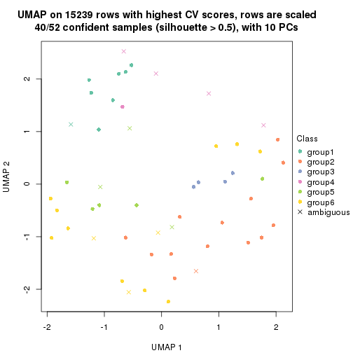
Following heatmap shows how subgroups are split when increasing k:
collect_classes(res)
If matrix rows can be associated to genes, consider to use functional_enrichment(res,
...) to perform function enrichment for the signature genes. See this vignette for more detailed explanations.
The object with results only for a single top-value method and a single partition method can be extracted as:
res = res_list["MAD", "hclust"]
# you can also extract it by
# res = res_list["MAD:hclust"]
A summary of res and all the functions that can be applied to it:
res
#> A 'ConsensusPartition' object with k = 2, 3, 4, 5, 6.
#> On a matrix with 15239 rows and 52 columns.
#> Top rows (1000, 2000, 3000, 4000, 5000) are extracted by 'MAD' method.
#> Subgroups are detected by 'hclust' method.
#> Performed in total 1250 partitions by row resampling.
#> Best k for subgroups seems to be 5.
#>
#> Following methods can be applied to this 'ConsensusPartition' object:
#> [1] "cola_report" "collect_classes" "collect_plots"
#> [4] "collect_stats" "colnames" "compare_signatures"
#> [7] "consensus_heatmap" "dimension_reduction" "functional_enrichment"
#> [10] "get_anno_col" "get_anno" "get_classes"
#> [13] "get_consensus" "get_matrix" "get_membership"
#> [16] "get_param" "get_signatures" "get_stats"
#> [19] "is_best_k" "is_stable_k" "membership_heatmap"
#> [22] "ncol" "nrow" "plot_ecdf"
#> [25] "rownames" "select_partition_number" "show"
#> [28] "suggest_best_k" "test_to_known_factors"
collect_plots() function collects all the plots made from res for all k (number of partitions)
into one single page to provide an easy and fast comparison between different k.
collect_plots(res)
The plots are:
k and the heatmap of
predicted classes for each k.k.k.k.All the plots in panels can be made by individual functions and they are plotted later in this section.
select_partition_number() produces several plots showing different
statistics for choosing “optimized” k. There are following statistics:
k;k, the area increased is defined as \(A_k - A_{k-1}\).The detailed explanations of these statistics can be found in the cola vignette.
Generally speaking, lower PAC score, higher mean silhouette score or higher
concordance corresponds to better partition. Rand index and Jaccard index
measure how similar the current partition is compared to partition with k-1.
If they are too similar, we won't accept k is better than k-1.
select_partition_number(res)
The numeric values for all these statistics can be obtained by get_stats().
get_stats(res)
#> k 1-PAC mean_silhouette concordance area_increased Rand Jaccard
#> 2 2 0.118 0.456 0.761 0.3118 0.855 0.855
#> 3 3 0.171 0.235 0.650 0.7186 0.683 0.641
#> 4 4 0.248 0.544 0.661 0.2013 0.612 0.410
#> 5 5 0.391 0.612 0.727 0.1142 0.861 0.639
#> 6 6 0.531 0.455 0.683 0.0744 0.913 0.714
suggest_best_k() suggests the best \(k\) based on these statistics. The rules are as follows:
suggest_best_k(res)
#> [1] 5
Following shows the table of the partitions (You need to click the show/hide
code output link to see it). The membership matrix (columns with name p*)
is inferred by
clue::cl_consensus()
function with the SE method. Basically the value in the membership matrix
represents the probability to belong to a certain group. The finall class
label for an item is determined with the group with highest probability it
belongs to.
In get_classes() function, the entropy is calculated from the membership
matrix and the silhouette score is calculated from the consensus matrix.
cbind(get_classes(res, k = 2), get_membership(res, k = 2))
#> class entropy silhouette p1 p2
#> SRR633556 2 0.0938 0.673 0.012 0.988
#> SRR633557 2 0.9044 0.087 0.320 0.680
#> SRR633558 2 0.1414 0.673 0.020 0.980
#> SRR633559 2 0.0938 0.673 0.012 0.988
#> SRR633560 2 0.0938 0.673 0.012 0.988
#> SRR633561 2 0.4562 0.663 0.096 0.904
#> SRR633563 2 0.8713 0.489 0.292 0.708
#> SRR633564 2 0.8713 0.489 0.292 0.708
#> SRR633565 2 0.6973 0.607 0.188 0.812
#> SRR633566 2 0.8713 0.489 0.292 0.708
#> SRR633567 2 0.6973 0.605 0.188 0.812
#> SRR633568 2 0.8081 0.575 0.248 0.752
#> SRR633569 2 0.8081 0.575 0.248 0.752
#> SRR633570 2 0.8081 0.575 0.248 0.752
#> SRR633571 2 0.8081 0.575 0.248 0.752
#> SRR633572 2 0.4562 0.649 0.096 0.904
#> SRR633573 2 0.4562 0.663 0.096 0.904
#> SRR633574 2 0.4562 0.663 0.096 0.904
#> SRR633575 2 0.4562 0.663 0.096 0.904
#> SRR633576 2 0.5408 0.657 0.124 0.876
#> SRR633577 2 0.6973 0.585 0.188 0.812
#> SRR633578 2 0.9970 -0.506 0.468 0.532
#> SRR633579 2 0.9866 -0.325 0.432 0.568
#> SRR633580 2 0.9866 -0.325 0.432 0.568
#> SRR633581 2 0.9866 -0.325 0.432 0.568
#> SRR633582 2 0.4939 0.644 0.108 0.892
#> SRR633583 2 0.3274 0.668 0.060 0.940
#> SRR633584 2 0.3733 0.650 0.072 0.928
#> SRR633585 2 0.4562 0.663 0.096 0.904
#> SRR633586 1 0.9686 0.811 0.604 0.396
#> SRR633587 2 0.4562 0.627 0.096 0.904
#> SRR633588 1 0.9775 0.803 0.588 0.412
#> SRR633589 2 0.4298 0.633 0.088 0.912
#> SRR633590 2 0.9850 -0.331 0.428 0.572
#> SRR633591 2 0.9850 -0.331 0.428 0.572
#> SRR633592 2 0.9850 -0.331 0.428 0.572
#> SRR633593 2 0.3431 0.669 0.064 0.936
#> SRR633594 2 0.5178 0.667 0.116 0.884
#> SRR633595 2 0.3431 0.669 0.064 0.936
#> SRR633596 2 0.4562 0.654 0.096 0.904
#> SRR633597 2 0.4431 0.660 0.092 0.908
#> SRR633598 2 0.5408 0.666 0.124 0.876
#> SRR633599 2 0.4298 0.641 0.088 0.912
#> SRR633600 2 0.4298 0.641 0.088 0.912
#> SRR633601 1 0.8763 0.662 0.704 0.296
#> SRR633602 2 0.6973 0.605 0.188 0.812
#> SRR633603 1 0.9944 0.690 0.544 0.456
#> SRR633604 2 0.9635 -0.148 0.388 0.612
#> SRR633605 2 0.7376 0.434 0.208 0.792
#> SRR633606 2 0.7376 0.434 0.208 0.792
#> SRR633607 2 0.9661 -0.135 0.392 0.608
#> SRR633608 2 0.7528 0.579 0.216 0.784
cbind(get_classes(res, k = 3), get_membership(res, k = 3))
#> class entropy silhouette p1 p2 p3
#> SRR633556 2 0.795 0.2498 0.308 0.608 0.084
#> SRR633557 2 0.719 0.0990 0.056 0.664 0.280
#> SRR633558 2 0.764 0.3549 0.248 0.660 0.092
#> SRR633559 2 0.795 0.2498 0.308 0.608 0.084
#> SRR633560 2 0.795 0.2498 0.308 0.608 0.084
#> SRR633561 2 0.127 0.4251 0.024 0.972 0.004
#> SRR633563 1 0.666 0.6941 0.748 0.156 0.096
#> SRR633564 1 0.666 0.6941 0.748 0.156 0.096
#> SRR633565 1 0.501 0.6873 0.840 0.076 0.084
#> SRR633566 1 0.666 0.6941 0.748 0.156 0.096
#> SRR633567 1 0.517 0.6873 0.832 0.076 0.092
#> SRR633568 2 0.699 0.2998 0.164 0.728 0.108
#> SRR633569 2 0.699 0.2998 0.164 0.728 0.108
#> SRR633570 2 0.699 0.2998 0.164 0.728 0.108
#> SRR633571 2 0.699 0.2998 0.164 0.728 0.108
#> SRR633572 2 0.693 0.4537 0.176 0.728 0.096
#> SRR633573 2 0.127 0.4251 0.024 0.972 0.004
#> SRR633574 2 0.127 0.4251 0.024 0.972 0.004
#> SRR633575 2 0.127 0.4251 0.024 0.972 0.004
#> SRR633576 2 0.231 0.4078 0.024 0.944 0.032
#> SRR633577 1 0.450 0.6798 0.804 0.196 0.000
#> SRR633578 2 0.775 -0.4088 0.048 0.496 0.456
#> SRR633579 2 0.660 -0.2661 0.012 0.604 0.384
#> SRR633580 2 0.660 -0.2661 0.012 0.604 0.384
#> SRR633581 2 0.660 -0.2661 0.012 0.604 0.384
#> SRR633582 2 0.720 0.4615 0.180 0.712 0.108
#> SRR633583 2 0.624 0.4509 0.180 0.760 0.060
#> SRR633584 2 0.916 0.1450 0.352 0.492 0.156
#> SRR633585 2 0.127 0.4251 0.024 0.972 0.004
#> SRR633586 3 0.629 0.4909 0.000 0.464 0.536
#> SRR633587 2 0.903 0.2852 0.300 0.536 0.164
#> SRR633588 3 0.630 0.4637 0.000 0.480 0.520
#> SRR633589 2 0.903 0.2764 0.308 0.532 0.160
#> SRR633590 2 0.595 -0.2240 0.000 0.640 0.360
#> SRR633591 2 0.595 -0.2240 0.000 0.640 0.360
#> SRR633592 2 0.595 -0.2240 0.000 0.640 0.360
#> SRR633593 2 0.861 -0.0547 0.416 0.484 0.100
#> SRR633594 2 0.610 0.4130 0.228 0.740 0.032
#> SRR633595 2 0.861 -0.0547 0.416 0.484 0.100
#> SRR633596 1 0.937 -0.0351 0.420 0.412 0.168
#> SRR633597 1 0.858 0.0490 0.460 0.444 0.096
#> SRR633598 2 0.632 0.4171 0.228 0.732 0.040
#> SRR633599 2 0.929 0.1835 0.344 0.484 0.172
#> SRR633600 2 0.929 0.1835 0.344 0.484 0.172
#> SRR633601 3 0.447 0.1529 0.176 0.004 0.820
#> SRR633602 1 0.517 0.6873 0.832 0.076 0.092
#> SRR633603 2 0.629 -0.5441 0.000 0.536 0.464
#> SRR633604 2 0.586 -0.1349 0.000 0.656 0.344
#> SRR633605 2 0.993 0.1854 0.324 0.388 0.288
#> SRR633606 2 0.993 0.1854 0.324 0.388 0.288
#> SRR633607 2 0.565 -0.1363 0.000 0.688 0.312
#> SRR633608 1 0.574 0.5179 0.732 0.256 0.012
cbind(get_classes(res, k = 4), get_membership(res, k = 4))
#> class entropy silhouette p1 p2 p3 p4
#> SRR633556 2 0.139 0.62906 0.000 0.952 0.048 0.000
#> SRR633557 3 0.786 0.27157 0.004 0.332 0.432 0.232
#> SRR633558 2 0.286 0.60749 0.000 0.880 0.112 0.008
#> SRR633559 2 0.139 0.62906 0.000 0.952 0.048 0.000
#> SRR633560 2 0.139 0.62906 0.000 0.952 0.048 0.000
#> SRR633561 2 0.791 -0.03835 0.016 0.424 0.392 0.168
#> SRR633563 1 0.663 0.73335 0.624 0.160 0.000 0.216
#> SRR633564 1 0.663 0.73335 0.624 0.160 0.000 0.216
#> SRR633565 1 0.556 0.77801 0.684 0.260 0.056 0.000
#> SRR633566 1 0.663 0.73335 0.624 0.160 0.000 0.216
#> SRR633567 1 0.566 0.77670 0.676 0.264 0.060 0.000
#> SRR633568 4 0.540 1.00000 0.000 0.104 0.156 0.740
#> SRR633569 4 0.540 1.00000 0.000 0.104 0.156 0.740
#> SRR633570 4 0.540 1.00000 0.000 0.104 0.156 0.740
#> SRR633571 4 0.540 1.00000 0.000 0.104 0.156 0.740
#> SRR633572 2 0.481 0.49957 0.000 0.736 0.236 0.028
#> SRR633573 2 0.791 -0.03897 0.016 0.420 0.396 0.168
#> SRR633574 2 0.791 -0.03897 0.016 0.420 0.396 0.168
#> SRR633575 2 0.791 -0.03897 0.016 0.420 0.396 0.168
#> SRR633576 3 0.791 0.01232 0.016 0.392 0.424 0.168
#> SRR633577 1 0.671 0.67789 0.540 0.372 0.004 0.084
#> SRR633578 3 0.657 0.61378 0.016 0.192 0.668 0.124
#> SRR633579 3 0.358 0.70858 0.004 0.180 0.816 0.000
#> SRR633580 3 0.358 0.70858 0.004 0.180 0.816 0.000
#> SRR633581 3 0.358 0.70858 0.004 0.180 0.816 0.000
#> SRR633582 2 0.504 0.48071 0.000 0.696 0.280 0.024
#> SRR633583 2 0.439 0.52343 0.000 0.776 0.200 0.024
#> SRR633584 2 0.366 0.59002 0.024 0.860 0.104 0.012
#> SRR633585 2 0.791 -0.03835 0.016 0.424 0.392 0.168
#> SRR633586 3 0.571 0.62307 0.028 0.104 0.756 0.112
#> SRR633587 2 0.331 0.58348 0.000 0.828 0.172 0.000
#> SRR633588 3 0.593 0.63406 0.028 0.120 0.740 0.112
#> SRR633589 2 0.312 0.59206 0.000 0.844 0.156 0.000
#> SRR633590 3 0.369 0.70361 0.000 0.208 0.792 0.000
#> SRR633591 3 0.369 0.70361 0.000 0.208 0.792 0.000
#> SRR633592 3 0.369 0.70361 0.000 0.208 0.792 0.000
#> SRR633593 2 0.470 0.50211 0.028 0.804 0.028 0.140
#> SRR633594 2 0.710 0.41994 0.008 0.600 0.188 0.204
#> SRR633595 2 0.470 0.50211 0.028 0.804 0.028 0.140
#> SRR633596 2 0.467 0.49472 0.088 0.816 0.080 0.016
#> SRR633597 2 0.548 0.30932 0.080 0.744 0.008 0.168
#> SRR633598 2 0.716 0.40806 0.008 0.592 0.196 0.204
#> SRR633599 2 0.298 0.59756 0.004 0.888 0.092 0.016
#> SRR633600 2 0.298 0.59756 0.004 0.888 0.092 0.016
#> SRR633601 3 0.838 -0.00789 0.368 0.072 0.448 0.112
#> SRR633602 1 0.569 0.77651 0.672 0.268 0.060 0.000
#> SRR633603 3 0.595 0.63312 0.008 0.112 0.712 0.168
#> SRR633604 3 0.551 0.64547 0.004 0.260 0.692 0.044
#> SRR633605 2 0.484 0.45869 0.000 0.732 0.240 0.028
#> SRR633606 2 0.484 0.45869 0.000 0.732 0.240 0.028
#> SRR633607 3 0.540 0.66319 0.004 0.216 0.724 0.056
#> SRR633608 1 0.857 0.45205 0.408 0.276 0.032 0.284
cbind(get_classes(res, k = 5), get_membership(res, k = 5))
#> class entropy silhouette p1 p2 p3 p4 p5
#> SRR633556 2 0.141 0.741 0.000 0.940 0.060 0.000 0.000
#> SRR633557 3 0.809 0.351 0.000 0.280 0.384 0.228 0.108
#> SRR633558 2 0.261 0.711 0.000 0.868 0.124 0.000 0.008
#> SRR633559 2 0.141 0.741 0.000 0.940 0.060 0.000 0.000
#> SRR633560 2 0.141 0.741 0.000 0.940 0.060 0.000 0.000
#> SRR633561 3 0.728 0.487 0.012 0.292 0.488 0.180 0.028
#> SRR633563 1 0.179 0.700 0.916 0.000 0.000 0.000 0.084
#> SRR633564 1 0.179 0.700 0.916 0.000 0.000 0.000 0.084
#> SRR633565 1 0.450 0.718 0.784 0.104 0.020 0.092 0.000
#> SRR633566 1 0.179 0.700 0.916 0.000 0.000 0.000 0.084
#> SRR633567 1 0.464 0.716 0.776 0.104 0.024 0.096 0.000
#> SRR633568 5 0.277 1.000 0.000 0.020 0.112 0.000 0.868
#> SRR633569 5 0.277 1.000 0.000 0.020 0.112 0.000 0.868
#> SRR633570 5 0.277 1.000 0.000 0.020 0.112 0.000 0.868
#> SRR633571 5 0.277 1.000 0.000 0.020 0.112 0.000 0.868
#> SRR633572 2 0.475 0.560 0.000 0.716 0.232 0.036 0.016
#> SRR633573 3 0.729 0.489 0.012 0.288 0.488 0.184 0.028
#> SRR633574 3 0.729 0.489 0.012 0.288 0.488 0.184 0.028
#> SRR633575 3 0.729 0.489 0.012 0.288 0.488 0.184 0.028
#> SRR633576 3 0.726 0.504 0.012 0.256 0.512 0.188 0.032
#> SRR633577 1 0.567 0.656 0.684 0.184 0.004 0.020 0.108
#> SRR633578 3 0.494 0.420 0.012 0.048 0.776 0.052 0.112
#> SRR633579 3 0.096 0.597 0.004 0.016 0.972 0.008 0.000
#> SRR633580 3 0.096 0.597 0.004 0.016 0.972 0.008 0.000
#> SRR633581 3 0.096 0.597 0.004 0.016 0.972 0.008 0.000
#> SRR633582 2 0.534 0.577 0.000 0.652 0.280 0.048 0.020
#> SRR633583 2 0.401 0.599 0.000 0.760 0.216 0.012 0.012
#> SRR633584 2 0.422 0.720 0.028 0.816 0.108 0.036 0.012
#> SRR633585 3 0.728 0.487 0.012 0.292 0.488 0.180 0.028
#> SRR633586 3 0.574 0.378 0.000 0.048 0.696 0.136 0.120
#> SRR633587 2 0.372 0.715 0.000 0.800 0.172 0.020 0.008
#> SRR633588 3 0.582 0.387 0.000 0.064 0.696 0.120 0.120
#> SRR633589 2 0.356 0.722 0.000 0.816 0.156 0.020 0.008
#> SRR633590 3 0.236 0.611 0.000 0.064 0.908 0.020 0.008
#> SRR633591 3 0.236 0.611 0.000 0.064 0.908 0.020 0.008
#> SRR633592 3 0.236 0.611 0.000 0.064 0.908 0.020 0.008
#> SRR633593 2 0.438 0.663 0.028 0.788 0.012 0.152 0.020
#> SRR633594 2 0.729 0.399 0.004 0.556 0.184 0.168 0.088
#> SRR633595 2 0.438 0.663 0.028 0.788 0.012 0.152 0.020
#> SRR633596 2 0.492 0.667 0.064 0.780 0.064 0.084 0.008
#> SRR633597 2 0.584 0.527 0.076 0.684 0.008 0.040 0.192
#> SRR633598 2 0.732 0.390 0.004 0.552 0.192 0.164 0.088
#> SRR633599 2 0.391 0.719 0.008 0.824 0.116 0.040 0.012
#> SRR633600 2 0.391 0.719 0.008 0.824 0.116 0.040 0.012
#> SRR633601 4 0.497 0.000 0.080 0.008 0.196 0.716 0.000
#> SRR633602 1 0.459 0.716 0.780 0.104 0.024 0.092 0.000
#> SRR633603 3 0.620 0.420 0.000 0.048 0.644 0.188 0.120
#> SRR633604 3 0.407 0.593 0.000 0.112 0.804 0.076 0.008
#> SRR633605 2 0.504 0.595 0.000 0.680 0.256 0.056 0.008
#> SRR633606 2 0.504 0.595 0.000 0.680 0.256 0.056 0.008
#> SRR633607 3 0.374 0.603 0.000 0.068 0.828 0.096 0.008
#> SRR633608 1 0.760 0.410 0.480 0.144 0.032 0.036 0.308
cbind(get_classes(res, k = 6), get_membership(res, k = 6))
#> class entropy silhouette p1 p2 p3 p4 p5 p6
#> SRR633556 2 0.3595 0.6839 0.000 0.796 0.084 0.000 0.000 0.120
#> SRR633557 6 0.6744 0.0431 0.000 0.136 0.344 0.000 0.084 0.436
#> SRR633558 2 0.4429 0.6363 0.000 0.716 0.144 0.000 0.000 0.140
#> SRR633559 2 0.3595 0.6839 0.000 0.796 0.084 0.000 0.000 0.120
#> SRR633560 2 0.3595 0.6839 0.000 0.796 0.084 0.000 0.000 0.120
#> SRR633561 3 0.5075 -0.2801 0.000 0.076 0.464 0.000 0.000 0.460
#> SRR633563 1 0.1745 0.6789 0.920 0.000 0.000 0.068 0.000 0.012
#> SRR633564 1 0.1745 0.6789 0.920 0.000 0.000 0.068 0.000 0.012
#> SRR633565 1 0.4796 0.7016 0.708 0.092 0.000 0.000 0.176 0.024
#> SRR633566 1 0.1745 0.6789 0.920 0.000 0.000 0.068 0.000 0.012
#> SRR633567 1 0.4857 0.6992 0.700 0.092 0.000 0.000 0.184 0.024
#> SRR633568 4 0.0000 1.0000 0.000 0.000 0.000 1.000 0.000 0.000
#> SRR633569 4 0.0000 1.0000 0.000 0.000 0.000 1.000 0.000 0.000
#> SRR633570 4 0.0000 1.0000 0.000 0.000 0.000 1.000 0.000 0.000
#> SRR633571 4 0.0000 1.0000 0.000 0.000 0.000 1.000 0.000 0.000
#> SRR633572 2 0.5877 0.4393 0.000 0.564 0.252 0.000 0.024 0.160
#> SRR633573 6 0.5075 0.1101 0.000 0.076 0.456 0.000 0.000 0.468
#> SRR633574 6 0.5034 0.1059 0.000 0.072 0.460 0.000 0.000 0.468
#> SRR633575 6 0.5075 0.1101 0.000 0.076 0.456 0.000 0.000 0.468
#> SRR633576 3 0.5391 -0.2224 0.000 0.112 0.456 0.000 0.000 0.432
#> SRR633577 1 0.5160 0.6437 0.708 0.120 0.004 0.116 0.000 0.052
#> SRR633578 6 0.6697 -0.3017 0.000 0.064 0.320 0.000 0.168 0.448
#> SRR633579 3 0.2765 0.5275 0.000 0.064 0.876 0.000 0.044 0.016
#> SRR633580 3 0.2765 0.5275 0.000 0.064 0.876 0.000 0.044 0.016
#> SRR633581 3 0.2765 0.5275 0.000 0.064 0.876 0.000 0.044 0.016
#> SRR633582 2 0.5220 0.4937 0.016 0.588 0.332 0.000 0.004 0.060
#> SRR633583 2 0.5208 0.4911 0.000 0.608 0.236 0.000 0.000 0.156
#> SRR633584 2 0.4048 0.6601 0.020 0.772 0.164 0.000 0.004 0.040
#> SRR633585 3 0.5075 -0.2801 0.000 0.076 0.464 0.000 0.000 0.460
#> SRR633586 3 0.4626 0.3483 0.000 0.016 0.724 0.000 0.116 0.144
#> SRR633587 2 0.3368 0.6631 0.000 0.756 0.232 0.000 0.000 0.012
#> SRR633588 3 0.4762 0.3430 0.000 0.032 0.724 0.000 0.100 0.144
#> SRR633589 2 0.3348 0.6705 0.000 0.768 0.216 0.000 0.000 0.016
#> SRR633590 3 0.0458 0.5174 0.000 0.016 0.984 0.000 0.000 0.000
#> SRR633591 3 0.0458 0.5174 0.000 0.016 0.984 0.000 0.000 0.000
#> SRR633592 3 0.0458 0.5174 0.000 0.016 0.984 0.000 0.000 0.000
#> SRR633593 2 0.4379 0.4388 0.000 0.576 0.000 0.000 0.028 0.396
#> SRR633594 6 0.5107 0.0849 0.000 0.284 0.044 0.004 0.032 0.636
#> SRR633595 2 0.4379 0.4388 0.000 0.576 0.000 0.000 0.028 0.396
#> SRR633596 2 0.2975 0.6305 0.008 0.860 0.004 0.000 0.088 0.040
#> SRR633597 2 0.5700 0.4464 0.096 0.640 0.000 0.212 0.012 0.040
#> SRR633598 6 0.5230 0.0842 0.000 0.284 0.048 0.004 0.036 0.628
#> SRR633599 2 0.1226 0.6551 0.004 0.952 0.040 0.000 0.004 0.000
#> SRR633600 2 0.1226 0.6551 0.004 0.952 0.040 0.000 0.004 0.000
#> SRR633601 5 0.1390 0.0000 0.016 0.004 0.032 0.000 0.948 0.000
#> SRR633602 1 0.4826 0.6996 0.704 0.092 0.000 0.000 0.180 0.024
#> SRR633603 3 0.7508 0.1686 0.000 0.172 0.356 0.000 0.196 0.276
#> SRR633604 3 0.6151 0.3124 0.000 0.220 0.584 0.000 0.104 0.092
#> SRR633605 2 0.4087 0.5235 0.000 0.788 0.072 0.000 0.104 0.036
#> SRR633606 2 0.4087 0.5235 0.000 0.788 0.072 0.000 0.104 0.036
#> SRR633607 3 0.6320 0.3194 0.000 0.176 0.580 0.000 0.104 0.140
#> SRR633608 1 0.6292 0.3899 0.500 0.096 0.000 0.352 0.020 0.032
Heatmaps for the consensus matrix. It visualizes the probability of two samples to be in a same group.
consensus_heatmap(res, k = 2)
consensus_heatmap(res, k = 3)
consensus_heatmap(res, k = 4)
consensus_heatmap(res, k = 5)
consensus_heatmap(res, k = 6)
Heatmaps for the membership of samples in all partitions to see how consistent they are:
membership_heatmap(res, k = 2)
membership_heatmap(res, k = 3)
membership_heatmap(res, k = 4)
membership_heatmap(res, k = 5)
membership_heatmap(res, k = 6)
As soon as we have had the classes for columns, we can look for signatures which are significantly different between classes which can be candidate marks for certain classes. Following are the heatmaps for signatures.
Signature heatmaps where rows are scaled:
get_signatures(res, k = 2)
get_signatures(res, k = 3)

get_signatures(res, k = 4)
get_signatures(res, k = 5)
get_signatures(res, k = 6)
Signature heatmaps where rows are not scaled:
get_signatures(res, k = 2, scale_rows = FALSE)
get_signatures(res, k = 3, scale_rows = FALSE)

get_signatures(res, k = 4, scale_rows = FALSE)
get_signatures(res, k = 5, scale_rows = FALSE)
get_signatures(res, k = 6, scale_rows = FALSE)
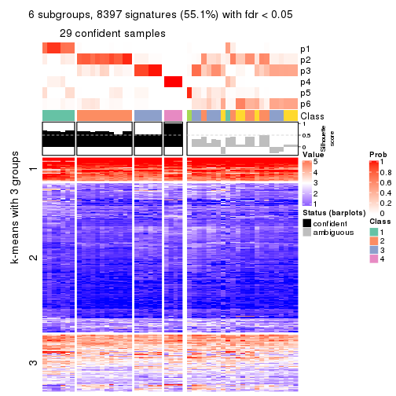
Compare the overlap of signatures from different k:
compare_signatures(res)

get_signature() returns a data frame invisibly. TO get the list of signatures, the function
call should be assigned to a variable explicitly. In following code, if plot argument is set
to FALSE, no heatmap is plotted while only the differential analysis is performed.
# code only for demonstration
tb = get_signature(res, k = ..., plot = FALSE)
An example of the output of tb is:
#> which_row fdr mean_1 mean_2 scaled_mean_1 scaled_mean_2 km
#> 1 38 0.042760348 8.373488 9.131774 -0.5533452 0.5164555 1
#> 2 40 0.018707592 7.106213 8.469186 -0.6173731 0.5762149 1
#> 3 55 0.019134737 10.221463 11.207825 -0.6159697 0.5749050 1
#> 4 59 0.006059896 5.921854 7.869574 -0.6899429 0.6439467 1
#> 5 60 0.018055526 8.928898 10.211722 -0.6204761 0.5791110 1
#> 6 98 0.009384629 15.714769 14.887706 0.6635654 -0.6193277 2
...
The columns in tb are:
which_row: row indices corresponding to the input matrix.fdr: FDR for the differential test. mean_x: The mean value in group x.scaled_mean_x: The mean value in group x after rows are scaled.km: Row groups if k-means clustering is applied to rows.UMAP plot which shows how samples are separated.
dimension_reduction(res, k = 2, method = "UMAP")
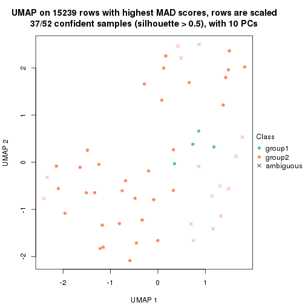
dimension_reduction(res, k = 3, method = "UMAP")
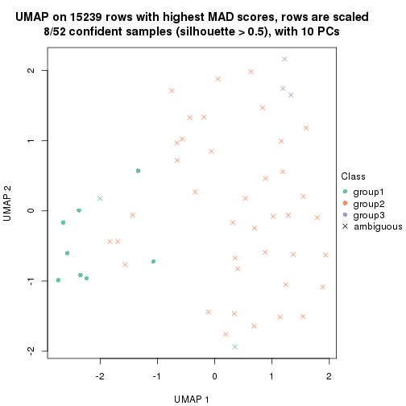
dimension_reduction(res, k = 4, method = "UMAP")
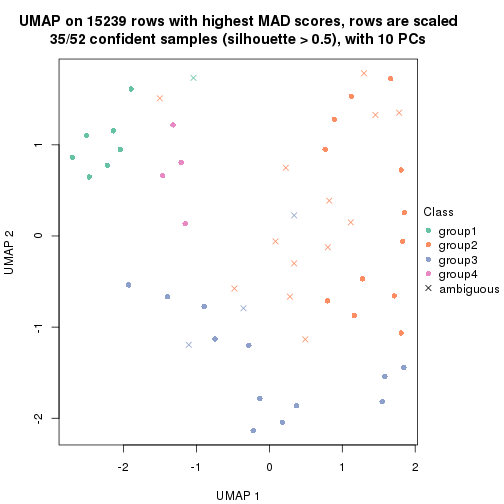
dimension_reduction(res, k = 5, method = "UMAP")
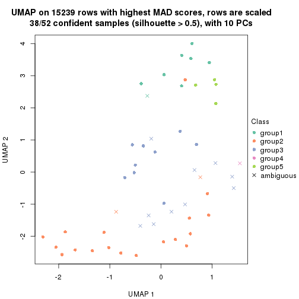
dimension_reduction(res, k = 6, method = "UMAP")

Following heatmap shows how subgroups are split when increasing k:
collect_classes(res)
If matrix rows can be associated to genes, consider to use functional_enrichment(res,
...) to perform function enrichment for the signature genes. See this vignette for more detailed explanations.
The object with results only for a single top-value method and a single partition method can be extracted as:
res = res_list["MAD", "kmeans"]
# you can also extract it by
# res = res_list["MAD:kmeans"]
A summary of res and all the functions that can be applied to it:
res
#> A 'ConsensusPartition' object with k = 2, 3, 4, 5, 6.
#> On a matrix with 15239 rows and 52 columns.
#> Top rows (1000, 2000, 3000, 4000, 5000) are extracted by 'MAD' method.
#> Subgroups are detected by 'kmeans' method.
#> Performed in total 1250 partitions by row resampling.
#> Best k for subgroups seems to be 2.
#>
#> Following methods can be applied to this 'ConsensusPartition' object:
#> [1] "cola_report" "collect_classes" "collect_plots"
#> [4] "collect_stats" "colnames" "compare_signatures"
#> [7] "consensus_heatmap" "dimension_reduction" "functional_enrichment"
#> [10] "get_anno_col" "get_anno" "get_classes"
#> [13] "get_consensus" "get_matrix" "get_membership"
#> [16] "get_param" "get_signatures" "get_stats"
#> [19] "is_best_k" "is_stable_k" "membership_heatmap"
#> [22] "ncol" "nrow" "plot_ecdf"
#> [25] "rownames" "select_partition_number" "show"
#> [28] "suggest_best_k" "test_to_known_factors"
collect_plots() function collects all the plots made from res for all k (number of partitions)
into one single page to provide an easy and fast comparison between different k.
collect_plots(res)
The plots are:
k and the heatmap of
predicted classes for each k.k.k.k.All the plots in panels can be made by individual functions and they are plotted later in this section.
select_partition_number() produces several plots showing different
statistics for choosing “optimized” k. There are following statistics:
k;k, the area increased is defined as \(A_k - A_{k-1}\).The detailed explanations of these statistics can be found in the cola vignette.
Generally speaking, lower PAC score, higher mean silhouette score or higher
concordance corresponds to better partition. Rand index and Jaccard index
measure how similar the current partition is compared to partition with k-1.
If they are too similar, we won't accept k is better than k-1.
select_partition_number(res)
The numeric values for all these statistics can be obtained by get_stats().
get_stats(res)
#> k 1-PAC mean_silhouette concordance area_increased Rand Jaccard
#> 2 2 0.345 0.728 0.858 0.4733 0.538 0.538
#> 3 3 0.372 0.432 0.669 0.3614 0.707 0.502
#> 4 4 0.437 0.579 0.708 0.1359 0.793 0.483
#> 5 5 0.575 0.414 0.671 0.0699 0.921 0.721
#> 6 6 0.624 0.478 0.637 0.0465 0.851 0.478
suggest_best_k() suggests the best \(k\) based on these statistics. The rules are as follows:
suggest_best_k(res)
#> [1] 2
Following shows the table of the partitions (You need to click the show/hide
code output link to see it). The membership matrix (columns with name p*)
is inferred by
clue::cl_consensus()
function with the SE method. Basically the value in the membership matrix
represents the probability to belong to a certain group. The finall class
label for an item is determined with the group with highest probability it
belongs to.
In get_classes() function, the entropy is calculated from the membership
matrix and the silhouette score is calculated from the consensus matrix.
cbind(get_classes(res, k = 2), get_membership(res, k = 2))
#> class entropy silhouette p1 p2
#> SRR633556 2 0.5408 0.8151 0.124 0.876
#> SRR633557 2 0.1184 0.8237 0.016 0.984
#> SRR633558 2 0.5408 0.8151 0.124 0.876
#> SRR633559 2 0.5178 0.8165 0.116 0.884
#> SRR633560 2 0.8081 0.6953 0.248 0.752
#> SRR633561 2 0.6712 0.8047 0.176 0.824
#> SRR633563 1 0.0672 0.8562 0.992 0.008
#> SRR633564 1 0.0672 0.8562 0.992 0.008
#> SRR633565 1 0.2236 0.8625 0.964 0.036
#> SRR633566 1 0.0672 0.8562 0.992 0.008
#> SRR633567 1 0.3879 0.8580 0.924 0.076
#> SRR633568 1 0.8327 0.6297 0.736 0.264
#> SRR633569 1 0.2948 0.8621 0.948 0.052
#> SRR633570 1 0.0672 0.8562 0.992 0.008
#> SRR633571 1 0.0672 0.8562 0.992 0.008
#> SRR633572 2 0.1414 0.8251 0.020 0.980
#> SRR633573 2 0.6712 0.8047 0.176 0.824
#> SRR633574 2 0.6343 0.8098 0.160 0.840
#> SRR633575 2 0.6712 0.8047 0.176 0.824
#> SRR633576 2 0.6712 0.8047 0.176 0.824
#> SRR633577 1 0.2043 0.8605 0.968 0.032
#> SRR633578 2 0.9209 0.4509 0.336 0.664
#> SRR633579 2 0.1843 0.8215 0.028 0.972
#> SRR633580 2 0.1843 0.8215 0.028 0.972
#> SRR633581 2 0.1843 0.8215 0.028 0.972
#> SRR633582 2 0.6438 0.8086 0.164 0.836
#> SRR633583 2 0.5178 0.8165 0.116 0.884
#> SRR633584 1 0.9909 0.2006 0.556 0.444
#> SRR633585 2 0.4161 0.8121 0.084 0.916
#> SRR633586 2 0.0000 0.8227 0.000 1.000
#> SRR633587 2 0.0672 0.8218 0.008 0.992
#> SRR633588 2 0.0672 0.8218 0.008 0.992
#> SRR633589 2 0.5059 0.8150 0.112 0.888
#> SRR633590 2 0.0672 0.8218 0.008 0.992
#> SRR633591 2 0.0672 0.8218 0.008 0.992
#> SRR633592 2 0.0672 0.8218 0.008 0.992
#> SRR633593 1 0.7883 0.6820 0.764 0.236
#> SRR633594 2 0.9996 0.3066 0.488 0.512
#> SRR633595 1 0.4022 0.8565 0.920 0.080
#> SRR633596 1 0.7883 0.7129 0.764 0.236
#> SRR633597 1 0.3733 0.8580 0.928 0.072
#> SRR633598 2 0.8443 0.5321 0.272 0.728
#> SRR633599 2 0.9996 0.0574 0.488 0.512
#> SRR633600 2 0.8861 0.6879 0.304 0.696
#> SRR633601 1 0.9580 0.5458 0.620 0.380
#> SRR633602 1 0.3733 0.8593 0.928 0.072
#> SRR633603 2 0.3274 0.8156 0.060 0.940
#> SRR633604 2 0.1184 0.8210 0.016 0.984
#> SRR633605 2 0.9998 0.0544 0.492 0.508
#> SRR633606 2 0.9998 0.0544 0.492 0.508
#> SRR633607 2 0.6531 0.7451 0.168 0.832
#> SRR633608 1 0.5946 0.8070 0.856 0.144
cbind(get_classes(res, k = 3), get_membership(res, k = 3))
#> class entropy silhouette p1 p2 p3
#> SRR633556 2 0.4195 0.5627 0.012 0.852 0.136
#> SRR633557 2 0.6126 0.2635 0.000 0.600 0.400
#> SRR633558 2 0.3989 0.5665 0.012 0.864 0.124
#> SRR633559 2 0.3377 0.5800 0.012 0.896 0.092
#> SRR633560 2 0.5726 0.4647 0.024 0.760 0.216
#> SRR633561 2 0.2804 0.5707 0.016 0.924 0.060
#> SRR633563 1 0.1031 0.8322 0.976 0.024 0.000
#> SRR633564 1 0.1031 0.8322 0.976 0.024 0.000
#> SRR633565 1 0.0661 0.8345 0.988 0.004 0.008
#> SRR633566 1 0.1267 0.8331 0.972 0.024 0.004
#> SRR633567 1 0.5098 0.6974 0.752 0.000 0.248
#> SRR633568 1 0.8242 0.3230 0.572 0.092 0.336
#> SRR633569 1 0.2200 0.8361 0.940 0.004 0.056
#> SRR633570 1 0.2743 0.8385 0.928 0.020 0.052
#> SRR633571 1 0.2743 0.8385 0.928 0.020 0.052
#> SRR633572 2 0.2625 0.5765 0.000 0.916 0.084
#> SRR633573 2 0.2998 0.5708 0.016 0.916 0.068
#> SRR633574 2 0.2902 0.5726 0.016 0.920 0.064
#> SRR633575 2 0.2998 0.5708 0.016 0.916 0.068
#> SRR633576 2 0.4897 0.4526 0.016 0.812 0.172
#> SRR633577 1 0.5174 0.7823 0.824 0.048 0.128
#> SRR633578 3 0.5610 0.3694 0.028 0.196 0.776
#> SRR633579 3 0.6235 0.0144 0.000 0.436 0.564
#> SRR633580 3 0.6235 0.0144 0.000 0.436 0.564
#> SRR633581 3 0.6235 0.0144 0.000 0.436 0.564
#> SRR633582 2 0.2599 0.5734 0.016 0.932 0.052
#> SRR633583 2 0.3293 0.5803 0.012 0.900 0.088
#> SRR633584 2 0.9497 -0.0891 0.200 0.468 0.332
#> SRR633585 2 0.2486 0.5695 0.008 0.932 0.060
#> SRR633586 2 0.6280 0.1668 0.000 0.540 0.460
#> SRR633587 2 0.6282 0.3694 0.004 0.612 0.384
#> SRR633588 2 0.6307 0.1744 0.000 0.512 0.488
#> SRR633589 2 0.5687 0.4807 0.020 0.756 0.224
#> SRR633590 2 0.6308 0.1906 0.000 0.508 0.492
#> SRR633591 2 0.6308 0.1906 0.000 0.508 0.492
#> SRR633592 2 0.6286 0.1855 0.000 0.536 0.464
#> SRR633593 3 0.9757 0.2582 0.268 0.288 0.444
#> SRR633594 2 0.7677 0.1448 0.092 0.656 0.252
#> SRR633595 3 0.9813 0.1775 0.316 0.260 0.424
#> SRR633596 3 0.9488 0.2930 0.248 0.256 0.496
#> SRR633597 1 0.7158 0.4698 0.596 0.032 0.372
#> SRR633598 3 0.6142 0.3707 0.040 0.212 0.748
#> SRR633599 3 0.9029 0.2816 0.164 0.300 0.536
#> SRR633600 2 0.7075 -0.0960 0.020 0.496 0.484
#> SRR633601 3 0.4256 0.3935 0.096 0.036 0.868
#> SRR633602 1 0.5397 0.6606 0.720 0.000 0.280
#> SRR633603 3 0.6314 0.1515 0.004 0.392 0.604
#> SRR633604 3 0.2537 0.3787 0.000 0.080 0.920
#> SRR633605 3 0.8894 0.2935 0.160 0.284 0.556
#> SRR633606 3 0.8918 0.2902 0.160 0.288 0.552
#> SRR633607 3 0.5365 0.3438 0.004 0.252 0.744
#> SRR633608 1 0.2261 0.8341 0.932 0.000 0.068
cbind(get_classes(res, k = 4), get_membership(res, k = 4))
#> class entropy silhouette p1 p2 p3 p4
#> SRR633556 2 0.5250 0.640 0.000 0.744 0.176 0.080
#> SRR633557 3 0.6360 0.417 0.000 0.420 0.516 0.064
#> SRR633558 2 0.5250 0.642 0.000 0.744 0.176 0.080
#> SRR633559 2 0.5050 0.642 0.000 0.756 0.176 0.068
#> SRR633560 2 0.7215 0.387 0.000 0.500 0.152 0.348
#> SRR633561 2 0.2742 0.681 0.008 0.900 0.084 0.008
#> SRR633563 1 0.0967 0.748 0.976 0.004 0.016 0.004
#> SRR633564 1 0.0967 0.748 0.976 0.004 0.016 0.004
#> SRR633565 1 0.3245 0.726 0.872 0.000 0.028 0.100
#> SRR633566 1 0.0967 0.748 0.976 0.004 0.016 0.004
#> SRR633567 1 0.5921 0.222 0.516 0.000 0.036 0.448
#> SRR633568 1 0.7602 0.356 0.504 0.012 0.328 0.156
#> SRR633569 1 0.4893 0.724 0.768 0.000 0.064 0.168
#> SRR633570 1 0.3978 0.737 0.836 0.000 0.056 0.108
#> SRR633571 1 0.3978 0.737 0.836 0.000 0.056 0.108
#> SRR633572 2 0.4472 0.600 0.000 0.760 0.220 0.020
#> SRR633573 2 0.1953 0.695 0.012 0.944 0.012 0.032
#> SRR633574 2 0.1488 0.699 0.000 0.956 0.012 0.032
#> SRR633575 2 0.1953 0.695 0.012 0.944 0.012 0.032
#> SRR633576 2 0.4468 0.599 0.012 0.820 0.116 0.052
#> SRR633577 1 0.5847 0.642 0.716 0.060 0.020 0.204
#> SRR633578 3 0.5995 0.492 0.000 0.096 0.672 0.232
#> SRR633579 3 0.4706 0.658 0.000 0.140 0.788 0.072
#> SRR633580 3 0.4706 0.658 0.000 0.140 0.788 0.072
#> SRR633581 3 0.4706 0.658 0.000 0.140 0.788 0.072
#> SRR633582 2 0.2039 0.700 0.008 0.940 0.036 0.016
#> SRR633583 2 0.4979 0.642 0.000 0.760 0.176 0.064
#> SRR633584 4 0.7180 0.595 0.068 0.176 0.100 0.656
#> SRR633585 2 0.2876 0.676 0.008 0.892 0.092 0.008
#> SRR633586 3 0.5144 0.619 0.000 0.216 0.732 0.052
#> SRR633587 3 0.7706 0.105 0.000 0.328 0.436 0.236
#> SRR633588 3 0.5500 0.607 0.000 0.224 0.708 0.068
#> SRR633589 2 0.7401 0.402 0.000 0.504 0.196 0.300
#> SRR633590 3 0.5050 0.579 0.000 0.268 0.704 0.028
#> SRR633591 3 0.5050 0.579 0.000 0.268 0.704 0.028
#> SRR633592 3 0.4855 0.588 0.000 0.268 0.712 0.020
#> SRR633593 4 0.5172 0.742 0.076 0.136 0.012 0.776
#> SRR633594 2 0.6095 0.519 0.020 0.708 0.084 0.188
#> SRR633595 4 0.5116 0.731 0.108 0.096 0.012 0.784
#> SRR633596 4 0.4885 0.756 0.076 0.080 0.032 0.812
#> SRR633597 4 0.4823 0.592 0.180 0.032 0.012 0.776
#> SRR633598 3 0.7217 0.376 0.008 0.116 0.508 0.368
#> SRR633599 4 0.6169 0.761 0.060 0.140 0.068 0.732
#> SRR633600 2 0.5879 0.365 0.008 0.676 0.056 0.260
#> SRR633601 4 0.5968 -0.052 0.016 0.016 0.424 0.544
#> SRR633602 1 0.6074 0.187 0.500 0.000 0.044 0.456
#> SRR633603 3 0.7133 0.494 0.000 0.332 0.520 0.148
#> SRR633604 3 0.6412 0.315 0.000 0.080 0.572 0.348
#> SRR633605 4 0.6169 0.760 0.060 0.140 0.068 0.732
#> SRR633606 4 0.6169 0.760 0.060 0.140 0.068 0.732
#> SRR633607 3 0.7121 0.449 0.000 0.220 0.564 0.216
#> SRR633608 1 0.4686 0.720 0.788 0.000 0.068 0.144
cbind(get_classes(res, k = 5), get_membership(res, k = 5))
#> class entropy silhouette p1 p2 p3 p4 p5
#> SRR633556 2 0.1952 0.50540 0.000 0.912 0.004 0.000 0.084
#> SRR633557 2 0.6442 -0.25811 0.008 0.536 0.276 0.180 0.000
#> SRR633558 2 0.1952 0.50540 0.000 0.912 0.004 0.000 0.084
#> SRR633559 2 0.1952 0.50540 0.000 0.912 0.004 0.000 0.084
#> SRR633560 2 0.3999 0.30329 0.000 0.656 0.000 0.000 0.344
#> SRR633561 2 0.5524 0.56509 0.004 0.600 0.076 0.320 0.000
#> SRR633563 1 0.0898 0.51135 0.972 0.000 0.000 0.008 0.020
#> SRR633564 1 0.0898 0.51135 0.972 0.000 0.000 0.008 0.020
#> SRR633565 1 0.3642 0.46555 0.820 0.000 0.020 0.016 0.144
#> SRR633566 1 0.0898 0.51135 0.972 0.000 0.000 0.008 0.020
#> SRR633567 5 0.6059 0.14635 0.348 0.000 0.044 0.048 0.560
#> SRR633568 4 0.6955 0.00000 0.352 0.004 0.124 0.484 0.036
#> SRR633569 1 0.6873 0.06264 0.512 0.000 0.040 0.312 0.136
#> SRR633570 1 0.5896 0.10820 0.604 0.000 0.040 0.304 0.052
#> SRR633571 1 0.5896 0.10820 0.604 0.000 0.040 0.304 0.052
#> SRR633572 2 0.2775 0.42505 0.000 0.884 0.076 0.036 0.004
#> SRR633573 2 0.5513 0.57540 0.004 0.612 0.056 0.320 0.008
#> SRR633574 2 0.5381 0.57673 0.004 0.620 0.056 0.316 0.004
#> SRR633575 2 0.5513 0.57540 0.004 0.612 0.056 0.320 0.008
#> SRR633576 2 0.6126 0.53377 0.004 0.540 0.096 0.352 0.008
#> SRR633577 1 0.7485 0.28857 0.496 0.048 0.024 0.124 0.308
#> SRR633578 3 0.4425 0.40281 0.004 0.004 0.768 0.060 0.164
#> SRR633579 3 0.2568 0.56326 0.000 0.092 0.888 0.004 0.016
#> SRR633580 3 0.2568 0.56326 0.000 0.092 0.888 0.004 0.016
#> SRR633581 3 0.2568 0.56326 0.000 0.092 0.888 0.004 0.016
#> SRR633582 2 0.5240 0.58273 0.004 0.668 0.048 0.268 0.012
#> SRR633583 2 0.1952 0.50540 0.000 0.912 0.004 0.000 0.084
#> SRR633584 5 0.4796 0.62218 0.012 0.152 0.036 0.032 0.768
#> SRR633585 2 0.5672 0.55796 0.004 0.588 0.088 0.320 0.000
#> SRR633586 3 0.6428 0.50965 0.008 0.320 0.516 0.156 0.000
#> SRR633587 2 0.7244 -0.21147 0.000 0.484 0.284 0.048 0.184
#> SRR633588 3 0.6532 0.45868 0.008 0.388 0.452 0.152 0.000
#> SRR633589 2 0.5422 0.27780 0.000 0.656 0.052 0.024 0.268
#> SRR633590 3 0.5522 0.46104 0.000 0.424 0.516 0.056 0.004
#> SRR633591 3 0.5522 0.46104 0.000 0.424 0.516 0.056 0.004
#> SRR633592 3 0.5485 0.48472 0.000 0.400 0.540 0.056 0.004
#> SRR633593 5 0.3509 0.68105 0.008 0.060 0.016 0.056 0.860
#> SRR633594 2 0.7819 0.42217 0.008 0.428 0.104 0.340 0.120
#> SRR633595 5 0.3539 0.68412 0.020 0.044 0.016 0.056 0.864
#> SRR633596 5 0.1564 0.70431 0.000 0.024 0.024 0.004 0.948
#> SRR633597 5 0.3708 0.66532 0.028 0.032 0.008 0.084 0.848
#> SRR633598 3 0.7336 0.20503 0.008 0.020 0.436 0.236 0.300
#> SRR633599 5 0.3802 0.68011 0.000 0.020 0.036 0.120 0.824
#> SRR633600 2 0.7350 0.38324 0.000 0.392 0.048 0.388 0.172
#> SRR633601 5 0.6851 -0.00213 0.008 0.004 0.304 0.208 0.476
#> SRR633602 5 0.5917 0.21471 0.324 0.000 0.044 0.044 0.588
#> SRR633603 3 0.6922 0.29787 0.008 0.072 0.448 0.416 0.056
#> SRR633604 3 0.6449 0.25521 0.000 0.020 0.532 0.124 0.324
#> SRR633605 5 0.3802 0.68011 0.000 0.020 0.036 0.120 0.824
#> SRR633606 5 0.3802 0.68011 0.000 0.020 0.036 0.120 0.824
#> SRR633607 3 0.6313 0.34594 0.000 0.004 0.544 0.272 0.180
#> SRR633608 1 0.6982 0.32385 0.564 0.000 0.092 0.108 0.236
cbind(get_classes(res, k = 6), get_membership(res, k = 6))
#> class entropy silhouette p1 p2 p3 p4 p5 p6
#> SRR633556 2 0.5175 0.4546 0.000 0.588 0.000 0.004 0.100 0.308
#> SRR633557 2 0.6136 0.2497 0.000 0.448 0.316 0.008 0.000 0.228
#> SRR633558 2 0.5400 0.4475 0.000 0.576 0.008 0.004 0.096 0.316
#> SRR633559 2 0.5135 0.4535 0.000 0.592 0.000 0.004 0.096 0.308
#> SRR633560 2 0.5681 0.4449 0.000 0.532 0.000 0.004 0.296 0.168
#> SRR633561 6 0.3476 0.7971 0.000 0.092 0.060 0.020 0.000 0.828
#> SRR633563 1 0.0146 0.5010 0.996 0.000 0.000 0.000 0.004 0.000
#> SRR633564 1 0.0146 0.5010 0.996 0.000 0.000 0.000 0.004 0.000
#> SRR633565 1 0.3091 0.4723 0.824 0.000 0.004 0.024 0.148 0.000
#> SRR633566 1 0.0146 0.5010 0.996 0.000 0.000 0.000 0.004 0.000
#> SRR633567 5 0.5846 0.3052 0.200 0.000 0.064 0.104 0.628 0.004
#> SRR633568 4 0.5945 0.4974 0.248 0.004 0.224 0.520 0.000 0.004
#> SRR633569 4 0.5597 0.5320 0.288 0.000 0.000 0.532 0.180 0.000
#> SRR633570 4 0.4403 0.6694 0.468 0.000 0.000 0.508 0.024 0.000
#> SRR633571 4 0.4403 0.6694 0.468 0.000 0.000 0.508 0.024 0.000
#> SRR633572 2 0.4832 0.4247 0.000 0.608 0.064 0.000 0.004 0.324
#> SRR633573 6 0.1843 0.8164 0.000 0.080 0.000 0.004 0.004 0.912
#> SRR633574 6 0.1843 0.8164 0.000 0.080 0.000 0.004 0.004 0.912
#> SRR633575 6 0.1843 0.8164 0.000 0.080 0.000 0.004 0.004 0.912
#> SRR633576 6 0.1851 0.8014 0.000 0.024 0.036 0.012 0.000 0.928
#> SRR633577 1 0.8206 0.0997 0.352 0.012 0.044 0.168 0.308 0.116
#> SRR633578 3 0.5925 0.5567 0.000 0.112 0.644 0.152 0.084 0.008
#> SRR633579 3 0.5785 0.6176 0.000 0.332 0.532 0.112 0.000 0.024
#> SRR633580 3 0.5795 0.6182 0.000 0.336 0.528 0.112 0.000 0.024
#> SRR633581 3 0.5795 0.6182 0.000 0.336 0.528 0.112 0.000 0.024
#> SRR633582 6 0.3387 0.7712 0.000 0.124 0.028 0.012 0.008 0.828
#> SRR633583 2 0.5546 0.4404 0.000 0.568 0.016 0.004 0.092 0.320
#> SRR633584 5 0.3280 0.5691 0.000 0.160 0.000 0.028 0.808 0.004
#> SRR633585 6 0.3495 0.7930 0.000 0.076 0.076 0.020 0.000 0.828
#> SRR633586 2 0.4536 -0.0471 0.000 0.496 0.476 0.004 0.000 0.024
#> SRR633587 2 0.3353 0.4912 0.000 0.824 0.020 0.008 0.136 0.012
#> SRR633588 2 0.4153 0.2481 0.000 0.636 0.340 0.000 0.000 0.024
#> SRR633589 2 0.5242 0.5100 0.000 0.636 0.000 0.012 0.224 0.128
#> SRR633590 2 0.2812 0.3346 0.004 0.872 0.084 0.032 0.004 0.004
#> SRR633591 2 0.2812 0.3346 0.004 0.872 0.084 0.032 0.004 0.004
#> SRR633592 2 0.2964 0.3172 0.004 0.860 0.096 0.032 0.004 0.004
#> SRR633593 5 0.3943 0.6059 0.000 0.008 0.048 0.136 0.792 0.016
#> SRR633594 6 0.5861 0.5802 0.000 0.004 0.132 0.140 0.080 0.644
#> SRR633595 5 0.3773 0.6111 0.000 0.008 0.048 0.128 0.804 0.012
#> SRR633596 5 0.1007 0.6433 0.000 0.004 0.008 0.016 0.968 0.004
#> SRR633597 5 0.3228 0.5978 0.004 0.008 0.016 0.128 0.836 0.008
#> SRR633598 3 0.6710 0.3245 0.000 0.080 0.580 0.136 0.172 0.032
#> SRR633599 5 0.5003 0.5892 0.000 0.000 0.048 0.116 0.712 0.124
#> SRR633600 6 0.5179 0.4940 0.000 0.000 0.052 0.124 0.128 0.696
#> SRR633601 5 0.5941 0.0408 0.000 0.024 0.440 0.088 0.440 0.008
#> SRR633602 5 0.5794 0.3188 0.192 0.000 0.064 0.104 0.636 0.004
#> SRR633603 3 0.5919 0.4188 0.000 0.092 0.616 0.044 0.016 0.232
#> SRR633604 2 0.8864 -0.5023 0.004 0.252 0.252 0.188 0.200 0.104
#> SRR633605 5 0.5022 0.5904 0.000 0.000 0.052 0.116 0.712 0.120
#> SRR633606 5 0.5022 0.5904 0.000 0.000 0.052 0.116 0.712 0.120
#> SRR633607 3 0.8679 0.4394 0.004 0.180 0.336 0.204 0.096 0.180
#> SRR633608 1 0.7780 0.0781 0.360 0.020 0.100 0.228 0.288 0.004
Heatmaps for the consensus matrix. It visualizes the probability of two samples to be in a same group.
consensus_heatmap(res, k = 2)
consensus_heatmap(res, k = 3)
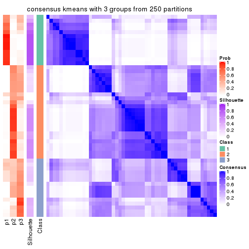
consensus_heatmap(res, k = 4)
consensus_heatmap(res, k = 5)
consensus_heatmap(res, k = 6)
Heatmaps for the membership of samples in all partitions to see how consistent they are:
membership_heatmap(res, k = 2)
membership_heatmap(res, k = 3)
membership_heatmap(res, k = 4)
membership_heatmap(res, k = 5)
membership_heatmap(res, k = 6)
As soon as we have had the classes for columns, we can look for signatures which are significantly different between classes which can be candidate marks for certain classes. Following are the heatmaps for signatures.
Signature heatmaps where rows are scaled:
get_signatures(res, k = 2)
get_signatures(res, k = 3)
get_signatures(res, k = 4)
get_signatures(res, k = 5)
get_signatures(res, k = 6)
Signature heatmaps where rows are not scaled:
get_signatures(res, k = 2, scale_rows = FALSE)
get_signatures(res, k = 3, scale_rows = FALSE)

get_signatures(res, k = 4, scale_rows = FALSE)
get_signatures(res, k = 5, scale_rows = FALSE)
get_signatures(res, k = 6, scale_rows = FALSE)
Compare the overlap of signatures from different k:
compare_signatures(res)
get_signature() returns a data frame invisibly. TO get the list of signatures, the function
call should be assigned to a variable explicitly. In following code, if plot argument is set
to FALSE, no heatmap is plotted while only the differential analysis is performed.
# code only for demonstration
tb = get_signature(res, k = ..., plot = FALSE)
An example of the output of tb is:
#> which_row fdr mean_1 mean_2 scaled_mean_1 scaled_mean_2 km
#> 1 38 0.042760348 8.373488 9.131774 -0.5533452 0.5164555 1
#> 2 40 0.018707592 7.106213 8.469186 -0.6173731 0.5762149 1
#> 3 55 0.019134737 10.221463 11.207825 -0.6159697 0.5749050 1
#> 4 59 0.006059896 5.921854 7.869574 -0.6899429 0.6439467 1
#> 5 60 0.018055526 8.928898 10.211722 -0.6204761 0.5791110 1
#> 6 98 0.009384629 15.714769 14.887706 0.6635654 -0.6193277 2
...
The columns in tb are:
which_row: row indices corresponding to the input matrix.fdr: FDR for the differential test. mean_x: The mean value in group x.scaled_mean_x: The mean value in group x after rows are scaled.km: Row groups if k-means clustering is applied to rows.UMAP plot which shows how samples are separated.
dimension_reduction(res, k = 2, method = "UMAP")
dimension_reduction(res, k = 3, method = "UMAP")
dimension_reduction(res, k = 4, method = "UMAP")
dimension_reduction(res, k = 5, method = "UMAP")
dimension_reduction(res, k = 6, method = "UMAP")
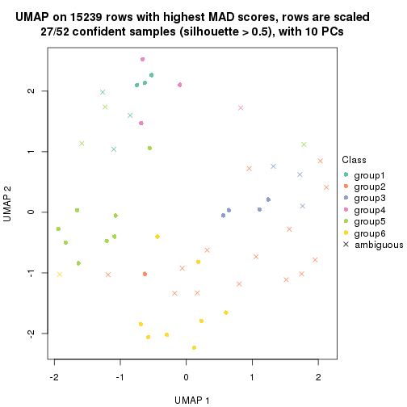
Following heatmap shows how subgroups are split when increasing k:
collect_classes(res)
If matrix rows can be associated to genes, consider to use functional_enrichment(res,
...) to perform function enrichment for the signature genes. See this vignette for more detailed explanations.
The object with results only for a single top-value method and a single partition method can be extracted as:
res = res_list["MAD", "skmeans"]
# you can also extract it by
# res = res_list["MAD:skmeans"]
A summary of res and all the functions that can be applied to it:
res
#> A 'ConsensusPartition' object with k = 2, 3, 4, 5, 6.
#> On a matrix with 15239 rows and 52 columns.
#> Top rows (1000, 2000, 3000, 4000, 5000) are extracted by 'MAD' method.
#> Subgroups are detected by 'skmeans' method.
#> Performed in total 1250 partitions by row resampling.
#> Best k for subgroups seems to be 2.
#>
#> Following methods can be applied to this 'ConsensusPartition' object:
#> [1] "cola_report" "collect_classes" "collect_plots"
#> [4] "collect_stats" "colnames" "compare_signatures"
#> [7] "consensus_heatmap" "dimension_reduction" "functional_enrichment"
#> [10] "get_anno_col" "get_anno" "get_classes"
#> [13] "get_consensus" "get_matrix" "get_membership"
#> [16] "get_param" "get_signatures" "get_stats"
#> [19] "is_best_k" "is_stable_k" "membership_heatmap"
#> [22] "ncol" "nrow" "plot_ecdf"
#> [25] "rownames" "select_partition_number" "show"
#> [28] "suggest_best_k" "test_to_known_factors"
collect_plots() function collects all the plots made from res for all k (number of partitions)
into one single page to provide an easy and fast comparison between different k.
collect_plots(res)
The plots are:
k and the heatmap of
predicted classes for each k.k.k.k.All the plots in panels can be made by individual functions and they are plotted later in this section.
select_partition_number() produces several plots showing different
statistics for choosing “optimized” k. There are following statistics:
k;k, the area increased is defined as \(A_k - A_{k-1}\).The detailed explanations of these statistics can be found in the cola vignette.
Generally speaking, lower PAC score, higher mean silhouette score or higher
concordance corresponds to better partition. Rand index and Jaccard index
measure how similar the current partition is compared to partition with k-1.
If they are too similar, we won't accept k is better than k-1.
select_partition_number(res)
The numeric values for all these statistics can be obtained by get_stats().
get_stats(res)
#> k 1-PAC mean_silhouette concordance area_increased Rand Jaccard
#> 2 2 0.843 0.873 0.952 0.5083 0.493 0.493
#> 3 3 0.591 0.749 0.841 0.3249 0.723 0.493
#> 4 4 0.624 0.662 0.816 0.1245 0.870 0.626
#> 5 5 0.726 0.709 0.842 0.0637 0.848 0.479
#> 6 6 0.755 0.585 0.740 0.0387 0.961 0.799
suggest_best_k() suggests the best \(k\) based on these statistics. The rules are as follows:
suggest_best_k(res)
#> [1] 2
Following shows the table of the partitions (You need to click the show/hide
code output link to see it). The membership matrix (columns with name p*)
is inferred by
clue::cl_consensus()
function with the SE method. Basically the value in the membership matrix
represents the probability to belong to a certain group. The finall class
label for an item is determined with the group with highest probability it
belongs to.
In get_classes() function, the entropy is calculated from the membership
matrix and the silhouette score is calculated from the consensus matrix.
cbind(get_classes(res, k = 2), get_membership(res, k = 2))
#> class entropy silhouette p1 p2
#> SRR633556 2 0.0000 0.935 0.000 1.000
#> SRR633557 2 0.0000 0.935 0.000 1.000
#> SRR633558 2 0.0000 0.935 0.000 1.000
#> SRR633559 2 0.0000 0.935 0.000 1.000
#> SRR633560 2 0.9248 0.463 0.340 0.660
#> SRR633561 2 0.0000 0.935 0.000 1.000
#> SRR633563 1 0.0000 0.958 1.000 0.000
#> SRR633564 1 0.0000 0.958 1.000 0.000
#> SRR633565 1 0.0000 0.958 1.000 0.000
#> SRR633566 1 0.0000 0.958 1.000 0.000
#> SRR633567 1 0.0000 0.958 1.000 0.000
#> SRR633568 2 0.9922 0.190 0.448 0.552
#> SRR633569 1 0.0000 0.958 1.000 0.000
#> SRR633570 1 0.0000 0.958 1.000 0.000
#> SRR633571 1 0.0000 0.958 1.000 0.000
#> SRR633572 2 0.0000 0.935 0.000 1.000
#> SRR633573 2 0.0000 0.935 0.000 1.000
#> SRR633574 2 0.0000 0.935 0.000 1.000
#> SRR633575 2 0.0000 0.935 0.000 1.000
#> SRR633576 2 0.0000 0.935 0.000 1.000
#> SRR633577 1 0.0000 0.958 1.000 0.000
#> SRR633578 1 0.0376 0.955 0.996 0.004
#> SRR633579 2 0.0000 0.935 0.000 1.000
#> SRR633580 2 0.0000 0.935 0.000 1.000
#> SRR633581 2 0.0000 0.935 0.000 1.000
#> SRR633582 2 0.0000 0.935 0.000 1.000
#> SRR633583 2 0.0000 0.935 0.000 1.000
#> SRR633584 1 0.7219 0.719 0.800 0.200
#> SRR633585 2 0.0000 0.935 0.000 1.000
#> SRR633586 2 0.0000 0.935 0.000 1.000
#> SRR633587 2 0.0000 0.935 0.000 1.000
#> SRR633588 2 0.0000 0.935 0.000 1.000
#> SRR633589 2 0.0000 0.935 0.000 1.000
#> SRR633590 2 0.0000 0.935 0.000 1.000
#> SRR633591 2 0.0000 0.935 0.000 1.000
#> SRR633592 2 0.0000 0.935 0.000 1.000
#> SRR633593 1 0.0000 0.958 1.000 0.000
#> SRR633594 1 0.8016 0.651 0.756 0.244
#> SRR633595 1 0.0000 0.958 1.000 0.000
#> SRR633596 1 0.0000 0.958 1.000 0.000
#> SRR633597 1 0.0000 0.958 1.000 0.000
#> SRR633598 2 0.9850 0.250 0.428 0.572
#> SRR633599 1 0.0000 0.958 1.000 0.000
#> SRR633600 1 0.2043 0.931 0.968 0.032
#> SRR633601 1 0.0376 0.955 0.996 0.004
#> SRR633602 1 0.0000 0.958 1.000 0.000
#> SRR633603 2 0.0000 0.935 0.000 1.000
#> SRR633604 2 0.9833 0.262 0.424 0.576
#> SRR633605 1 0.0000 0.958 1.000 0.000
#> SRR633606 1 0.0000 0.958 1.000 0.000
#> SRR633607 1 0.9580 0.346 0.620 0.380
#> SRR633608 1 0.0000 0.958 1.000 0.000
cbind(get_classes(res, k = 3), get_membership(res, k = 3))
#> class entropy silhouette p1 p2 p3
#> SRR633556 2 0.4974 0.798 0.000 0.764 0.236
#> SRR633557 3 0.5497 0.597 0.000 0.292 0.708
#> SRR633558 2 0.4974 0.798 0.000 0.764 0.236
#> SRR633559 2 0.4974 0.798 0.000 0.764 0.236
#> SRR633560 2 0.4974 0.798 0.000 0.764 0.236
#> SRR633561 2 0.2878 0.798 0.000 0.904 0.096
#> SRR633563 1 0.0000 0.911 1.000 0.000 0.000
#> SRR633564 1 0.0000 0.911 1.000 0.000 0.000
#> SRR633565 1 0.0000 0.911 1.000 0.000 0.000
#> SRR633566 1 0.0000 0.911 1.000 0.000 0.000
#> SRR633567 1 0.0000 0.911 1.000 0.000 0.000
#> SRR633568 3 0.6267 0.320 0.452 0.000 0.548
#> SRR633569 1 0.0000 0.911 1.000 0.000 0.000
#> SRR633570 1 0.0000 0.911 1.000 0.000 0.000
#> SRR633571 1 0.0000 0.911 1.000 0.000 0.000
#> SRR633572 2 0.5016 0.794 0.000 0.760 0.240
#> SRR633573 2 0.0424 0.756 0.000 0.992 0.008
#> SRR633574 2 0.0424 0.756 0.000 0.992 0.008
#> SRR633575 2 0.0424 0.756 0.000 0.992 0.008
#> SRR633576 2 0.3686 0.625 0.000 0.860 0.140
#> SRR633577 1 0.0000 0.911 1.000 0.000 0.000
#> SRR633578 3 0.6542 0.645 0.204 0.060 0.736
#> SRR633579 3 0.2878 0.722 0.000 0.096 0.904
#> SRR633580 3 0.2796 0.722 0.000 0.092 0.908
#> SRR633581 3 0.2796 0.722 0.000 0.092 0.908
#> SRR633582 2 0.4002 0.799 0.000 0.840 0.160
#> SRR633583 2 0.4974 0.798 0.000 0.764 0.236
#> SRR633584 1 0.5728 0.679 0.772 0.032 0.196
#> SRR633585 2 0.2878 0.798 0.000 0.904 0.096
#> SRR633586 3 0.4235 0.686 0.000 0.176 0.824
#> SRR633587 3 0.4235 0.686 0.000 0.176 0.824
#> SRR633588 3 0.4235 0.686 0.000 0.176 0.824
#> SRR633589 2 0.4974 0.798 0.000 0.764 0.236
#> SRR633590 3 0.4235 0.686 0.000 0.176 0.824
#> SRR633591 3 0.4235 0.686 0.000 0.176 0.824
#> SRR633592 3 0.4235 0.686 0.000 0.176 0.824
#> SRR633593 1 0.1832 0.894 0.956 0.008 0.036
#> SRR633594 2 0.7065 0.467 0.316 0.644 0.040
#> SRR633595 1 0.1411 0.896 0.964 0.000 0.036
#> SRR633596 1 0.3551 0.826 0.868 0.000 0.132
#> SRR633597 1 0.0592 0.906 0.988 0.000 0.012
#> SRR633598 3 0.6488 0.643 0.192 0.064 0.744
#> SRR633599 1 0.8309 0.614 0.632 0.188 0.180
#> SRR633600 2 0.4235 0.586 0.000 0.824 0.176
#> SRR633601 3 0.5431 0.551 0.284 0.000 0.716
#> SRR633602 1 0.0000 0.911 1.000 0.000 0.000
#> SRR633603 3 0.5254 0.637 0.000 0.264 0.736
#> SRR633604 3 0.5147 0.648 0.020 0.180 0.800
#> SRR633605 1 0.8355 0.609 0.628 0.188 0.184
#> SRR633606 1 0.8309 0.614 0.632 0.188 0.180
#> SRR633607 3 0.4974 0.628 0.000 0.236 0.764
#> SRR633608 1 0.0000 0.911 1.000 0.000 0.000
cbind(get_classes(res, k = 4), get_membership(res, k = 4))
#> class entropy silhouette p1 p2 p3 p4
#> SRR633556 2 0.5827 0.653 0.000 0.632 0.316 0.052
#> SRR633557 3 0.3873 0.522 0.000 0.228 0.772 0.000
#> SRR633558 2 0.5966 0.644 0.000 0.624 0.316 0.060
#> SRR633559 2 0.5678 0.660 0.000 0.640 0.316 0.044
#> SRR633560 4 0.7481 0.235 0.000 0.204 0.308 0.488
#> SRR633561 2 0.0336 0.782 0.000 0.992 0.008 0.000
#> SRR633563 1 0.0000 0.908 1.000 0.000 0.000 0.000
#> SRR633564 1 0.0000 0.908 1.000 0.000 0.000 0.000
#> SRR633565 1 0.0592 0.900 0.984 0.000 0.000 0.016
#> SRR633566 1 0.0000 0.908 1.000 0.000 0.000 0.000
#> SRR633567 1 0.2408 0.838 0.896 0.000 0.000 0.104
#> SRR633568 1 0.3933 0.676 0.796 0.004 0.196 0.004
#> SRR633569 1 0.0000 0.908 1.000 0.000 0.000 0.000
#> SRR633570 1 0.0000 0.908 1.000 0.000 0.000 0.000
#> SRR633571 1 0.0000 0.908 1.000 0.000 0.000 0.000
#> SRR633572 2 0.5599 0.662 0.000 0.644 0.316 0.040
#> SRR633573 2 0.0336 0.782 0.000 0.992 0.000 0.008
#> SRR633574 2 0.0336 0.782 0.000 0.992 0.000 0.008
#> SRR633575 2 0.0336 0.782 0.000 0.992 0.000 0.008
#> SRR633576 2 0.0779 0.775 0.000 0.980 0.004 0.016
#> SRR633577 1 0.0000 0.908 1.000 0.000 0.000 0.000
#> SRR633578 3 0.8208 0.576 0.084 0.120 0.548 0.248
#> SRR633579 3 0.5079 0.688 0.004 0.116 0.776 0.104
#> SRR633580 3 0.5079 0.688 0.004 0.116 0.776 0.104
#> SRR633581 3 0.5079 0.688 0.004 0.116 0.776 0.104
#> SRR633582 2 0.0188 0.783 0.000 0.996 0.004 0.000
#> SRR633583 2 0.5678 0.660 0.000 0.640 0.316 0.044
#> SRR633584 4 0.6204 0.532 0.076 0.004 0.280 0.640
#> SRR633585 2 0.0469 0.780 0.000 0.988 0.012 0.000
#> SRR633586 3 0.0376 0.678 0.000 0.004 0.992 0.004
#> SRR633587 3 0.3937 0.471 0.000 0.012 0.800 0.188
#> SRR633588 3 0.1118 0.659 0.000 0.000 0.964 0.036
#> SRR633589 4 0.6799 0.246 0.000 0.096 0.440 0.464
#> SRR633590 3 0.1042 0.666 0.000 0.008 0.972 0.020
#> SRR633591 3 0.1042 0.666 0.000 0.008 0.972 0.020
#> SRR633592 3 0.0336 0.674 0.000 0.008 0.992 0.000
#> SRR633593 4 0.4452 0.548 0.260 0.008 0.000 0.732
#> SRR633594 2 0.4309 0.607 0.132 0.820 0.008 0.040
#> SRR633595 4 0.4193 0.539 0.268 0.000 0.000 0.732
#> SRR633596 4 0.1792 0.664 0.068 0.000 0.000 0.932
#> SRR633597 1 0.4961 0.102 0.552 0.000 0.000 0.448
#> SRR633598 3 0.7007 0.485 0.064 0.024 0.524 0.388
#> SRR633599 4 0.1398 0.660 0.040 0.004 0.000 0.956
#> SRR633600 4 0.4941 0.231 0.000 0.436 0.000 0.564
#> SRR633601 3 0.5600 0.457 0.020 0.000 0.512 0.468
#> SRR633602 1 0.2973 0.801 0.856 0.000 0.000 0.144
#> SRR633603 3 0.7082 0.535 0.000 0.308 0.540 0.152
#> SRR633604 3 0.5119 0.511 0.000 0.004 0.556 0.440
#> SRR633605 4 0.1489 0.660 0.044 0.004 0.000 0.952
#> SRR633606 4 0.1489 0.660 0.044 0.004 0.000 0.952
#> SRR633607 3 0.6949 0.537 0.000 0.124 0.528 0.348
#> SRR633608 1 0.0188 0.906 0.996 0.000 0.004 0.000
cbind(get_classes(res, k = 5), get_membership(res, k = 5))
#> class entropy silhouette p1 p2 p3 p4 p5
#> SRR633556 2 0.2439 0.7518 0.000 0.876 0.000 0.120 0.004
#> SRR633557 2 0.6226 0.2225 0.000 0.492 0.376 0.128 0.004
#> SRR633558 2 0.2563 0.7520 0.000 0.872 0.000 0.120 0.008
#> SRR633559 2 0.2439 0.7518 0.000 0.876 0.000 0.120 0.004
#> SRR633560 2 0.4168 0.6344 0.000 0.764 0.000 0.052 0.184
#> SRR633561 4 0.0932 0.9152 0.000 0.020 0.004 0.972 0.004
#> SRR633563 1 0.0000 0.8947 1.000 0.000 0.000 0.000 0.000
#> SRR633564 1 0.0000 0.8947 1.000 0.000 0.000 0.000 0.000
#> SRR633565 1 0.1894 0.8464 0.920 0.000 0.008 0.000 0.072
#> SRR633566 1 0.0000 0.8947 1.000 0.000 0.000 0.000 0.000
#> SRR633567 1 0.4452 0.5753 0.696 0.000 0.032 0.000 0.272
#> SRR633568 1 0.4133 0.6591 0.768 0.052 0.180 0.000 0.000
#> SRR633569 1 0.0566 0.8923 0.984 0.012 0.004 0.000 0.000
#> SRR633570 1 0.0566 0.8923 0.984 0.012 0.004 0.000 0.000
#> SRR633571 1 0.0566 0.8923 0.984 0.012 0.004 0.000 0.000
#> SRR633572 2 0.2660 0.7474 0.000 0.864 0.008 0.128 0.000
#> SRR633573 4 0.0404 0.9212 0.000 0.012 0.000 0.988 0.000
#> SRR633574 4 0.0404 0.9212 0.000 0.012 0.000 0.988 0.000
#> SRR633575 4 0.0404 0.9212 0.000 0.012 0.000 0.988 0.000
#> SRR633576 4 0.0510 0.9113 0.000 0.000 0.016 0.984 0.000
#> SRR633577 1 0.0162 0.8939 0.996 0.000 0.000 0.000 0.004
#> SRR633578 3 0.2752 0.7211 0.032 0.020 0.904 0.012 0.032
#> SRR633579 3 0.1768 0.7172 0.000 0.072 0.924 0.004 0.000
#> SRR633580 3 0.1608 0.7173 0.000 0.072 0.928 0.000 0.000
#> SRR633581 3 0.1608 0.7173 0.000 0.072 0.928 0.000 0.000
#> SRR633582 4 0.1591 0.8971 0.000 0.052 0.004 0.940 0.004
#> SRR633583 2 0.2536 0.7500 0.000 0.868 0.000 0.128 0.004
#> SRR633584 5 0.3707 0.5595 0.000 0.284 0.000 0.000 0.716
#> SRR633585 4 0.1059 0.9152 0.000 0.020 0.008 0.968 0.004
#> SRR633586 3 0.4443 -0.0713 0.000 0.472 0.524 0.004 0.000
#> SRR633587 2 0.1485 0.7238 0.000 0.948 0.032 0.000 0.020
#> SRR633588 2 0.3333 0.6278 0.000 0.788 0.208 0.004 0.000
#> SRR633589 2 0.2511 0.7297 0.000 0.892 0.000 0.028 0.080
#> SRR633590 2 0.3966 0.4685 0.000 0.664 0.336 0.000 0.000
#> SRR633591 2 0.3966 0.4685 0.000 0.664 0.336 0.000 0.000
#> SRR633592 2 0.4242 0.2599 0.000 0.572 0.428 0.000 0.000
#> SRR633593 5 0.2869 0.7848 0.048 0.024 0.024 0.008 0.896
#> SRR633594 4 0.3901 0.7979 0.016 0.000 0.052 0.820 0.112
#> SRR633595 5 0.2395 0.7890 0.048 0.016 0.024 0.000 0.912
#> SRR633596 5 0.0865 0.8011 0.004 0.000 0.024 0.000 0.972
#> SRR633597 5 0.4502 0.4843 0.312 0.012 0.008 0.000 0.668
#> SRR633598 3 0.4947 0.6417 0.008 0.028 0.704 0.016 0.244
#> SRR633599 5 0.2535 0.7967 0.000 0.000 0.076 0.032 0.892
#> SRR633600 4 0.4549 0.6484 0.000 0.004 0.048 0.728 0.220
#> SRR633601 3 0.5361 0.3577 0.004 0.044 0.516 0.000 0.436
#> SRR633602 1 0.5053 0.4447 0.624 0.000 0.052 0.000 0.324
#> SRR633603 3 0.4818 0.5774 0.000 0.028 0.676 0.284 0.012
#> SRR633604 3 0.4560 0.6406 0.000 0.028 0.744 0.024 0.204
#> SRR633605 5 0.2712 0.7935 0.000 0.000 0.088 0.032 0.880
#> SRR633606 5 0.2712 0.7935 0.000 0.000 0.088 0.032 0.880
#> SRR633607 3 0.5289 0.6278 0.000 0.004 0.688 0.128 0.180
#> SRR633608 1 0.0000 0.8947 1.000 0.000 0.000 0.000 0.000
cbind(get_classes(res, k = 6), get_membership(res, k = 6))
#> class entropy silhouette p1 p2 p3 p4 p5 p6
#> SRR633556 2 0.1578 0.7752 0.000 0.936 0.000 0.012 0.004 0.048
#> SRR633557 2 0.7491 -0.0781 0.000 0.348 0.320 0.192 0.004 0.136
#> SRR633558 2 0.1410 0.7782 0.000 0.944 0.000 0.008 0.004 0.044
#> SRR633559 2 0.1075 0.7778 0.000 0.952 0.000 0.000 0.000 0.048
#> SRR633560 2 0.2322 0.7425 0.000 0.896 0.000 0.004 0.064 0.036
#> SRR633561 6 0.1642 0.8638 0.000 0.032 0.004 0.028 0.000 0.936
#> SRR633563 1 0.0146 0.8435 0.996 0.000 0.000 0.000 0.004 0.000
#> SRR633564 1 0.0146 0.8435 0.996 0.000 0.000 0.000 0.004 0.000
#> SRR633565 1 0.1829 0.8130 0.920 0.000 0.004 0.012 0.064 0.000
#> SRR633566 1 0.0146 0.8435 0.996 0.000 0.000 0.000 0.004 0.000
#> SRR633567 1 0.3831 0.6453 0.744 0.000 0.012 0.020 0.224 0.000
#> SRR633568 1 0.6720 0.4987 0.552 0.024 0.204 0.172 0.044 0.004
#> SRR633569 1 0.4154 0.7946 0.800 0.024 0.008 0.100 0.060 0.008
#> SRR633570 1 0.3732 0.8044 0.824 0.024 0.008 0.100 0.040 0.004
#> SRR633571 1 0.3732 0.8044 0.824 0.024 0.008 0.100 0.040 0.004
#> SRR633572 2 0.1989 0.7681 0.000 0.916 0.000 0.028 0.004 0.052
#> SRR633573 6 0.0717 0.8732 0.000 0.016 0.000 0.008 0.000 0.976
#> SRR633574 6 0.0806 0.8724 0.000 0.020 0.000 0.008 0.000 0.972
#> SRR633575 6 0.0717 0.8732 0.000 0.016 0.000 0.008 0.000 0.976
#> SRR633576 6 0.0713 0.8623 0.000 0.000 0.000 0.028 0.000 0.972
#> SRR633577 1 0.2160 0.8357 0.920 0.012 0.000 0.020 0.024 0.024
#> SRR633578 3 0.4560 0.3803 0.072 0.000 0.756 0.132 0.032 0.008
#> SRR633579 3 0.2809 0.3865 0.000 0.004 0.824 0.168 0.000 0.004
#> SRR633580 3 0.2845 0.3844 0.000 0.004 0.820 0.172 0.000 0.004
#> SRR633581 3 0.2845 0.3844 0.000 0.004 0.820 0.172 0.000 0.004
#> SRR633582 6 0.2563 0.8385 0.000 0.076 0.004 0.032 0.004 0.884
#> SRR633583 2 0.1524 0.7735 0.000 0.932 0.000 0.008 0.000 0.060
#> SRR633584 5 0.4550 0.4853 0.000 0.220 0.040 0.024 0.712 0.004
#> SRR633585 6 0.1867 0.8600 0.000 0.036 0.004 0.036 0.000 0.924
#> SRR633586 3 0.5539 -0.1215 0.000 0.284 0.572 0.136 0.004 0.004
#> SRR633587 2 0.3456 0.6312 0.000 0.816 0.076 0.104 0.004 0.000
#> SRR633588 2 0.5588 0.1244 0.000 0.508 0.372 0.112 0.004 0.004
#> SRR633589 2 0.2295 0.7259 0.000 0.908 0.048 0.024 0.016 0.004
#> SRR633590 4 0.6053 0.4192 0.000 0.368 0.256 0.376 0.000 0.000
#> SRR633591 4 0.6053 0.4192 0.000 0.368 0.256 0.376 0.000 0.000
#> SRR633592 4 0.6095 0.3955 0.000 0.324 0.292 0.384 0.000 0.000
#> SRR633593 5 0.0653 0.6531 0.004 0.012 0.000 0.000 0.980 0.004
#> SRR633594 6 0.4243 0.6762 0.004 0.004 0.008 0.028 0.236 0.720
#> SRR633595 5 0.0520 0.6552 0.008 0.008 0.000 0.000 0.984 0.000
#> SRR633596 5 0.2482 0.6795 0.004 0.000 0.000 0.148 0.848 0.000
#> SRR633597 5 0.4623 0.4626 0.200 0.016 0.004 0.048 0.724 0.008
#> SRR633598 3 0.5812 0.2867 0.000 0.008 0.500 0.104 0.376 0.012
#> SRR633599 5 0.4141 0.6275 0.000 0.000 0.000 0.432 0.556 0.012
#> SRR633600 6 0.4838 0.3868 0.000 0.000 0.000 0.372 0.064 0.564
#> SRR633601 3 0.6684 0.1854 0.020 0.008 0.388 0.252 0.332 0.000
#> SRR633602 1 0.4513 0.5905 0.700 0.000 0.024 0.040 0.236 0.000
#> SRR633603 3 0.5978 0.2153 0.000 0.008 0.528 0.256 0.004 0.204
#> SRR633604 4 0.3791 0.0224 0.000 0.000 0.236 0.732 0.032 0.000
#> SRR633605 5 0.4184 0.6291 0.000 0.000 0.008 0.432 0.556 0.004
#> SRR633606 5 0.4184 0.6291 0.000 0.000 0.008 0.432 0.556 0.004
#> SRR633607 4 0.4793 -0.0687 0.000 0.000 0.264 0.664 0.024 0.048
#> SRR633608 1 0.0777 0.8421 0.972 0.000 0.000 0.024 0.004 0.000
Heatmaps for the consensus matrix. It visualizes the probability of two samples to be in a same group.
consensus_heatmap(res, k = 2)
consensus_heatmap(res, k = 3)
consensus_heatmap(res, k = 4)
consensus_heatmap(res, k = 5)
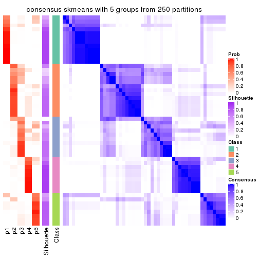
consensus_heatmap(res, k = 6)
Heatmaps for the membership of samples in all partitions to see how consistent they are:
membership_heatmap(res, k = 2)
membership_heatmap(res, k = 3)
membership_heatmap(res, k = 4)
membership_heatmap(res, k = 5)

membership_heatmap(res, k = 6)
As soon as we have had the classes for columns, we can look for signatures which are significantly different between classes which can be candidate marks for certain classes. Following are the heatmaps for signatures.
Signature heatmaps where rows are scaled:
get_signatures(res, k = 2)
get_signatures(res, k = 3)
get_signatures(res, k = 4)
get_signatures(res, k = 5)
get_signatures(res, k = 6)
Signature heatmaps where rows are not scaled:
get_signatures(res, k = 2, scale_rows = FALSE)
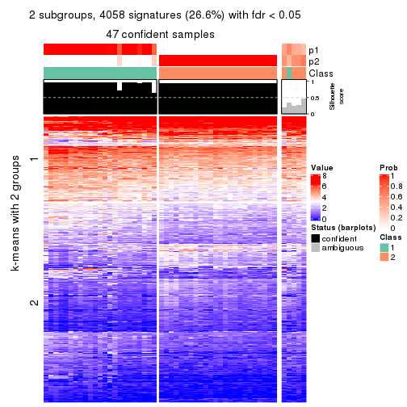
get_signatures(res, k = 3, scale_rows = FALSE)
get_signatures(res, k = 4, scale_rows = FALSE)
get_signatures(res, k = 5, scale_rows = FALSE)
get_signatures(res, k = 6, scale_rows = FALSE)
Compare the overlap of signatures from different k:
compare_signatures(res)
get_signature() returns a data frame invisibly. TO get the list of signatures, the function
call should be assigned to a variable explicitly. In following code, if plot argument is set
to FALSE, no heatmap is plotted while only the differential analysis is performed.
# code only for demonstration
tb = get_signature(res, k = ..., plot = FALSE)
An example of the output of tb is:
#> which_row fdr mean_1 mean_2 scaled_mean_1 scaled_mean_2 km
#> 1 38 0.042760348 8.373488 9.131774 -0.5533452 0.5164555 1
#> 2 40 0.018707592 7.106213 8.469186 -0.6173731 0.5762149 1
#> 3 55 0.019134737 10.221463 11.207825 -0.6159697 0.5749050 1
#> 4 59 0.006059896 5.921854 7.869574 -0.6899429 0.6439467 1
#> 5 60 0.018055526 8.928898 10.211722 -0.6204761 0.5791110 1
#> 6 98 0.009384629 15.714769 14.887706 0.6635654 -0.6193277 2
...
The columns in tb are:
which_row: row indices corresponding to the input matrix.fdr: FDR for the differential test. mean_x: The mean value in group x.scaled_mean_x: The mean value in group x after rows are scaled.km: Row groups if k-means clustering is applied to rows.UMAP plot which shows how samples are separated.
dimension_reduction(res, k = 2, method = "UMAP")
dimension_reduction(res, k = 3, method = "UMAP")
dimension_reduction(res, k = 4, method = "UMAP")
dimension_reduction(res, k = 5, method = "UMAP")
dimension_reduction(res, k = 6, method = "UMAP")
Following heatmap shows how subgroups are split when increasing k:
collect_classes(res)
If matrix rows can be associated to genes, consider to use functional_enrichment(res,
...) to perform function enrichment for the signature genes. See this vignette for more detailed explanations.
The object with results only for a single top-value method and a single partition method can be extracted as:
res = res_list["MAD", "pam"]
# you can also extract it by
# res = res_list["MAD:pam"]
A summary of res and all the functions that can be applied to it:
res
#> A 'ConsensusPartition' object with k = 2, 3, 4, 5, 6.
#> On a matrix with 15239 rows and 52 columns.
#> Top rows (1000, 2000, 3000, 4000, 5000) are extracted by 'MAD' method.
#> Subgroups are detected by 'pam' method.
#> Performed in total 1250 partitions by row resampling.
#> Best k for subgroups seems to be 2.
#>
#> Following methods can be applied to this 'ConsensusPartition' object:
#> [1] "cola_report" "collect_classes" "collect_plots"
#> [4] "collect_stats" "colnames" "compare_signatures"
#> [7] "consensus_heatmap" "dimension_reduction" "functional_enrichment"
#> [10] "get_anno_col" "get_anno" "get_classes"
#> [13] "get_consensus" "get_matrix" "get_membership"
#> [16] "get_param" "get_signatures" "get_stats"
#> [19] "is_best_k" "is_stable_k" "membership_heatmap"
#> [22] "ncol" "nrow" "plot_ecdf"
#> [25] "rownames" "select_partition_number" "show"
#> [28] "suggest_best_k" "test_to_known_factors"
collect_plots() function collects all the plots made from res for all k (number of partitions)
into one single page to provide an easy and fast comparison between different k.
collect_plots(res)
The plots are:
k and the heatmap of
predicted classes for each k.k.k.k.All the plots in panels can be made by individual functions and they are plotted later in this section.
select_partition_number() produces several plots showing different
statistics for choosing “optimized” k. There are following statistics:
k;k, the area increased is defined as \(A_k - A_{k-1}\).The detailed explanations of these statistics can be found in the cola vignette.
Generally speaking, lower PAC score, higher mean silhouette score or higher
concordance corresponds to better partition. Rand index and Jaccard index
measure how similar the current partition is compared to partition with k-1.
If they are too similar, we won't accept k is better than k-1.
select_partition_number(res)
The numeric values for all these statistics can be obtained by get_stats().
get_stats(res)
#> k 1-PAC mean_silhouette concordance area_increased Rand Jaccard
#> 2 2 1.000 0.950 0.975 0.2387 0.762 0.762
#> 3 3 0.395 0.436 0.773 1.2592 0.735 0.657
#> 4 4 0.612 0.819 0.892 0.1821 0.584 0.363
#> 5 5 0.596 0.644 0.795 0.1405 0.925 0.797
#> 6 6 0.763 0.606 0.835 0.0837 0.907 0.690
suggest_best_k() suggests the best \(k\) based on these statistics. The rules are as follows:
suggest_best_k(res)
#> [1] 2
Following shows the table of the partitions (You need to click the show/hide
code output link to see it). The membership matrix (columns with name p*)
is inferred by
clue::cl_consensus()
function with the SE method. Basically the value in the membership matrix
represents the probability to belong to a certain group. The finall class
label for an item is determined with the group with highest probability it
belongs to.
In get_classes() function, the entropy is calculated from the membership
matrix and the silhouette score is calculated from the consensus matrix.
cbind(get_classes(res, k = 2), get_membership(res, k = 2))
#> class entropy silhouette p1 p2
#> SRR633556 2 0.0000 0.982 0.000 1.000
#> SRR633557 2 0.0000 0.982 0.000 1.000
#> SRR633558 2 0.0000 0.982 0.000 1.000
#> SRR633559 2 0.0000 0.982 0.000 1.000
#> SRR633560 2 0.0000 0.982 0.000 1.000
#> SRR633561 2 0.0000 0.982 0.000 1.000
#> SRR633563 1 0.0000 0.906 1.000 0.000
#> SRR633564 1 0.0000 0.906 1.000 0.000
#> SRR633565 1 0.0000 0.906 1.000 0.000
#> SRR633566 1 0.0000 0.906 1.000 0.000
#> SRR633567 1 0.8555 0.635 0.720 0.280
#> SRR633568 2 0.2603 0.958 0.044 0.956
#> SRR633569 2 0.2603 0.958 0.044 0.956
#> SRR633570 1 0.0000 0.906 1.000 0.000
#> SRR633571 1 0.8267 0.670 0.740 0.260
#> SRR633572 2 0.0000 0.982 0.000 1.000
#> SRR633573 2 0.0000 0.982 0.000 1.000
#> SRR633574 2 0.0000 0.982 0.000 1.000
#> SRR633575 2 0.0000 0.982 0.000 1.000
#> SRR633576 2 0.0000 0.982 0.000 1.000
#> SRR633577 2 0.1633 0.971 0.024 0.976
#> SRR633578 2 0.2043 0.966 0.032 0.968
#> SRR633579 2 0.0000 0.982 0.000 1.000
#> SRR633580 2 0.0000 0.982 0.000 1.000
#> SRR633581 2 0.0000 0.982 0.000 1.000
#> SRR633582 2 0.0000 0.982 0.000 1.000
#> SRR633583 2 0.0000 0.982 0.000 1.000
#> SRR633584 2 0.2236 0.963 0.036 0.964
#> SRR633585 2 0.0000 0.982 0.000 1.000
#> SRR633586 2 0.0000 0.982 0.000 1.000
#> SRR633587 2 0.0000 0.982 0.000 1.000
#> SRR633588 2 0.0000 0.982 0.000 1.000
#> SRR633589 2 0.0000 0.982 0.000 1.000
#> SRR633590 2 0.0000 0.982 0.000 1.000
#> SRR633591 2 0.0000 0.982 0.000 1.000
#> SRR633592 2 0.0000 0.982 0.000 1.000
#> SRR633593 2 0.0938 0.976 0.012 0.988
#> SRR633594 2 0.0000 0.982 0.000 1.000
#> SRR633595 2 0.2603 0.958 0.044 0.956
#> SRR633596 2 0.2603 0.958 0.044 0.956
#> SRR633597 2 0.2603 0.958 0.044 0.956
#> SRR633598 2 0.0000 0.982 0.000 1.000
#> SRR633599 2 0.0672 0.978 0.008 0.992
#> SRR633600 2 0.0000 0.982 0.000 1.000
#> SRR633601 2 0.2603 0.958 0.044 0.956
#> SRR633602 2 0.3584 0.935 0.068 0.932
#> SRR633603 2 0.0000 0.982 0.000 1.000
#> SRR633604 2 0.0000 0.982 0.000 1.000
#> SRR633605 2 0.2423 0.960 0.040 0.960
#> SRR633606 2 0.1843 0.968 0.028 0.972
#> SRR633607 2 0.0000 0.982 0.000 1.000
#> SRR633608 2 0.8016 0.673 0.244 0.756
cbind(get_classes(res, k = 3), get_membership(res, k = 3))
#> class entropy silhouette p1 p2 p3
#> SRR633556 2 0.0000 0.6421 0.000 1.000 0.000
#> SRR633557 2 0.0747 0.6378 0.000 0.984 0.016
#> SRR633558 2 0.0000 0.6421 0.000 1.000 0.000
#> SRR633559 2 0.0000 0.6421 0.000 1.000 0.000
#> SRR633560 2 0.1643 0.6253 0.000 0.956 0.044
#> SRR633561 2 0.0747 0.6378 0.000 0.984 0.016
#> SRR633563 1 0.0000 0.7527 1.000 0.000 0.000
#> SRR633564 1 0.0000 0.7527 1.000 0.000 0.000
#> SRR633565 1 0.6260 0.3142 0.552 0.000 0.448
#> SRR633566 1 0.0000 0.7527 1.000 0.000 0.000
#> SRR633567 3 0.9599 -0.1466 0.292 0.236 0.472
#> SRR633568 2 0.6919 0.1962 0.448 0.536 0.016
#> SRR633569 2 0.7159 0.1699 0.448 0.528 0.024
#> SRR633570 1 0.0000 0.7527 1.000 0.000 0.000
#> SRR633571 1 0.4062 0.6007 0.836 0.164 0.000
#> SRR633572 2 0.0000 0.6421 0.000 1.000 0.000
#> SRR633573 2 0.0747 0.6378 0.000 0.984 0.016
#> SRR633574 2 0.0000 0.6421 0.000 1.000 0.000
#> SRR633575 2 0.1860 0.6065 0.000 0.948 0.052
#> SRR633576 2 0.0747 0.6378 0.000 0.984 0.016
#> SRR633577 2 0.6553 0.3748 0.324 0.656 0.020
#> SRR633578 3 0.6309 0.2364 0.000 0.496 0.504
#> SRR633579 2 0.5591 -0.0414 0.000 0.696 0.304
#> SRR633580 3 0.6295 0.4716 0.000 0.472 0.528
#> SRR633581 3 0.6295 0.4716 0.000 0.472 0.528
#> SRR633582 2 0.0747 0.6378 0.000 0.984 0.016
#> SRR633583 2 0.0000 0.6421 0.000 1.000 0.000
#> SRR633584 2 0.3412 0.5740 0.000 0.876 0.124
#> SRR633585 2 0.0747 0.6378 0.000 0.984 0.016
#> SRR633586 2 0.5733 -0.1019 0.000 0.676 0.324
#> SRR633587 2 0.4842 0.2720 0.000 0.776 0.224
#> SRR633588 2 0.0000 0.6421 0.000 1.000 0.000
#> SRR633589 2 0.0000 0.6421 0.000 1.000 0.000
#> SRR633590 2 0.4842 0.2720 0.000 0.776 0.224
#> SRR633591 3 0.6308 0.4621 0.000 0.492 0.508
#> SRR633592 3 0.6305 0.4693 0.000 0.484 0.516
#> SRR633593 2 0.0747 0.6388 0.000 0.984 0.016
#> SRR633594 2 0.0747 0.6378 0.000 0.984 0.016
#> SRR633595 2 0.6505 0.2840 0.004 0.528 0.468
#> SRR633596 2 0.6295 0.2834 0.000 0.528 0.472
#> SRR633597 2 0.8425 0.2565 0.364 0.540 0.096
#> SRR633598 2 0.3941 0.4722 0.000 0.844 0.156
#> SRR633599 2 0.6295 0.2834 0.000 0.528 0.472
#> SRR633600 2 0.6307 0.2744 0.000 0.512 0.488
#> SRR633601 2 0.6308 0.1819 0.000 0.508 0.492
#> SRR633602 2 0.6295 0.2834 0.000 0.528 0.472
#> SRR633603 3 0.6309 0.2364 0.000 0.496 0.504
#> SRR633604 3 0.0747 0.2097 0.000 0.016 0.984
#> SRR633605 2 0.6295 0.2834 0.000 0.528 0.472
#> SRR633606 2 0.6295 0.2834 0.000 0.528 0.472
#> SRR633607 3 0.0000 0.2123 0.000 0.000 1.000
#> SRR633608 1 0.9959 0.0502 0.376 0.324 0.300
cbind(get_classes(res, k = 4), get_membership(res, k = 4))
#> class entropy silhouette p1 p2 p3 p4
#> SRR633556 2 0.1022 0.900 0.032 0.968 0.000 0.000
#> SRR633557 2 0.0000 0.903 0.000 1.000 0.000 0.000
#> SRR633558 2 0.1022 0.900 0.032 0.968 0.000 0.000
#> SRR633559 2 0.1022 0.900 0.032 0.968 0.000 0.000
#> SRR633560 2 0.5113 0.542 0.032 0.704 0.264 0.000
#> SRR633561 2 0.0000 0.903 0.000 1.000 0.000 0.000
#> SRR633563 4 0.0000 1.000 0.000 0.000 0.000 1.000
#> SRR633564 4 0.0000 1.000 0.000 0.000 0.000 1.000
#> SRR633565 4 0.0000 1.000 0.000 0.000 0.000 1.000
#> SRR633566 4 0.0000 1.000 0.000 0.000 0.000 1.000
#> SRR633567 1 0.5113 0.676 0.760 0.000 0.152 0.088
#> SRR633568 1 0.1474 0.761 0.948 0.052 0.000 0.000
#> SRR633569 1 0.0707 0.769 0.980 0.020 0.000 0.000
#> SRR633570 1 0.1474 0.744 0.948 0.000 0.000 0.052
#> SRR633571 1 0.1452 0.758 0.956 0.008 0.000 0.036
#> SRR633572 2 0.1022 0.900 0.032 0.968 0.000 0.000
#> SRR633573 2 0.0000 0.903 0.000 1.000 0.000 0.000
#> SRR633574 2 0.1022 0.900 0.032 0.968 0.000 0.000
#> SRR633575 2 0.0188 0.903 0.004 0.996 0.000 0.000
#> SRR633576 2 0.0000 0.903 0.000 1.000 0.000 0.000
#> SRR633577 1 0.4356 0.569 0.708 0.292 0.000 0.000
#> SRR633578 2 0.4477 0.608 0.000 0.688 0.312 0.000
#> SRR633579 2 0.2408 0.860 0.000 0.896 0.104 0.000
#> SRR633580 2 0.4121 0.811 0.020 0.796 0.184 0.000
#> SRR633581 2 0.3757 0.822 0.020 0.828 0.152 0.000
#> SRR633582 2 0.0000 0.903 0.000 1.000 0.000 0.000
#> SRR633583 2 0.1022 0.900 0.032 0.968 0.000 0.000
#> SRR633584 1 0.4193 0.604 0.732 0.268 0.000 0.000
#> SRR633585 2 0.0000 0.903 0.000 1.000 0.000 0.000
#> SRR633586 2 0.2530 0.857 0.000 0.888 0.112 0.000
#> SRR633587 2 0.2706 0.871 0.020 0.900 0.080 0.000
#> SRR633588 2 0.1022 0.900 0.032 0.968 0.000 0.000
#> SRR633589 2 0.1022 0.900 0.032 0.968 0.000 0.000
#> SRR633590 2 0.2706 0.871 0.020 0.900 0.080 0.000
#> SRR633591 2 0.3806 0.831 0.020 0.824 0.156 0.000
#> SRR633592 2 0.4121 0.811 0.020 0.796 0.184 0.000
#> SRR633593 2 0.3370 0.829 0.048 0.872 0.080 0.000
#> SRR633594 2 0.0000 0.903 0.000 1.000 0.000 0.000
#> SRR633595 3 0.4012 0.771 0.184 0.016 0.800 0.000
#> SRR633596 3 0.4282 0.854 0.060 0.124 0.816 0.000
#> SRR633597 1 0.1488 0.772 0.956 0.032 0.012 0.000
#> SRR633598 2 0.2216 0.871 0.000 0.908 0.092 0.000
#> SRR633599 3 0.4057 0.855 0.032 0.152 0.816 0.000
#> SRR633600 3 0.3444 0.838 0.000 0.184 0.816 0.000
#> SRR633601 1 0.6897 0.365 0.572 0.144 0.284 0.000
#> SRR633602 3 0.3444 0.763 0.184 0.000 0.816 0.000
#> SRR633603 2 0.4431 0.623 0.000 0.696 0.304 0.000
#> SRR633604 3 0.0000 0.770 0.000 0.000 1.000 0.000
#> SRR633605 3 0.4057 0.855 0.032 0.152 0.816 0.000
#> SRR633606 3 0.4057 0.855 0.032 0.152 0.816 0.000
#> SRR633607 3 0.0000 0.770 0.000 0.000 1.000 0.000
#> SRR633608 1 0.5486 0.602 0.720 0.000 0.080 0.200
cbind(get_classes(res, k = 5), get_membership(res, k = 5))
#> class entropy silhouette p1 p2 p3 p4 p5
#> SRR633556 2 0.4082 0.691 0.012 0.740 0.008 0.000 0.240
#> SRR633557 2 0.0000 0.671 0.000 1.000 0.000 0.000 0.000
#> SRR633558 2 0.4082 0.691 0.012 0.740 0.008 0.000 0.240
#> SRR633559 2 0.4082 0.691 0.012 0.740 0.008 0.000 0.240
#> SRR633560 2 0.4851 0.458 0.012 0.560 0.008 0.000 0.420
#> SRR633561 2 0.0000 0.671 0.000 1.000 0.000 0.000 0.000
#> SRR633563 4 0.0000 1.000 0.000 0.000 0.000 1.000 0.000
#> SRR633564 4 0.0000 1.000 0.000 0.000 0.000 1.000 0.000
#> SRR633565 4 0.0000 1.000 0.000 0.000 0.000 1.000 0.000
#> SRR633566 4 0.0000 1.000 0.000 0.000 0.000 1.000 0.000
#> SRR633567 1 0.4385 0.640 0.752 0.000 0.000 0.068 0.180
#> SRR633568 1 0.0404 0.741 0.988 0.012 0.000 0.000 0.000
#> SRR633569 1 0.0000 0.743 1.000 0.000 0.000 0.000 0.000
#> SRR633570 1 0.0404 0.741 0.988 0.000 0.000 0.012 0.000
#> SRR633571 1 0.0404 0.741 0.988 0.000 0.000 0.012 0.000
#> SRR633572 2 0.4082 0.691 0.012 0.740 0.008 0.000 0.240
#> SRR633573 2 0.0000 0.671 0.000 1.000 0.000 0.000 0.000
#> SRR633574 2 0.3807 0.691 0.012 0.748 0.000 0.000 0.240
#> SRR633575 2 0.0000 0.671 0.000 1.000 0.000 0.000 0.000
#> SRR633576 2 0.0290 0.667 0.000 0.992 0.000 0.000 0.008
#> SRR633577 1 0.6800 0.474 0.560 0.044 0.156 0.000 0.240
#> SRR633578 3 0.6357 0.471 0.000 0.288 0.512 0.000 0.200
#> SRR633579 3 0.4300 0.673 0.000 0.476 0.524 0.000 0.000
#> SRR633580 3 0.3274 0.579 0.000 0.220 0.780 0.000 0.000
#> SRR633581 3 0.4219 0.709 0.000 0.416 0.584 0.000 0.000
#> SRR633582 2 0.0000 0.671 0.000 1.000 0.000 0.000 0.000
#> SRR633583 2 0.3807 0.691 0.012 0.748 0.000 0.000 0.240
#> SRR633584 1 0.5685 0.415 0.652 0.220 0.012 0.000 0.116
#> SRR633585 2 0.0000 0.671 0.000 1.000 0.000 0.000 0.000
#> SRR633586 2 0.0963 0.648 0.000 0.964 0.036 0.000 0.000
#> SRR633587 2 0.3612 0.586 0.000 0.732 0.268 0.000 0.000
#> SRR633588 2 0.4189 0.690 0.012 0.736 0.012 0.000 0.240
#> SRR633589 2 0.4189 0.690 0.012 0.736 0.012 0.000 0.240
#> SRR633590 2 0.3612 0.586 0.000 0.732 0.268 0.000 0.000
#> SRR633591 2 0.3612 0.586 0.000 0.732 0.268 0.000 0.000
#> SRR633592 2 0.3966 0.493 0.000 0.664 0.336 0.000 0.000
#> SRR633593 2 0.7210 0.327 0.028 0.432 0.220 0.000 0.320
#> SRR633594 2 0.3274 0.438 0.000 0.780 0.220 0.000 0.000
#> SRR633595 5 0.6109 0.435 0.212 0.000 0.220 0.000 0.568
#> SRR633596 5 0.0000 0.759 0.000 0.000 0.000 0.000 1.000
#> SRR633597 1 0.3707 0.682 0.768 0.004 0.220 0.000 0.008
#> SRR633598 2 0.3607 0.397 0.000 0.752 0.244 0.000 0.004
#> SRR633599 5 0.0000 0.759 0.000 0.000 0.000 0.000 1.000
#> SRR633600 5 0.3109 0.586 0.000 0.200 0.000 0.000 0.800
#> SRR633601 1 0.5455 0.447 0.624 0.080 0.004 0.000 0.292
#> SRR633602 5 0.3424 0.595 0.240 0.000 0.000 0.000 0.760
#> SRR633603 2 0.3710 0.388 0.000 0.784 0.024 0.000 0.192
#> SRR633604 5 0.3424 0.643 0.000 0.000 0.240 0.000 0.760
#> SRR633605 5 0.0000 0.759 0.000 0.000 0.000 0.000 1.000
#> SRR633606 5 0.0000 0.759 0.000 0.000 0.000 0.000 1.000
#> SRR633607 5 0.3857 0.588 0.000 0.000 0.312 0.000 0.688
#> SRR633608 1 0.6225 0.448 0.544 0.000 0.256 0.200 0.000
cbind(get_classes(res, k = 6), get_membership(res, k = 6))
#> class entropy silhouette p1 p2 p3 p4 p5 p6
#> SRR633556 2 0.0000 0.7424 0.000 1.000 0.000 0.000 0.000 0.000
#> SRR633557 2 0.3727 -0.1140 0.000 0.612 0.000 0.000 0.000 0.388
#> SRR633558 2 0.0000 0.7424 0.000 1.000 0.000 0.000 0.000 0.000
#> SRR633559 2 0.0000 0.7424 0.000 1.000 0.000 0.000 0.000 0.000
#> SRR633560 2 0.1387 0.6903 0.000 0.932 0.000 0.000 0.068 0.000
#> SRR633561 2 0.3868 -0.4427 0.000 0.504 0.000 0.000 0.000 0.496
#> SRR633563 1 0.0000 1.0000 1.000 0.000 0.000 0.000 0.000 0.000
#> SRR633564 1 0.0000 1.0000 1.000 0.000 0.000 0.000 0.000 0.000
#> SRR633565 1 0.0000 1.0000 1.000 0.000 0.000 0.000 0.000 0.000
#> SRR633566 1 0.0000 1.0000 1.000 0.000 0.000 0.000 0.000 0.000
#> SRR633567 4 0.4428 0.6078 0.072 0.000 0.000 0.684 0.244 0.000
#> SRR633568 4 0.0000 0.7260 0.000 0.000 0.000 1.000 0.000 0.000
#> SRR633569 4 0.0000 0.7260 0.000 0.000 0.000 1.000 0.000 0.000
#> SRR633570 4 0.0000 0.7260 0.000 0.000 0.000 1.000 0.000 0.000
#> SRR633571 4 0.0000 0.7260 0.000 0.000 0.000 1.000 0.000 0.000
#> SRR633572 2 0.0000 0.7424 0.000 1.000 0.000 0.000 0.000 0.000
#> SRR633573 2 0.0458 0.7346 0.000 0.984 0.000 0.000 0.000 0.016
#> SRR633574 2 0.0000 0.7424 0.000 1.000 0.000 0.000 0.000 0.000
#> SRR633575 2 0.2491 0.5560 0.000 0.836 0.000 0.000 0.000 0.164
#> SRR633576 6 0.4264 0.3071 0.000 0.488 0.000 0.000 0.016 0.496
#> SRR633577 4 0.5629 0.2679 0.000 0.404 0.000 0.448 0.000 0.148
#> SRR633578 3 0.1003 0.7671 0.000 0.000 0.964 0.000 0.020 0.016
#> SRR633579 3 0.0458 0.7818 0.000 0.000 0.984 0.000 0.000 0.016
#> SRR633580 3 0.0000 0.7809 0.000 0.000 1.000 0.000 0.000 0.000
#> SRR633581 3 0.0146 0.7835 0.000 0.000 0.996 0.000 0.000 0.004
#> SRR633582 2 0.3868 -0.4427 0.000 0.504 0.000 0.000 0.000 0.496
#> SRR633583 2 0.0000 0.7424 0.000 1.000 0.000 0.000 0.000 0.000
#> SRR633584 4 0.4306 0.5020 0.000 0.276 0.020 0.684 0.020 0.000
#> SRR633585 2 0.3868 -0.4427 0.000 0.504 0.000 0.000 0.000 0.496
#> SRR633586 6 0.4338 0.2923 0.000 0.484 0.020 0.000 0.000 0.496
#> SRR633587 2 0.1408 0.7224 0.000 0.944 0.036 0.000 0.000 0.020
#> SRR633588 2 0.0547 0.7374 0.000 0.980 0.020 0.000 0.000 0.000
#> SRR633589 2 0.0547 0.7374 0.000 0.980 0.020 0.000 0.000 0.000
#> SRR633590 2 0.2509 0.6695 0.000 0.876 0.036 0.000 0.000 0.088
#> SRR633591 2 0.2509 0.6695 0.000 0.876 0.036 0.000 0.000 0.088
#> SRR633592 3 0.5184 -0.0472 0.000 0.432 0.480 0.000 0.000 0.088
#> SRR633593 2 0.4199 0.1184 0.000 0.568 0.000 0.000 0.016 0.416
#> SRR633594 6 0.1663 0.5107 0.000 0.088 0.000 0.000 0.000 0.912
#> SRR633595 5 0.3789 0.4688 0.000 0.000 0.000 0.000 0.584 0.416
#> SRR633596 5 0.0000 0.9247 0.000 0.000 0.000 0.000 1.000 0.000
#> SRR633597 4 0.3898 0.6207 0.000 0.020 0.000 0.684 0.000 0.296
#> SRR633598 6 0.1663 0.5107 0.000 0.088 0.000 0.000 0.000 0.912
#> SRR633599 5 0.0000 0.9247 0.000 0.000 0.000 0.000 1.000 0.000
#> SRR633600 5 0.0000 0.9247 0.000 0.000 0.000 0.000 1.000 0.000
#> SRR633601 4 0.4918 0.5192 0.000 0.076 0.004 0.612 0.308 0.000
#> SRR633602 5 0.0000 0.9247 0.000 0.000 0.000 0.000 1.000 0.000
#> SRR633603 6 0.5758 0.4762 0.000 0.304 0.000 0.000 0.200 0.496
#> SRR633604 5 0.0000 0.9247 0.000 0.000 0.000 0.000 1.000 0.000
#> SRR633605 5 0.0000 0.9247 0.000 0.000 0.000 0.000 1.000 0.000
#> SRR633606 5 0.0000 0.9247 0.000 0.000 0.000 0.000 1.000 0.000
#> SRR633607 5 0.2378 0.7817 0.000 0.000 0.152 0.000 0.848 0.000
#> SRR633608 4 0.5633 0.5390 0.220 0.000 0.052 0.628 0.000 0.100
Heatmaps for the consensus matrix. It visualizes the probability of two samples to be in a same group.
consensus_heatmap(res, k = 2)
consensus_heatmap(res, k = 3)
consensus_heatmap(res, k = 4)
consensus_heatmap(res, k = 5)
consensus_heatmap(res, k = 6)
Heatmaps for the membership of samples in all partitions to see how consistent they are:
membership_heatmap(res, k = 2)
membership_heatmap(res, k = 3)
membership_heatmap(res, k = 4)
membership_heatmap(res, k = 5)
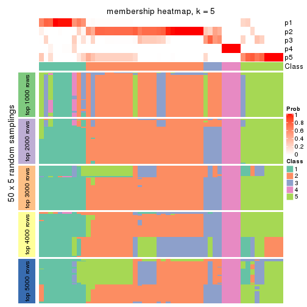
membership_heatmap(res, k = 6)

As soon as we have had the classes for columns, we can look for signatures which are significantly different between classes which can be candidate marks for certain classes. Following are the heatmaps for signatures.
Signature heatmaps where rows are scaled:
get_signatures(res, k = 2)
get_signatures(res, k = 3)
get_signatures(res, k = 4)
get_signatures(res, k = 5)
get_signatures(res, k = 6)
Signature heatmaps where rows are not scaled:
get_signatures(res, k = 2, scale_rows = FALSE)
get_signatures(res, k = 3, scale_rows = FALSE)
get_signatures(res, k = 4, scale_rows = FALSE)

get_signatures(res, k = 5, scale_rows = FALSE)
get_signatures(res, k = 6, scale_rows = FALSE)
Compare the overlap of signatures from different k:
compare_signatures(res)
get_signature() returns a data frame invisibly. TO get the list of signatures, the function
call should be assigned to a variable explicitly. In following code, if plot argument is set
to FALSE, no heatmap is plotted while only the differential analysis is performed.
# code only for demonstration
tb = get_signature(res, k = ..., plot = FALSE)
An example of the output of tb is:
#> which_row fdr mean_1 mean_2 scaled_mean_1 scaled_mean_2 km
#> 1 38 0.042760348 8.373488 9.131774 -0.5533452 0.5164555 1
#> 2 40 0.018707592 7.106213 8.469186 -0.6173731 0.5762149 1
#> 3 55 0.019134737 10.221463 11.207825 -0.6159697 0.5749050 1
#> 4 59 0.006059896 5.921854 7.869574 -0.6899429 0.6439467 1
#> 5 60 0.018055526 8.928898 10.211722 -0.6204761 0.5791110 1
#> 6 98 0.009384629 15.714769 14.887706 0.6635654 -0.6193277 2
...
The columns in tb are:
which_row: row indices corresponding to the input matrix.fdr: FDR for the differential test. mean_x: The mean value in group x.scaled_mean_x: The mean value in group x after rows are scaled.km: Row groups if k-means clustering is applied to rows.UMAP plot which shows how samples are separated.
dimension_reduction(res, k = 2, method = "UMAP")
dimension_reduction(res, k = 3, method = "UMAP")
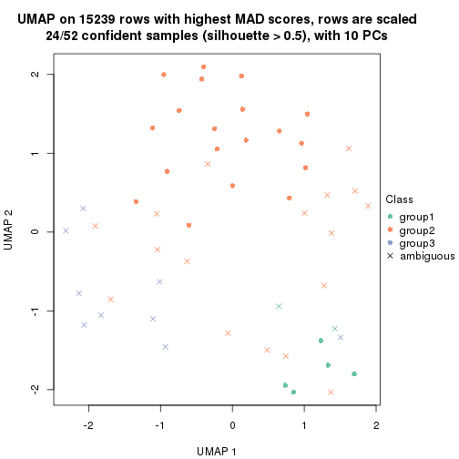
dimension_reduction(res, k = 4, method = "UMAP")
dimension_reduction(res, k = 5, method = "UMAP")

dimension_reduction(res, k = 6, method = "UMAP")
Following heatmap shows how subgroups are split when increasing k:
collect_classes(res)
If matrix rows can be associated to genes, consider to use functional_enrichment(res,
...) to perform function enrichment for the signature genes. See this vignette for more detailed explanations.
The object with results only for a single top-value method and a single partition method can be extracted as:
res = res_list["MAD", "mclust"]
# you can also extract it by
# res = res_list["MAD:mclust"]
A summary of res and all the functions that can be applied to it:
res
#> A 'ConsensusPartition' object with k = 2, 3, 4, 5, 6.
#> On a matrix with 15239 rows and 52 columns.
#> Top rows (1000, 2000, 3000, 4000, 5000) are extracted by 'MAD' method.
#> Subgroups are detected by 'mclust' method.
#> Performed in total 1250 partitions by row resampling.
#> Best k for subgroups seems to be 4.
#>
#> Following methods can be applied to this 'ConsensusPartition' object:
#> [1] "cola_report" "collect_classes" "collect_plots"
#> [4] "collect_stats" "colnames" "compare_signatures"
#> [7] "consensus_heatmap" "dimension_reduction" "functional_enrichment"
#> [10] "get_anno_col" "get_anno" "get_classes"
#> [13] "get_consensus" "get_matrix" "get_membership"
#> [16] "get_param" "get_signatures" "get_stats"
#> [19] "is_best_k" "is_stable_k" "membership_heatmap"
#> [22] "ncol" "nrow" "plot_ecdf"
#> [25] "rownames" "select_partition_number" "show"
#> [28] "suggest_best_k" "test_to_known_factors"
collect_plots() function collects all the plots made from res for all k (number of partitions)
into one single page to provide an easy and fast comparison between different k.
collect_plots(res)
The plots are:
k and the heatmap of
predicted classes for each k.k.k.k.All the plots in panels can be made by individual functions and they are plotted later in this section.
select_partition_number() produces several plots showing different
statistics for choosing “optimized” k. There are following statistics:
k;k, the area increased is defined as \(A_k - A_{k-1}\).The detailed explanations of these statistics can be found in the cola vignette.
Generally speaking, lower PAC score, higher mean silhouette score or higher
concordance corresponds to better partition. Rand index and Jaccard index
measure how similar the current partition is compared to partition with k-1.
If they are too similar, we won't accept k is better than k-1.
select_partition_number(res)
The numeric values for all these statistics can be obtained by get_stats().
get_stats(res)
#> k 1-PAC mean_silhouette concordance area_increased Rand Jaccard
#> 2 2 0.401 0.864 0.895 0.2283 0.792 0.792
#> 3 3 0.235 0.564 0.708 1.5287 0.548 0.445
#> 4 4 0.517 0.683 0.813 0.2499 0.727 0.407
#> 5 5 0.634 0.571 0.762 0.0966 0.842 0.489
#> 6 6 0.681 0.572 0.761 0.0473 0.902 0.570
suggest_best_k() suggests the best \(k\) based on these statistics. The rules are as follows:
suggest_best_k(res)
#> [1] 4
Following shows the table of the partitions (You need to click the show/hide
code output link to see it). The membership matrix (columns with name p*)
is inferred by
clue::cl_consensus()
function with the SE method. Basically the value in the membership matrix
represents the probability to belong to a certain group. The finall class
label for an item is determined with the group with highest probability it
belongs to.
In get_classes() function, the entropy is calculated from the membership
matrix and the silhouette score is calculated from the consensus matrix.
cbind(get_classes(res, k = 2), get_membership(res, k = 2))
#> class entropy silhouette p1 p2
#> SRR633556 2 0.6048 0.809 0.148 0.852
#> SRR633557 2 0.1633 0.892 0.024 0.976
#> SRR633558 2 0.6247 0.803 0.156 0.844
#> SRR633559 2 0.6247 0.803 0.156 0.844
#> SRR633560 2 0.6343 0.801 0.160 0.840
#> SRR633561 2 0.5629 0.763 0.132 0.868
#> SRR633563 1 0.9323 0.973 0.652 0.348
#> SRR633564 1 0.9323 0.973 0.652 0.348
#> SRR633565 1 0.9686 0.928 0.604 0.396
#> SRR633566 1 0.9323 0.973 0.652 0.348
#> SRR633567 2 0.0672 0.894 0.008 0.992
#> SRR633568 2 0.1184 0.893 0.016 0.984
#> SRR633569 2 0.0672 0.894 0.008 0.992
#> SRR633570 1 0.9323 0.973 0.652 0.348
#> SRR633571 1 0.9608 0.946 0.616 0.384
#> SRR633572 2 0.6247 0.803 0.156 0.844
#> SRR633573 2 0.5629 0.763 0.132 0.868
#> SRR633574 2 0.0000 0.896 0.000 1.000
#> SRR633575 2 0.5629 0.763 0.132 0.868
#> SRR633576 2 0.5629 0.763 0.132 0.868
#> SRR633577 2 0.0672 0.894 0.008 0.992
#> SRR633578 2 0.0376 0.896 0.004 0.996
#> SRR633579 2 0.0938 0.896 0.012 0.988
#> SRR633580 2 0.1414 0.891 0.020 0.980
#> SRR633581 2 0.1414 0.891 0.020 0.980
#> SRR633582 2 0.0000 0.896 0.000 1.000
#> SRR633583 2 0.6247 0.803 0.156 0.844
#> SRR633584 2 0.0938 0.894 0.012 0.988
#> SRR633585 2 0.0000 0.896 0.000 1.000
#> SRR633586 2 0.7299 0.758 0.204 0.796
#> SRR633587 2 0.7056 0.767 0.192 0.808
#> SRR633588 2 0.7299 0.758 0.204 0.796
#> SRR633589 2 0.6887 0.776 0.184 0.816
#> SRR633590 2 0.7056 0.767 0.192 0.808
#> SRR633591 2 0.7056 0.767 0.192 0.808
#> SRR633592 2 0.7299 0.758 0.204 0.796
#> SRR633593 2 0.0672 0.894 0.008 0.992
#> SRR633594 2 0.0000 0.896 0.000 1.000
#> SRR633595 2 0.0938 0.894 0.012 0.988
#> SRR633596 2 0.0938 0.894 0.012 0.988
#> SRR633597 2 0.0672 0.894 0.008 0.992
#> SRR633598 2 0.0938 0.894 0.012 0.988
#> SRR633599 2 0.0376 0.896 0.004 0.996
#> SRR633600 2 0.0000 0.896 0.000 1.000
#> SRR633601 2 0.0672 0.894 0.008 0.992
#> SRR633602 2 0.0672 0.894 0.008 0.992
#> SRR633603 2 0.0938 0.894 0.012 0.988
#> SRR633604 2 0.0000 0.896 0.000 1.000
#> SRR633605 2 0.0000 0.896 0.000 1.000
#> SRR633606 2 0.0000 0.896 0.000 1.000
#> SRR633607 2 0.1414 0.891 0.020 0.980
#> SRR633608 2 0.0672 0.894 0.008 0.992
cbind(get_classes(res, k = 3), get_membership(res, k = 3))
#> class entropy silhouette p1 p2 p3
#> SRR633556 2 0.0000 0.6473 0.000 1.000 0.000
#> SRR633557 2 0.8059 -0.5970 0.064 0.492 0.444
#> SRR633558 2 0.0000 0.6473 0.000 1.000 0.000
#> SRR633559 2 0.0000 0.6473 0.000 1.000 0.000
#> SRR633560 2 0.2584 0.6556 0.064 0.928 0.008
#> SRR633561 2 0.5974 0.6553 0.068 0.784 0.148
#> SRR633563 1 0.6264 0.7304 0.724 0.032 0.244
#> SRR633564 1 0.6264 0.7304 0.724 0.032 0.244
#> SRR633565 1 0.3253 0.7175 0.912 0.036 0.052
#> SRR633566 1 0.6264 0.7304 0.724 0.032 0.244
#> SRR633567 1 0.2280 0.6963 0.940 0.052 0.008
#> SRR633568 3 0.9313 0.7567 0.200 0.288 0.512
#> SRR633569 1 0.2356 0.6936 0.928 0.072 0.000
#> SRR633570 1 0.6264 0.7304 0.724 0.032 0.244
#> SRR633571 1 0.6375 0.7301 0.720 0.036 0.244
#> SRR633572 2 0.0747 0.6398 0.016 0.984 0.000
#> SRR633573 2 0.5974 0.6553 0.068 0.784 0.148
#> SRR633574 2 0.5804 0.6567 0.088 0.800 0.112
#> SRR633575 2 0.5974 0.6553 0.068 0.784 0.148
#> SRR633576 2 0.6438 0.6503 0.100 0.764 0.136
#> SRR633577 2 0.6617 0.3390 0.436 0.556 0.008
#> SRR633578 3 0.8749 0.8072 0.140 0.300 0.560
#> SRR633579 3 0.8718 0.7951 0.116 0.364 0.520
#> SRR633580 3 0.8554 0.8147 0.116 0.324 0.560
#> SRR633581 3 0.8554 0.8147 0.116 0.324 0.560
#> SRR633582 2 0.4449 0.6467 0.100 0.860 0.040
#> SRR633583 2 0.0000 0.6473 0.000 1.000 0.000
#> SRR633584 2 0.6598 0.4201 0.428 0.564 0.008
#> SRR633585 2 0.6239 0.6272 0.072 0.768 0.160
#> SRR633586 3 0.6925 0.7152 0.016 0.452 0.532
#> SRR633587 2 0.1878 0.6303 0.004 0.952 0.044
#> SRR633588 3 0.6931 0.7143 0.016 0.456 0.528
#> SRR633589 2 0.2564 0.6439 0.036 0.936 0.028
#> SRR633590 2 0.6341 -0.2092 0.016 0.672 0.312
#> SRR633591 2 0.5763 0.1078 0.016 0.740 0.244
#> SRR633592 3 0.6931 0.7143 0.016 0.456 0.528
#> SRR633593 2 0.6126 0.6102 0.268 0.712 0.020
#> SRR633594 2 0.5519 0.6501 0.120 0.812 0.068
#> SRR633595 2 0.6931 0.3651 0.456 0.528 0.016
#> SRR633596 2 0.6905 0.4012 0.440 0.544 0.016
#> SRR633597 1 0.6309 -0.3724 0.504 0.496 0.000
#> SRR633598 3 0.8790 0.8045 0.128 0.340 0.532
#> SRR633599 2 0.8553 0.4731 0.336 0.552 0.112
#> SRR633600 2 0.5961 0.6489 0.096 0.792 0.112
#> SRR633601 3 0.7974 0.2827 0.436 0.060 0.504
#> SRR633602 1 0.2584 0.6896 0.928 0.064 0.008
#> SRR633603 3 0.8362 0.7794 0.112 0.300 0.588
#> SRR633604 3 0.9484 0.6067 0.200 0.328 0.472
#> SRR633605 2 0.8375 0.4925 0.324 0.572 0.104
#> SRR633606 2 0.8571 0.4701 0.340 0.548 0.112
#> SRR633607 3 0.8233 0.7846 0.116 0.272 0.612
#> SRR633608 1 0.7890 -0.0359 0.564 0.064 0.372
cbind(get_classes(res, k = 4), get_membership(res, k = 4))
#> class entropy silhouette p1 p2 p3 p4
#> SRR633556 2 0.6944 0.572 0.000 0.588 0.196 0.216
#> SRR633557 3 0.3908 0.700 0.000 0.212 0.784 0.004
#> SRR633558 2 0.7220 0.497 0.000 0.544 0.196 0.260
#> SRR633559 2 0.5035 0.713 0.000 0.748 0.196 0.056
#> SRR633560 4 0.6915 0.381 0.000 0.212 0.196 0.592
#> SRR633561 2 0.0188 0.812 0.000 0.996 0.000 0.004
#> SRR633563 1 0.0469 0.920 0.988 0.000 0.000 0.012
#> SRR633564 1 0.0469 0.920 0.988 0.000 0.000 0.012
#> SRR633565 1 0.4500 0.516 0.684 0.000 0.000 0.316
#> SRR633566 1 0.0469 0.920 0.988 0.000 0.000 0.012
#> SRR633567 4 0.4040 0.517 0.248 0.000 0.000 0.752
#> SRR633568 3 0.7631 0.672 0.188 0.168 0.600 0.044
#> SRR633569 4 0.4277 0.487 0.280 0.000 0.000 0.720
#> SRR633570 1 0.0817 0.918 0.976 0.000 0.000 0.024
#> SRR633571 1 0.0921 0.916 0.972 0.000 0.000 0.028
#> SRR633572 2 0.5329 0.367 0.000 0.568 0.420 0.012
#> SRR633573 2 0.0000 0.812 0.000 1.000 0.000 0.000
#> SRR633574 2 0.0524 0.813 0.000 0.988 0.008 0.004
#> SRR633575 2 0.0188 0.812 0.000 0.996 0.000 0.004
#> SRR633576 2 0.1174 0.798 0.000 0.968 0.020 0.012
#> SRR633577 4 0.7112 0.537 0.240 0.088 0.044 0.628
#> SRR633578 3 0.3623 0.739 0.012 0.016 0.856 0.116
#> SRR633579 3 0.1721 0.760 0.008 0.012 0.952 0.028
#> SRR633580 3 0.2707 0.759 0.008 0.016 0.908 0.068
#> SRR633581 3 0.2553 0.761 0.008 0.016 0.916 0.060
#> SRR633582 2 0.2989 0.781 0.004 0.884 0.100 0.012
#> SRR633583 2 0.6580 0.626 0.000 0.632 0.196 0.172
#> SRR633584 4 0.2708 0.713 0.016 0.004 0.076 0.904
#> SRR633585 2 0.0376 0.811 0.000 0.992 0.004 0.004
#> SRR633586 3 0.3545 0.723 0.008 0.164 0.828 0.000
#> SRR633587 4 0.7670 0.288 0.008 0.188 0.308 0.496
#> SRR633588 3 0.3681 0.716 0.008 0.176 0.816 0.000
#> SRR633589 4 0.7484 0.298 0.008 0.248 0.200 0.544
#> SRR633590 3 0.3725 0.713 0.008 0.180 0.812 0.000
#> SRR633591 3 0.3768 0.708 0.008 0.184 0.808 0.000
#> SRR633592 3 0.3725 0.713 0.008 0.180 0.812 0.000
#> SRR633593 4 0.4107 0.705 0.020 0.088 0.044 0.848
#> SRR633594 2 0.3130 0.785 0.012 0.896 0.052 0.040
#> SRR633595 4 0.1004 0.711 0.024 0.000 0.004 0.972
#> SRR633596 4 0.1082 0.713 0.020 0.004 0.004 0.972
#> SRR633597 4 0.0921 0.710 0.028 0.000 0.000 0.972
#> SRR633598 3 0.5293 0.762 0.016 0.104 0.776 0.104
#> SRR633599 4 0.3323 0.720 0.000 0.060 0.064 0.876
#> SRR633600 2 0.1042 0.805 0.000 0.972 0.008 0.020
#> SRR633601 3 0.5510 0.503 0.024 0.000 0.600 0.376
#> SRR633602 4 0.4008 0.520 0.244 0.000 0.000 0.756
#> SRR633603 3 0.4955 0.677 0.004 0.272 0.708 0.016
#> SRR633604 3 0.5022 0.737 0.004 0.080 0.776 0.140
#> SRR633605 4 0.3547 0.715 0.000 0.064 0.072 0.864
#> SRR633606 4 0.3398 0.719 0.000 0.060 0.068 0.872
#> SRR633607 3 0.4444 0.678 0.008 0.184 0.788 0.020
#> SRR633608 3 0.6928 0.369 0.116 0.000 0.512 0.372
cbind(get_classes(res, k = 5), get_membership(res, k = 5))
#> class entropy silhouette p1 p2 p3 p4 p5
#> SRR633556 4 0.7188 0.279 0.000 0.352 0.028 0.416 0.204
#> SRR633557 4 0.4652 0.457 0.000 0.056 0.188 0.744 0.012
#> SRR633558 4 0.7174 0.274 0.000 0.356 0.028 0.416 0.200
#> SRR633559 2 0.6540 -0.262 0.000 0.448 0.032 0.428 0.092
#> SRR633560 5 0.5985 -0.207 0.000 0.052 0.028 0.412 0.508
#> SRR633561 2 0.0162 0.876 0.000 0.996 0.000 0.004 0.000
#> SRR633563 1 0.0000 0.895 1.000 0.000 0.000 0.000 0.000
#> SRR633564 1 0.0000 0.895 1.000 0.000 0.000 0.000 0.000
#> SRR633565 1 0.4800 0.234 0.604 0.000 0.000 0.028 0.368
#> SRR633566 1 0.0703 0.877 0.976 0.000 0.024 0.000 0.000
#> SRR633567 5 0.5423 0.476 0.244 0.000 0.000 0.112 0.644
#> SRR633568 3 0.6054 0.520 0.200 0.200 0.596 0.004 0.000
#> SRR633569 5 0.5398 0.482 0.240 0.000 0.000 0.112 0.648
#> SRR633570 1 0.0000 0.895 1.000 0.000 0.000 0.000 0.000
#> SRR633571 1 0.0000 0.895 1.000 0.000 0.000 0.000 0.000
#> SRR633572 4 0.5907 0.459 0.000 0.284 0.124 0.588 0.004
#> SRR633573 2 0.0162 0.876 0.000 0.996 0.000 0.004 0.000
#> SRR633574 2 0.2127 0.774 0.000 0.892 0.000 0.108 0.000
#> SRR633575 2 0.0162 0.876 0.000 0.996 0.000 0.004 0.000
#> SRR633576 2 0.0609 0.867 0.000 0.980 0.020 0.000 0.000
#> SRR633577 5 0.5963 0.515 0.228 0.004 0.036 0.080 0.652
#> SRR633578 3 0.2233 0.749 0.000 0.000 0.892 0.004 0.104
#> SRR633579 3 0.4203 0.710 0.000 0.000 0.760 0.188 0.052
#> SRR633580 3 0.2797 0.766 0.000 0.000 0.880 0.060 0.060
#> SRR633581 3 0.2729 0.765 0.000 0.000 0.884 0.060 0.056
#> SRR633582 2 0.1603 0.856 0.004 0.948 0.032 0.004 0.012
#> SRR633583 4 0.6781 0.178 0.000 0.416 0.028 0.428 0.128
#> SRR633584 5 0.2445 0.621 0.004 0.000 0.004 0.108 0.884
#> SRR633585 2 0.0162 0.876 0.000 0.996 0.000 0.004 0.000
#> SRR633586 3 0.4251 0.401 0.000 0.004 0.624 0.372 0.000
#> SRR633587 4 0.3431 0.532 0.000 0.020 0.008 0.828 0.144
#> SRR633588 4 0.3231 0.468 0.000 0.004 0.196 0.800 0.000
#> SRR633589 4 0.6036 0.223 0.000 0.100 0.004 0.460 0.436
#> SRR633590 4 0.3123 0.481 0.000 0.004 0.184 0.812 0.000
#> SRR633591 4 0.3048 0.487 0.000 0.004 0.176 0.820 0.000
#> SRR633592 4 0.3266 0.462 0.000 0.004 0.200 0.796 0.000
#> SRR633593 5 0.1932 0.672 0.008 0.004 0.032 0.020 0.936
#> SRR633594 2 0.2338 0.828 0.016 0.916 0.032 0.000 0.036
#> SRR633595 5 0.0451 0.673 0.008 0.000 0.000 0.004 0.988
#> SRR633596 5 0.0162 0.675 0.000 0.000 0.004 0.000 0.996
#> SRR633597 5 0.2570 0.653 0.028 0.000 0.000 0.084 0.888
#> SRR633598 3 0.4228 0.742 0.000 0.004 0.788 0.100 0.108
#> SRR633599 5 0.3435 0.643 0.000 0.004 0.156 0.020 0.820
#> SRR633600 2 0.2313 0.844 0.000 0.916 0.032 0.040 0.012
#> SRR633601 5 0.6857 -0.182 0.004 0.000 0.348 0.252 0.396
#> SRR633602 5 0.5398 0.480 0.240 0.000 0.000 0.112 0.648
#> SRR633603 3 0.4114 0.679 0.000 0.176 0.776 0.044 0.004
#> SRR633604 3 0.5611 0.356 0.000 0.008 0.528 0.408 0.056
#> SRR633605 5 0.3427 0.626 0.000 0.000 0.192 0.012 0.796
#> SRR633606 5 0.3320 0.642 0.000 0.004 0.164 0.012 0.820
#> SRR633607 3 0.2924 0.753 0.004 0.044 0.892 0.024 0.036
#> SRR633608 5 0.7406 0.103 0.092 0.000 0.380 0.108 0.420
cbind(get_classes(res, k = 6), get_membership(res, k = 6))
#> class entropy silhouette p1 p2 p3 p4 p5 p6
#> SRR633556 4 0.7653 0.186894 0.000 0.244 0.000 0.324 0.212 0.220
#> SRR633557 2 0.4126 0.739721 0.000 0.804 0.044 0.092 0.020 0.040
#> SRR633558 4 0.7601 0.168248 0.000 0.252 0.000 0.320 0.260 0.168
#> SRR633559 4 0.6988 0.095992 0.000 0.296 0.000 0.324 0.056 0.324
#> SRR633560 5 0.6020 0.150337 0.000 0.248 0.012 0.228 0.512 0.000
#> SRR633561 6 0.0000 0.934714 0.000 0.000 0.000 0.000 0.000 1.000
#> SRR633563 1 0.0000 0.877506 1.000 0.000 0.000 0.000 0.000 0.000
#> SRR633564 1 0.0000 0.877506 1.000 0.000 0.000 0.000 0.000 0.000
#> SRR633565 1 0.5877 0.135949 0.444 0.000 0.004 0.380 0.172 0.000
#> SRR633566 1 0.0000 0.877506 1.000 0.000 0.000 0.000 0.000 0.000
#> SRR633567 4 0.4688 0.003816 0.064 0.000 0.004 0.644 0.288 0.000
#> SRR633568 3 0.5413 0.486926 0.200 0.000 0.600 0.000 0.004 0.196
#> SRR633569 5 0.5338 0.024893 0.080 0.000 0.008 0.444 0.468 0.000
#> SRR633570 1 0.0146 0.876680 0.996 0.000 0.000 0.000 0.004 0.000
#> SRR633571 1 0.0146 0.876680 0.996 0.000 0.000 0.000 0.004 0.000
#> SRR633572 2 0.5312 0.477005 0.000 0.636 0.032 0.248 0.000 0.084
#> SRR633573 6 0.0000 0.934714 0.000 0.000 0.000 0.000 0.000 1.000
#> SRR633574 6 0.2126 0.857452 0.000 0.072 0.000 0.020 0.004 0.904
#> SRR633575 6 0.0000 0.934714 0.000 0.000 0.000 0.000 0.000 1.000
#> SRR633576 6 0.1265 0.920507 0.000 0.000 0.044 0.008 0.000 0.948
#> SRR633577 5 0.5692 0.343035 0.084 0.000 0.052 0.264 0.600 0.000
#> SRR633578 3 0.1663 0.773105 0.000 0.000 0.912 0.000 0.088 0.000
#> SRR633579 3 0.3123 0.757117 0.000 0.088 0.836 0.000 0.076 0.000
#> SRR633580 3 0.1951 0.777938 0.000 0.016 0.908 0.000 0.076 0.000
#> SRR633581 3 0.1858 0.777495 0.000 0.012 0.912 0.000 0.076 0.000
#> SRR633582 6 0.2231 0.884462 0.000 0.000 0.004 0.068 0.028 0.900
#> SRR633583 4 0.7401 0.107879 0.000 0.316 0.000 0.324 0.120 0.240
#> SRR633584 5 0.1338 0.608509 0.004 0.032 0.008 0.004 0.952 0.000
#> SRR633585 6 0.0000 0.934714 0.000 0.000 0.000 0.000 0.000 1.000
#> SRR633586 3 0.4824 0.196959 0.000 0.420 0.524 0.056 0.000 0.000
#> SRR633587 2 0.1340 0.774616 0.000 0.948 0.004 0.008 0.040 0.000
#> SRR633588 2 0.1327 0.812366 0.000 0.936 0.064 0.000 0.000 0.000
#> SRR633589 5 0.5721 0.122065 0.000 0.368 0.000 0.148 0.480 0.004
#> SRR633590 2 0.0937 0.816050 0.000 0.960 0.040 0.000 0.000 0.000
#> SRR633591 2 0.0937 0.816050 0.000 0.960 0.040 0.000 0.000 0.000
#> SRR633592 2 0.1327 0.812366 0.000 0.936 0.064 0.000 0.000 0.000
#> SRR633593 5 0.1887 0.610605 0.012 0.000 0.048 0.016 0.924 0.000
#> SRR633594 6 0.2118 0.885265 0.020 0.000 0.012 0.004 0.048 0.916
#> SRR633595 5 0.0665 0.606651 0.008 0.000 0.004 0.008 0.980 0.000
#> SRR633596 5 0.2595 0.564784 0.000 0.000 0.004 0.160 0.836 0.000
#> SRR633597 5 0.3594 0.462392 0.020 0.000 0.008 0.204 0.768 0.000
#> SRR633598 3 0.4573 0.576094 0.000 0.236 0.676 0.000 0.088 0.000
#> SRR633599 5 0.3408 0.588383 0.000 0.000 0.152 0.048 0.800 0.000
#> SRR633600 6 0.2998 0.863493 0.000 0.004 0.068 0.076 0.000 0.852
#> SRR633601 4 0.6934 0.053916 0.000 0.256 0.084 0.452 0.208 0.000
#> SRR633602 4 0.4617 -0.000376 0.056 0.000 0.004 0.644 0.296 0.000
#> SRR633603 3 0.3895 0.707096 0.000 0.060 0.800 0.032 0.000 0.108
#> SRR633604 2 0.5423 0.198618 0.000 0.552 0.356 0.028 0.064 0.000
#> SRR633605 5 0.4769 0.548692 0.000 0.000 0.164 0.160 0.676 0.000
#> SRR633606 5 0.4566 0.564479 0.000 0.000 0.160 0.140 0.700 0.000
#> SRR633607 3 0.2361 0.738870 0.000 0.000 0.896 0.032 0.008 0.064
#> SRR633608 4 0.6068 0.027430 0.080 0.000 0.096 0.580 0.244 0.000
Heatmaps for the consensus matrix. It visualizes the probability of two samples to be in a same group.
consensus_heatmap(res, k = 2)

consensus_heatmap(res, k = 3)
consensus_heatmap(res, k = 4)
consensus_heatmap(res, k = 5)
consensus_heatmap(res, k = 6)
Heatmaps for the membership of samples in all partitions to see how consistent they are:
membership_heatmap(res, k = 2)
membership_heatmap(res, k = 3)
membership_heatmap(res, k = 4)
membership_heatmap(res, k = 5)
membership_heatmap(res, k = 6)
As soon as we have had the classes for columns, we can look for signatures which are significantly different between classes which can be candidate marks for certain classes. Following are the heatmaps for signatures.
Signature heatmaps where rows are scaled:
get_signatures(res, k = 2)
get_signatures(res, k = 3)
get_signatures(res, k = 4)
get_signatures(res, k = 5)
get_signatures(res, k = 6)
Signature heatmaps where rows are not scaled:
get_signatures(res, k = 2, scale_rows = FALSE)
get_signatures(res, k = 3, scale_rows = FALSE)
get_signatures(res, k = 4, scale_rows = FALSE)

get_signatures(res, k = 5, scale_rows = FALSE)
get_signatures(res, k = 6, scale_rows = FALSE)
Compare the overlap of signatures from different k:
compare_signatures(res)
get_signature() returns a data frame invisibly. TO get the list of signatures, the function
call should be assigned to a variable explicitly. In following code, if plot argument is set
to FALSE, no heatmap is plotted while only the differential analysis is performed.
# code only for demonstration
tb = get_signature(res, k = ..., plot = FALSE)
An example of the output of tb is:
#> which_row fdr mean_1 mean_2 scaled_mean_1 scaled_mean_2 km
#> 1 38 0.042760348 8.373488 9.131774 -0.5533452 0.5164555 1
#> 2 40 0.018707592 7.106213 8.469186 -0.6173731 0.5762149 1
#> 3 55 0.019134737 10.221463 11.207825 -0.6159697 0.5749050 1
#> 4 59 0.006059896 5.921854 7.869574 -0.6899429 0.6439467 1
#> 5 60 0.018055526 8.928898 10.211722 -0.6204761 0.5791110 1
#> 6 98 0.009384629 15.714769 14.887706 0.6635654 -0.6193277 2
...
The columns in tb are:
which_row: row indices corresponding to the input matrix.fdr: FDR for the differential test. mean_x: The mean value in group x.scaled_mean_x: The mean value in group x after rows are scaled.km: Row groups if k-means clustering is applied to rows.UMAP plot which shows how samples are separated.
dimension_reduction(res, k = 2, method = "UMAP")
dimension_reduction(res, k = 3, method = "UMAP")
dimension_reduction(res, k = 4, method = "UMAP")
dimension_reduction(res, k = 5, method = "UMAP")
dimension_reduction(res, k = 6, method = "UMAP")

Following heatmap shows how subgroups are split when increasing k:
collect_classes(res)
If matrix rows can be associated to genes, consider to use functional_enrichment(res,
...) to perform function enrichment for the signature genes. See this vignette for more detailed explanations.
The object with results only for a single top-value method and a single partition method can be extracted as:
res = res_list["MAD", "NMF"]
# you can also extract it by
# res = res_list["MAD:NMF"]
A summary of res and all the functions that can be applied to it:
res
#> A 'ConsensusPartition' object with k = 2, 3, 4, 5, 6.
#> On a matrix with 15239 rows and 52 columns.
#> Top rows (1000, 2000, 3000, 4000, 5000) are extracted by 'MAD' method.
#> Subgroups are detected by 'NMF' method.
#> Performed in total 1250 partitions by row resampling.
#> Best k for subgroups seems to be 2.
#>
#> Following methods can be applied to this 'ConsensusPartition' object:
#> [1] "cola_report" "collect_classes" "collect_plots"
#> [4] "collect_stats" "colnames" "compare_signatures"
#> [7] "consensus_heatmap" "dimension_reduction" "functional_enrichment"
#> [10] "get_anno_col" "get_anno" "get_classes"
#> [13] "get_consensus" "get_matrix" "get_membership"
#> [16] "get_param" "get_signatures" "get_stats"
#> [19] "is_best_k" "is_stable_k" "membership_heatmap"
#> [22] "ncol" "nrow" "plot_ecdf"
#> [25] "rownames" "select_partition_number" "show"
#> [28] "suggest_best_k" "test_to_known_factors"
collect_plots() function collects all the plots made from res for all k (number of partitions)
into one single page to provide an easy and fast comparison between different k.
collect_plots(res)
The plots are:
k and the heatmap of
predicted classes for each k.k.k.k.All the plots in panels can be made by individual functions and they are plotted later in this section.
select_partition_number() produces several plots showing different
statistics for choosing “optimized” k. There are following statistics:
k;k, the area increased is defined as \(A_k - A_{k-1}\).The detailed explanations of these statistics can be found in the cola vignette.
Generally speaking, lower PAC score, higher mean silhouette score or higher
concordance corresponds to better partition. Rand index and Jaccard index
measure how similar the current partition is compared to partition with k-1.
If they are too similar, we won't accept k is better than k-1.
select_partition_number(res)
The numeric values for all these statistics can be obtained by get_stats().
get_stats(res)
#> k 1-PAC mean_silhouette concordance area_increased Rand Jaccard
#> 2 2 0.732 0.850 0.938 0.4827 0.509 0.509
#> 3 3 0.504 0.683 0.828 0.3549 0.668 0.440
#> 4 4 0.465 0.490 0.709 0.1448 0.767 0.433
#> 5 5 0.599 0.602 0.745 0.0689 0.871 0.539
#> 6 6 0.677 0.634 0.791 0.0382 0.885 0.517
suggest_best_k() suggests the best \(k\) based on these statistics. The rules are as follows:
suggest_best_k(res)
#> [1] 2
Following shows the table of the partitions (You need to click the show/hide
code output link to see it). The membership matrix (columns with name p*)
is inferred by
clue::cl_consensus()
function with the SE method. Basically the value in the membership matrix
represents the probability to belong to a certain group. The finall class
label for an item is determined with the group with highest probability it
belongs to.
In get_classes() function, the entropy is calculated from the membership
matrix and the silhouette score is calculated from the consensus matrix.
cbind(get_classes(res, k = 2), get_membership(res, k = 2))
#> class entropy silhouette p1 p2
#> SRR633556 2 0.0000 0.953 0.000 1.000
#> SRR633557 2 0.0000 0.953 0.000 1.000
#> SRR633558 2 0.0000 0.953 0.000 1.000
#> SRR633559 2 0.0000 0.953 0.000 1.000
#> SRR633560 2 0.1184 0.939 0.016 0.984
#> SRR633561 2 0.0000 0.953 0.000 1.000
#> SRR633563 1 0.0000 0.892 1.000 0.000
#> SRR633564 1 0.0000 0.892 1.000 0.000
#> SRR633565 1 0.0000 0.892 1.000 0.000
#> SRR633566 1 0.0000 0.892 1.000 0.000
#> SRR633567 1 0.0000 0.892 1.000 0.000
#> SRR633568 2 0.9833 0.222 0.424 0.576
#> SRR633569 1 0.0000 0.892 1.000 0.000
#> SRR633570 1 0.0000 0.892 1.000 0.000
#> SRR633571 1 0.0000 0.892 1.000 0.000
#> SRR633572 2 0.0000 0.953 0.000 1.000
#> SRR633573 2 0.0000 0.953 0.000 1.000
#> SRR633574 2 0.0000 0.953 0.000 1.000
#> SRR633575 2 0.0000 0.953 0.000 1.000
#> SRR633576 2 0.0000 0.953 0.000 1.000
#> SRR633577 1 0.4562 0.835 0.904 0.096
#> SRR633578 2 0.9866 0.190 0.432 0.568
#> SRR633579 2 0.0000 0.953 0.000 1.000
#> SRR633580 2 0.0000 0.953 0.000 1.000
#> SRR633581 2 0.0000 0.953 0.000 1.000
#> SRR633582 2 0.0000 0.953 0.000 1.000
#> SRR633583 2 0.0000 0.953 0.000 1.000
#> SRR633584 1 0.9129 0.564 0.672 0.328
#> SRR633585 2 0.0000 0.953 0.000 1.000
#> SRR633586 2 0.0000 0.953 0.000 1.000
#> SRR633587 2 0.0000 0.953 0.000 1.000
#> SRR633588 2 0.0000 0.953 0.000 1.000
#> SRR633589 2 0.0000 0.953 0.000 1.000
#> SRR633590 2 0.0000 0.953 0.000 1.000
#> SRR633591 2 0.0000 0.953 0.000 1.000
#> SRR633592 2 0.0000 0.953 0.000 1.000
#> SRR633593 1 0.7219 0.748 0.800 0.200
#> SRR633594 1 0.9323 0.504 0.652 0.348
#> SRR633595 1 0.0000 0.892 1.000 0.000
#> SRR633596 1 0.0000 0.892 1.000 0.000
#> SRR633597 1 0.0000 0.892 1.000 0.000
#> SRR633598 2 0.6887 0.739 0.184 0.816
#> SRR633599 1 0.9732 0.414 0.596 0.404
#> SRR633600 2 0.0938 0.943 0.012 0.988
#> SRR633601 1 0.9754 0.311 0.592 0.408
#> SRR633602 1 0.0000 0.892 1.000 0.000
#> SRR633603 2 0.0000 0.953 0.000 1.000
#> SRR633604 2 0.0000 0.953 0.000 1.000
#> SRR633605 1 0.7528 0.719 0.784 0.216
#> SRR633606 1 0.1184 0.885 0.984 0.016
#> SRR633607 2 0.6343 0.773 0.160 0.840
#> SRR633608 1 0.0000 0.892 1.000 0.000
cbind(get_classes(res, k = 3), get_membership(res, k = 3))
#> class entropy silhouette p1 p2 p3
#> SRR633556 2 0.4887 0.7231 0.000 0.772 0.228
#> SRR633557 3 0.0747 0.7896 0.000 0.016 0.984
#> SRR633558 2 0.5363 0.6830 0.000 0.724 0.276
#> SRR633559 2 0.5591 0.6391 0.000 0.696 0.304
#> SRR633560 2 0.4399 0.7483 0.000 0.812 0.188
#> SRR633561 3 0.0237 0.7905 0.000 0.004 0.996
#> SRR633563 1 0.0747 0.9322 0.984 0.016 0.000
#> SRR633564 1 0.0747 0.9322 0.984 0.016 0.000
#> SRR633565 1 0.2165 0.9130 0.936 0.064 0.000
#> SRR633566 1 0.0747 0.9322 0.984 0.016 0.000
#> SRR633567 1 0.3412 0.8696 0.876 0.124 0.000
#> SRR633568 3 0.8573 0.2351 0.372 0.104 0.524
#> SRR633569 1 0.2625 0.9078 0.916 0.084 0.000
#> SRR633570 1 0.2261 0.9164 0.932 0.068 0.000
#> SRR633571 1 0.2590 0.9132 0.924 0.072 0.004
#> SRR633572 3 0.2625 0.7550 0.000 0.084 0.916
#> SRR633573 3 0.6302 -0.1976 0.000 0.480 0.520
#> SRR633574 3 0.6260 -0.1069 0.000 0.448 0.552
#> SRR633575 3 0.0747 0.7897 0.000 0.016 0.984
#> SRR633576 3 0.0747 0.7886 0.000 0.016 0.984
#> SRR633577 1 0.2918 0.9130 0.924 0.044 0.032
#> SRR633578 3 0.8069 0.4969 0.244 0.120 0.636
#> SRR633579 3 0.0424 0.7903 0.000 0.008 0.992
#> SRR633580 3 0.1643 0.7755 0.000 0.044 0.956
#> SRR633581 3 0.0000 0.7903 0.000 0.000 1.000
#> SRR633582 3 0.4842 0.5718 0.000 0.224 0.776
#> SRR633583 2 0.6291 0.2828 0.000 0.532 0.468
#> SRR633584 2 0.3644 0.7538 0.004 0.872 0.124
#> SRR633585 3 0.0237 0.7905 0.000 0.004 0.996
#> SRR633586 3 0.0892 0.7880 0.000 0.020 0.980
#> SRR633587 2 0.4399 0.7482 0.000 0.812 0.188
#> SRR633588 3 0.1289 0.7847 0.000 0.032 0.968
#> SRR633589 2 0.4346 0.7493 0.000 0.816 0.184
#> SRR633590 3 0.5926 0.3166 0.000 0.356 0.644
#> SRR633591 2 0.4702 0.7369 0.000 0.788 0.212
#> SRR633592 3 0.2796 0.7513 0.000 0.092 0.908
#> SRR633593 2 0.2689 0.7480 0.032 0.932 0.036
#> SRR633594 3 0.7056 0.5260 0.300 0.044 0.656
#> SRR633595 2 0.3192 0.7060 0.112 0.888 0.000
#> SRR633596 2 0.4002 0.6793 0.160 0.840 0.000
#> SRR633597 2 0.4555 0.6326 0.200 0.800 0.000
#> SRR633598 3 0.5851 0.6797 0.068 0.140 0.792
#> SRR633599 2 0.3456 0.7487 0.036 0.904 0.060
#> SRR633600 2 0.4002 0.7342 0.000 0.840 0.160
#> SRR633601 2 0.9995 -0.0477 0.332 0.348 0.320
#> SRR633602 1 0.3752 0.8519 0.856 0.144 0.000
#> SRR633603 3 0.2448 0.7571 0.000 0.076 0.924
#> SRR633604 2 0.5733 0.5285 0.000 0.676 0.324
#> SRR633605 2 0.5235 0.6789 0.152 0.812 0.036
#> SRR633606 2 0.4802 0.6805 0.156 0.824 0.020
#> SRR633607 3 0.5471 0.6813 0.060 0.128 0.812
#> SRR633608 1 0.1753 0.9300 0.952 0.048 0.000
cbind(get_classes(res, k = 4), get_membership(res, k = 4))
#> class entropy silhouette p1 p2 p3 p4
#> SRR633556 2 0.6737 0.0696 0.000 0.532 0.100 0.368
#> SRR633557 2 0.5163 -0.2159 0.000 0.516 0.480 0.004
#> SRR633558 2 0.5200 0.4858 0.000 0.744 0.072 0.184
#> SRR633559 2 0.5910 0.3796 0.000 0.672 0.084 0.244
#> SRR633560 4 0.6678 0.1612 0.000 0.412 0.088 0.500
#> SRR633561 2 0.3801 0.5048 0.000 0.780 0.220 0.000
#> SRR633563 1 0.2706 0.9030 0.900 0.000 0.020 0.080
#> SRR633564 1 0.2706 0.9030 0.900 0.000 0.020 0.080
#> SRR633565 1 0.3335 0.8758 0.860 0.000 0.020 0.120
#> SRR633566 1 0.2706 0.9030 0.900 0.000 0.020 0.080
#> SRR633567 4 0.5126 -0.0712 0.444 0.000 0.004 0.552
#> SRR633568 3 0.5838 0.0468 0.444 0.004 0.528 0.024
#> SRR633569 1 0.2739 0.8484 0.904 0.000 0.060 0.036
#> SRR633570 1 0.2385 0.8559 0.920 0.000 0.052 0.028
#> SRR633571 1 0.2443 0.8531 0.916 0.000 0.060 0.024
#> SRR633572 2 0.3402 0.5512 0.000 0.832 0.164 0.004
#> SRR633573 2 0.0707 0.6319 0.000 0.980 0.020 0.000
#> SRR633574 2 0.0895 0.6342 0.000 0.976 0.020 0.004
#> SRR633575 2 0.1302 0.6268 0.000 0.956 0.044 0.000
#> SRR633576 2 0.4722 0.4126 0.000 0.692 0.300 0.008
#> SRR633577 1 0.2450 0.8987 0.912 0.016 0.000 0.072
#> SRR633578 3 0.6465 0.5077 0.144 0.056 0.712 0.088
#> SRR633579 3 0.2814 0.6406 0.000 0.132 0.868 0.000
#> SRR633580 3 0.2976 0.6414 0.000 0.120 0.872 0.008
#> SRR633581 3 0.2831 0.6415 0.000 0.120 0.876 0.004
#> SRR633582 2 0.2744 0.6258 0.012 0.912 0.052 0.024
#> SRR633583 2 0.3504 0.6012 0.008 0.872 0.084 0.036
#> SRR633584 4 0.6228 0.4796 0.008 0.180 0.124 0.688
#> SRR633585 2 0.4431 0.4067 0.000 0.696 0.304 0.000
#> SRR633586 3 0.3400 0.6227 0.000 0.180 0.820 0.000
#> SRR633587 4 0.7052 0.2075 0.000 0.372 0.128 0.500
#> SRR633588 3 0.3873 0.5820 0.000 0.228 0.772 0.000
#> SRR633589 4 0.7081 0.1022 0.000 0.424 0.124 0.452
#> SRR633590 3 0.6089 0.3691 0.000 0.328 0.608 0.064
#> SRR633591 3 0.7838 0.0579 0.000 0.316 0.404 0.280
#> SRR633592 3 0.4088 0.5822 0.000 0.232 0.764 0.004
#> SRR633593 4 0.4963 0.5698 0.076 0.120 0.012 0.792
#> SRR633594 2 0.7231 0.2661 0.104 0.560 0.316 0.020
#> SRR633595 4 0.1229 0.6186 0.020 0.008 0.004 0.968
#> SRR633596 4 0.1109 0.6166 0.028 0.000 0.004 0.968
#> SRR633597 4 0.5757 0.5119 0.236 0.028 0.032 0.704
#> SRR633598 3 0.5316 0.5583 0.012 0.088 0.768 0.132
#> SRR633599 4 0.2635 0.6058 0.000 0.076 0.020 0.904
#> SRR633600 2 0.5990 0.3476 0.000 0.644 0.072 0.284
#> SRR633601 4 0.6042 0.2000 0.052 0.000 0.368 0.580
#> SRR633602 4 0.5257 -0.0832 0.444 0.000 0.008 0.548
#> SRR633603 3 0.5069 0.4004 0.000 0.320 0.664 0.016
#> SRR633604 4 0.6124 0.4732 0.004 0.112 0.200 0.684
#> SRR633605 4 0.5100 0.5500 0.016 0.132 0.068 0.784
#> SRR633606 4 0.5081 0.5225 0.008 0.184 0.048 0.760
#> SRR633607 3 0.6916 0.1666 0.008 0.380 0.524 0.088
#> SRR633608 1 0.4274 0.8538 0.820 0.000 0.072 0.108
cbind(get_classes(res, k = 5), get_membership(res, k = 5))
#> class entropy silhouette p1 p2 p3 p4 p5
#> SRR633556 2 0.360 0.6983 0.000 0.836 0.008 0.056 0.100
#> SRR633557 2 0.643 0.2389 0.000 0.484 0.196 0.320 0.000
#> SRR633558 2 0.327 0.6412 0.000 0.780 0.000 0.220 0.000
#> SRR633559 2 0.352 0.6935 0.000 0.824 0.008 0.144 0.024
#> SRR633560 2 0.443 0.6039 0.000 0.712 0.004 0.028 0.256
#> SRR633561 4 0.285 0.6937 0.000 0.172 0.000 0.828 0.000
#> SRR633563 1 0.029 0.8366 0.992 0.000 0.000 0.000 0.008
#> SRR633564 1 0.029 0.8366 0.992 0.000 0.000 0.000 0.008
#> SRR633565 1 0.120 0.8170 0.956 0.000 0.004 0.000 0.040
#> SRR633566 1 0.029 0.8366 0.992 0.000 0.000 0.000 0.008
#> SRR633567 5 0.403 0.6113 0.244 0.000 0.020 0.000 0.736
#> SRR633568 3 0.714 0.1080 0.200 0.204 0.548 0.036 0.012
#> SRR633569 1 0.639 0.7239 0.648 0.168 0.136 0.032 0.016
#> SRR633570 1 0.605 0.7452 0.684 0.144 0.124 0.032 0.016
#> SRR633571 1 0.624 0.7346 0.664 0.160 0.128 0.032 0.016
#> SRR633572 2 0.394 0.6562 0.000 0.768 0.032 0.200 0.000
#> SRR633573 4 0.384 0.5470 0.000 0.308 0.000 0.692 0.000
#> SRR633574 4 0.419 0.3349 0.000 0.404 0.000 0.596 0.000
#> SRR633575 4 0.401 0.5283 0.000 0.312 0.004 0.684 0.000
#> SRR633576 4 0.177 0.7170 0.000 0.072 0.000 0.924 0.004
#> SRR633577 1 0.202 0.8235 0.932 0.040 0.008 0.008 0.012
#> SRR633578 3 0.514 0.6184 0.048 0.000 0.732 0.168 0.052
#> SRR633579 3 0.362 0.7319 0.000 0.096 0.832 0.068 0.004
#> SRR633580 3 0.372 0.7315 0.000 0.088 0.836 0.060 0.016
#> SRR633581 3 0.362 0.7322 0.000 0.096 0.836 0.060 0.008
#> SRR633582 2 0.443 0.5510 0.000 0.720 0.032 0.244 0.004
#> SRR633583 2 0.281 0.6590 0.000 0.844 0.004 0.152 0.000
#> SRR633584 5 0.504 0.2661 0.004 0.376 0.024 0.004 0.592
#> SRR633585 4 0.324 0.7078 0.000 0.136 0.028 0.836 0.000
#> SRR633586 3 0.373 0.7098 0.000 0.168 0.796 0.036 0.000
#> SRR633587 2 0.456 0.6221 0.000 0.728 0.064 0.000 0.208
#> SRR633588 3 0.490 0.4399 0.000 0.408 0.564 0.028 0.000
#> SRR633589 2 0.431 0.6580 0.000 0.764 0.044 0.008 0.184
#> SRR633590 3 0.456 0.0842 0.000 0.496 0.496 0.000 0.008
#> SRR633591 2 0.555 -0.1128 0.000 0.496 0.436 0.000 0.068
#> SRR633592 3 0.332 0.6833 0.000 0.192 0.800 0.008 0.000
#> SRR633593 5 0.525 0.5811 0.000 0.216 0.068 0.020 0.696
#> SRR633594 4 0.412 0.6581 0.032 0.076 0.056 0.828 0.008
#> SRR633595 5 0.212 0.7226 0.004 0.048 0.020 0.004 0.924
#> SRR633596 5 0.143 0.7286 0.004 0.024 0.004 0.012 0.956
#> SRR633597 5 0.683 0.5056 0.028 0.260 0.096 0.032 0.584
#> SRR633598 3 0.591 0.5342 0.004 0.020 0.660 0.188 0.128
#> SRR633599 5 0.200 0.7285 0.000 0.036 0.000 0.040 0.924
#> SRR633600 4 0.248 0.6841 0.000 0.024 0.000 0.892 0.084
#> SRR633601 5 0.386 0.5525 0.000 0.000 0.264 0.008 0.728
#> SRR633602 5 0.377 0.6653 0.168 0.000 0.024 0.008 0.800
#> SRR633603 4 0.393 0.5341 0.000 0.004 0.236 0.748 0.012
#> SRR633604 5 0.582 0.4898 0.000 0.004 0.252 0.132 0.612
#> SRR633605 5 0.432 0.6152 0.012 0.000 0.012 0.260 0.716
#> SRR633606 5 0.393 0.6046 0.000 0.000 0.008 0.276 0.716
#> SRR633607 4 0.451 0.5037 0.000 0.000 0.152 0.752 0.096
#> SRR633608 1 0.343 0.6746 0.796 0.000 0.192 0.000 0.012
cbind(get_classes(res, k = 6), get_membership(res, k = 6))
#> class entropy silhouette p1 p2 p3 p4 p5 p6
#> SRR633556 2 0.0291 0.7573 0.000 0.992 0.000 0.004 0.004 0.000
#> SRR633557 2 0.6682 0.4026 0.000 0.536 0.144 0.140 0.000 0.180
#> SRR633558 2 0.1528 0.7574 0.000 0.944 0.012 0.028 0.000 0.016
#> SRR633559 2 0.0146 0.7565 0.000 0.996 0.004 0.000 0.000 0.000
#> SRR633560 2 0.3470 0.6757 0.000 0.772 0.000 0.028 0.200 0.000
#> SRR633561 6 0.4031 0.6664 0.000 0.188 0.004 0.060 0.000 0.748
#> SRR633563 1 0.0000 0.9294 1.000 0.000 0.000 0.000 0.000 0.000
#> SRR633564 1 0.0000 0.9294 1.000 0.000 0.000 0.000 0.000 0.000
#> SRR633565 1 0.0146 0.9271 0.996 0.000 0.000 0.000 0.004 0.000
#> SRR633566 1 0.0000 0.9294 1.000 0.000 0.000 0.000 0.000 0.000
#> SRR633567 5 0.3528 0.5522 0.296 0.000 0.000 0.004 0.700 0.000
#> SRR633568 4 0.2631 0.6322 0.044 0.008 0.068 0.880 0.000 0.000
#> SRR633569 4 0.3190 0.7063 0.220 0.008 0.000 0.772 0.000 0.000
#> SRR633570 4 0.3634 0.5943 0.356 0.000 0.000 0.644 0.000 0.000
#> SRR633571 4 0.3309 0.6841 0.280 0.000 0.000 0.720 0.000 0.000
#> SRR633572 2 0.0547 0.7545 0.000 0.980 0.020 0.000 0.000 0.000
#> SRR633573 2 0.3950 0.5149 0.000 0.672 0.008 0.008 0.000 0.312
#> SRR633574 2 0.2669 0.6918 0.000 0.836 0.000 0.008 0.000 0.156
#> SRR633575 2 0.4163 0.4965 0.000 0.656 0.016 0.008 0.000 0.320
#> SRR633576 6 0.2212 0.7337 0.000 0.112 0.008 0.000 0.000 0.880
#> SRR633577 1 0.2094 0.8391 0.908 0.068 0.000 0.016 0.008 0.000
#> SRR633578 3 0.2713 0.6999 0.016 0.000 0.884 0.008 0.024 0.068
#> SRR633579 3 0.0935 0.7607 0.000 0.032 0.964 0.004 0.000 0.000
#> SRR633580 3 0.1180 0.7584 0.000 0.024 0.960 0.004 0.004 0.008
#> SRR633581 3 0.0858 0.7604 0.000 0.028 0.968 0.000 0.000 0.004
#> SRR633582 2 0.5600 0.4166 0.000 0.524 0.000 0.304 0.000 0.172
#> SRR633583 2 0.1867 0.7504 0.000 0.916 0.000 0.064 0.000 0.020
#> SRR633584 5 0.2864 0.6356 0.000 0.100 0.012 0.028 0.860 0.000
#> SRR633585 6 0.3871 0.7422 0.000 0.064 0.052 0.064 0.004 0.816
#> SRR633586 3 0.3530 0.6957 0.000 0.056 0.792 0.152 0.000 0.000
#> SRR633587 2 0.3980 0.6857 0.000 0.784 0.056 0.024 0.136 0.000
#> SRR633588 3 0.5500 0.5467 0.000 0.188 0.584 0.224 0.004 0.000
#> SRR633589 2 0.3141 0.7257 0.000 0.852 0.040 0.024 0.084 0.000
#> SRR633590 2 0.4330 0.4841 0.000 0.660 0.308 0.020 0.008 0.004
#> SRR633591 2 0.5317 0.4399 0.000 0.608 0.296 0.020 0.072 0.004
#> SRR633592 3 0.3894 0.5626 0.000 0.244 0.728 0.020 0.004 0.004
#> SRR633593 5 0.5950 0.3788 0.004 0.012 0.028 0.316 0.560 0.080
#> SRR633594 6 0.3417 0.7086 0.000 0.000 0.052 0.132 0.004 0.812
#> SRR633595 5 0.2409 0.6970 0.004 0.000 0.028 0.040 0.904 0.024
#> SRR633596 5 0.0993 0.7061 0.000 0.000 0.000 0.012 0.964 0.024
#> SRR633597 4 0.4317 0.1419 0.004 0.016 0.000 0.572 0.408 0.000
#> SRR633598 6 0.6980 0.2157 0.000 0.000 0.256 0.324 0.060 0.360
#> SRR633599 5 0.1387 0.7102 0.000 0.000 0.000 0.000 0.932 0.068
#> SRR633600 6 0.1755 0.7246 0.000 0.028 0.008 0.000 0.032 0.932
#> SRR633601 5 0.4053 0.5577 0.000 0.000 0.200 0.048 0.744 0.008
#> SRR633602 5 0.3361 0.6809 0.112 0.000 0.040 0.004 0.832 0.012
#> SRR633603 6 0.3773 0.6870 0.000 0.004 0.148 0.056 0.004 0.788
#> SRR633604 3 0.5773 -0.0708 0.004 0.004 0.448 0.004 0.428 0.112
#> SRR633605 5 0.4442 0.3941 0.004 0.000 0.020 0.000 0.536 0.440
#> SRR633606 5 0.4297 0.3822 0.004 0.000 0.012 0.000 0.532 0.452
#> SRR633607 6 0.3705 0.6606 0.004 0.004 0.168 0.004 0.032 0.788
#> SRR633608 1 0.2402 0.7765 0.856 0.000 0.140 0.004 0.000 0.000
Heatmaps for the consensus matrix. It visualizes the probability of two samples to be in a same group.
consensus_heatmap(res, k = 2)
consensus_heatmap(res, k = 3)
consensus_heatmap(res, k = 4)
consensus_heatmap(res, k = 5)
consensus_heatmap(res, k = 6)
Heatmaps for the membership of samples in all partitions to see how consistent they are:
membership_heatmap(res, k = 2)
membership_heatmap(res, k = 3)
membership_heatmap(res, k = 4)
membership_heatmap(res, k = 5)
membership_heatmap(res, k = 6)

As soon as we have had the classes for columns, we can look for signatures which are significantly different between classes which can be candidate marks for certain classes. Following are the heatmaps for signatures.
Signature heatmaps where rows are scaled:
get_signatures(res, k = 2)
get_signatures(res, k = 3)
get_signatures(res, k = 4)
get_signatures(res, k = 5)
get_signatures(res, k = 6)

Signature heatmaps where rows are not scaled:
get_signatures(res, k = 2, scale_rows = FALSE)
get_signatures(res, k = 3, scale_rows = FALSE)
get_signatures(res, k = 4, scale_rows = FALSE)
get_signatures(res, k = 5, scale_rows = FALSE)
get_signatures(res, k = 6, scale_rows = FALSE)
Compare the overlap of signatures from different k:
compare_signatures(res)
get_signature() returns a data frame invisibly. TO get the list of signatures, the function
call should be assigned to a variable explicitly. In following code, if plot argument is set
to FALSE, no heatmap is plotted while only the differential analysis is performed.
# code only for demonstration
tb = get_signature(res, k = ..., plot = FALSE)
An example of the output of tb is:
#> which_row fdr mean_1 mean_2 scaled_mean_1 scaled_mean_2 km
#> 1 38 0.042760348 8.373488 9.131774 -0.5533452 0.5164555 1
#> 2 40 0.018707592 7.106213 8.469186 -0.6173731 0.5762149 1
#> 3 55 0.019134737 10.221463 11.207825 -0.6159697 0.5749050 1
#> 4 59 0.006059896 5.921854 7.869574 -0.6899429 0.6439467 1
#> 5 60 0.018055526 8.928898 10.211722 -0.6204761 0.5791110 1
#> 6 98 0.009384629 15.714769 14.887706 0.6635654 -0.6193277 2
...
The columns in tb are:
which_row: row indices corresponding to the input matrix.fdr: FDR for the differential test. mean_x: The mean value in group x.scaled_mean_x: The mean value in group x after rows are scaled.km: Row groups if k-means clustering is applied to rows.UMAP plot which shows how samples are separated.
dimension_reduction(res, k = 2, method = "UMAP")
dimension_reduction(res, k = 3, method = "UMAP")
dimension_reduction(res, k = 4, method = "UMAP")
dimension_reduction(res, k = 5, method = "UMAP")
dimension_reduction(res, k = 6, method = "UMAP")
Following heatmap shows how subgroups are split when increasing k:
collect_classes(res)
If matrix rows can be associated to genes, consider to use functional_enrichment(res,
...) to perform function enrichment for the signature genes. See this vignette for more detailed explanations.
The object with results only for a single top-value method and a single partition method can be extracted as:
res = res_list["ATC", "hclust"]
# you can also extract it by
# res = res_list["ATC:hclust"]
A summary of res and all the functions that can be applied to it:
res
#> A 'ConsensusPartition' object with k = 2, 3, 4, 5, 6.
#> On a matrix with 15239 rows and 52 columns.
#> Top rows (1000, 2000, 3000, 4000, 5000) are extracted by 'ATC' method.
#> Subgroups are detected by 'hclust' method.
#> Performed in total 1250 partitions by row resampling.
#> Best k for subgroups seems to be 3.
#>
#> Following methods can be applied to this 'ConsensusPartition' object:
#> [1] "cola_report" "collect_classes" "collect_plots"
#> [4] "collect_stats" "colnames" "compare_signatures"
#> [7] "consensus_heatmap" "dimension_reduction" "functional_enrichment"
#> [10] "get_anno_col" "get_anno" "get_classes"
#> [13] "get_consensus" "get_matrix" "get_membership"
#> [16] "get_param" "get_signatures" "get_stats"
#> [19] "is_best_k" "is_stable_k" "membership_heatmap"
#> [22] "ncol" "nrow" "plot_ecdf"
#> [25] "rownames" "select_partition_number" "show"
#> [28] "suggest_best_k" "test_to_known_factors"
collect_plots() function collects all the plots made from res for all k (number of partitions)
into one single page to provide an easy and fast comparison between different k.
collect_plots(res)
The plots are:
k and the heatmap of
predicted classes for each k.k.k.k.All the plots in panels can be made by individual functions and they are plotted later in this section.
select_partition_number() produces several plots showing different
statistics for choosing “optimized” k. There are following statistics:
k;k, the area increased is defined as \(A_k - A_{k-1}\).The detailed explanations of these statistics can be found in the cola vignette.
Generally speaking, lower PAC score, higher mean silhouette score or higher
concordance corresponds to better partition. Rand index and Jaccard index
measure how similar the current partition is compared to partition with k-1.
If they are too similar, we won't accept k is better than k-1.
select_partition_number(res)
The numeric values for all these statistics can be obtained by get_stats().
get_stats(res)
#> k 1-PAC mean_silhouette concordance area_increased Rand Jaccard
#> 2 2 0.365 0.535 0.819 0.3705 0.551 0.551
#> 3 3 0.618 0.838 0.920 0.4924 0.696 0.525
#> 4 4 0.609 0.813 0.918 0.0338 0.984 0.963
#> 5 5 0.655 0.751 0.856 0.1607 0.866 0.686
#> 6 6 0.614 0.715 0.862 0.0602 0.995 0.983
suggest_best_k() suggests the best \(k\) based on these statistics. The rules are as follows:
suggest_best_k(res)
#> [1] 3
Following shows the table of the partitions (You need to click the show/hide
code output link to see it). The membership matrix (columns with name p*)
is inferred by
clue::cl_consensus()
function with the SE method. Basically the value in the membership matrix
represents the probability to belong to a certain group. The finall class
label for an item is determined with the group with highest probability it
belongs to.
In get_classes() function, the entropy is calculated from the membership
matrix and the silhouette score is calculated from the consensus matrix.
cbind(get_classes(res, k = 2), get_membership(res, k = 2))
#> class entropy silhouette p1 p2
#> SRR633556 2 0.000 0.786 0.000 1.000
#> SRR633557 1 0.936 0.737 0.648 0.352
#> SRR633558 2 0.000 0.786 0.000 1.000
#> SRR633559 2 0.000 0.786 0.000 1.000
#> SRR633560 2 0.000 0.786 0.000 1.000
#> SRR633561 2 0.000 0.786 0.000 1.000
#> SRR633563 2 0.000 0.786 0.000 1.000
#> SRR633564 2 0.000 0.786 0.000 1.000
#> SRR633565 2 0.000 0.786 0.000 1.000
#> SRR633566 1 0.929 0.735 0.656 0.344
#> SRR633567 2 0.999 -0.395 0.480 0.520
#> SRR633568 1 0.000 0.569 1.000 0.000
#> SRR633569 2 0.653 0.577 0.168 0.832
#> SRR633570 2 0.999 -0.408 0.484 0.516
#> SRR633571 2 0.653 0.577 0.168 0.832
#> SRR633572 1 0.998 0.504 0.528 0.472
#> SRR633573 2 0.000 0.786 0.000 1.000
#> SRR633574 2 0.000 0.786 0.000 1.000
#> SRR633575 2 0.000 0.786 0.000 1.000
#> SRR633576 2 0.000 0.786 0.000 1.000
#> SRR633577 2 0.999 -0.395 0.480 0.520
#> SRR633578 1 0.767 0.677 0.776 0.224
#> SRR633579 2 1.000 -0.459 0.500 0.500
#> SRR633580 1 0.936 0.737 0.648 0.352
#> SRR633581 1 0.981 0.629 0.580 0.420
#> SRR633582 2 0.000 0.786 0.000 1.000
#> SRR633583 2 0.998 -0.385 0.476 0.524
#> SRR633584 2 0.000 0.786 0.000 1.000
#> SRR633585 1 0.999 0.480 0.520 0.480
#> SRR633586 1 0.000 0.569 1.000 0.000
#> SRR633587 2 1.000 -0.445 0.496 0.504
#> SRR633588 1 0.936 0.737 0.648 0.352
#> SRR633589 2 0.000 0.786 0.000 1.000
#> SRR633590 2 1.000 -0.445 0.496 0.504
#> SRR633591 2 1.000 -0.445 0.496 0.504
#> SRR633592 1 0.936 0.737 0.648 0.352
#> SRR633593 2 0.000 0.786 0.000 1.000
#> SRR633594 2 0.000 0.786 0.000 1.000
#> SRR633595 2 0.000 0.786 0.000 1.000
#> SRR633596 2 0.000 0.786 0.000 1.000
#> SRR633597 2 0.921 0.142 0.336 0.664
#> SRR633598 1 0.936 0.737 0.648 0.352
#> SRR633599 2 0.000 0.786 0.000 1.000
#> SRR633600 2 0.000 0.786 0.000 1.000
#> SRR633601 1 0.000 0.569 1.000 0.000
#> SRR633602 2 0.000 0.786 0.000 1.000
#> SRR633603 1 0.000 0.569 1.000 0.000
#> SRR633604 1 0.993 0.559 0.548 0.452
#> SRR633605 2 0.000 0.786 0.000 1.000
#> SRR633606 2 0.000 0.786 0.000 1.000
#> SRR633607 1 0.936 0.737 0.648 0.352
#> SRR633608 1 0.925 0.736 0.660 0.340
cbind(get_classes(res, k = 3), get_membership(res, k = 3))
#> class entropy silhouette p1 p2 p3
#> SRR633556 2 0.2066 0.906 0.060 0.940 0.000
#> SRR633557 1 0.0000 0.811 1.000 0.000 0.000
#> SRR633558 2 0.2066 0.906 0.060 0.940 0.000
#> SRR633559 2 0.2066 0.906 0.060 0.940 0.000
#> SRR633560 2 0.0000 0.940 0.000 1.000 0.000
#> SRR633561 2 0.2066 0.906 0.060 0.940 0.000
#> SRR633563 2 0.0237 0.938 0.004 0.996 0.000
#> SRR633564 2 0.0237 0.938 0.004 0.996 0.000
#> SRR633565 2 0.0424 0.937 0.008 0.992 0.000
#> SRR633566 1 0.1751 0.810 0.960 0.028 0.012
#> SRR633567 1 0.5465 0.705 0.712 0.288 0.000
#> SRR633568 3 0.0000 1.000 0.000 0.000 1.000
#> SRR633569 2 0.6111 0.214 0.396 0.604 0.000
#> SRR633570 1 0.5098 0.756 0.752 0.248 0.000
#> SRR633571 2 0.6111 0.214 0.396 0.604 0.000
#> SRR633572 1 0.3412 0.835 0.876 0.124 0.000
#> SRR633573 2 0.0000 0.940 0.000 1.000 0.000
#> SRR633574 2 0.0592 0.935 0.012 0.988 0.000
#> SRR633575 2 0.0000 0.940 0.000 1.000 0.000
#> SRR633576 2 0.0000 0.940 0.000 1.000 0.000
#> SRR633577 1 0.5465 0.705 0.712 0.288 0.000
#> SRR633578 1 0.3482 0.699 0.872 0.000 0.128
#> SRR633579 1 0.3816 0.829 0.852 0.148 0.000
#> SRR633580 1 0.0000 0.811 1.000 0.000 0.000
#> SRR633581 1 0.2261 0.831 0.932 0.068 0.000
#> SRR633582 2 0.2261 0.898 0.068 0.932 0.000
#> SRR633583 1 0.6095 0.531 0.608 0.392 0.000
#> SRR633584 2 0.0000 0.940 0.000 1.000 0.000
#> SRR633585 1 0.3551 0.833 0.868 0.132 0.000
#> SRR633586 3 0.0000 1.000 0.000 0.000 1.000
#> SRR633587 1 0.4654 0.795 0.792 0.208 0.000
#> SRR633588 1 0.0000 0.811 1.000 0.000 0.000
#> SRR633589 2 0.0000 0.940 0.000 1.000 0.000
#> SRR633590 1 0.4002 0.825 0.840 0.160 0.000
#> SRR633591 1 0.4002 0.825 0.840 0.160 0.000
#> SRR633592 1 0.0000 0.811 1.000 0.000 0.000
#> SRR633593 2 0.0000 0.940 0.000 1.000 0.000
#> SRR633594 2 0.0000 0.940 0.000 1.000 0.000
#> SRR633595 2 0.0000 0.940 0.000 1.000 0.000
#> SRR633596 2 0.0000 0.940 0.000 1.000 0.000
#> SRR633597 1 0.6235 0.391 0.564 0.436 0.000
#> SRR633598 1 0.0000 0.811 1.000 0.000 0.000
#> SRR633599 2 0.0000 0.940 0.000 1.000 0.000
#> SRR633600 2 0.0000 0.940 0.000 1.000 0.000
#> SRR633601 3 0.0000 1.000 0.000 0.000 1.000
#> SRR633602 2 0.3038 0.848 0.104 0.896 0.000
#> SRR633603 3 0.0000 1.000 0.000 0.000 1.000
#> SRR633604 1 0.2959 0.835 0.900 0.100 0.000
#> SRR633605 2 0.0000 0.940 0.000 1.000 0.000
#> SRR633606 2 0.0000 0.940 0.000 1.000 0.000
#> SRR633607 1 0.0000 0.811 1.000 0.000 0.000
#> SRR633608 1 0.0592 0.802 0.988 0.000 0.012
cbind(get_classes(res, k = 4), get_membership(res, k = 4))
#> class entropy silhouette p1 p2 p3 p4
#> SRR633556 2 0.1716 0.896 0.000 0.936 0.064 0.000
#> SRR633557 3 0.0188 0.792 0.004 0.000 0.996 0.000
#> SRR633558 2 0.1716 0.896 0.000 0.936 0.064 0.000
#> SRR633559 2 0.1716 0.896 0.000 0.936 0.064 0.000
#> SRR633560 2 0.0000 0.929 0.000 1.000 0.000 0.000
#> SRR633561 2 0.1716 0.896 0.000 0.936 0.064 0.000
#> SRR633563 2 0.1022 0.914 0.032 0.968 0.000 0.000
#> SRR633564 2 0.1022 0.914 0.032 0.968 0.000 0.000
#> SRR633565 2 0.1209 0.913 0.032 0.964 0.004 0.000
#> SRR633566 3 0.1584 0.778 0.036 0.000 0.952 0.012
#> SRR633567 3 0.5055 0.713 0.032 0.256 0.712 0.000
#> SRR633568 4 0.0000 1.000 0.000 0.000 0.000 1.000
#> SRR633569 2 0.5746 0.155 0.032 0.572 0.396 0.000
#> SRR633570 3 0.4728 0.752 0.032 0.216 0.752 0.000
#> SRR633571 2 0.5746 0.155 0.032 0.572 0.396 0.000
#> SRR633572 3 0.2647 0.825 0.000 0.120 0.880 0.000
#> SRR633573 2 0.0000 0.929 0.000 1.000 0.000 0.000
#> SRR633574 2 0.0469 0.925 0.000 0.988 0.012 0.000
#> SRR633575 2 0.0000 0.929 0.000 1.000 0.000 0.000
#> SRR633576 2 0.0188 0.928 0.004 0.996 0.000 0.000
#> SRR633577 3 0.5055 0.713 0.032 0.256 0.712 0.000
#> SRR633578 1 0.1022 0.000 0.968 0.000 0.032 0.000
#> SRR633579 3 0.2973 0.820 0.000 0.144 0.856 0.000
#> SRR633580 3 0.0188 0.792 0.004 0.000 0.996 0.000
#> SRR633581 3 0.1716 0.817 0.000 0.064 0.936 0.000
#> SRR633582 2 0.1867 0.889 0.000 0.928 0.072 0.000
#> SRR633583 3 0.4817 0.536 0.000 0.388 0.612 0.000
#> SRR633584 2 0.0000 0.929 0.000 1.000 0.000 0.000
#> SRR633585 3 0.2760 0.824 0.000 0.128 0.872 0.000
#> SRR633586 4 0.0000 1.000 0.000 0.000 0.000 1.000
#> SRR633587 3 0.3649 0.780 0.000 0.204 0.796 0.000
#> SRR633588 3 0.0188 0.792 0.004 0.000 0.996 0.000
#> SRR633589 2 0.0000 0.929 0.000 1.000 0.000 0.000
#> SRR633590 3 0.3123 0.815 0.000 0.156 0.844 0.000
#> SRR633591 3 0.3123 0.815 0.000 0.156 0.844 0.000
#> SRR633592 3 0.0188 0.792 0.004 0.000 0.996 0.000
#> SRR633593 2 0.0000 0.929 0.000 1.000 0.000 0.000
#> SRR633594 2 0.0000 0.929 0.000 1.000 0.000 0.000
#> SRR633595 2 0.0000 0.929 0.000 1.000 0.000 0.000
#> SRR633596 2 0.0000 0.929 0.000 1.000 0.000 0.000
#> SRR633597 3 0.5766 0.434 0.032 0.404 0.564 0.000
#> SRR633598 3 0.0188 0.792 0.004 0.000 0.996 0.000
#> SRR633599 2 0.0000 0.929 0.000 1.000 0.000 0.000
#> SRR633600 2 0.0000 0.929 0.000 1.000 0.000 0.000
#> SRR633601 4 0.0000 1.000 0.000 0.000 0.000 1.000
#> SRR633602 2 0.3342 0.826 0.032 0.868 0.100 0.000
#> SRR633603 4 0.0000 1.000 0.000 0.000 0.000 1.000
#> SRR633604 3 0.2281 0.824 0.000 0.096 0.904 0.000
#> SRR633605 2 0.0000 0.929 0.000 1.000 0.000 0.000
#> SRR633606 2 0.0000 0.929 0.000 1.000 0.000 0.000
#> SRR633607 3 0.0188 0.792 0.004 0.000 0.996 0.000
#> SRR633608 3 0.0657 0.782 0.004 0.000 0.984 0.012
cbind(get_classes(res, k = 5), get_membership(res, k = 5))
#> class entropy silhouette p1 p2 p3 p4 p5
#> SRR633556 2 0.2890 0.822 0.160 0.836 0.004 0 0
#> SRR633557 3 0.0404 0.866 0.012 0.000 0.988 0 0
#> SRR633558 2 0.2890 0.822 0.160 0.836 0.004 0 0
#> SRR633559 2 0.2890 0.822 0.160 0.836 0.004 0 0
#> SRR633560 2 0.0000 0.932 0.000 1.000 0.000 0 0
#> SRR633561 2 0.2890 0.822 0.160 0.836 0.004 0 0
#> SRR633563 2 0.1608 0.906 0.072 0.928 0.000 0 0
#> SRR633564 2 0.1608 0.906 0.072 0.928 0.000 0 0
#> SRR633565 2 0.1965 0.888 0.096 0.904 0.000 0 0
#> SRR633566 3 0.4182 0.286 0.400 0.000 0.600 0 0
#> SRR633567 1 0.2488 0.535 0.872 0.124 0.004 0 0
#> SRR633568 4 0.0000 1.000 0.000 0.000 0.000 1 0
#> SRR633569 1 0.4410 0.184 0.556 0.440 0.004 0 0
#> SRR633570 1 0.2011 0.508 0.908 0.088 0.004 0 0
#> SRR633571 1 0.4410 0.184 0.556 0.440 0.004 0 0
#> SRR633572 1 0.4582 0.550 0.572 0.012 0.416 0 0
#> SRR633573 2 0.0000 0.932 0.000 1.000 0.000 0 0
#> SRR633574 2 0.0404 0.928 0.012 0.988 0.000 0 0
#> SRR633575 2 0.0000 0.932 0.000 1.000 0.000 0 0
#> SRR633576 2 0.1197 0.915 0.048 0.952 0.000 0 0
#> SRR633577 1 0.2488 0.535 0.872 0.124 0.004 0 0
#> SRR633578 5 0.0000 0.000 0.000 0.000 0.000 0 1
#> SRR633579 1 0.4599 0.582 0.600 0.016 0.384 0 0
#> SRR633580 3 0.1608 0.820 0.072 0.000 0.928 0 0
#> SRR633581 1 0.4659 0.401 0.496 0.012 0.492 0 0
#> SRR633582 2 0.3123 0.813 0.160 0.828 0.012 0 0
#> SRR633583 1 0.6174 0.557 0.552 0.256 0.192 0 0
#> SRR633584 2 0.0000 0.932 0.000 1.000 0.000 0 0
#> SRR633585 1 0.4736 0.567 0.576 0.020 0.404 0 0
#> SRR633586 4 0.0000 1.000 0.000 0.000 0.000 1 0
#> SRR633587 1 0.5500 0.573 0.552 0.072 0.376 0 0
#> SRR633588 3 0.0404 0.866 0.012 0.000 0.988 0 0
#> SRR633589 2 0.0000 0.932 0.000 1.000 0.000 0 0
#> SRR633590 1 0.4746 0.591 0.600 0.024 0.376 0 0
#> SRR633591 1 0.4746 0.591 0.600 0.024 0.376 0 0
#> SRR633592 3 0.1478 0.825 0.064 0.000 0.936 0 0
#> SRR633593 2 0.0000 0.932 0.000 1.000 0.000 0 0
#> SRR633594 2 0.0290 0.930 0.008 0.992 0.000 0 0
#> SRR633595 2 0.0000 0.932 0.000 1.000 0.000 0 0
#> SRR633596 2 0.0000 0.932 0.000 1.000 0.000 0 0
#> SRR633597 1 0.3790 0.523 0.724 0.272 0.004 0 0
#> SRR633598 3 0.0404 0.866 0.012 0.000 0.988 0 0
#> SRR633599 2 0.0000 0.932 0.000 1.000 0.000 0 0
#> SRR633600 2 0.0000 0.932 0.000 1.000 0.000 0 0
#> SRR633601 4 0.0000 1.000 0.000 0.000 0.000 1 0
#> SRR633602 2 0.3231 0.777 0.196 0.800 0.004 0 0
#> SRR633603 4 0.0000 1.000 0.000 0.000 0.000 1 0
#> SRR633604 1 0.4617 0.516 0.552 0.012 0.436 0 0
#> SRR633605 2 0.0000 0.932 0.000 1.000 0.000 0 0
#> SRR633606 2 0.0000 0.932 0.000 1.000 0.000 0 0
#> SRR633607 3 0.0609 0.862 0.020 0.000 0.980 0 0
#> SRR633608 3 0.2690 0.716 0.156 0.000 0.844 0 0
cbind(get_classes(res, k = 6), get_membership(res, k = 6))
#> class entropy silhouette p1 p2 p3 p4 p5 p6
#> SRR633556 6 0.3018 0.801 0.012 0.168 0.004 0 0 0.816
#> SRR633557 3 0.2883 0.829 0.000 0.212 0.788 0 0 0.000
#> SRR633558 6 0.3018 0.801 0.012 0.168 0.004 0 0 0.816
#> SRR633559 6 0.3018 0.801 0.012 0.168 0.004 0 0 0.816
#> SRR633560 6 0.0000 0.906 0.000 0.000 0.000 0 0 1.000
#> SRR633561 6 0.3018 0.801 0.012 0.168 0.004 0 0 0.816
#> SRR633563 6 0.3334 0.801 0.040 0.008 0.132 0 0 0.820
#> SRR633564 6 0.3334 0.801 0.040 0.008 0.132 0 0 0.820
#> SRR633565 6 0.3831 0.778 0.044 0.028 0.132 0 0 0.796
#> SRR633566 1 0.1858 0.000 0.904 0.004 0.092 0 0 0.000
#> SRR633567 2 0.5903 0.412 0.260 0.520 0.212 0 0 0.008
#> SRR633568 4 0.0000 1.000 0.000 0.000 0.000 1 0 0.000
#> SRR633569 2 0.6996 0.312 0.076 0.404 0.212 0 0 0.308
#> SRR633570 2 0.5620 0.379 0.320 0.512 0.168 0 0 0.000
#> SRR633571 2 0.6996 0.312 0.076 0.404 0.212 0 0 0.308
#> SRR633572 2 0.1155 0.593 0.004 0.956 0.036 0 0 0.004
#> SRR633573 6 0.0000 0.906 0.000 0.000 0.000 0 0 1.000
#> SRR633574 6 0.0713 0.899 0.000 0.028 0.000 0 0 0.972
#> SRR633575 6 0.0000 0.906 0.000 0.000 0.000 0 0 1.000
#> SRR633576 6 0.1922 0.886 0.040 0.024 0.012 0 0 0.924
#> SRR633577 2 0.5903 0.412 0.260 0.520 0.212 0 0 0.008
#> SRR633578 5 0.0000 0.000 0.000 0.000 0.000 0 1 0.000
#> SRR633579 2 0.0291 0.615 0.004 0.992 0.004 0 0 0.000
#> SRR633580 3 0.3971 0.626 0.004 0.448 0.548 0 0 0.000
#> SRR633581 2 0.2100 0.484 0.004 0.884 0.112 0 0 0.000
#> SRR633582 6 0.3087 0.793 0.012 0.176 0.004 0 0 0.808
#> SRR633583 2 0.3076 0.494 0.000 0.760 0.000 0 0 0.240
#> SRR633584 6 0.0000 0.906 0.000 0.000 0.000 0 0 1.000
#> SRR633585 2 0.1036 0.604 0.004 0.964 0.024 0 0 0.008
#> SRR633586 4 0.0000 1.000 0.000 0.000 0.000 1 0 0.000
#> SRR633587 2 0.1204 0.597 0.000 0.944 0.000 0 0 0.056
#> SRR633588 3 0.2883 0.829 0.000 0.212 0.788 0 0 0.000
#> SRR633589 6 0.0000 0.906 0.000 0.000 0.000 0 0 1.000
#> SRR633590 2 0.0260 0.619 0.000 0.992 0.000 0 0 0.008
#> SRR633591 2 0.0260 0.619 0.000 0.992 0.000 0 0 0.008
#> SRR633592 3 0.3584 0.777 0.004 0.308 0.688 0 0 0.000
#> SRR633593 6 0.0000 0.906 0.000 0.000 0.000 0 0 1.000
#> SRR633594 6 0.0520 0.904 0.008 0.008 0.000 0 0 0.984
#> SRR633595 6 0.0000 0.906 0.000 0.000 0.000 0 0 1.000
#> SRR633596 6 0.0458 0.903 0.000 0.016 0.000 0 0 0.984
#> SRR633597 2 0.6646 0.446 0.116 0.536 0.192 0 0 0.156
#> SRR633598 3 0.2883 0.829 0.000 0.212 0.788 0 0 0.000
#> SRR633599 6 0.0000 0.906 0.000 0.000 0.000 0 0 1.000
#> SRR633600 6 0.0000 0.906 0.000 0.000 0.000 0 0 1.000
#> SRR633601 4 0.0000 1.000 0.000 0.000 0.000 1 0 0.000
#> SRR633602 6 0.5210 0.625 0.048 0.072 0.212 0 0 0.668
#> SRR633603 4 0.0000 1.000 0.000 0.000 0.000 1 0 0.000
#> SRR633604 2 0.1349 0.574 0.004 0.940 0.056 0 0 0.000
#> SRR633605 6 0.0000 0.906 0.000 0.000 0.000 0 0 1.000
#> SRR633606 6 0.0000 0.906 0.000 0.000 0.000 0 0 1.000
#> SRR633607 3 0.4707 0.750 0.120 0.204 0.676 0 0 0.000
#> SRR633608 3 0.4527 0.488 0.236 0.084 0.680 0 0 0.000
Heatmaps for the consensus matrix. It visualizes the probability of two samples to be in a same group.
consensus_heatmap(res, k = 2)
consensus_heatmap(res, k = 3)
consensus_heatmap(res, k = 4)
consensus_heatmap(res, k = 5)
consensus_heatmap(res, k = 6)
Heatmaps for the membership of samples in all partitions to see how consistent they are:
membership_heatmap(res, k = 2)
membership_heatmap(res, k = 3)
membership_heatmap(res, k = 4)
membership_heatmap(res, k = 5)
membership_heatmap(res, k = 6)
As soon as we have had the classes for columns, we can look for signatures which are significantly different between classes which can be candidate marks for certain classes. Following are the heatmaps for signatures.
Signature heatmaps where rows are scaled:
get_signatures(res, k = 2)

get_signatures(res, k = 3)
get_signatures(res, k = 4)
get_signatures(res, k = 5)
get_signatures(res, k = 6)
Signature heatmaps where rows are not scaled:
get_signatures(res, k = 2, scale_rows = FALSE)
get_signatures(res, k = 3, scale_rows = FALSE)
get_signatures(res, k = 4, scale_rows = FALSE)
get_signatures(res, k = 5, scale_rows = FALSE)
get_signatures(res, k = 6, scale_rows = FALSE)
Compare the overlap of signatures from different k:
compare_signatures(res)
get_signature() returns a data frame invisibly. TO get the list of signatures, the function
call should be assigned to a variable explicitly. In following code, if plot argument is set
to FALSE, no heatmap is plotted while only the differential analysis is performed.
# code only for demonstration
tb = get_signature(res, k = ..., plot = FALSE)
An example of the output of tb is:
#> which_row fdr mean_1 mean_2 scaled_mean_1 scaled_mean_2 km
#> 1 38 0.042760348 8.373488 9.131774 -0.5533452 0.5164555 1
#> 2 40 0.018707592 7.106213 8.469186 -0.6173731 0.5762149 1
#> 3 55 0.019134737 10.221463 11.207825 -0.6159697 0.5749050 1
#> 4 59 0.006059896 5.921854 7.869574 -0.6899429 0.6439467 1
#> 5 60 0.018055526 8.928898 10.211722 -0.6204761 0.5791110 1
#> 6 98 0.009384629 15.714769 14.887706 0.6635654 -0.6193277 2
...
The columns in tb are:
which_row: row indices corresponding to the input matrix.fdr: FDR for the differential test. mean_x: The mean value in group x.scaled_mean_x: The mean value in group x after rows are scaled.km: Row groups if k-means clustering is applied to rows.UMAP plot which shows how samples are separated.
dimension_reduction(res, k = 2, method = "UMAP")
dimension_reduction(res, k = 3, method = "UMAP")
dimension_reduction(res, k = 4, method = "UMAP")
dimension_reduction(res, k = 5, method = "UMAP")
dimension_reduction(res, k = 6, method = "UMAP")
Following heatmap shows how subgroups are split when increasing k:
collect_classes(res)

If matrix rows can be associated to genes, consider to use functional_enrichment(res,
...) to perform function enrichment for the signature genes. See this vignette for more detailed explanations.
The object with results only for a single top-value method and a single partition method can be extracted as:
res = res_list["ATC", "kmeans"]
# you can also extract it by
# res = res_list["ATC:kmeans"]
A summary of res and all the functions that can be applied to it:
res
#> A 'ConsensusPartition' object with k = 2, 3, 4, 5, 6.
#> On a matrix with 15239 rows and 52 columns.
#> Top rows (1000, 2000, 3000, 4000, 5000) are extracted by 'ATC' method.
#> Subgroups are detected by 'kmeans' method.
#> Performed in total 1250 partitions by row resampling.
#> Best k for subgroups seems to be 2.
#>
#> Following methods can be applied to this 'ConsensusPartition' object:
#> [1] "cola_report" "collect_classes" "collect_plots"
#> [4] "collect_stats" "colnames" "compare_signatures"
#> [7] "consensus_heatmap" "dimension_reduction" "functional_enrichment"
#> [10] "get_anno_col" "get_anno" "get_classes"
#> [13] "get_consensus" "get_matrix" "get_membership"
#> [16] "get_param" "get_signatures" "get_stats"
#> [19] "is_best_k" "is_stable_k" "membership_heatmap"
#> [22] "ncol" "nrow" "plot_ecdf"
#> [25] "rownames" "select_partition_number" "show"
#> [28] "suggest_best_k" "test_to_known_factors"
collect_plots() function collects all the plots made from res for all k (number of partitions)
into one single page to provide an easy and fast comparison between different k.
collect_plots(res)
The plots are:
k and the heatmap of
predicted classes for each k.k.k.k.All the plots in panels can be made by individual functions and they are plotted later in this section.
select_partition_number() produces several plots showing different
statistics for choosing “optimized” k. There are following statistics:
k;k, the area increased is defined as \(A_k - A_{k-1}\).The detailed explanations of these statistics can be found in the cola vignette.
Generally speaking, lower PAC score, higher mean silhouette score or higher
concordance corresponds to better partition. Rand index and Jaccard index
measure how similar the current partition is compared to partition with k-1.
If they are too similar, we won't accept k is better than k-1.
select_partition_number(res)
The numeric values for all these statistics can be obtained by get_stats().
get_stats(res)
#> k 1-PAC mean_silhouette concordance area_increased Rand Jaccard
#> 2 2 1.000 0.991 0.996 0.4316 0.566 0.566
#> 3 3 0.608 0.748 0.882 0.3666 0.679 0.506
#> 4 4 0.641 0.780 0.848 0.1805 0.710 0.413
#> 5 5 0.715 0.861 0.867 0.0981 0.894 0.648
#> 6 6 0.833 0.808 0.886 0.0464 0.992 0.960
suggest_best_k() suggests the best \(k\) based on these statistics. The rules are as follows:
suggest_best_k(res)
#> [1] 2
Following shows the table of the partitions (You need to click the show/hide
code output link to see it). The membership matrix (columns with name p*)
is inferred by
clue::cl_consensus()
function with the SE method. Basically the value in the membership matrix
represents the probability to belong to a certain group. The finall class
label for an item is determined with the group with highest probability it
belongs to.
In get_classes() function, the entropy is calculated from the membership
matrix and the silhouette score is calculated from the consensus matrix.
cbind(get_classes(res, k = 2), get_membership(res, k = 2))
#> class entropy silhouette p1 p2
#> SRR633556 2 0.0000 1.000 0.000 1.000
#> SRR633557 1 0.0000 0.986 1.000 0.000
#> SRR633558 2 0.0000 1.000 0.000 1.000
#> SRR633559 2 0.0000 1.000 0.000 1.000
#> SRR633560 2 0.0000 1.000 0.000 1.000
#> SRR633561 2 0.0000 1.000 0.000 1.000
#> SRR633563 2 0.0000 1.000 0.000 1.000
#> SRR633564 2 0.0000 1.000 0.000 1.000
#> SRR633565 2 0.0000 1.000 0.000 1.000
#> SRR633566 1 0.0000 0.986 1.000 0.000
#> SRR633567 2 0.0000 1.000 0.000 1.000
#> SRR633568 1 0.0000 0.986 1.000 0.000
#> SRR633569 2 0.0000 1.000 0.000 1.000
#> SRR633570 2 0.0000 1.000 0.000 1.000
#> SRR633571 2 0.0000 1.000 0.000 1.000
#> SRR633572 1 0.0376 0.982 0.996 0.004
#> SRR633573 2 0.0000 1.000 0.000 1.000
#> SRR633574 2 0.0000 1.000 0.000 1.000
#> SRR633575 2 0.0000 1.000 0.000 1.000
#> SRR633576 2 0.0000 1.000 0.000 1.000
#> SRR633577 2 0.0000 1.000 0.000 1.000
#> SRR633578 1 0.0000 0.986 1.000 0.000
#> SRR633579 2 0.0000 1.000 0.000 1.000
#> SRR633580 1 0.0000 0.986 1.000 0.000
#> SRR633581 1 0.0000 0.986 1.000 0.000
#> SRR633582 2 0.0000 1.000 0.000 1.000
#> SRR633583 2 0.0000 1.000 0.000 1.000
#> SRR633584 2 0.0000 1.000 0.000 1.000
#> SRR633585 2 0.0000 1.000 0.000 1.000
#> SRR633586 1 0.0000 0.986 1.000 0.000
#> SRR633587 2 0.0000 1.000 0.000 1.000
#> SRR633588 1 0.0000 0.986 1.000 0.000
#> SRR633589 2 0.0000 1.000 0.000 1.000
#> SRR633590 2 0.0000 1.000 0.000 1.000
#> SRR633591 2 0.0000 1.000 0.000 1.000
#> SRR633592 1 0.0000 0.986 1.000 0.000
#> SRR633593 2 0.0000 1.000 0.000 1.000
#> SRR633594 2 0.0000 1.000 0.000 1.000
#> SRR633595 2 0.0000 1.000 0.000 1.000
#> SRR633596 2 0.0000 1.000 0.000 1.000
#> SRR633597 2 0.0000 1.000 0.000 1.000
#> SRR633598 1 0.0000 0.986 1.000 0.000
#> SRR633599 2 0.0000 1.000 0.000 1.000
#> SRR633600 2 0.0000 1.000 0.000 1.000
#> SRR633601 1 0.0000 0.986 1.000 0.000
#> SRR633602 2 0.0000 1.000 0.000 1.000
#> SRR633603 1 0.0000 0.986 1.000 0.000
#> SRR633604 1 0.7376 0.738 0.792 0.208
#> SRR633605 2 0.0000 1.000 0.000 1.000
#> SRR633606 2 0.0000 1.000 0.000 1.000
#> SRR633607 1 0.0000 0.986 1.000 0.000
#> SRR633608 1 0.0000 0.986 1.000 0.000
cbind(get_classes(res, k = 3), get_membership(res, k = 3))
#> class entropy silhouette p1 p2 p3
#> SRR633556 2 0.2165 0.8856 0.064 0.936 0.000
#> SRR633557 1 0.5733 0.4848 0.676 0.000 0.324
#> SRR633558 2 0.2165 0.8856 0.064 0.936 0.000
#> SRR633559 2 0.2165 0.8856 0.064 0.936 0.000
#> SRR633560 2 0.0000 0.9077 0.000 1.000 0.000
#> SRR633561 2 0.2165 0.8856 0.064 0.936 0.000
#> SRR633563 2 0.2711 0.8496 0.088 0.912 0.000
#> SRR633564 2 0.2711 0.8496 0.088 0.912 0.000
#> SRR633565 2 0.5835 0.5312 0.340 0.660 0.000
#> SRR633566 1 0.4002 0.6640 0.840 0.000 0.160
#> SRR633567 1 0.3192 0.7410 0.888 0.112 0.000
#> SRR633568 3 0.1289 0.9759 0.032 0.000 0.968
#> SRR633569 1 0.3192 0.7410 0.888 0.112 0.000
#> SRR633570 1 0.1529 0.7459 0.960 0.040 0.000
#> SRR633571 1 0.6307 -0.0722 0.512 0.488 0.000
#> SRR633572 1 0.1860 0.7369 0.948 0.000 0.052
#> SRR633573 2 0.0000 0.9077 0.000 1.000 0.000
#> SRR633574 2 0.0000 0.9077 0.000 1.000 0.000
#> SRR633575 2 0.0000 0.9077 0.000 1.000 0.000
#> SRR633576 2 0.2165 0.8856 0.064 0.936 0.000
#> SRR633577 1 0.3192 0.7410 0.888 0.112 0.000
#> SRR633578 1 0.5397 0.5892 0.720 0.000 0.280
#> SRR633579 1 0.3340 0.7394 0.880 0.120 0.000
#> SRR633580 1 0.3116 0.7147 0.892 0.000 0.108
#> SRR633581 1 0.1753 0.7377 0.952 0.000 0.048
#> SRR633582 2 0.2165 0.8856 0.064 0.936 0.000
#> SRR633583 2 0.6307 -0.0604 0.488 0.512 0.000
#> SRR633584 2 0.0000 0.9077 0.000 1.000 0.000
#> SRR633585 1 0.5529 0.5967 0.704 0.296 0.000
#> SRR633586 3 0.1289 0.9759 0.032 0.000 0.968
#> SRR633587 2 0.6305 -0.0452 0.484 0.516 0.000
#> SRR633588 3 0.3412 0.8970 0.124 0.000 0.876
#> SRR633589 2 0.0000 0.9077 0.000 1.000 0.000
#> SRR633590 1 0.5988 0.4611 0.632 0.368 0.000
#> SRR633591 1 0.5988 0.4611 0.632 0.368 0.000
#> SRR633592 1 0.3116 0.7147 0.892 0.000 0.108
#> SRR633593 2 0.0000 0.9077 0.000 1.000 0.000
#> SRR633594 2 0.0000 0.9077 0.000 1.000 0.000
#> SRR633595 2 0.0000 0.9077 0.000 1.000 0.000
#> SRR633596 2 0.0000 0.9077 0.000 1.000 0.000
#> SRR633597 1 0.3267 0.7390 0.884 0.116 0.000
#> SRR633598 1 0.5733 0.4848 0.676 0.000 0.324
#> SRR633599 2 0.0000 0.9077 0.000 1.000 0.000
#> SRR633600 2 0.0000 0.9077 0.000 1.000 0.000
#> SRR633601 3 0.1289 0.9759 0.032 0.000 0.968
#> SRR633602 2 0.3686 0.8292 0.140 0.860 0.000
#> SRR633603 3 0.1289 0.9759 0.032 0.000 0.968
#> SRR633604 1 0.0848 0.7417 0.984 0.008 0.008
#> SRR633605 2 0.0000 0.9077 0.000 1.000 0.000
#> SRR633606 2 0.0000 0.9077 0.000 1.000 0.000
#> SRR633607 1 0.4555 0.6409 0.800 0.000 0.200
#> SRR633608 1 0.3192 0.7120 0.888 0.000 0.112
cbind(get_classes(res, k = 4), get_membership(res, k = 4))
#> class entropy silhouette p1 p2 p3 p4
#> SRR633556 1 0.4967 0.545 0.548 0.452 0.000 0.000
#> SRR633557 3 0.2670 0.900 0.052 0.000 0.908 0.040
#> SRR633558 1 0.4967 0.545 0.548 0.452 0.000 0.000
#> SRR633559 1 0.4967 0.545 0.548 0.452 0.000 0.000
#> SRR633560 2 0.0000 0.937 0.000 1.000 0.000 0.000
#> SRR633561 1 0.4967 0.545 0.548 0.452 0.000 0.000
#> SRR633563 2 0.4800 0.466 0.340 0.656 0.004 0.000
#> SRR633564 2 0.4800 0.466 0.340 0.656 0.004 0.000
#> SRR633565 1 0.2871 0.655 0.896 0.072 0.032 0.000
#> SRR633566 3 0.4624 0.596 0.340 0.000 0.660 0.000
#> SRR633567 1 0.1975 0.652 0.936 0.016 0.048 0.000
#> SRR633568 4 0.0188 1.000 0.000 0.000 0.004 0.996
#> SRR633569 1 0.1798 0.656 0.944 0.016 0.040 0.000
#> SRR633570 1 0.1637 0.636 0.940 0.000 0.060 0.000
#> SRR633571 1 0.2131 0.660 0.932 0.036 0.032 0.000
#> SRR633572 3 0.2814 0.880 0.132 0.000 0.868 0.000
#> SRR633573 2 0.0000 0.937 0.000 1.000 0.000 0.000
#> SRR633574 2 0.0000 0.937 0.000 1.000 0.000 0.000
#> SRR633575 2 0.0000 0.937 0.000 1.000 0.000 0.000
#> SRR633576 1 0.4948 0.556 0.560 0.440 0.000 0.000
#> SRR633577 1 0.1975 0.652 0.936 0.016 0.048 0.000
#> SRR633578 3 0.1398 0.858 0.040 0.000 0.956 0.004
#> SRR633579 1 0.4690 0.511 0.712 0.012 0.276 0.000
#> SRR633580 3 0.1637 0.913 0.060 0.000 0.940 0.000
#> SRR633581 3 0.1716 0.912 0.064 0.000 0.936 0.000
#> SRR633582 1 0.4967 0.545 0.548 0.452 0.000 0.000
#> SRR633583 1 0.5951 0.656 0.636 0.300 0.064 0.000
#> SRR633584 2 0.0000 0.937 0.000 1.000 0.000 0.000
#> SRR633585 1 0.6504 0.622 0.636 0.148 0.216 0.000
#> SRR633586 4 0.0188 1.000 0.000 0.000 0.004 0.996
#> SRR633587 1 0.6071 0.641 0.612 0.324 0.064 0.000
#> SRR633588 3 0.3649 0.726 0.000 0.000 0.796 0.204
#> SRR633589 2 0.0000 0.937 0.000 1.000 0.000 0.000
#> SRR633590 1 0.6640 0.630 0.624 0.168 0.208 0.000
#> SRR633591 1 0.6640 0.630 0.624 0.168 0.208 0.000
#> SRR633592 3 0.2216 0.901 0.092 0.000 0.908 0.000
#> SRR633593 2 0.0000 0.937 0.000 1.000 0.000 0.000
#> SRR633594 2 0.0000 0.937 0.000 1.000 0.000 0.000
#> SRR633595 2 0.0000 0.937 0.000 1.000 0.000 0.000
#> SRR633596 2 0.0000 0.937 0.000 1.000 0.000 0.000
#> SRR633597 1 0.1798 0.656 0.944 0.016 0.040 0.000
#> SRR633598 3 0.2586 0.901 0.048 0.000 0.912 0.040
#> SRR633599 2 0.0000 0.937 0.000 1.000 0.000 0.000
#> SRR633600 2 0.0000 0.937 0.000 1.000 0.000 0.000
#> SRR633601 4 0.0188 1.000 0.000 0.000 0.004 0.996
#> SRR633602 1 0.3402 0.649 0.832 0.164 0.004 0.000
#> SRR633603 4 0.0188 1.000 0.000 0.000 0.004 0.996
#> SRR633604 3 0.2345 0.893 0.100 0.000 0.900 0.000
#> SRR633605 2 0.0000 0.937 0.000 1.000 0.000 0.000
#> SRR633606 2 0.0000 0.937 0.000 1.000 0.000 0.000
#> SRR633607 3 0.1637 0.913 0.060 0.000 0.940 0.000
#> SRR633608 3 0.1637 0.913 0.060 0.000 0.940 0.000
cbind(get_classes(res, k = 5), get_membership(res, k = 5))
#> class entropy silhouette p1 p2 p3 p4 p5
#> SRR633556 2 0.4086 0.827 0.024 0.736 0.000 0.000 0.240
#> SRR633557 3 0.0932 0.858 0.020 0.004 0.972 0.004 0.000
#> SRR633558 2 0.4086 0.827 0.024 0.736 0.000 0.000 0.240
#> SRR633559 2 0.4086 0.827 0.024 0.736 0.000 0.000 0.240
#> SRR633560 5 0.0000 0.998 0.000 0.000 0.000 0.000 1.000
#> SRR633561 2 0.4086 0.827 0.024 0.736 0.000 0.000 0.240
#> SRR633563 1 0.3967 0.615 0.724 0.012 0.000 0.000 0.264
#> SRR633564 1 0.3967 0.615 0.724 0.012 0.000 0.000 0.264
#> SRR633565 1 0.2690 0.850 0.844 0.156 0.000 0.000 0.000
#> SRR633566 3 0.4425 0.595 0.244 0.040 0.716 0.000 0.000
#> SRR633567 1 0.3461 0.864 0.772 0.224 0.004 0.000 0.000
#> SRR633568 4 0.0000 1.000 0.000 0.000 0.000 1.000 0.000
#> SRR633569 1 0.3790 0.822 0.724 0.272 0.004 0.000 0.000
#> SRR633570 1 0.3430 0.863 0.776 0.220 0.004 0.000 0.000
#> SRR633571 1 0.2891 0.857 0.824 0.176 0.000 0.000 0.000
#> SRR633572 3 0.4856 0.323 0.028 0.388 0.584 0.000 0.000
#> SRR633573 5 0.0000 0.998 0.000 0.000 0.000 0.000 1.000
#> SRR633574 5 0.0162 0.995 0.000 0.004 0.000 0.000 0.996
#> SRR633575 5 0.0000 0.998 0.000 0.000 0.000 0.000 1.000
#> SRR633576 2 0.4707 0.807 0.072 0.716 0.000 0.000 0.212
#> SRR633577 1 0.3461 0.864 0.772 0.224 0.004 0.000 0.000
#> SRR633578 3 0.5314 0.627 0.136 0.192 0.672 0.000 0.000
#> SRR633579 2 0.3752 0.733 0.048 0.804 0.148 0.000 0.000
#> SRR633580 3 0.1205 0.857 0.004 0.040 0.956 0.000 0.000
#> SRR633581 3 0.1205 0.857 0.004 0.040 0.956 0.000 0.000
#> SRR633582 2 0.4086 0.827 0.024 0.736 0.000 0.000 0.240
#> SRR633583 2 0.4622 0.817 0.036 0.784 0.092 0.000 0.088
#> SRR633584 5 0.0000 0.998 0.000 0.000 0.000 0.000 1.000
#> SRR633585 2 0.3969 0.787 0.008 0.796 0.156 0.000 0.040
#> SRR633586 4 0.0000 1.000 0.000 0.000 0.000 1.000 0.000
#> SRR633587 2 0.4304 0.825 0.012 0.792 0.092 0.000 0.104
#> SRR633588 3 0.2722 0.785 0.020 0.000 0.872 0.108 0.000
#> SRR633589 5 0.0000 0.998 0.000 0.000 0.000 0.000 1.000
#> SRR633590 2 0.3880 0.790 0.004 0.800 0.152 0.000 0.044
#> SRR633591 2 0.3880 0.790 0.004 0.800 0.152 0.000 0.044
#> SRR633592 3 0.1701 0.854 0.016 0.048 0.936 0.000 0.000
#> SRR633593 5 0.0162 0.995 0.000 0.004 0.000 0.000 0.996
#> SRR633594 5 0.0566 0.983 0.012 0.004 0.000 0.000 0.984
#> SRR633595 5 0.0000 0.998 0.000 0.000 0.000 0.000 1.000
#> SRR633596 5 0.0162 0.995 0.000 0.004 0.000 0.000 0.996
#> SRR633597 1 0.3461 0.864 0.772 0.224 0.004 0.000 0.000
#> SRR633598 3 0.0771 0.859 0.020 0.000 0.976 0.004 0.000
#> SRR633599 5 0.0000 0.998 0.000 0.000 0.000 0.000 1.000
#> SRR633600 5 0.0000 0.998 0.000 0.000 0.000 0.000 1.000
#> SRR633601 4 0.0000 1.000 0.000 0.000 0.000 1.000 0.000
#> SRR633602 1 0.4270 0.786 0.748 0.204 0.000 0.000 0.048
#> SRR633603 4 0.0000 1.000 0.000 0.000 0.000 1.000 0.000
#> SRR633604 3 0.2208 0.837 0.020 0.072 0.908 0.000 0.000
#> SRR633605 5 0.0000 0.998 0.000 0.000 0.000 0.000 1.000
#> SRR633606 5 0.0000 0.998 0.000 0.000 0.000 0.000 1.000
#> SRR633607 3 0.0000 0.859 0.000 0.000 1.000 0.000 0.000
#> SRR633608 3 0.0703 0.852 0.000 0.024 0.976 0.000 0.000
cbind(get_classes(res, k = 6), get_membership(res, k = 6))
#> class entropy silhouette p1 p2 p3 p4 p5 p6
#> SRR633556 2 0.3054 0.888 0.016 0.852 0.000 0.000 0.036 0.096
#> SRR633557 3 0.2074 0.717 0.036 0.012 0.920 0.004 0.028 0.000
#> SRR633558 2 0.3054 0.888 0.016 0.852 0.000 0.000 0.036 0.096
#> SRR633559 2 0.3054 0.888 0.016 0.852 0.000 0.000 0.036 0.096
#> SRR633560 6 0.0260 0.967 0.000 0.000 0.000 0.000 0.008 0.992
#> SRR633561 2 0.3054 0.888 0.016 0.852 0.000 0.000 0.036 0.096
#> SRR633563 1 0.5801 0.622 0.596 0.032 0.000 0.000 0.216 0.156
#> SRR633564 1 0.5801 0.622 0.596 0.032 0.000 0.000 0.216 0.156
#> SRR633565 1 0.4278 0.745 0.712 0.076 0.000 0.000 0.212 0.000
#> SRR633566 3 0.3575 0.221 0.284 0.008 0.708 0.000 0.000 0.000
#> SRR633567 1 0.1462 0.806 0.936 0.056 0.008 0.000 0.000 0.000
#> SRR633568 4 0.0291 0.995 0.004 0.004 0.000 0.992 0.000 0.000
#> SRR633569 1 0.2257 0.763 0.876 0.116 0.008 0.000 0.000 0.000
#> SRR633570 1 0.1462 0.802 0.936 0.056 0.008 0.000 0.000 0.000
#> SRR633571 1 0.2740 0.800 0.864 0.076 0.000 0.000 0.060 0.000
#> SRR633572 3 0.5750 0.135 0.040 0.420 0.472 0.000 0.068 0.000
#> SRR633573 6 0.0972 0.958 0.000 0.008 0.000 0.000 0.028 0.964
#> SRR633574 6 0.1951 0.932 0.000 0.016 0.000 0.000 0.076 0.908
#> SRR633575 6 0.0972 0.958 0.000 0.008 0.000 0.000 0.028 0.964
#> SRR633576 2 0.3643 0.856 0.028 0.820 0.000 0.000 0.088 0.064
#> SRR633577 1 0.1462 0.806 0.936 0.056 0.008 0.000 0.000 0.000
#> SRR633578 5 0.4660 0.000 0.060 0.000 0.328 0.000 0.612 0.000
#> SRR633579 2 0.2119 0.855 0.008 0.912 0.044 0.000 0.036 0.000
#> SRR633580 3 0.2213 0.726 0.004 0.044 0.904 0.000 0.048 0.000
#> SRR633581 3 0.2344 0.723 0.004 0.052 0.896 0.000 0.048 0.000
#> SRR633582 2 0.3054 0.888 0.016 0.852 0.000 0.000 0.036 0.096
#> SRR633583 2 0.1802 0.887 0.020 0.932 0.024 0.000 0.000 0.024
#> SRR633584 6 0.0260 0.967 0.000 0.000 0.000 0.000 0.008 0.992
#> SRR633585 2 0.1760 0.863 0.004 0.928 0.048 0.000 0.020 0.000
#> SRR633586 4 0.0000 0.997 0.000 0.000 0.000 1.000 0.000 0.000
#> SRR633587 2 0.1599 0.887 0.008 0.940 0.024 0.000 0.000 0.028
#> SRR633588 3 0.2567 0.691 0.036 0.004 0.896 0.036 0.028 0.000
#> SRR633589 6 0.0260 0.966 0.000 0.000 0.000 0.000 0.008 0.992
#> SRR633590 2 0.2213 0.854 0.000 0.904 0.048 0.000 0.044 0.004
#> SRR633591 2 0.2213 0.854 0.000 0.904 0.048 0.000 0.044 0.004
#> SRR633592 3 0.2928 0.718 0.004 0.056 0.856 0.000 0.084 0.000
#> SRR633593 6 0.1204 0.951 0.000 0.000 0.000 0.000 0.056 0.944
#> SRR633594 6 0.2342 0.913 0.004 0.020 0.000 0.000 0.088 0.888
#> SRR633595 6 0.0260 0.967 0.000 0.000 0.000 0.000 0.008 0.992
#> SRR633596 6 0.1719 0.937 0.000 0.016 0.000 0.000 0.060 0.924
#> SRR633597 1 0.1462 0.806 0.936 0.056 0.008 0.000 0.000 0.000
#> SRR633598 3 0.1860 0.719 0.036 0.004 0.928 0.004 0.028 0.000
#> SRR633599 6 0.0260 0.967 0.000 0.000 0.000 0.000 0.008 0.992
#> SRR633600 6 0.0260 0.967 0.000 0.000 0.000 0.000 0.008 0.992
#> SRR633601 4 0.0146 0.996 0.000 0.004 0.000 0.996 0.000 0.000
#> SRR633602 1 0.5638 0.681 0.604 0.144 0.000 0.000 0.228 0.024
#> SRR633603 4 0.0000 0.997 0.000 0.000 0.000 1.000 0.000 0.000
#> SRR633604 3 0.4201 0.620 0.084 0.084 0.784 0.000 0.048 0.000
#> SRR633605 6 0.0632 0.963 0.000 0.000 0.000 0.000 0.024 0.976
#> SRR633606 6 0.0260 0.967 0.000 0.000 0.000 0.000 0.008 0.992
#> SRR633607 3 0.0000 0.726 0.000 0.000 1.000 0.000 0.000 0.000
#> SRR633608 3 0.0692 0.712 0.020 0.004 0.976 0.000 0.000 0.000
Heatmaps for the consensus matrix. It visualizes the probability of two samples to be in a same group.
consensus_heatmap(res, k = 2)
consensus_heatmap(res, k = 3)
consensus_heatmap(res, k = 4)

consensus_heatmap(res, k = 5)
consensus_heatmap(res, k = 6)
Heatmaps for the membership of samples in all partitions to see how consistent they are:
membership_heatmap(res, k = 2)
membership_heatmap(res, k = 3)
membership_heatmap(res, k = 4)
membership_heatmap(res, k = 5)
membership_heatmap(res, k = 6)
As soon as we have had the classes for columns, we can look for signatures which are significantly different between classes which can be candidate marks for certain classes. Following are the heatmaps for signatures.
Signature heatmaps where rows are scaled:
get_signatures(res, k = 2)
get_signatures(res, k = 3)
get_signatures(res, k = 4)
get_signatures(res, k = 5)
get_signatures(res, k = 6)
Signature heatmaps where rows are not scaled:
get_signatures(res, k = 2, scale_rows = FALSE)
get_signatures(res, k = 3, scale_rows = FALSE)
get_signatures(res, k = 4, scale_rows = FALSE)
get_signatures(res, k = 5, scale_rows = FALSE)
get_signatures(res, k = 6, scale_rows = FALSE)
Compare the overlap of signatures from different k:
compare_signatures(res)
get_signature() returns a data frame invisibly. TO get the list of signatures, the function
call should be assigned to a variable explicitly. In following code, if plot argument is set
to FALSE, no heatmap is plotted while only the differential analysis is performed.
# code only for demonstration
tb = get_signature(res, k = ..., plot = FALSE)
An example of the output of tb is:
#> which_row fdr mean_1 mean_2 scaled_mean_1 scaled_mean_2 km
#> 1 38 0.042760348 8.373488 9.131774 -0.5533452 0.5164555 1
#> 2 40 0.018707592 7.106213 8.469186 -0.6173731 0.5762149 1
#> 3 55 0.019134737 10.221463 11.207825 -0.6159697 0.5749050 1
#> 4 59 0.006059896 5.921854 7.869574 -0.6899429 0.6439467 1
#> 5 60 0.018055526 8.928898 10.211722 -0.6204761 0.5791110 1
#> 6 98 0.009384629 15.714769 14.887706 0.6635654 -0.6193277 2
...
The columns in tb are:
which_row: row indices corresponding to the input matrix.fdr: FDR for the differential test. mean_x: The mean value in group x.scaled_mean_x: The mean value in group x after rows are scaled.km: Row groups if k-means clustering is applied to rows.UMAP plot which shows how samples are separated.
dimension_reduction(res, k = 2, method = "UMAP")
dimension_reduction(res, k = 3, method = "UMAP")
dimension_reduction(res, k = 4, method = "UMAP")
dimension_reduction(res, k = 5, method = "UMAP")
dimension_reduction(res, k = 6, method = "UMAP")
Following heatmap shows how subgroups are split when increasing k:
collect_classes(res)
If matrix rows can be associated to genes, consider to use functional_enrichment(res,
...) to perform function enrichment for the signature genes. See this vignette for more detailed explanations.
The object with results only for a single top-value method and a single partition method can be extracted as:
res = res_list["ATC", "skmeans"]
# you can also extract it by
# res = res_list["ATC:skmeans"]
A summary of res and all the functions that can be applied to it:
res
#> A 'ConsensusPartition' object with k = 2, 3, 4, 5, 6.
#> On a matrix with 15239 rows and 52 columns.
#> Top rows (1000, 2000, 3000, 4000, 5000) are extracted by 'ATC' method.
#> Subgroups are detected by 'skmeans' method.
#> Performed in total 1250 partitions by row resampling.
#> Best k for subgroups seems to be 4.
#>
#> Following methods can be applied to this 'ConsensusPartition' object:
#> [1] "cola_report" "collect_classes" "collect_plots"
#> [4] "collect_stats" "colnames" "compare_signatures"
#> [7] "consensus_heatmap" "dimension_reduction" "functional_enrichment"
#> [10] "get_anno_col" "get_anno" "get_classes"
#> [13] "get_consensus" "get_matrix" "get_membership"
#> [16] "get_param" "get_signatures" "get_stats"
#> [19] "is_best_k" "is_stable_k" "membership_heatmap"
#> [22] "ncol" "nrow" "plot_ecdf"
#> [25] "rownames" "select_partition_number" "show"
#> [28] "suggest_best_k" "test_to_known_factors"
collect_plots() function collects all the plots made from res for all k (number of partitions)
into one single page to provide an easy and fast comparison between different k.
collect_plots(res)
The plots are:
k and the heatmap of
predicted classes for each k.k.k.k.All the plots in panels can be made by individual functions and they are plotted later in this section.
select_partition_number() produces several plots showing different
statistics for choosing “optimized” k. There are following statistics:
k;k, the area increased is defined as \(A_k - A_{k-1}\).The detailed explanations of these statistics can be found in the cola vignette.
Generally speaking, lower PAC score, higher mean silhouette score or higher
concordance corresponds to better partition. Rand index and Jaccard index
measure how similar the current partition is compared to partition with k-1.
If they are too similar, we won't accept k is better than k-1.
select_partition_number(res)
The numeric values for all these statistics can be obtained by get_stats().
get_stats(res)
#> k 1-PAC mean_silhouette concordance area_increased Rand Jaccard
#> 2 2 0.959 0.924 0.968 0.4936 0.497 0.497
#> 3 3 0.927 0.920 0.966 0.2855 0.823 0.656
#> 4 4 0.901 0.882 0.952 0.1179 0.910 0.751
#> 5 5 0.770 0.803 0.857 0.0478 0.984 0.943
#> 6 6 0.794 0.766 0.869 0.0351 0.961 0.856
suggest_best_k() suggests the best \(k\) based on these statistics. The rules are as follows:
suggest_best_k(res)
#> [1] 4
#> attr(,"optional")
#> [1] 2 3
There is also optional best \(k\) = 2 3 that is worth to check.
Following shows the table of the partitions (You need to click the show/hide
code output link to see it). The membership matrix (columns with name p*)
is inferred by
clue::cl_consensus()
function with the SE method. Basically the value in the membership matrix
represents the probability to belong to a certain group. The finall class
label for an item is determined with the group with highest probability it
belongs to.
In get_classes() function, the entropy is calculated from the membership
matrix and the silhouette score is calculated from the consensus matrix.
cbind(get_classes(res, k = 2), get_membership(res, k = 2))
#> class entropy silhouette p1 p2
#> SRR633556 2 0.0000 0.999 0.000 1.000
#> SRR633557 1 0.0000 0.922 1.000 0.000
#> SRR633558 2 0.0000 0.999 0.000 1.000
#> SRR633559 2 0.0000 0.999 0.000 1.000
#> SRR633560 2 0.0000 0.999 0.000 1.000
#> SRR633561 2 0.0000 0.999 0.000 1.000
#> SRR633563 2 0.0000 0.999 0.000 1.000
#> SRR633564 2 0.0000 0.999 0.000 1.000
#> SRR633565 2 0.0000 0.999 0.000 1.000
#> SRR633566 1 0.0000 0.922 1.000 0.000
#> SRR633567 1 0.3431 0.878 0.936 0.064
#> SRR633568 1 0.0000 0.922 1.000 0.000
#> SRR633569 1 0.2778 0.892 0.952 0.048
#> SRR633570 1 0.0000 0.922 1.000 0.000
#> SRR633571 2 0.0000 0.999 0.000 1.000
#> SRR633572 1 0.0000 0.922 1.000 0.000
#> SRR633573 2 0.0000 0.999 0.000 1.000
#> SRR633574 2 0.0000 0.999 0.000 1.000
#> SRR633575 2 0.0000 0.999 0.000 1.000
#> SRR633576 2 0.0000 0.999 0.000 1.000
#> SRR633577 1 0.9358 0.500 0.648 0.352
#> SRR633578 1 0.0000 0.922 1.000 0.000
#> SRR633579 1 0.9661 0.401 0.608 0.392
#> SRR633580 1 0.0000 0.922 1.000 0.000
#> SRR633581 1 0.0000 0.922 1.000 0.000
#> SRR633582 2 0.0000 0.999 0.000 1.000
#> SRR633583 2 0.0000 0.999 0.000 1.000
#> SRR633584 2 0.0000 0.999 0.000 1.000
#> SRR633585 1 0.9732 0.370 0.596 0.404
#> SRR633586 1 0.0000 0.922 1.000 0.000
#> SRR633587 2 0.0000 0.999 0.000 1.000
#> SRR633588 1 0.0000 0.922 1.000 0.000
#> SRR633589 2 0.0000 0.999 0.000 1.000
#> SRR633590 2 0.0672 0.991 0.008 0.992
#> SRR633591 2 0.0672 0.991 0.008 0.992
#> SRR633592 1 0.0000 0.922 1.000 0.000
#> SRR633593 2 0.0000 0.999 0.000 1.000
#> SRR633594 2 0.0000 0.999 0.000 1.000
#> SRR633595 2 0.0000 0.999 0.000 1.000
#> SRR633596 2 0.0000 0.999 0.000 1.000
#> SRR633597 1 0.9754 0.376 0.592 0.408
#> SRR633598 1 0.0000 0.922 1.000 0.000
#> SRR633599 2 0.0000 0.999 0.000 1.000
#> SRR633600 2 0.0000 0.999 0.000 1.000
#> SRR633601 1 0.0000 0.922 1.000 0.000
#> SRR633602 2 0.0000 0.999 0.000 1.000
#> SRR633603 1 0.0000 0.922 1.000 0.000
#> SRR633604 1 0.0000 0.922 1.000 0.000
#> SRR633605 2 0.0000 0.999 0.000 1.000
#> SRR633606 2 0.0000 0.999 0.000 1.000
#> SRR633607 1 0.0000 0.922 1.000 0.000
#> SRR633608 1 0.0000 0.922 1.000 0.000
cbind(get_classes(res, k = 3), get_membership(res, k = 3))
#> class entropy silhouette p1 p2 p3
#> SRR633556 2 0.0000 0.999 0.000 1.000 0.000
#> SRR633557 3 0.0000 0.936 0.000 0.000 1.000
#> SRR633558 2 0.0000 0.999 0.000 1.000 0.000
#> SRR633559 2 0.0000 0.999 0.000 1.000 0.000
#> SRR633560 2 0.0000 0.999 0.000 1.000 0.000
#> SRR633561 2 0.0000 0.999 0.000 1.000 0.000
#> SRR633563 1 0.4452 0.791 0.808 0.192 0.000
#> SRR633564 1 0.4452 0.791 0.808 0.192 0.000
#> SRR633565 1 0.0237 0.898 0.996 0.004 0.000
#> SRR633566 3 0.4605 0.717 0.204 0.000 0.796
#> SRR633567 1 0.0237 0.895 0.996 0.000 0.004
#> SRR633568 3 0.0000 0.936 0.000 0.000 1.000
#> SRR633569 1 0.0237 0.895 0.996 0.000 0.004
#> SRR633570 1 0.0237 0.895 0.996 0.000 0.004
#> SRR633571 1 0.0237 0.898 0.996 0.004 0.000
#> SRR633572 3 0.0000 0.936 0.000 0.000 1.000
#> SRR633573 2 0.0000 0.999 0.000 1.000 0.000
#> SRR633574 2 0.0000 0.999 0.000 1.000 0.000
#> SRR633575 2 0.0000 0.999 0.000 1.000 0.000
#> SRR633576 2 0.0000 0.999 0.000 1.000 0.000
#> SRR633577 1 0.0237 0.898 0.996 0.004 0.000
#> SRR633578 3 0.0000 0.936 0.000 0.000 1.000
#> SRR633579 3 0.6168 0.285 0.412 0.000 0.588
#> SRR633580 3 0.0000 0.936 0.000 0.000 1.000
#> SRR633581 3 0.0000 0.936 0.000 0.000 1.000
#> SRR633582 2 0.0000 0.999 0.000 1.000 0.000
#> SRR633583 2 0.0000 0.999 0.000 1.000 0.000
#> SRR633584 2 0.0000 0.999 0.000 1.000 0.000
#> SRR633585 3 0.6081 0.476 0.004 0.344 0.652
#> SRR633586 3 0.0000 0.936 0.000 0.000 1.000
#> SRR633587 2 0.0237 0.996 0.004 0.996 0.000
#> SRR633588 3 0.0000 0.936 0.000 0.000 1.000
#> SRR633589 2 0.0000 0.999 0.000 1.000 0.000
#> SRR633590 2 0.0237 0.996 0.004 0.996 0.000
#> SRR633591 2 0.0237 0.996 0.004 0.996 0.000
#> SRR633592 3 0.0000 0.936 0.000 0.000 1.000
#> SRR633593 2 0.0000 0.999 0.000 1.000 0.000
#> SRR633594 2 0.0000 0.999 0.000 1.000 0.000
#> SRR633595 2 0.0000 0.999 0.000 1.000 0.000
#> SRR633596 2 0.0000 0.999 0.000 1.000 0.000
#> SRR633597 1 0.0237 0.898 0.996 0.004 0.000
#> SRR633598 3 0.0000 0.936 0.000 0.000 1.000
#> SRR633599 2 0.0000 0.999 0.000 1.000 0.000
#> SRR633600 2 0.0000 0.999 0.000 1.000 0.000
#> SRR633601 3 0.0000 0.936 0.000 0.000 1.000
#> SRR633602 1 0.6026 0.489 0.624 0.376 0.000
#> SRR633603 3 0.0000 0.936 0.000 0.000 1.000
#> SRR633604 3 0.0000 0.936 0.000 0.000 1.000
#> SRR633605 2 0.0000 0.999 0.000 1.000 0.000
#> SRR633606 2 0.0000 0.999 0.000 1.000 0.000
#> SRR633607 3 0.0000 0.936 0.000 0.000 1.000
#> SRR633608 3 0.0000 0.936 0.000 0.000 1.000
cbind(get_classes(res, k = 4), get_membership(res, k = 4))
#> class entropy silhouette p1 p2 p3 p4
#> SRR633556 2 0.0707 0.971 0.000 0.980 0.000 0.020
#> SRR633557 3 0.0000 0.967 0.000 0.000 1.000 0.000
#> SRR633558 2 0.0336 0.980 0.000 0.992 0.000 0.008
#> SRR633559 2 0.3649 0.735 0.000 0.796 0.000 0.204
#> SRR633560 2 0.0000 0.985 0.000 1.000 0.000 0.000
#> SRR633561 2 0.0707 0.971 0.000 0.980 0.000 0.020
#> SRR633563 1 0.4679 0.527 0.648 0.352 0.000 0.000
#> SRR633564 1 0.4679 0.527 0.648 0.352 0.000 0.000
#> SRR633565 1 0.0000 0.795 1.000 0.000 0.000 0.000
#> SRR633566 3 0.3219 0.785 0.164 0.000 0.836 0.000
#> SRR633567 1 0.0000 0.795 1.000 0.000 0.000 0.000
#> SRR633568 3 0.0000 0.967 0.000 0.000 1.000 0.000
#> SRR633569 1 0.0000 0.795 1.000 0.000 0.000 0.000
#> SRR633570 1 0.0000 0.795 1.000 0.000 0.000 0.000
#> SRR633571 1 0.0000 0.795 1.000 0.000 0.000 0.000
#> SRR633572 3 0.4222 0.625 0.000 0.000 0.728 0.272
#> SRR633573 2 0.0000 0.985 0.000 1.000 0.000 0.000
#> SRR633574 2 0.0000 0.985 0.000 1.000 0.000 0.000
#> SRR633575 2 0.0000 0.985 0.000 1.000 0.000 0.000
#> SRR633576 2 0.0000 0.985 0.000 1.000 0.000 0.000
#> SRR633577 1 0.0000 0.795 1.000 0.000 0.000 0.000
#> SRR633578 3 0.0000 0.967 0.000 0.000 1.000 0.000
#> SRR633579 4 0.6148 0.653 0.112 0.016 0.164 0.708
#> SRR633580 3 0.0000 0.967 0.000 0.000 1.000 0.000
#> SRR633581 3 0.0000 0.967 0.000 0.000 1.000 0.000
#> SRR633582 2 0.0336 0.980 0.000 0.992 0.000 0.008
#> SRR633583 4 0.3975 0.610 0.000 0.240 0.000 0.760
#> SRR633584 2 0.0000 0.985 0.000 1.000 0.000 0.000
#> SRR633585 4 0.0469 0.866 0.000 0.000 0.012 0.988
#> SRR633586 3 0.0000 0.967 0.000 0.000 1.000 0.000
#> SRR633587 4 0.0469 0.866 0.000 0.012 0.000 0.988
#> SRR633588 3 0.0000 0.967 0.000 0.000 1.000 0.000
#> SRR633589 2 0.0000 0.985 0.000 1.000 0.000 0.000
#> SRR633590 4 0.0000 0.868 0.000 0.000 0.000 1.000
#> SRR633591 4 0.0000 0.868 0.000 0.000 0.000 1.000
#> SRR633592 3 0.0817 0.947 0.000 0.000 0.976 0.024
#> SRR633593 2 0.0000 0.985 0.000 1.000 0.000 0.000
#> SRR633594 2 0.0000 0.985 0.000 1.000 0.000 0.000
#> SRR633595 2 0.0000 0.985 0.000 1.000 0.000 0.000
#> SRR633596 2 0.0000 0.985 0.000 1.000 0.000 0.000
#> SRR633597 1 0.0000 0.795 1.000 0.000 0.000 0.000
#> SRR633598 3 0.0000 0.967 0.000 0.000 1.000 0.000
#> SRR633599 2 0.0000 0.985 0.000 1.000 0.000 0.000
#> SRR633600 2 0.0000 0.985 0.000 1.000 0.000 0.000
#> SRR633601 3 0.0000 0.967 0.000 0.000 1.000 0.000
#> SRR633602 1 0.4999 0.184 0.508 0.492 0.000 0.000
#> SRR633603 3 0.0000 0.967 0.000 0.000 1.000 0.000
#> SRR633604 3 0.0000 0.967 0.000 0.000 1.000 0.000
#> SRR633605 2 0.0000 0.985 0.000 1.000 0.000 0.000
#> SRR633606 2 0.0000 0.985 0.000 1.000 0.000 0.000
#> SRR633607 3 0.0000 0.967 0.000 0.000 1.000 0.000
#> SRR633608 3 0.0000 0.967 0.000 0.000 1.000 0.000
cbind(get_classes(res, k = 5), get_membership(res, k = 5))
#> class entropy silhouette p1 p2 p3 p4 p5
#> SRR633556 2 0.2974 0.825 0.000 0.868 0.000 0.052 0.080
#> SRR633557 3 0.0162 0.917 0.000 0.000 0.996 0.000 0.004
#> SRR633558 2 0.0992 0.915 0.000 0.968 0.000 0.008 0.024
#> SRR633559 2 0.6351 0.124 0.000 0.508 0.000 0.192 0.300
#> SRR633560 2 0.0000 0.936 0.000 1.000 0.000 0.000 0.000
#> SRR633561 2 0.2830 0.834 0.000 0.876 0.000 0.044 0.080
#> SRR633563 5 0.6549 0.865 0.360 0.204 0.000 0.000 0.436
#> SRR633564 5 0.6549 0.865 0.360 0.204 0.000 0.000 0.436
#> SRR633565 1 0.4262 0.158 0.560 0.000 0.000 0.000 0.440
#> SRR633566 3 0.4541 0.754 0.172 0.000 0.744 0.000 0.084
#> SRR633567 1 0.0000 0.765 1.000 0.000 0.000 0.000 0.000
#> SRR633568 3 0.0000 0.917 0.000 0.000 1.000 0.000 0.000
#> SRR633569 1 0.0703 0.761 0.976 0.000 0.000 0.000 0.024
#> SRR633570 1 0.0162 0.763 0.996 0.000 0.000 0.000 0.004
#> SRR633571 1 0.2773 0.672 0.836 0.000 0.000 0.000 0.164
#> SRR633572 3 0.3812 0.773 0.000 0.000 0.812 0.092 0.096
#> SRR633573 2 0.0000 0.936 0.000 1.000 0.000 0.000 0.000
#> SRR633574 2 0.0000 0.936 0.000 1.000 0.000 0.000 0.000
#> SRR633575 2 0.0000 0.936 0.000 1.000 0.000 0.000 0.000
#> SRR633576 2 0.2230 0.812 0.000 0.884 0.000 0.000 0.116
#> SRR633577 1 0.3999 0.399 0.656 0.000 0.000 0.000 0.344
#> SRR633578 3 0.2519 0.885 0.016 0.000 0.884 0.000 0.100
#> SRR633579 4 0.6136 0.231 0.044 0.000 0.044 0.496 0.416
#> SRR633580 3 0.3622 0.851 0.000 0.000 0.816 0.048 0.136
#> SRR633581 3 0.3667 0.848 0.000 0.000 0.812 0.048 0.140
#> SRR633582 2 0.2331 0.859 0.000 0.900 0.000 0.020 0.080
#> SRR633583 4 0.6171 0.583 0.000 0.140 0.000 0.488 0.372
#> SRR633584 2 0.0000 0.936 0.000 1.000 0.000 0.000 0.000
#> SRR633585 4 0.4675 0.671 0.000 0.000 0.020 0.600 0.380
#> SRR633586 3 0.0000 0.917 0.000 0.000 1.000 0.000 0.000
#> SRR633587 4 0.5302 0.663 0.000 0.064 0.000 0.592 0.344
#> SRR633588 3 0.0162 0.917 0.000 0.000 0.996 0.000 0.004
#> SRR633589 2 0.0000 0.936 0.000 1.000 0.000 0.000 0.000
#> SRR633590 4 0.0000 0.671 0.000 0.000 0.000 1.000 0.000
#> SRR633591 4 0.0162 0.669 0.000 0.000 0.000 0.996 0.004
#> SRR633592 3 0.4049 0.788 0.000 0.000 0.780 0.164 0.056
#> SRR633593 2 0.0000 0.936 0.000 1.000 0.000 0.000 0.000
#> SRR633594 2 0.0000 0.936 0.000 1.000 0.000 0.000 0.000
#> SRR633595 2 0.0000 0.936 0.000 1.000 0.000 0.000 0.000
#> SRR633596 2 0.0000 0.936 0.000 1.000 0.000 0.000 0.000
#> SRR633597 1 0.0404 0.766 0.988 0.000 0.000 0.000 0.012
#> SRR633598 3 0.0000 0.917 0.000 0.000 1.000 0.000 0.000
#> SRR633599 2 0.0000 0.936 0.000 1.000 0.000 0.000 0.000
#> SRR633600 2 0.0000 0.936 0.000 1.000 0.000 0.000 0.000
#> SRR633601 3 0.0000 0.917 0.000 0.000 1.000 0.000 0.000
#> SRR633602 5 0.6715 0.772 0.284 0.292 0.000 0.000 0.424
#> SRR633603 3 0.0000 0.917 0.000 0.000 1.000 0.000 0.000
#> SRR633604 3 0.3001 0.868 0.008 0.000 0.844 0.004 0.144
#> SRR633605 2 0.0000 0.936 0.000 1.000 0.000 0.000 0.000
#> SRR633606 2 0.0000 0.936 0.000 1.000 0.000 0.000 0.000
#> SRR633607 3 0.0880 0.912 0.000 0.000 0.968 0.000 0.032
#> SRR633608 3 0.0290 0.917 0.000 0.000 0.992 0.000 0.008
cbind(get_classes(res, k = 6), get_membership(res, k = 6))
#> class entropy silhouette p1 p2 p3 p4 p5 p6
#> SRR633556 6 0.2772 0.7602 0.000 0.180 0.000 0.004 0.000 0.816
#> SRR633557 3 0.0291 0.8534 0.004 0.004 0.992 0.000 0.000 0.000
#> SRR633558 6 0.1219 0.9101 0.000 0.048 0.000 0.004 0.000 0.948
#> SRR633559 2 0.3937 0.2558 0.000 0.572 0.000 0.004 0.000 0.424
#> SRR633560 6 0.0000 0.9445 0.000 0.000 0.000 0.000 0.000 1.000
#> SRR633561 6 0.2778 0.7758 0.000 0.168 0.000 0.008 0.000 0.824
#> SRR633563 1 0.1471 0.7320 0.932 0.000 0.000 0.004 0.000 0.064
#> SRR633564 1 0.1471 0.7320 0.932 0.000 0.000 0.004 0.000 0.064
#> SRR633565 1 0.1349 0.6903 0.940 0.000 0.000 0.056 0.000 0.004
#> SRR633566 3 0.5799 0.5543 0.040 0.004 0.592 0.268 0.096 0.000
#> SRR633567 4 0.2706 0.9467 0.160 0.000 0.000 0.832 0.008 0.000
#> SRR633568 3 0.0000 0.8556 0.000 0.000 1.000 0.000 0.000 0.000
#> SRR633569 4 0.3341 0.8952 0.208 0.004 0.000 0.776 0.012 0.000
#> SRR633570 4 0.2912 0.9424 0.172 0.000 0.000 0.816 0.012 0.000
#> SRR633571 1 0.4195 -0.0984 0.548 0.004 0.000 0.440 0.008 0.000
#> SRR633572 3 0.2797 0.7608 0.004 0.140 0.844 0.008 0.004 0.000
#> SRR633573 6 0.0260 0.9415 0.000 0.000 0.000 0.008 0.000 0.992
#> SRR633574 6 0.0520 0.9374 0.000 0.008 0.000 0.008 0.000 0.984
#> SRR633575 6 0.0260 0.9415 0.000 0.000 0.000 0.008 0.000 0.992
#> SRR633576 6 0.4779 0.5678 0.220 0.036 0.000 0.020 0.020 0.704
#> SRR633577 1 0.3990 0.4043 0.688 0.000 0.000 0.284 0.028 0.000
#> SRR633578 3 0.3777 0.7745 0.004 0.000 0.776 0.056 0.164 0.000
#> SRR633579 5 0.3929 0.4357 0.084 0.032 0.016 0.052 0.816 0.000
#> SRR633580 3 0.4109 0.6761 0.008 0.000 0.652 0.012 0.328 0.000
#> SRR633581 3 0.4031 0.6741 0.008 0.000 0.652 0.008 0.332 0.000
#> SRR633582 6 0.2302 0.8405 0.000 0.120 0.000 0.008 0.000 0.872
#> SRR633583 2 0.1958 0.5694 0.000 0.896 0.000 0.004 0.000 0.100
#> SRR633584 6 0.0000 0.9445 0.000 0.000 0.000 0.000 0.000 1.000
#> SRR633585 2 0.1312 0.4526 0.008 0.956 0.012 0.004 0.020 0.000
#> SRR633586 3 0.0000 0.8556 0.000 0.000 1.000 0.000 0.000 0.000
#> SRR633587 2 0.2961 0.4958 0.000 0.868 0.000 0.028 0.052 0.052
#> SRR633588 3 0.0000 0.8556 0.000 0.000 1.000 0.000 0.000 0.000
#> SRR633589 6 0.0000 0.9445 0.000 0.000 0.000 0.000 0.000 1.000
#> SRR633590 5 0.5301 0.6545 0.012 0.324 0.000 0.088 0.576 0.000
#> SRR633591 5 0.5288 0.6566 0.012 0.320 0.000 0.088 0.580 0.000
#> SRR633592 3 0.5021 0.5866 0.004 0.020 0.652 0.060 0.264 0.000
#> SRR633593 6 0.0000 0.9445 0.000 0.000 0.000 0.000 0.000 1.000
#> SRR633594 6 0.0000 0.9445 0.000 0.000 0.000 0.000 0.000 1.000
#> SRR633595 6 0.0000 0.9445 0.000 0.000 0.000 0.000 0.000 1.000
#> SRR633596 6 0.0000 0.9445 0.000 0.000 0.000 0.000 0.000 1.000
#> SRR633597 4 0.2989 0.9420 0.176 0.004 0.000 0.812 0.008 0.000
#> SRR633598 3 0.0000 0.8556 0.000 0.000 1.000 0.000 0.000 0.000
#> SRR633599 6 0.0000 0.9445 0.000 0.000 0.000 0.000 0.000 1.000
#> SRR633600 6 0.0000 0.9445 0.000 0.000 0.000 0.000 0.000 1.000
#> SRR633601 3 0.0000 0.8556 0.000 0.000 1.000 0.000 0.000 0.000
#> SRR633602 1 0.2454 0.6314 0.840 0.000 0.000 0.000 0.000 0.160
#> SRR633603 3 0.0000 0.8556 0.000 0.000 1.000 0.000 0.000 0.000
#> SRR633604 3 0.4691 0.7124 0.012 0.004 0.684 0.056 0.244 0.000
#> SRR633605 6 0.0000 0.9445 0.000 0.000 0.000 0.000 0.000 1.000
#> SRR633606 6 0.0000 0.9445 0.000 0.000 0.000 0.000 0.000 1.000
#> SRR633607 3 0.1801 0.8406 0.004 0.000 0.924 0.016 0.056 0.000
#> SRR633608 3 0.1003 0.8509 0.000 0.000 0.964 0.020 0.016 0.000
Heatmaps for the consensus matrix. It visualizes the probability of two samples to be in a same group.
consensus_heatmap(res, k = 2)
consensus_heatmap(res, k = 3)
consensus_heatmap(res, k = 4)
consensus_heatmap(res, k = 5)
consensus_heatmap(res, k = 6)
Heatmaps for the membership of samples in all partitions to see how consistent they are:
membership_heatmap(res, k = 2)
membership_heatmap(res, k = 3)

membership_heatmap(res, k = 4)
membership_heatmap(res, k = 5)
membership_heatmap(res, k = 6)
As soon as we have had the classes for columns, we can look for signatures which are significantly different between classes which can be candidate marks for certain classes. Following are the heatmaps for signatures.
Signature heatmaps where rows are scaled:
get_signatures(res, k = 2)
get_signatures(res, k = 3)
get_signatures(res, k = 4)
get_signatures(res, k = 5)
get_signatures(res, k = 6)
Signature heatmaps where rows are not scaled:
get_signatures(res, k = 2, scale_rows = FALSE)
get_signatures(res, k = 3, scale_rows = FALSE)
get_signatures(res, k = 4, scale_rows = FALSE)
get_signatures(res, k = 5, scale_rows = FALSE)
get_signatures(res, k = 6, scale_rows = FALSE)
Compare the overlap of signatures from different k:
compare_signatures(res)
get_signature() returns a data frame invisibly. TO get the list of signatures, the function
call should be assigned to a variable explicitly. In following code, if plot argument is set
to FALSE, no heatmap is plotted while only the differential analysis is performed.
# code only for demonstration
tb = get_signature(res, k = ..., plot = FALSE)
An example of the output of tb is:
#> which_row fdr mean_1 mean_2 scaled_mean_1 scaled_mean_2 km
#> 1 38 0.042760348 8.373488 9.131774 -0.5533452 0.5164555 1
#> 2 40 0.018707592 7.106213 8.469186 -0.6173731 0.5762149 1
#> 3 55 0.019134737 10.221463 11.207825 -0.6159697 0.5749050 1
#> 4 59 0.006059896 5.921854 7.869574 -0.6899429 0.6439467 1
#> 5 60 0.018055526 8.928898 10.211722 -0.6204761 0.5791110 1
#> 6 98 0.009384629 15.714769 14.887706 0.6635654 -0.6193277 2
...
The columns in tb are:
which_row: row indices corresponding to the input matrix.fdr: FDR for the differential test. mean_x: The mean value in group x.scaled_mean_x: The mean value in group x after rows are scaled.km: Row groups if k-means clustering is applied to rows.UMAP plot which shows how samples are separated.
dimension_reduction(res, k = 2, method = "UMAP")
dimension_reduction(res, k = 3, method = "UMAP")
dimension_reduction(res, k = 4, method = "UMAP")
dimension_reduction(res, k = 5, method = "UMAP")
dimension_reduction(res, k = 6, method = "UMAP")
Following heatmap shows how subgroups are split when increasing k:
collect_classes(res)
If matrix rows can be associated to genes, consider to use functional_enrichment(res,
...) to perform function enrichment for the signature genes. See this vignette for more detailed explanations.
The object with results only for a single top-value method and a single partition method can be extracted as:
res = res_list["ATC", "pam"]
# you can also extract it by
# res = res_list["ATC:pam"]
A summary of res and all the functions that can be applied to it:
res
#> A 'ConsensusPartition' object with k = 2, 3, 4, 5, 6.
#> On a matrix with 15239 rows and 52 columns.
#> Top rows (1000, 2000, 3000, 4000, 5000) are extracted by 'ATC' method.
#> Subgroups are detected by 'pam' method.
#> Performed in total 1250 partitions by row resampling.
#> Best k for subgroups seems to be 3.
#>
#> Following methods can be applied to this 'ConsensusPartition' object:
#> [1] "cola_report" "collect_classes" "collect_plots"
#> [4] "collect_stats" "colnames" "compare_signatures"
#> [7] "consensus_heatmap" "dimension_reduction" "functional_enrichment"
#> [10] "get_anno_col" "get_anno" "get_classes"
#> [13] "get_consensus" "get_matrix" "get_membership"
#> [16] "get_param" "get_signatures" "get_stats"
#> [19] "is_best_k" "is_stable_k" "membership_heatmap"
#> [22] "ncol" "nrow" "plot_ecdf"
#> [25] "rownames" "select_partition_number" "show"
#> [28] "suggest_best_k" "test_to_known_factors"
collect_plots() function collects all the plots made from res for all k (number of partitions)
into one single page to provide an easy and fast comparison between different k.
collect_plots(res)
The plots are:
k and the heatmap of
predicted classes for each k.k.k.k.All the plots in panels can be made by individual functions and they are plotted later in this section.
select_partition_number() produces several plots showing different
statistics for choosing “optimized” k. There are following statistics:
k;k, the area increased is defined as \(A_k - A_{k-1}\).The detailed explanations of these statistics can be found in the cola vignette.
Generally speaking, lower PAC score, higher mean silhouette score or higher
concordance corresponds to better partition. Rand index and Jaccard index
measure how similar the current partition is compared to partition with k-1.
If they are too similar, we won't accept k is better than k-1.
select_partition_number(res)
The numeric values for all these statistics can be obtained by get_stats().
get_stats(res)
#> k 1-PAC mean_silhouette concordance area_increased Rand Jaccard
#> 2 2 0.747 0.866 0.927 0.3187 0.618 0.618
#> 3 3 1.000 0.949 0.976 0.7900 0.555 0.407
#> 4 4 0.872 0.861 0.945 0.2535 0.763 0.503
#> 5 5 0.830 0.725 0.884 0.0372 0.980 0.930
#> 6 6 0.828 0.625 0.825 0.0476 0.939 0.781
suggest_best_k() suggests the best \(k\) based on these statistics. The rules are as follows:
suggest_best_k(res)
#> [1] 3
Following shows the table of the partitions (You need to click the show/hide
code output link to see it). The membership matrix (columns with name p*)
is inferred by
clue::cl_consensus()
function with the SE method. Basically the value in the membership matrix
represents the probability to belong to a certain group. The finall class
label for an item is determined with the group with highest probability it
belongs to.
In get_classes() function, the entropy is calculated from the membership
matrix and the silhouette score is calculated from the consensus matrix.
cbind(get_classes(res, k = 2), get_membership(res, k = 2))
#> class entropy silhouette p1 p2
#> SRR633556 2 0.000 0.974 0.000 1.000
#> SRR633557 1 0.929 0.725 0.656 0.344
#> SRR633558 2 0.000 0.974 0.000 1.000
#> SRR633559 2 0.000 0.974 0.000 1.000
#> SRR633560 2 0.000 0.974 0.000 1.000
#> SRR633561 2 0.000 0.974 0.000 1.000
#> SRR633563 2 0.000 0.974 0.000 1.000
#> SRR633564 2 0.000 0.974 0.000 1.000
#> SRR633565 2 0.000 0.974 0.000 1.000
#> SRR633566 1 0.929 0.725 0.656 0.344
#> SRR633567 2 0.000 0.974 0.000 1.000
#> SRR633568 1 0.000 0.717 1.000 0.000
#> SRR633569 2 0.000 0.974 0.000 1.000
#> SRR633570 2 0.000 0.974 0.000 1.000
#> SRR633571 2 0.000 0.974 0.000 1.000
#> SRR633572 2 1.000 -0.463 0.492 0.508
#> SRR633573 2 0.000 0.974 0.000 1.000
#> SRR633574 2 0.000 0.974 0.000 1.000
#> SRR633575 2 0.000 0.974 0.000 1.000
#> SRR633576 2 0.000 0.974 0.000 1.000
#> SRR633577 2 0.000 0.974 0.000 1.000
#> SRR633578 1 0.958 0.688 0.620 0.380
#> SRR633579 2 0.000 0.974 0.000 1.000
#> SRR633580 1 0.992 0.565 0.552 0.448
#> SRR633581 2 0.767 0.557 0.224 0.776
#> SRR633582 2 0.000 0.974 0.000 1.000
#> SRR633583 2 0.000 0.974 0.000 1.000
#> SRR633584 2 0.000 0.974 0.000 1.000
#> SRR633585 2 0.000 0.974 0.000 1.000
#> SRR633586 1 0.000 0.717 1.000 0.000
#> SRR633587 2 0.000 0.974 0.000 1.000
#> SRR633588 1 0.000 0.717 1.000 0.000
#> SRR633589 2 0.000 0.974 0.000 1.000
#> SRR633590 2 0.000 0.974 0.000 1.000
#> SRR633591 2 0.000 0.974 0.000 1.000
#> SRR633592 1 1.000 0.454 0.508 0.492
#> SRR633593 2 0.000 0.974 0.000 1.000
#> SRR633594 2 0.000 0.974 0.000 1.000
#> SRR633595 2 0.000 0.974 0.000 1.000
#> SRR633596 2 0.000 0.974 0.000 1.000
#> SRR633597 2 0.000 0.974 0.000 1.000
#> SRR633598 1 0.929 0.725 0.656 0.344
#> SRR633599 2 0.000 0.974 0.000 1.000
#> SRR633600 2 0.000 0.974 0.000 1.000
#> SRR633601 1 0.000 0.717 1.000 0.000
#> SRR633602 2 0.000 0.974 0.000 1.000
#> SRR633603 1 0.000 0.717 1.000 0.000
#> SRR633604 2 0.000 0.974 0.000 1.000
#> SRR633605 2 0.000 0.974 0.000 1.000
#> SRR633606 2 0.000 0.974 0.000 1.000
#> SRR633607 1 0.929 0.725 0.656 0.344
#> SRR633608 1 0.958 0.688 0.620 0.380
cbind(get_classes(res, k = 3), get_membership(res, k = 3))
#> class entropy silhouette p1 p2 p3
#> SRR633556 1 0.0000 0.969 1.000 0.000 0.000
#> SRR633557 1 0.2878 0.914 0.904 0.000 0.096
#> SRR633558 1 0.0000 0.969 1.000 0.000 0.000
#> SRR633559 1 0.0000 0.969 1.000 0.000 0.000
#> SRR633560 2 0.0000 0.966 0.000 1.000 0.000
#> SRR633561 1 0.0000 0.969 1.000 0.000 0.000
#> SRR633563 2 0.0000 0.966 0.000 1.000 0.000
#> SRR633564 2 0.0000 0.966 0.000 1.000 0.000
#> SRR633565 1 0.0000 0.969 1.000 0.000 0.000
#> SRR633566 1 0.2878 0.914 0.904 0.000 0.096
#> SRR633567 1 0.0000 0.969 1.000 0.000 0.000
#> SRR633568 3 0.0000 1.000 0.000 0.000 1.000
#> SRR633569 1 0.0000 0.969 1.000 0.000 0.000
#> SRR633570 1 0.0000 0.969 1.000 0.000 0.000
#> SRR633571 1 0.0000 0.969 1.000 0.000 0.000
#> SRR633572 1 0.0000 0.969 1.000 0.000 0.000
#> SRR633573 2 0.0000 0.966 0.000 1.000 0.000
#> SRR633574 2 0.0237 0.963 0.004 0.996 0.000
#> SRR633575 2 0.0000 0.966 0.000 1.000 0.000
#> SRR633576 1 0.0000 0.969 1.000 0.000 0.000
#> SRR633577 1 0.0000 0.969 1.000 0.000 0.000
#> SRR633578 1 0.4504 0.802 0.804 0.000 0.196
#> SRR633579 1 0.0000 0.969 1.000 0.000 0.000
#> SRR633580 1 0.2878 0.914 0.904 0.000 0.096
#> SRR633581 1 0.0237 0.967 0.996 0.000 0.004
#> SRR633582 1 0.0000 0.969 1.000 0.000 0.000
#> SRR633583 1 0.0000 0.969 1.000 0.000 0.000
#> SRR633584 2 0.0000 0.966 0.000 1.000 0.000
#> SRR633585 1 0.0000 0.969 1.000 0.000 0.000
#> SRR633586 3 0.0000 1.000 0.000 0.000 1.000
#> SRR633587 1 0.0000 0.969 1.000 0.000 0.000
#> SRR633588 3 0.0000 1.000 0.000 0.000 1.000
#> SRR633589 2 0.0000 0.966 0.000 1.000 0.000
#> SRR633590 1 0.0000 0.969 1.000 0.000 0.000
#> SRR633591 1 0.0000 0.969 1.000 0.000 0.000
#> SRR633592 1 0.2878 0.914 0.904 0.000 0.096
#> SRR633593 2 0.0237 0.963 0.004 0.996 0.000
#> SRR633594 2 0.0424 0.959 0.008 0.992 0.000
#> SRR633595 2 0.0000 0.966 0.000 1.000 0.000
#> SRR633596 2 0.0237 0.963 0.004 0.996 0.000
#> SRR633597 1 0.0000 0.969 1.000 0.000 0.000
#> SRR633598 1 0.2878 0.914 0.904 0.000 0.096
#> SRR633599 2 0.0000 0.966 0.000 1.000 0.000
#> SRR633600 2 0.0000 0.966 0.000 1.000 0.000
#> SRR633601 3 0.0000 1.000 0.000 0.000 1.000
#> SRR633602 2 0.6008 0.385 0.372 0.628 0.000
#> SRR633603 3 0.0000 1.000 0.000 0.000 1.000
#> SRR633604 1 0.0000 0.969 1.000 0.000 0.000
#> SRR633605 2 0.0000 0.966 0.000 1.000 0.000
#> SRR633606 2 0.0000 0.966 0.000 1.000 0.000
#> SRR633607 1 0.2878 0.914 0.904 0.000 0.096
#> SRR633608 1 0.2878 0.914 0.904 0.000 0.096
cbind(get_classes(res, k = 4), get_membership(res, k = 4))
#> class entropy silhouette p1 p2 p3 p4
#> SRR633556 1 0.0000 0.934 1.000 0.000 0.000 0.000
#> SRR633557 3 0.0592 0.862 0.016 0.000 0.984 0.000
#> SRR633558 1 0.0000 0.934 1.000 0.000 0.000 0.000
#> SRR633559 1 0.0000 0.934 1.000 0.000 0.000 0.000
#> SRR633560 2 0.0000 0.963 0.000 1.000 0.000 0.000
#> SRR633561 1 0.0000 0.934 1.000 0.000 0.000 0.000
#> SRR633563 2 0.0336 0.957 0.000 0.992 0.008 0.000
#> SRR633564 2 0.0336 0.957 0.000 0.992 0.008 0.000
#> SRR633565 1 0.3852 0.731 0.800 0.192 0.008 0.000
#> SRR633566 3 0.0000 0.859 0.000 0.000 1.000 0.000
#> SRR633567 3 0.4661 0.528 0.348 0.000 0.652 0.000
#> SRR633568 4 0.0000 0.913 0.000 0.000 0.000 1.000
#> SRR633569 1 0.0000 0.934 1.000 0.000 0.000 0.000
#> SRR633570 3 0.4040 0.647 0.248 0.000 0.752 0.000
#> SRR633571 1 0.0336 0.928 0.992 0.000 0.008 0.000
#> SRR633572 1 0.4356 0.525 0.708 0.000 0.292 0.000
#> SRR633573 2 0.0000 0.963 0.000 1.000 0.000 0.000
#> SRR633574 1 0.1792 0.879 0.932 0.068 0.000 0.000
#> SRR633575 2 0.0000 0.963 0.000 1.000 0.000 0.000
#> SRR633576 1 0.0000 0.934 1.000 0.000 0.000 0.000
#> SRR633577 3 0.4790 0.461 0.380 0.000 0.620 0.000
#> SRR633578 3 0.0336 0.866 0.008 0.000 0.992 0.000
#> SRR633579 1 0.0000 0.934 1.000 0.000 0.000 0.000
#> SRR633580 3 0.0336 0.866 0.008 0.000 0.992 0.000
#> SRR633581 3 0.0592 0.863 0.016 0.000 0.984 0.000
#> SRR633582 1 0.0000 0.934 1.000 0.000 0.000 0.000
#> SRR633583 1 0.0000 0.934 1.000 0.000 0.000 0.000
#> SRR633584 2 0.0000 0.963 0.000 1.000 0.000 0.000
#> SRR633585 1 0.0000 0.934 1.000 0.000 0.000 0.000
#> SRR633586 4 0.0000 0.913 0.000 0.000 0.000 1.000
#> SRR633587 1 0.0000 0.934 1.000 0.000 0.000 0.000
#> SRR633588 4 0.4643 0.516 0.000 0.000 0.344 0.656
#> SRR633589 2 0.0000 0.963 0.000 1.000 0.000 0.000
#> SRR633590 1 0.0000 0.934 1.000 0.000 0.000 0.000
#> SRR633591 1 0.0000 0.934 1.000 0.000 0.000 0.000
#> SRR633592 3 0.0336 0.866 0.008 0.000 0.992 0.000
#> SRR633593 2 0.1867 0.883 0.072 0.928 0.000 0.000
#> SRR633594 1 0.1867 0.876 0.928 0.072 0.000 0.000
#> SRR633595 2 0.0000 0.963 0.000 1.000 0.000 0.000
#> SRR633596 2 0.4222 0.594 0.272 0.728 0.000 0.000
#> SRR633597 1 0.0000 0.934 1.000 0.000 0.000 0.000
#> SRR633598 3 0.0336 0.866 0.008 0.000 0.992 0.000
#> SRR633599 2 0.0000 0.963 0.000 1.000 0.000 0.000
#> SRR633600 2 0.0000 0.963 0.000 1.000 0.000 0.000
#> SRR633601 4 0.0000 0.913 0.000 0.000 0.000 1.000
#> SRR633602 1 0.4866 0.319 0.596 0.404 0.000 0.000
#> SRR633603 4 0.0000 0.913 0.000 0.000 0.000 1.000
#> SRR633604 3 0.1867 0.825 0.072 0.000 0.928 0.000
#> SRR633605 2 0.0000 0.963 0.000 1.000 0.000 0.000
#> SRR633606 2 0.0000 0.963 0.000 1.000 0.000 0.000
#> SRR633607 3 0.0336 0.866 0.008 0.000 0.992 0.000
#> SRR633608 3 0.0336 0.866 0.008 0.000 0.992 0.000
cbind(get_classes(res, k = 5), get_membership(res, k = 5))
#> class entropy silhouette p1 p2 p3 p4 p5
#> SRR633556 2 0.0000 0.884 0.000 1.000 0.000 0.000 0.000
#> SRR633557 3 0.1117 0.810 0.020 0.016 0.964 0.000 0.000
#> SRR633558 2 0.0000 0.884 0.000 1.000 0.000 0.000 0.000
#> SRR633559 2 0.0000 0.884 0.000 1.000 0.000 0.000 0.000
#> SRR633560 5 0.4161 0.888 0.392 0.000 0.000 0.000 0.608
#> SRR633561 2 0.0000 0.884 0.000 1.000 0.000 0.000 0.000
#> SRR633563 5 0.0290 0.395 0.000 0.000 0.008 0.000 0.992
#> SRR633564 5 0.0290 0.395 0.000 0.000 0.008 0.000 0.992
#> SRR633565 2 0.5743 0.388 0.068 0.532 0.008 0.000 0.392
#> SRR633566 3 0.0794 0.807 0.028 0.000 0.972 0.000 0.000
#> SRR633567 3 0.5224 0.483 0.080 0.276 0.644 0.000 0.000
#> SRR633568 4 0.0000 0.896 0.000 0.000 0.000 1.000 0.000
#> SRR633569 2 0.1544 0.843 0.068 0.932 0.000 0.000 0.000
#> SRR633570 3 0.4847 0.567 0.080 0.216 0.704 0.000 0.000
#> SRR633571 2 0.5743 0.388 0.068 0.532 0.008 0.000 0.392
#> SRR633572 2 0.4398 0.557 0.040 0.720 0.240 0.000 0.000
#> SRR633573 5 0.4161 0.888 0.392 0.000 0.000 0.000 0.608
#> SRR633574 2 0.1341 0.837 0.000 0.944 0.000 0.000 0.056
#> SRR633575 5 0.4161 0.888 0.392 0.000 0.000 0.000 0.608
#> SRR633576 2 0.0000 0.884 0.000 1.000 0.000 0.000 0.000
#> SRR633577 3 0.5284 0.417 0.068 0.324 0.608 0.000 0.000
#> SRR633578 1 0.4294 -0.505 0.532 0.000 0.468 0.000 0.000
#> SRR633579 2 0.0000 0.884 0.000 1.000 0.000 0.000 0.000
#> SRR633580 3 0.0693 0.814 0.012 0.008 0.980 0.000 0.000
#> SRR633581 3 0.1485 0.808 0.020 0.032 0.948 0.000 0.000
#> SRR633582 2 0.0000 0.884 0.000 1.000 0.000 0.000 0.000
#> SRR633583 2 0.0000 0.884 0.000 1.000 0.000 0.000 0.000
#> SRR633584 5 0.4161 0.888 0.392 0.000 0.000 0.000 0.608
#> SRR633585 2 0.0000 0.884 0.000 1.000 0.000 0.000 0.000
#> SRR633586 4 0.0000 0.896 0.000 0.000 0.000 1.000 0.000
#> SRR633587 2 0.0000 0.884 0.000 1.000 0.000 0.000 0.000
#> SRR633588 4 0.4570 0.504 0.020 0.000 0.348 0.632 0.000
#> SRR633589 5 0.4161 0.888 0.392 0.000 0.000 0.000 0.608
#> SRR633590 2 0.0000 0.884 0.000 1.000 0.000 0.000 0.000
#> SRR633591 2 0.0000 0.884 0.000 1.000 0.000 0.000 0.000
#> SRR633592 3 0.0290 0.815 0.000 0.008 0.992 0.000 0.000
#> SRR633593 5 0.5678 0.735 0.392 0.084 0.000 0.000 0.524
#> SRR633594 2 0.1502 0.834 0.004 0.940 0.000 0.000 0.056
#> SRR633595 5 0.4161 0.888 0.392 0.000 0.000 0.000 0.608
#> SRR633596 1 0.6790 -0.528 0.380 0.292 0.000 0.000 0.328
#> SRR633597 2 0.1544 0.843 0.068 0.932 0.000 0.000 0.000
#> SRR633598 3 0.0898 0.812 0.020 0.008 0.972 0.000 0.000
#> SRR633599 5 0.4161 0.888 0.392 0.000 0.000 0.000 0.608
#> SRR633600 5 0.4161 0.888 0.392 0.000 0.000 0.000 0.608
#> SRR633601 4 0.0000 0.896 0.000 0.000 0.000 1.000 0.000
#> SRR633602 2 0.4527 0.200 0.392 0.596 0.000 0.000 0.012
#> SRR633603 4 0.0000 0.896 0.000 0.000 0.000 1.000 0.000
#> SRR633604 3 0.2795 0.765 0.064 0.056 0.880 0.000 0.000
#> SRR633605 5 0.4161 0.888 0.392 0.000 0.000 0.000 0.608
#> SRR633606 5 0.4161 0.888 0.392 0.000 0.000 0.000 0.608
#> SRR633607 3 0.0579 0.815 0.008 0.008 0.984 0.000 0.000
#> SRR633608 3 0.0798 0.813 0.016 0.008 0.976 0.000 0.000
cbind(get_classes(res, k = 6), get_membership(res, k = 6))
#> class entropy silhouette p1 p2 p3 p4 p5 p6
#> SRR633556 2 0.3857 0.6600 0.000 0.532 0.000 0.000 0.468 0.000
#> SRR633557 3 0.2213 0.6495 0.004 0.008 0.888 0.000 0.100 0.000
#> SRR633558 2 0.3857 0.6600 0.000 0.532 0.000 0.000 0.468 0.000
#> SRR633559 2 0.3857 0.6600 0.000 0.532 0.000 0.000 0.468 0.000
#> SRR633560 6 0.0000 0.8763 0.000 0.000 0.000 0.000 0.000 1.000
#> SRR633561 2 0.3857 0.6600 0.000 0.532 0.000 0.000 0.468 0.000
#> SRR633563 6 0.3982 0.3247 0.004 0.460 0.000 0.000 0.000 0.536
#> SRR633564 6 0.3982 0.3247 0.004 0.460 0.000 0.000 0.000 0.536
#> SRR633565 2 0.3862 -0.3190 0.004 0.608 0.000 0.000 0.388 0.000
#> SRR633566 3 0.4029 0.6365 0.000 0.028 0.680 0.000 0.292 0.000
#> SRR633567 3 0.4574 0.5385 0.000 0.036 0.524 0.000 0.440 0.000
#> SRR633568 4 0.0000 1.0000 0.000 0.000 0.000 1.000 0.000 0.000
#> SRR633569 5 0.2300 0.7191 0.000 0.144 0.000 0.000 0.856 0.000
#> SRR633570 3 0.4453 0.5437 0.000 0.028 0.528 0.000 0.444 0.000
#> SRR633571 2 0.3747 -0.3195 0.000 0.604 0.000 0.000 0.396 0.000
#> SRR633572 5 0.5571 0.3612 0.000 0.224 0.224 0.000 0.552 0.000
#> SRR633573 6 0.0000 0.8763 0.000 0.000 0.000 0.000 0.000 1.000
#> SRR633574 2 0.3986 0.6516 0.000 0.532 0.000 0.000 0.464 0.004
#> SRR633575 6 0.0000 0.8763 0.000 0.000 0.000 0.000 0.000 1.000
#> SRR633576 2 0.3857 0.6600 0.000 0.532 0.000 0.000 0.468 0.000
#> SRR633577 3 0.5228 0.4875 0.000 0.096 0.504 0.000 0.400 0.000
#> SRR633578 1 0.0146 0.0000 0.996 0.000 0.004 0.000 0.000 0.000
#> SRR633579 2 0.3857 0.6600 0.000 0.532 0.000 0.000 0.468 0.000
#> SRR633580 3 0.1141 0.7049 0.000 0.000 0.948 0.000 0.052 0.000
#> SRR633581 3 0.2300 0.7121 0.000 0.000 0.856 0.000 0.144 0.000
#> SRR633582 2 0.3857 0.6600 0.000 0.532 0.000 0.000 0.468 0.000
#> SRR633583 2 0.3857 0.6600 0.000 0.532 0.000 0.000 0.468 0.000
#> SRR633584 6 0.0000 0.8763 0.000 0.000 0.000 0.000 0.000 1.000
#> SRR633585 2 0.3857 0.6600 0.000 0.532 0.000 0.000 0.468 0.000
#> SRR633586 4 0.0000 1.0000 0.000 0.000 0.000 1.000 0.000 0.000
#> SRR633587 2 0.3857 0.6600 0.000 0.532 0.000 0.000 0.468 0.000
#> SRR633588 3 0.5579 -0.1931 0.004 0.008 0.452 0.444 0.092 0.000
#> SRR633589 6 0.0000 0.8763 0.000 0.000 0.000 0.000 0.000 1.000
#> SRR633590 2 0.3857 0.6600 0.000 0.532 0.000 0.000 0.468 0.000
#> SRR633591 2 0.3857 0.6600 0.000 0.532 0.000 0.000 0.468 0.000
#> SRR633592 3 0.1411 0.6943 0.000 0.004 0.936 0.000 0.060 0.000
#> SRR633593 6 0.1556 0.7955 0.000 0.080 0.000 0.000 0.000 0.920
#> SRR633594 2 0.4083 0.6434 0.000 0.532 0.000 0.000 0.460 0.008
#> SRR633595 6 0.0000 0.8763 0.000 0.000 0.000 0.000 0.000 1.000
#> SRR633596 6 0.4354 0.4580 0.000 0.240 0.000 0.000 0.068 0.692
#> SRR633597 5 0.2300 0.7191 0.000 0.144 0.000 0.000 0.856 0.000
#> SRR633598 3 0.2113 0.6540 0.004 0.008 0.896 0.000 0.092 0.000
#> SRR633599 6 0.0000 0.8763 0.000 0.000 0.000 0.000 0.000 1.000
#> SRR633600 6 0.0000 0.8763 0.000 0.000 0.000 0.000 0.000 1.000
#> SRR633601 4 0.0000 1.0000 0.000 0.000 0.000 1.000 0.000 0.000
#> SRR633602 2 0.4736 -0.0579 0.000 0.552 0.000 0.000 0.052 0.396
#> SRR633603 4 0.0000 1.0000 0.000 0.000 0.000 1.000 0.000 0.000
#> SRR633604 3 0.3023 0.6854 0.000 0.000 0.768 0.000 0.232 0.000
#> SRR633605 6 0.0000 0.8763 0.000 0.000 0.000 0.000 0.000 1.000
#> SRR633606 6 0.0000 0.8763 0.000 0.000 0.000 0.000 0.000 1.000
#> SRR633607 3 0.0146 0.6997 0.000 0.004 0.996 0.000 0.000 0.000
#> SRR633608 3 0.1765 0.7166 0.000 0.000 0.904 0.000 0.096 0.000
Heatmaps for the consensus matrix. It visualizes the probability of two samples to be in a same group.
consensus_heatmap(res, k = 2)

consensus_heatmap(res, k = 3)
consensus_heatmap(res, k = 4)

consensus_heatmap(res, k = 5)
consensus_heatmap(res, k = 6)
Heatmaps for the membership of samples in all partitions to see how consistent they are:
membership_heatmap(res, k = 2)
membership_heatmap(res, k = 3)
membership_heatmap(res, k = 4)
membership_heatmap(res, k = 5)

membership_heatmap(res, k = 6)
As soon as we have had the classes for columns, we can look for signatures which are significantly different between classes which can be candidate marks for certain classes. Following are the heatmaps for signatures.
Signature heatmaps where rows are scaled:
get_signatures(res, k = 2)
get_signatures(res, k = 3)
get_signatures(res, k = 4)
get_signatures(res, k = 5)
get_signatures(res, k = 6)
Signature heatmaps where rows are not scaled:
get_signatures(res, k = 2, scale_rows = FALSE)
get_signatures(res, k = 3, scale_rows = FALSE)
get_signatures(res, k = 4, scale_rows = FALSE)
get_signatures(res, k = 5, scale_rows = FALSE)
get_signatures(res, k = 6, scale_rows = FALSE)
Compare the overlap of signatures from different k:
compare_signatures(res)

get_signature() returns a data frame invisibly. TO get the list of signatures, the function
call should be assigned to a variable explicitly. In following code, if plot argument is set
to FALSE, no heatmap is plotted while only the differential analysis is performed.
# code only for demonstration
tb = get_signature(res, k = ..., plot = FALSE)
An example of the output of tb is:
#> which_row fdr mean_1 mean_2 scaled_mean_1 scaled_mean_2 km
#> 1 38 0.042760348 8.373488 9.131774 -0.5533452 0.5164555 1
#> 2 40 0.018707592 7.106213 8.469186 -0.6173731 0.5762149 1
#> 3 55 0.019134737 10.221463 11.207825 -0.6159697 0.5749050 1
#> 4 59 0.006059896 5.921854 7.869574 -0.6899429 0.6439467 1
#> 5 60 0.018055526 8.928898 10.211722 -0.6204761 0.5791110 1
#> 6 98 0.009384629 15.714769 14.887706 0.6635654 -0.6193277 2
...
The columns in tb are:
which_row: row indices corresponding to the input matrix.fdr: FDR for the differential test. mean_x: The mean value in group x.scaled_mean_x: The mean value in group x after rows are scaled.km: Row groups if k-means clustering is applied to rows.UMAP plot which shows how samples are separated.
dimension_reduction(res, k = 2, method = "UMAP")
dimension_reduction(res, k = 3, method = "UMAP")
dimension_reduction(res, k = 4, method = "UMAP")
dimension_reduction(res, k = 5, method = "UMAP")
dimension_reduction(res, k = 6, method = "UMAP")
Following heatmap shows how subgroups are split when increasing k:
collect_classes(res)
If matrix rows can be associated to genes, consider to use functional_enrichment(res,
...) to perform function enrichment for the signature genes. See this vignette for more detailed explanations.
The object with results only for a single top-value method and a single partition method can be extracted as:
res = res_list["ATC", "mclust"]
# you can also extract it by
# res = res_list["ATC:mclust"]
A summary of res and all the functions that can be applied to it:
res
#> A 'ConsensusPartition' object with k = 2, 3, 4, 5, 6.
#> On a matrix with 15239 rows and 52 columns.
#> Top rows (1000, 2000, 3000, 4000, 5000) are extracted by 'ATC' method.
#> Subgroups are detected by 'mclust' method.
#> Performed in total 1250 partitions by row resampling.
#> Best k for subgroups seems to be 5.
#>
#> Following methods can be applied to this 'ConsensusPartition' object:
#> [1] "cola_report" "collect_classes" "collect_plots"
#> [4] "collect_stats" "colnames" "compare_signatures"
#> [7] "consensus_heatmap" "dimension_reduction" "functional_enrichment"
#> [10] "get_anno_col" "get_anno" "get_classes"
#> [13] "get_consensus" "get_matrix" "get_membership"
#> [16] "get_param" "get_signatures" "get_stats"
#> [19] "is_best_k" "is_stable_k" "membership_heatmap"
#> [22] "ncol" "nrow" "plot_ecdf"
#> [25] "rownames" "select_partition_number" "show"
#> [28] "suggest_best_k" "test_to_known_factors"
collect_plots() function collects all the plots made from res for all k (number of partitions)
into one single page to provide an easy and fast comparison between different k.
collect_plots(res)
The plots are:
k and the heatmap of
predicted classes for each k.k.k.k.All the plots in panels can be made by individual functions and they are plotted later in this section.
select_partition_number() produces several plots showing different
statistics for choosing “optimized” k. There are following statistics:
k;k, the area increased is defined as \(A_k - A_{k-1}\).The detailed explanations of these statistics can be found in the cola vignette.
Generally speaking, lower PAC score, higher mean silhouette score or higher
concordance corresponds to better partition. Rand index and Jaccard index
measure how similar the current partition is compared to partition with k-1.
If they are too similar, we won't accept k is better than k-1.
select_partition_number(res)
The numeric values for all these statistics can be obtained by get_stats().
get_stats(res)
#> k 1-PAC mean_silhouette concordance area_increased Rand Jaccard
#> 2 2 0.491 0.556 0.811 0.2268 0.925 0.925
#> 3 3 0.456 0.544 0.814 1.3283 0.532 0.493
#> 4 4 0.838 0.865 0.940 0.0470 0.676 0.476
#> 5 5 0.822 0.731 0.909 0.2289 0.845 0.667
#> 6 6 0.803 0.640 0.840 0.0515 0.968 0.901
suggest_best_k() suggests the best \(k\) based on these statistics. The rules are as follows:
suggest_best_k(res)
#> [1] 5
Following shows the table of the partitions (You need to click the show/hide
code output link to see it). The membership matrix (columns with name p*)
is inferred by
clue::cl_consensus()
function with the SE method. Basically the value in the membership matrix
represents the probability to belong to a certain group. The finall class
label for an item is determined with the group with highest probability it
belongs to.
In get_classes() function, the entropy is calculated from the membership
matrix and the silhouette score is calculated from the consensus matrix.
cbind(get_classes(res, k = 2), get_membership(res, k = 2))
#> class entropy silhouette p1 p2
#> SRR633556 2 0.0000 0.6780 0.000 1.000
#> SRR633557 2 0.9358 0.5346 0.352 0.648
#> SRR633558 2 0.0000 0.6780 0.000 1.000
#> SRR633559 2 0.0000 0.6780 0.000 1.000
#> SRR633560 2 0.0000 0.6780 0.000 1.000
#> SRR633561 2 0.0000 0.6780 0.000 1.000
#> SRR633563 2 0.9427 0.5250 0.360 0.640
#> SRR633564 2 0.9522 0.5044 0.372 0.628
#> SRR633565 2 0.9358 0.5346 0.352 0.648
#> SRR633566 2 0.9635 0.4675 0.388 0.612
#> SRR633567 2 0.9358 0.5346 0.352 0.648
#> SRR633568 2 0.9998 0.0322 0.492 0.508
#> SRR633569 2 0.9358 0.5346 0.352 0.648
#> SRR633570 2 0.9460 0.5184 0.364 0.636
#> SRR633571 2 0.9427 0.5250 0.360 0.640
#> SRR633572 2 0.0376 0.6778 0.004 0.996
#> SRR633573 2 0.0000 0.6780 0.000 1.000
#> SRR633574 2 0.0000 0.6780 0.000 1.000
#> SRR633575 2 0.0938 0.6763 0.012 0.988
#> SRR633576 2 0.8955 0.5535 0.312 0.688
#> SRR633577 2 0.9358 0.5346 0.352 0.648
#> SRR633578 1 0.0000 0.2923 1.000 0.000
#> SRR633579 2 0.9358 0.5346 0.352 0.648
#> SRR633580 2 0.9552 0.4960 0.376 0.624
#> SRR633581 2 0.9491 0.5119 0.368 0.632
#> SRR633582 2 0.0000 0.6780 0.000 1.000
#> SRR633583 2 0.0000 0.6780 0.000 1.000
#> SRR633584 2 0.0000 0.6780 0.000 1.000
#> SRR633585 2 0.0376 0.6778 0.004 0.996
#> SRR633586 2 0.9988 0.1018 0.480 0.520
#> SRR633587 2 0.0376 0.6778 0.004 0.996
#> SRR633588 2 0.9358 0.5346 0.352 0.648
#> SRR633589 2 0.0000 0.6780 0.000 1.000
#> SRR633590 2 0.3114 0.6645 0.056 0.944
#> SRR633591 2 0.3114 0.6645 0.056 0.944
#> SRR633592 2 0.9491 0.5119 0.368 0.632
#> SRR633593 2 0.0000 0.6780 0.000 1.000
#> SRR633594 2 0.0000 0.6780 0.000 1.000
#> SRR633595 2 0.0000 0.6780 0.000 1.000
#> SRR633596 2 0.0000 0.6780 0.000 1.000
#> SRR633597 2 0.9358 0.5346 0.352 0.648
#> SRR633598 2 0.9580 0.4862 0.380 0.620
#> SRR633599 2 0.0000 0.6780 0.000 1.000
#> SRR633600 2 0.0000 0.6780 0.000 1.000
#> SRR633601 1 0.9988 -0.4280 0.520 0.480
#> SRR633602 2 0.9358 0.5346 0.352 0.648
#> SRR633603 2 0.9522 0.4997 0.372 0.628
#> SRR633604 2 0.9358 0.5346 0.352 0.648
#> SRR633605 2 0.0000 0.6780 0.000 1.000
#> SRR633606 2 0.0000 0.6780 0.000 1.000
#> SRR633607 2 0.9427 0.5247 0.360 0.640
#> SRR633608 2 0.9393 0.5301 0.356 0.644
cbind(get_classes(res, k = 3), get_membership(res, k = 3))
#> class entropy silhouette p1 p2 p3
#> SRR633556 2 0.0747 0.8787 0.016 0.984 0.000
#> SRR633557 2 0.9202 -0.2968 0.388 0.460 0.152
#> SRR633558 2 0.0747 0.8787 0.016 0.984 0.000
#> SRR633559 2 0.0747 0.8787 0.016 0.984 0.000
#> SRR633560 2 0.0424 0.8769 0.008 0.992 0.000
#> SRR633561 2 0.0747 0.8787 0.016 0.984 0.000
#> SRR633563 1 0.0747 0.4088 0.984 0.000 0.016
#> SRR633564 1 0.1289 0.3942 0.968 0.000 0.032
#> SRR633565 1 0.0424 0.4215 0.992 0.008 0.000
#> SRR633566 1 0.5656 0.0201 0.728 0.008 0.264
#> SRR633567 1 0.0747 0.4209 0.984 0.016 0.000
#> SRR633568 1 0.7063 -0.4543 0.516 0.020 0.464
#> SRR633569 1 0.4609 0.3763 0.844 0.028 0.128
#> SRR633570 1 0.1315 0.4072 0.972 0.008 0.020
#> SRR633571 1 0.0424 0.4121 0.992 0.008 0.000
#> SRR633572 2 0.7388 0.5084 0.160 0.704 0.136
#> SRR633573 2 0.0892 0.8738 0.020 0.980 0.000
#> SRR633574 2 0.0424 0.8769 0.008 0.992 0.000
#> SRR633575 2 0.1753 0.8542 0.048 0.952 0.000
#> SRR633576 1 0.6305 0.2451 0.516 0.484 0.000
#> SRR633577 1 0.1620 0.4238 0.964 0.024 0.012
#> SRR633578 3 0.0000 0.4166 0.000 0.000 1.000
#> SRR633579 1 0.9098 0.4410 0.492 0.360 0.148
#> SRR633580 1 0.9017 0.4556 0.516 0.336 0.148
#> SRR633581 1 0.9017 0.4556 0.516 0.336 0.148
#> SRR633582 2 0.0747 0.8787 0.016 0.984 0.000
#> SRR633583 2 0.1163 0.8729 0.028 0.972 0.000
#> SRR633584 2 0.0237 0.8777 0.004 0.996 0.000
#> SRR633585 2 0.0983 0.8777 0.016 0.980 0.004
#> SRR633586 1 0.9968 0.2118 0.368 0.300 0.332
#> SRR633587 2 0.3359 0.8091 0.016 0.900 0.084
#> SRR633588 2 0.9177 -0.3202 0.400 0.452 0.148
#> SRR633589 2 0.0000 0.8761 0.000 1.000 0.000
#> SRR633590 2 0.8001 0.4314 0.212 0.652 0.136
#> SRR633591 2 0.6939 0.5441 0.216 0.712 0.072
#> SRR633592 1 0.9195 0.4133 0.464 0.384 0.152
#> SRR633593 2 0.0592 0.8789 0.012 0.988 0.000
#> SRR633594 2 0.3116 0.8001 0.108 0.892 0.000
#> SRR633595 2 0.0424 0.8782 0.008 0.992 0.000
#> SRR633596 2 0.0892 0.8779 0.020 0.980 0.000
#> SRR633597 1 0.0747 0.4209 0.984 0.016 0.000
#> SRR633598 1 0.9256 0.3639 0.444 0.400 0.156
#> SRR633599 2 0.0237 0.8769 0.004 0.996 0.000
#> SRR633600 2 0.0424 0.8769 0.008 0.992 0.000
#> SRR633601 3 0.7919 0.0238 0.464 0.056 0.480
#> SRR633602 1 0.4931 0.4497 0.784 0.212 0.004
#> SRR633603 1 0.9860 0.2976 0.416 0.304 0.280
#> SRR633604 1 0.8949 0.4590 0.532 0.320 0.148
#> SRR633605 2 0.0592 0.8766 0.012 0.988 0.000
#> SRR633606 2 0.0424 0.8769 0.008 0.992 0.000
#> SRR633607 1 0.8995 0.4528 0.528 0.320 0.152
#> SRR633608 1 0.4602 0.3521 0.832 0.016 0.152
cbind(get_classes(res, k = 4), get_membership(res, k = 4))
#> class entropy silhouette p1 p2 p3 p4
#> SRR633556 2 0.0469 0.955 0.000 0.988 0.012 0.000
#> SRR633557 3 0.4328 0.609 0.008 0.244 0.748 0.000
#> SRR633558 2 0.0336 0.955 0.000 0.992 0.008 0.000
#> SRR633559 2 0.0469 0.955 0.000 0.988 0.012 0.000
#> SRR633560 2 0.1114 0.954 0.004 0.972 0.008 0.016
#> SRR633561 2 0.0188 0.956 0.000 0.996 0.004 0.000
#> SRR633563 1 0.0000 0.926 1.000 0.000 0.000 0.000
#> SRR633564 1 0.0000 0.926 1.000 0.000 0.000 0.000
#> SRR633565 1 0.0336 0.926 0.992 0.008 0.000 0.000
#> SRR633566 1 0.1557 0.898 0.944 0.000 0.000 0.056
#> SRR633567 1 0.0592 0.926 0.984 0.000 0.016 0.000
#> SRR633568 3 0.3745 0.610 0.088 0.000 0.852 0.060
#> SRR633569 1 0.3150 0.856 0.888 0.036 0.072 0.004
#> SRR633570 1 0.0336 0.922 0.992 0.000 0.000 0.008
#> SRR633571 1 0.0592 0.926 0.984 0.000 0.016 0.000
#> SRR633572 2 0.1398 0.944 0.004 0.956 0.040 0.000
#> SRR633573 2 0.0188 0.956 0.004 0.996 0.000 0.000
#> SRR633574 2 0.0592 0.954 0.000 0.984 0.000 0.016
#> SRR633575 2 0.0657 0.955 0.004 0.984 0.012 0.000
#> SRR633576 2 0.2096 0.939 0.016 0.940 0.028 0.016
#> SRR633577 1 0.1635 0.884 0.948 0.044 0.000 0.008
#> SRR633578 4 0.0921 0.000 0.000 0.000 0.028 0.972
#> SRR633579 2 0.2587 0.925 0.008 0.916 0.056 0.020
#> SRR633580 2 0.2966 0.911 0.008 0.896 0.076 0.020
#> SRR633581 2 0.2894 0.914 0.008 0.900 0.072 0.020
#> SRR633582 2 0.0336 0.955 0.000 0.992 0.008 0.000
#> SRR633583 2 0.0336 0.955 0.000 0.992 0.008 0.000
#> SRR633584 2 0.0804 0.956 0.000 0.980 0.012 0.008
#> SRR633585 2 0.0817 0.953 0.000 0.976 0.024 0.000
#> SRR633586 3 0.1584 0.723 0.000 0.036 0.952 0.012
#> SRR633587 2 0.0469 0.955 0.000 0.988 0.012 0.000
#> SRR633588 3 0.3725 0.659 0.008 0.180 0.812 0.000
#> SRR633589 2 0.0000 0.956 0.000 1.000 0.000 0.000
#> SRR633590 2 0.1706 0.943 0.000 0.948 0.036 0.016
#> SRR633591 2 0.1610 0.944 0.000 0.952 0.032 0.016
#> SRR633592 2 0.2587 0.924 0.008 0.916 0.056 0.020
#> SRR633593 2 0.0336 0.955 0.000 0.992 0.008 0.000
#> SRR633594 2 0.1174 0.953 0.000 0.968 0.012 0.020
#> SRR633595 2 0.1229 0.953 0.004 0.968 0.008 0.020
#> SRR633596 2 0.0524 0.956 0.004 0.988 0.008 0.000
#> SRR633597 1 0.1182 0.919 0.968 0.016 0.016 0.000
#> SRR633598 3 0.4123 0.643 0.008 0.220 0.772 0.000
#> SRR633599 2 0.0000 0.956 0.000 1.000 0.000 0.000
#> SRR633600 2 0.0188 0.956 0.004 0.996 0.000 0.000
#> SRR633601 3 0.2300 0.660 0.016 0.000 0.920 0.064
#> SRR633602 2 0.5376 0.659 0.216 0.732 0.036 0.016
#> SRR633603 3 0.1305 0.726 0.000 0.036 0.960 0.004
#> SRR633604 2 0.2384 0.930 0.016 0.928 0.040 0.016
#> SRR633605 2 0.0188 0.956 0.004 0.996 0.000 0.000
#> SRR633606 2 0.0188 0.956 0.004 0.996 0.000 0.000
#> SRR633607 2 0.5348 0.603 0.012 0.692 0.276 0.020
#> SRR633608 1 0.5156 0.593 0.696 0.012 0.280 0.012
cbind(get_classes(res, k = 5), get_membership(res, k = 5))
#> class entropy silhouette p1 p2 p3 p4 p5
#> SRR633556 2 0.0609 0.9154 0.000 0.980 0.020 0.000 0.000
#> SRR633557 3 0.4698 -0.0547 0.004 0.004 0.552 0.436 0.004
#> SRR633558 2 0.0609 0.9154 0.000 0.980 0.020 0.000 0.000
#> SRR633559 2 0.0609 0.9154 0.000 0.980 0.020 0.000 0.000
#> SRR633560 2 0.0000 0.9221 0.000 1.000 0.000 0.000 0.000
#> SRR633561 2 0.0609 0.9154 0.000 0.980 0.020 0.000 0.000
#> SRR633563 1 0.0000 0.9585 1.000 0.000 0.000 0.000 0.000
#> SRR633564 1 0.0000 0.9585 1.000 0.000 0.000 0.000 0.000
#> SRR633565 1 0.0000 0.9585 1.000 0.000 0.000 0.000 0.000
#> SRR633566 1 0.0566 0.9550 0.984 0.000 0.012 0.000 0.004
#> SRR633567 1 0.0000 0.9585 1.000 0.000 0.000 0.000 0.000
#> SRR633568 4 0.0000 0.8349 0.000 0.000 0.000 1.000 0.000
#> SRR633569 1 0.1750 0.8967 0.936 0.036 0.028 0.000 0.000
#> SRR633570 1 0.0566 0.9550 0.984 0.000 0.012 0.000 0.004
#> SRR633571 1 0.0000 0.9585 1.000 0.000 0.000 0.000 0.000
#> SRR633572 3 0.4242 0.3130 0.000 0.428 0.572 0.000 0.000
#> SRR633573 2 0.0162 0.9209 0.000 0.996 0.004 0.000 0.000
#> SRR633574 2 0.0162 0.9209 0.000 0.996 0.004 0.000 0.000
#> SRR633575 2 0.0290 0.9199 0.000 0.992 0.008 0.000 0.000
#> SRR633576 2 0.0404 0.9154 0.000 0.988 0.012 0.000 0.000
#> SRR633577 1 0.0968 0.9458 0.972 0.012 0.012 0.000 0.004
#> SRR633578 5 0.0162 0.0000 0.000 0.000 0.004 0.000 0.996
#> SRR633579 2 0.4171 0.2744 0.000 0.604 0.396 0.000 0.000
#> SRR633580 3 0.0794 0.5406 0.000 0.028 0.972 0.000 0.000
#> SRR633581 3 0.0880 0.5422 0.000 0.032 0.968 0.000 0.000
#> SRR633582 2 0.0609 0.9154 0.000 0.980 0.020 0.000 0.000
#> SRR633583 2 0.0609 0.9154 0.000 0.980 0.020 0.000 0.000
#> SRR633584 2 0.0000 0.9221 0.000 1.000 0.000 0.000 0.000
#> SRR633585 2 0.4249 0.0485 0.000 0.568 0.432 0.000 0.000
#> SRR633586 4 0.0000 0.8349 0.000 0.000 0.000 1.000 0.000
#> SRR633587 2 0.1608 0.8657 0.000 0.928 0.072 0.000 0.000
#> SRR633588 3 0.4708 -0.0263 0.000 0.016 0.548 0.436 0.000
#> SRR633589 2 0.0162 0.9209 0.000 0.996 0.004 0.000 0.000
#> SRR633590 3 0.4307 -0.0219 0.000 0.496 0.504 0.000 0.000
#> SRR633591 2 0.3949 0.4506 0.000 0.668 0.332 0.000 0.000
#> SRR633592 3 0.0566 0.5251 0.000 0.012 0.984 0.000 0.004
#> SRR633593 2 0.0000 0.9221 0.000 1.000 0.000 0.000 0.000
#> SRR633594 2 0.0000 0.9221 0.000 1.000 0.000 0.000 0.000
#> SRR633595 2 0.0000 0.9221 0.000 1.000 0.000 0.000 0.000
#> SRR633596 2 0.0000 0.9221 0.000 1.000 0.000 0.000 0.000
#> SRR633597 1 0.0404 0.9562 0.988 0.000 0.012 0.000 0.000
#> SRR633598 4 0.4696 0.1348 0.016 0.000 0.428 0.556 0.000
#> SRR633599 2 0.0000 0.9221 0.000 1.000 0.000 0.000 0.000
#> SRR633600 2 0.0162 0.9209 0.000 0.996 0.004 0.000 0.000
#> SRR633601 4 0.0000 0.8349 0.000 0.000 0.000 1.000 0.000
#> SRR633602 2 0.3355 0.6769 0.184 0.804 0.012 0.000 0.000
#> SRR633603 4 0.0000 0.8349 0.000 0.000 0.000 1.000 0.000
#> SRR633604 3 0.3876 0.3974 0.000 0.316 0.684 0.000 0.000
#> SRR633605 2 0.0000 0.9221 0.000 1.000 0.000 0.000 0.000
#> SRR633606 2 0.0000 0.9221 0.000 1.000 0.000 0.000 0.000
#> SRR633607 3 0.2625 0.4931 0.012 0.012 0.896 0.076 0.004
#> SRR633608 1 0.4191 0.7145 0.780 0.004 0.060 0.156 0.000
cbind(get_classes(res, k = 6), get_membership(res, k = 6))
#> class entropy silhouette p1 p2 p3 p4 p5 p6
#> SRR633556 2 0.0909 0.8831 0.000 0.968 0.020 0.000 0.000 0.012
#> SRR633557 6 0.1398 0.5280 0.000 0.000 0.008 0.052 0.000 0.940
#> SRR633558 2 0.0717 0.8864 0.000 0.976 0.016 0.000 0.000 0.008
#> SRR633559 2 0.1074 0.8791 0.000 0.960 0.028 0.000 0.000 0.012
#> SRR633560 2 0.0000 0.8945 0.000 1.000 0.000 0.000 0.000 0.000
#> SRR633561 2 0.1074 0.8791 0.000 0.960 0.028 0.000 0.000 0.012
#> SRR633563 1 0.0000 0.8463 1.000 0.000 0.000 0.000 0.000 0.000
#> SRR633564 1 0.0000 0.8463 1.000 0.000 0.000 0.000 0.000 0.000
#> SRR633565 1 0.0790 0.8506 0.968 0.000 0.032 0.000 0.000 0.000
#> SRR633566 1 0.0603 0.8408 0.980 0.000 0.016 0.000 0.000 0.004
#> SRR633567 1 0.3175 0.7969 0.744 0.000 0.256 0.000 0.000 0.000
#> SRR633568 4 0.0000 1.0000 0.000 0.000 0.000 1.000 0.000 0.000
#> SRR633569 1 0.4392 0.5463 0.504 0.004 0.476 0.000 0.000 0.016
#> SRR633570 1 0.0603 0.8408 0.980 0.000 0.016 0.000 0.000 0.004
#> SRR633571 1 0.2048 0.8437 0.880 0.000 0.120 0.000 0.000 0.000
#> SRR633572 6 0.2070 0.4818 0.000 0.048 0.044 0.000 0.000 0.908
#> SRR633573 2 0.0260 0.8922 0.000 0.992 0.000 0.000 0.000 0.008
#> SRR633574 2 0.0000 0.8945 0.000 1.000 0.000 0.000 0.000 0.000
#> SRR633575 2 0.0260 0.8922 0.000 0.992 0.000 0.000 0.000 0.008
#> SRR633576 2 0.0291 0.8916 0.000 0.992 0.004 0.000 0.000 0.004
#> SRR633577 1 0.3281 0.8180 0.784 0.012 0.200 0.000 0.000 0.004
#> SRR633578 5 0.0000 0.0000 0.000 0.000 0.000 0.000 1.000 0.000
#> SRR633579 2 0.4262 0.0563 0.000 0.508 0.476 0.000 0.000 0.016
#> SRR633580 3 0.4642 0.0956 0.000 0.040 0.508 0.000 0.000 0.452
#> SRR633581 3 0.4783 0.1221 0.000 0.052 0.520 0.000 0.000 0.428
#> SRR633582 2 0.0806 0.8849 0.000 0.972 0.020 0.000 0.000 0.008
#> SRR633583 2 0.1391 0.8678 0.000 0.944 0.040 0.000 0.000 0.016
#> SRR633584 2 0.0000 0.8945 0.000 1.000 0.000 0.000 0.000 0.000
#> SRR633585 2 0.4783 0.0975 0.000 0.520 0.052 0.000 0.000 0.428
#> SRR633586 4 0.0000 1.0000 0.000 0.000 0.000 1.000 0.000 0.000
#> SRR633587 2 0.4025 0.5962 0.000 0.720 0.048 0.000 0.000 0.232
#> SRR633588 6 0.1398 0.5285 0.000 0.000 0.008 0.052 0.000 0.940
#> SRR633589 2 0.0000 0.8945 0.000 1.000 0.000 0.000 0.000 0.000
#> SRR633590 6 0.6112 -0.1207 0.000 0.300 0.332 0.000 0.000 0.368
#> SRR633591 2 0.5887 0.0137 0.000 0.476 0.272 0.000 0.000 0.252
#> SRR633592 6 0.4226 -0.2909 0.000 0.008 0.484 0.000 0.004 0.504
#> SRR633593 2 0.0000 0.8945 0.000 1.000 0.000 0.000 0.000 0.000
#> SRR633594 2 0.0000 0.8945 0.000 1.000 0.000 0.000 0.000 0.000
#> SRR633595 2 0.0000 0.8945 0.000 1.000 0.000 0.000 0.000 0.000
#> SRR633596 2 0.0000 0.8945 0.000 1.000 0.000 0.000 0.000 0.000
#> SRR633597 1 0.3221 0.7947 0.736 0.000 0.264 0.000 0.000 0.000
#> SRR633598 6 0.3907 0.4096 0.004 0.000 0.132 0.088 0.000 0.776
#> SRR633599 2 0.0000 0.8945 0.000 1.000 0.000 0.000 0.000 0.000
#> SRR633600 2 0.0146 0.8935 0.000 0.996 0.000 0.000 0.000 0.004
#> SRR633601 4 0.0000 1.0000 0.000 0.000 0.000 1.000 0.000 0.000
#> SRR633602 2 0.5046 0.4365 0.192 0.652 0.152 0.000 0.000 0.004
#> SRR633603 4 0.0000 1.0000 0.000 0.000 0.000 1.000 0.000 0.000
#> SRR633604 3 0.5655 0.0966 0.000 0.268 0.548 0.000 0.004 0.180
#> SRR633605 2 0.0000 0.8945 0.000 1.000 0.000 0.000 0.000 0.000
#> SRR633606 2 0.0146 0.8935 0.000 0.996 0.000 0.000 0.000 0.004
#> SRR633607 3 0.4580 0.1070 0.004 0.004 0.596 0.028 0.000 0.368
#> SRR633608 3 0.5464 -0.5964 0.448 0.000 0.468 0.032 0.000 0.052
Heatmaps for the consensus matrix. It visualizes the probability of two samples to be in a same group.
consensus_heatmap(res, k = 2)
consensus_heatmap(res, k = 3)
consensus_heatmap(res, k = 4)
consensus_heatmap(res, k = 5)
consensus_heatmap(res, k = 6)
Heatmaps for the membership of samples in all partitions to see how consistent they are:
membership_heatmap(res, k = 2)
membership_heatmap(res, k = 3)
membership_heatmap(res, k = 4)
membership_heatmap(res, k = 5)
membership_heatmap(res, k = 6)
As soon as we have had the classes for columns, we can look for signatures which are significantly different between classes which can be candidate marks for certain classes. Following are the heatmaps for signatures.
Signature heatmaps where rows are scaled:
get_signatures(res, k = 2)

get_signatures(res, k = 3)

get_signatures(res, k = 4)
get_signatures(res, k = 5)
get_signatures(res, k = 6)
Signature heatmaps where rows are not scaled:
get_signatures(res, k = 2, scale_rows = FALSE)

get_signatures(res, k = 3, scale_rows = FALSE)

get_signatures(res, k = 4, scale_rows = FALSE)
get_signatures(res, k = 5, scale_rows = FALSE)
get_signatures(res, k = 6, scale_rows = FALSE)
Compare the overlap of signatures from different k:
compare_signatures(res)
get_signature() returns a data frame invisibly. TO get the list of signatures, the function
call should be assigned to a variable explicitly. In following code, if plot argument is set
to FALSE, no heatmap is plotted while only the differential analysis is performed.
# code only for demonstration
tb = get_signature(res, k = ..., plot = FALSE)
An example of the output of tb is:
#> which_row fdr mean_1 mean_2 scaled_mean_1 scaled_mean_2 km
#> 1 38 0.042760348 8.373488 9.131774 -0.5533452 0.5164555 1
#> 2 40 0.018707592 7.106213 8.469186 -0.6173731 0.5762149 1
#> 3 55 0.019134737 10.221463 11.207825 -0.6159697 0.5749050 1
#> 4 59 0.006059896 5.921854 7.869574 -0.6899429 0.6439467 1
#> 5 60 0.018055526 8.928898 10.211722 -0.6204761 0.5791110 1
#> 6 98 0.009384629 15.714769 14.887706 0.6635654 -0.6193277 2
...
The columns in tb are:
which_row: row indices corresponding to the input matrix.fdr: FDR for the differential test. mean_x: The mean value in group x.scaled_mean_x: The mean value in group x after rows are scaled.km: Row groups if k-means clustering is applied to rows.UMAP plot which shows how samples are separated.
dimension_reduction(res, k = 2, method = "UMAP")
dimension_reduction(res, k = 3, method = "UMAP")

dimension_reduction(res, k = 4, method = "UMAP")
dimension_reduction(res, k = 5, method = "UMAP")
dimension_reduction(res, k = 6, method = "UMAP")

Following heatmap shows how subgroups are split when increasing k:
collect_classes(res)
If matrix rows can be associated to genes, consider to use functional_enrichment(res,
...) to perform function enrichment for the signature genes. See this vignette for more detailed explanations.
The object with results only for a single top-value method and a single partition method can be extracted as:
res = res_list["ATC", "NMF"]
# you can also extract it by
# res = res_list["ATC:NMF"]
A summary of res and all the functions that can be applied to it:
res
#> A 'ConsensusPartition' object with k = 2, 3, 4, 5, 6.
#> On a matrix with 15239 rows and 52 columns.
#> Top rows (1000, 2000, 3000, 4000, 5000) are extracted by 'ATC' method.
#> Subgroups are detected by 'NMF' method.
#> Performed in total 1250 partitions by row resampling.
#> Best k for subgroups seems to be 2.
#>
#> Following methods can be applied to this 'ConsensusPartition' object:
#> [1] "cola_report" "collect_classes" "collect_plots"
#> [4] "collect_stats" "colnames" "compare_signatures"
#> [7] "consensus_heatmap" "dimension_reduction" "functional_enrichment"
#> [10] "get_anno_col" "get_anno" "get_classes"
#> [13] "get_consensus" "get_matrix" "get_membership"
#> [16] "get_param" "get_signatures" "get_stats"
#> [19] "is_best_k" "is_stable_k" "membership_heatmap"
#> [22] "ncol" "nrow" "plot_ecdf"
#> [25] "rownames" "select_partition_number" "show"
#> [28] "suggest_best_k" "test_to_known_factors"
collect_plots() function collects all the plots made from res for all k (number of partitions)
into one single page to provide an easy and fast comparison between different k.
collect_plots(res)
The plots are:
k and the heatmap of
predicted classes for each k.k.k.k.All the plots in panels can be made by individual functions and they are plotted later in this section.
select_partition_number() produces several plots showing different
statistics for choosing “optimized” k. There are following statistics:
k;k, the area increased is defined as \(A_k - A_{k-1}\).The detailed explanations of these statistics can be found in the cola vignette.
Generally speaking, lower PAC score, higher mean silhouette score or higher
concordance corresponds to better partition. Rand index and Jaccard index
measure how similar the current partition is compared to partition with k-1.
If they are too similar, we won't accept k is better than k-1.
select_partition_number(res)
The numeric values for all these statistics can be obtained by get_stats().
get_stats(res)
#> k 1-PAC mean_silhouette concordance area_increased Rand Jaccard
#> 2 2 0.958 0.939 0.973 0.368 0.660 0.660
#> 3 3 0.427 0.542 0.782 0.513 0.708 0.572
#> 4 4 0.437 0.529 0.803 0.180 0.717 0.449
#> 5 5 0.562 0.621 0.815 0.133 0.739 0.388
#> 6 6 0.691 0.629 0.830 0.054 0.944 0.793
suggest_best_k() suggests the best \(k\) based on these statistics. The rules are as follows:
suggest_best_k(res)
#> [1] 2
Following shows the table of the partitions (You need to click the show/hide
code output link to see it). The membership matrix (columns with name p*)
is inferred by
clue::cl_consensus()
function with the SE method. Basically the value in the membership matrix
represents the probability to belong to a certain group. The finall class
label for an item is determined with the group with highest probability it
belongs to.
In get_classes() function, the entropy is calculated from the membership
matrix and the silhouette score is calculated from the consensus matrix.
cbind(get_classes(res, k = 2), get_membership(res, k = 2))
#> class entropy silhouette p1 p2
#> SRR633556 2 0.0000 0.966 0.000 1.000
#> SRR633557 2 0.0000 0.966 0.000 1.000
#> SRR633558 2 0.0000 0.966 0.000 1.000
#> SRR633559 2 0.0000 0.966 0.000 1.000
#> SRR633560 2 0.0000 0.966 0.000 1.000
#> SRR633561 2 0.0000 0.966 0.000 1.000
#> SRR633563 1 0.0000 0.998 1.000 0.000
#> SRR633564 1 0.0000 0.998 1.000 0.000
#> SRR633565 1 0.0000 0.998 1.000 0.000
#> SRR633566 1 0.0000 0.998 1.000 0.000
#> SRR633567 1 0.0000 0.998 1.000 0.000
#> SRR633568 2 0.0000 0.966 0.000 1.000
#> SRR633569 2 0.9933 0.218 0.452 0.548
#> SRR633570 1 0.0000 0.998 1.000 0.000
#> SRR633571 1 0.0000 0.998 1.000 0.000
#> SRR633572 2 0.0000 0.966 0.000 1.000
#> SRR633573 2 0.1843 0.947 0.028 0.972
#> SRR633574 2 0.0000 0.966 0.000 1.000
#> SRR633575 2 0.2778 0.933 0.048 0.952
#> SRR633576 2 0.9635 0.411 0.388 0.612
#> SRR633577 1 0.0000 0.998 1.000 0.000
#> SRR633578 1 0.1184 0.983 0.984 0.016
#> SRR633579 2 0.1633 0.950 0.024 0.976
#> SRR633580 2 0.0000 0.966 0.000 1.000
#> SRR633581 2 0.0000 0.966 0.000 1.000
#> SRR633582 2 0.0000 0.966 0.000 1.000
#> SRR633583 2 0.0000 0.966 0.000 1.000
#> SRR633584 2 0.0000 0.966 0.000 1.000
#> SRR633585 2 0.0000 0.966 0.000 1.000
#> SRR633586 2 0.0000 0.966 0.000 1.000
#> SRR633587 2 0.0000 0.966 0.000 1.000
#> SRR633588 2 0.0000 0.966 0.000 1.000
#> SRR633589 2 0.0000 0.966 0.000 1.000
#> SRR633590 2 0.0000 0.966 0.000 1.000
#> SRR633591 2 0.0000 0.966 0.000 1.000
#> SRR633592 2 0.0000 0.966 0.000 1.000
#> SRR633593 2 0.0000 0.966 0.000 1.000
#> SRR633594 2 0.2236 0.942 0.036 0.964
#> SRR633595 2 0.6801 0.787 0.180 0.820
#> SRR633596 2 0.0000 0.966 0.000 1.000
#> SRR633597 1 0.0000 0.998 1.000 0.000
#> SRR633598 2 0.0000 0.966 0.000 1.000
#> SRR633599 2 0.0000 0.966 0.000 1.000
#> SRR633600 2 0.0000 0.966 0.000 1.000
#> SRR633601 2 0.0000 0.966 0.000 1.000
#> SRR633602 1 0.0000 0.998 1.000 0.000
#> SRR633603 2 0.0000 0.966 0.000 1.000
#> SRR633604 2 0.4161 0.901 0.084 0.916
#> SRR633605 2 0.0000 0.966 0.000 1.000
#> SRR633606 2 0.0376 0.963 0.004 0.996
#> SRR633607 2 0.0000 0.966 0.000 1.000
#> SRR633608 2 0.5408 0.854 0.124 0.876
cbind(get_classes(res, k = 3), get_membership(res, k = 3))
#> class entropy silhouette p1 p2 p3
#> SRR633556 2 0.0892 0.6276 0.000 0.980 0.020
#> SRR633557 2 0.5785 0.4130 0.000 0.668 0.332
#> SRR633558 2 0.0424 0.6249 0.000 0.992 0.008
#> SRR633559 2 0.4002 0.5849 0.000 0.840 0.160
#> SRR633560 2 0.0747 0.6181 0.000 0.984 0.016
#> SRR633561 2 0.6079 0.2789 0.000 0.612 0.388
#> SRR633563 1 0.0000 0.9057 1.000 0.000 0.000
#> SRR633564 1 0.0000 0.9057 1.000 0.000 0.000
#> SRR633565 1 0.0000 0.9057 1.000 0.000 0.000
#> SRR633566 1 0.0000 0.9057 1.000 0.000 0.000
#> SRR633567 1 0.2383 0.8743 0.940 0.044 0.016
#> SRR633568 2 0.5465 0.4837 0.000 0.712 0.288
#> SRR633569 1 0.7001 0.3620 0.588 0.388 0.024
#> SRR633570 1 0.0000 0.9057 1.000 0.000 0.000
#> SRR633571 1 0.0000 0.9057 1.000 0.000 0.000
#> SRR633572 2 0.5650 0.4419 0.000 0.688 0.312
#> SRR633573 2 0.6339 -0.0109 0.008 0.632 0.360
#> SRR633574 2 0.3192 0.5709 0.000 0.888 0.112
#> SRR633575 3 0.7278 0.2232 0.028 0.456 0.516
#> SRR633576 1 0.7785 0.4643 0.672 0.136 0.192
#> SRR633577 1 0.0000 0.9057 1.000 0.000 0.000
#> SRR633578 3 0.4351 0.2263 0.168 0.004 0.828
#> SRR633579 3 0.3482 0.5078 0.000 0.128 0.872
#> SRR633580 3 0.5363 0.5920 0.000 0.276 0.724
#> SRR633581 3 0.5706 0.5942 0.000 0.320 0.680
#> SRR633582 2 0.6180 0.1783 0.000 0.584 0.416
#> SRR633583 2 0.5706 0.4358 0.000 0.680 0.320
#> SRR633584 2 0.0747 0.6181 0.000 0.984 0.016
#> SRR633585 2 0.6111 0.2555 0.000 0.604 0.396
#> SRR633586 2 0.5397 0.4754 0.000 0.720 0.280
#> SRR633587 2 0.2261 0.6246 0.000 0.932 0.068
#> SRR633588 2 0.5291 0.4880 0.000 0.732 0.268
#> SRR633589 2 0.0000 0.6227 0.000 1.000 0.000
#> SRR633590 3 0.6280 0.3549 0.000 0.460 0.540
#> SRR633591 3 0.6267 0.3847 0.000 0.452 0.548
#> SRR633592 3 0.6215 0.4525 0.000 0.428 0.572
#> SRR633593 2 0.0747 0.6181 0.000 0.984 0.016
#> SRR633594 2 0.3039 0.6129 0.044 0.920 0.036
#> SRR633595 2 0.3359 0.5216 0.084 0.900 0.016
#> SRR633596 2 0.1031 0.6120 0.000 0.976 0.024
#> SRR633597 1 0.3769 0.8273 0.880 0.104 0.016
#> SRR633598 2 0.5397 0.4754 0.000 0.720 0.280
#> SRR633599 2 0.0747 0.6181 0.000 0.984 0.016
#> SRR633600 2 0.3752 0.5349 0.000 0.856 0.144
#> SRR633601 2 0.5465 0.4837 0.000 0.712 0.288
#> SRR633602 1 0.0000 0.9057 1.000 0.000 0.000
#> SRR633603 2 0.6008 0.3226 0.000 0.628 0.372
#> SRR633604 3 0.7885 0.5583 0.072 0.336 0.592
#> SRR633605 2 0.4931 0.4007 0.000 0.768 0.232
#> SRR633606 2 0.5024 0.3782 0.004 0.776 0.220
#> SRR633607 3 0.5988 0.5578 0.000 0.368 0.632
#> SRR633608 2 0.8759 0.0323 0.120 0.520 0.360
cbind(get_classes(res, k = 4), get_membership(res, k = 4))
#> class entropy silhouette p1 p2 p3 p4
#> SRR633556 2 0.4642 0.4814 0.000 0.740 0.240 0.020
#> SRR633557 3 0.5052 0.5288 0.000 0.244 0.720 0.036
#> SRR633558 2 0.2741 0.6483 0.000 0.892 0.096 0.012
#> SRR633559 3 0.5827 0.2610 0.000 0.436 0.532 0.032
#> SRR633560 2 0.0336 0.6721 0.000 0.992 0.000 0.008
#> SRR633561 3 0.4764 0.5747 0.000 0.220 0.748 0.032
#> SRR633563 1 0.0000 0.8180 1.000 0.000 0.000 0.000
#> SRR633564 1 0.0000 0.8180 1.000 0.000 0.000 0.000
#> SRR633565 1 0.0000 0.8180 1.000 0.000 0.000 0.000
#> SRR633566 1 0.0000 0.8180 1.000 0.000 0.000 0.000
#> SRR633567 1 0.4284 0.5653 0.764 0.224 0.000 0.012
#> SRR633568 2 0.5756 0.3878 0.000 0.592 0.372 0.036
#> SRR633569 2 0.6788 0.4484 0.268 0.628 0.076 0.028
#> SRR633570 1 0.0000 0.8180 1.000 0.000 0.000 0.000
#> SRR633571 1 0.0000 0.8180 1.000 0.000 0.000 0.000
#> SRR633572 3 0.5755 0.3393 0.000 0.332 0.624 0.044
#> SRR633573 3 0.5214 0.4580 0.004 0.280 0.692 0.024
#> SRR633574 2 0.5856 -0.0904 0.000 0.556 0.408 0.036
#> SRR633575 3 0.4776 0.4996 0.000 0.244 0.732 0.024
#> SRR633576 1 0.7747 0.1034 0.508 0.096 0.352 0.044
#> SRR633577 1 0.0000 0.8180 1.000 0.000 0.000 0.000
#> SRR633578 4 0.1936 0.0000 0.028 0.000 0.032 0.940
#> SRR633579 3 0.2345 0.6517 0.000 0.000 0.900 0.100
#> SRR633580 3 0.1211 0.6773 0.000 0.000 0.960 0.040
#> SRR633581 3 0.0592 0.6816 0.000 0.000 0.984 0.016
#> SRR633582 3 0.3910 0.6323 0.000 0.156 0.820 0.024
#> SRR633583 3 0.5558 0.4338 0.000 0.324 0.640 0.036
#> SRR633584 2 0.0469 0.6696 0.000 0.988 0.000 0.012
#> SRR633585 3 0.4466 0.6058 0.000 0.180 0.784 0.036
#> SRR633586 3 0.6008 -0.1288 0.000 0.464 0.496 0.040
#> SRR633587 2 0.5110 0.4629 0.000 0.656 0.328 0.016
#> SRR633588 2 0.5915 0.3387 0.000 0.560 0.400 0.040
#> SRR633589 2 0.1174 0.6717 0.000 0.968 0.020 0.012
#> SRR633590 3 0.1059 0.6832 0.000 0.012 0.972 0.016
#> SRR633591 3 0.1059 0.6820 0.000 0.012 0.972 0.016
#> SRR633592 3 0.0000 0.6811 0.000 0.000 1.000 0.000
#> SRR633593 2 0.0779 0.6742 0.000 0.980 0.004 0.016
#> SRR633594 2 0.5658 0.5940 0.156 0.736 0.100 0.008
#> SRR633595 2 0.0592 0.6664 0.000 0.984 0.000 0.016
#> SRR633596 2 0.1520 0.6732 0.000 0.956 0.020 0.024
#> SRR633597 1 0.5673 0.2273 0.528 0.448 0.000 0.024
#> SRR633598 2 0.5760 0.2278 0.000 0.524 0.448 0.028
#> SRR633599 2 0.0336 0.6721 0.000 0.992 0.000 0.008
#> SRR633600 2 0.6407 0.0654 0.000 0.584 0.332 0.084
#> SRR633601 2 0.5615 0.4125 0.000 0.612 0.356 0.032
#> SRR633602 1 0.0469 0.8075 0.988 0.000 0.012 0.000
#> SRR633603 3 0.4904 0.5660 0.000 0.216 0.744 0.040
#> SRR633604 3 0.3611 0.6232 0.060 0.000 0.860 0.080
#> SRR633605 3 0.5039 0.3461 0.000 0.404 0.592 0.004
#> SRR633606 3 0.5150 0.3039 0.000 0.396 0.596 0.008
#> SRR633607 3 0.0469 0.6819 0.000 0.000 0.988 0.012
#> SRR633608 3 0.5232 0.6213 0.080 0.104 0.788 0.028
cbind(get_classes(res, k = 5), get_membership(res, k = 5))
#> class entropy silhouette p1 p2 p3 p4 p5
#> SRR633556 2 0.5515 0.5567 0.000 0.628 0.112 0.000 0.260
#> SRR633557 2 0.1638 0.7464 0.000 0.932 0.064 0.000 0.004
#> SRR633558 2 0.4972 0.4928 0.000 0.620 0.044 0.000 0.336
#> SRR633559 2 0.4323 0.6822 0.000 0.728 0.240 0.004 0.028
#> SRR633560 5 0.2597 0.6479 0.000 0.092 0.024 0.000 0.884
#> SRR633561 2 0.2719 0.7353 0.000 0.852 0.144 0.000 0.004
#> SRR633563 1 0.0000 0.9436 1.000 0.000 0.000 0.000 0.000
#> SRR633564 1 0.0000 0.9436 1.000 0.000 0.000 0.000 0.000
#> SRR633565 1 0.0000 0.9436 1.000 0.000 0.000 0.000 0.000
#> SRR633566 1 0.0000 0.9436 1.000 0.000 0.000 0.000 0.000
#> SRR633567 5 0.4883 0.3079 0.348 0.028 0.000 0.004 0.620
#> SRR633568 2 0.2352 0.6753 0.000 0.896 0.008 0.004 0.092
#> SRR633569 5 0.4982 0.3742 0.032 0.412 0.000 0.000 0.556
#> SRR633570 1 0.1197 0.8982 0.952 0.000 0.000 0.000 0.048
#> SRR633571 1 0.0000 0.9436 1.000 0.000 0.000 0.000 0.000
#> SRR633572 2 0.1341 0.7475 0.000 0.944 0.056 0.000 0.000
#> SRR633573 3 0.3866 0.6375 0.016 0.092 0.832 0.004 0.056
#> SRR633574 2 0.6128 0.5426 0.000 0.580 0.240 0.004 0.176
#> SRR633575 3 0.2213 0.6958 0.004 0.048 0.920 0.004 0.024
#> SRR633576 3 0.7672 -0.0339 0.328 0.292 0.344 0.012 0.024
#> SRR633577 1 0.0000 0.9436 1.000 0.000 0.000 0.000 0.000
#> SRR633578 4 0.0162 0.0000 0.000 0.000 0.000 0.996 0.004
#> SRR633579 3 0.1670 0.7516 0.000 0.052 0.936 0.012 0.000
#> SRR633580 3 0.2130 0.7517 0.000 0.080 0.908 0.012 0.000
#> SRR633581 3 0.1908 0.7499 0.000 0.092 0.908 0.000 0.000
#> SRR633582 2 0.3612 0.6960 0.000 0.796 0.184 0.004 0.016
#> SRR633583 2 0.3154 0.7288 0.000 0.836 0.148 0.004 0.012
#> SRR633584 5 0.1168 0.6680 0.000 0.032 0.008 0.000 0.960
#> SRR633585 2 0.2046 0.7445 0.000 0.916 0.068 0.000 0.016
#> SRR633586 2 0.1153 0.7243 0.000 0.964 0.008 0.004 0.024
#> SRR633587 2 0.2358 0.7311 0.000 0.888 0.008 0.000 0.104
#> SRR633588 2 0.0898 0.7270 0.000 0.972 0.008 0.000 0.020
#> SRR633589 2 0.5077 0.4077 0.000 0.568 0.040 0.000 0.392
#> SRR633590 3 0.1270 0.7530 0.000 0.052 0.948 0.000 0.000
#> SRR633591 3 0.1121 0.7513 0.000 0.044 0.956 0.000 0.000
#> SRR633592 3 0.1965 0.7475 0.000 0.096 0.904 0.000 0.000
#> SRR633593 5 0.4256 -0.1237 0.000 0.436 0.000 0.000 0.564
#> SRR633594 2 0.5952 0.3139 0.128 0.548 0.000 0.000 0.324
#> SRR633595 5 0.0794 0.6667 0.000 0.028 0.000 0.000 0.972
#> SRR633596 5 0.2660 0.6507 0.000 0.128 0.000 0.008 0.864
#> SRR633597 5 0.5290 0.4836 0.184 0.140 0.000 0.000 0.676
#> SRR633598 2 0.3732 0.5617 0.000 0.792 0.032 0.000 0.176
#> SRR633599 5 0.2074 0.6608 0.000 0.044 0.036 0.000 0.920
#> SRR633600 2 0.5955 0.4550 0.000 0.560 0.088 0.012 0.340
#> SRR633601 2 0.4184 0.5054 0.000 0.764 0.004 0.040 0.192
#> SRR633602 1 0.3757 0.6299 0.772 0.000 0.208 0.000 0.020
#> SRR633603 2 0.1830 0.7459 0.000 0.924 0.068 0.000 0.008
#> SRR633604 3 0.1731 0.7254 0.040 0.008 0.940 0.012 0.000
#> SRR633605 3 0.4264 0.3757 0.000 0.004 0.620 0.000 0.376
#> SRR633606 3 0.4670 0.2491 0.004 0.008 0.548 0.000 0.440
#> SRR633607 3 0.1952 0.7525 0.000 0.084 0.912 0.000 0.004
#> SRR633608 3 0.6144 0.3159 0.008 0.392 0.496 0.000 0.104
cbind(get_classes(res, k = 6), get_membership(res, k = 6))
#> class entropy silhouette p1 p2 p3 p4 p5 p6
#> SRR633556 2 0.3133 0.6372 0.000 0.780 0.000 0.000 0.008 0.212
#> SRR633557 2 0.0291 0.7909 0.000 0.992 0.004 0.000 0.000 0.004
#> SRR633558 2 0.2221 0.7750 0.000 0.896 0.000 0.000 0.032 0.072
#> SRR633559 2 0.2454 0.7016 0.000 0.840 0.000 0.000 0.000 0.160
#> SRR633560 5 0.2030 0.6254 0.000 0.028 0.000 0.000 0.908 0.064
#> SRR633561 2 0.1701 0.7764 0.000 0.920 0.008 0.000 0.000 0.072
#> SRR633563 1 0.0000 0.9129 1.000 0.000 0.000 0.000 0.000 0.000
#> SRR633564 1 0.0000 0.9129 1.000 0.000 0.000 0.000 0.000 0.000
#> SRR633565 1 0.0000 0.9129 1.000 0.000 0.000 0.000 0.000 0.000
#> SRR633566 1 0.0146 0.9119 0.996 0.000 0.000 0.000 0.000 0.004
#> SRR633567 5 0.4526 0.4651 0.184 0.000 0.000 0.000 0.700 0.116
#> SRR633568 2 0.4350 0.5929 0.000 0.732 0.036 0.008 0.016 0.208
#> SRR633569 5 0.6676 0.1652 0.036 0.364 0.000 0.000 0.364 0.236
#> SRR633570 1 0.3791 0.7453 0.788 0.000 0.000 0.004 0.092 0.116
#> SRR633571 1 0.1866 0.8638 0.908 0.000 0.000 0.000 0.008 0.084
#> SRR633572 2 0.0363 0.7915 0.000 0.988 0.000 0.000 0.000 0.012
#> SRR633573 6 0.4791 0.3509 0.008 0.028 0.252 0.000 0.032 0.680
#> SRR633574 2 0.4714 -0.1625 0.000 0.508 0.000 0.012 0.024 0.456
#> SRR633575 6 0.4228 0.3087 0.008 0.020 0.316 0.000 0.000 0.656
#> SRR633576 6 0.6229 0.3604 0.180 0.320 0.000 0.024 0.000 0.476
#> SRR633577 1 0.0000 0.9129 1.000 0.000 0.000 0.000 0.000 0.000
#> SRR633578 4 0.0260 0.0000 0.000 0.000 0.008 0.992 0.000 0.000
#> SRR633579 3 0.0632 0.8670 0.000 0.000 0.976 0.000 0.000 0.024
#> SRR633580 3 0.0291 0.8686 0.000 0.000 0.992 0.000 0.004 0.004
#> SRR633581 3 0.0436 0.8693 0.004 0.004 0.988 0.000 0.000 0.004
#> SRR633582 2 0.1867 0.7789 0.000 0.916 0.020 0.000 0.000 0.064
#> SRR633583 2 0.1663 0.7683 0.000 0.912 0.000 0.000 0.000 0.088
#> SRR633584 5 0.0779 0.6366 0.000 0.008 0.008 0.000 0.976 0.008
#> SRR633585 2 0.0458 0.7912 0.000 0.984 0.000 0.000 0.000 0.016
#> SRR633586 2 0.1261 0.7823 0.000 0.956 0.008 0.004 0.004 0.028
#> SRR633587 2 0.0984 0.7919 0.000 0.968 0.012 0.000 0.012 0.008
#> SRR633588 2 0.0748 0.7882 0.000 0.976 0.000 0.004 0.004 0.016
#> SRR633589 2 0.5454 0.2408 0.000 0.560 0.008 0.000 0.316 0.116
#> SRR633590 3 0.1297 0.8477 0.000 0.040 0.948 0.000 0.000 0.012
#> SRR633591 3 0.0653 0.8682 0.000 0.012 0.980 0.000 0.004 0.004
#> SRR633592 3 0.0622 0.8672 0.000 0.012 0.980 0.000 0.000 0.008
#> SRR633593 5 0.4770 0.0612 0.000 0.428 0.016 0.000 0.532 0.024
#> SRR633594 2 0.4884 0.5553 0.140 0.716 0.012 0.000 0.120 0.012
#> SRR633595 5 0.0260 0.6364 0.000 0.008 0.000 0.000 0.992 0.000
#> SRR633596 5 0.3390 0.5833 0.000 0.004 0.004 0.012 0.784 0.196
#> SRR633597 5 0.4755 0.5249 0.048 0.020 0.000 0.008 0.696 0.228
#> SRR633598 2 0.4600 0.5811 0.000 0.736 0.152 0.000 0.032 0.080
#> SRR633599 5 0.2196 0.6245 0.000 0.020 0.016 0.000 0.908 0.056
#> SRR633600 6 0.5647 0.0960 0.000 0.432 0.000 0.016 0.096 0.456
#> SRR633601 2 0.5443 0.4940 0.000 0.664 0.008 0.028 0.124 0.176
#> SRR633602 1 0.3947 0.7153 0.788 0.000 0.144 0.004 0.040 0.024
#> SRR633603 2 0.0622 0.7909 0.000 0.980 0.008 0.000 0.000 0.012
#> SRR633604 3 0.2631 0.7636 0.008 0.000 0.840 0.000 0.000 0.152
#> SRR633605 3 0.4462 0.3953 0.000 0.012 0.612 0.000 0.356 0.020
#> SRR633606 5 0.5374 0.2965 0.000 0.000 0.200 0.000 0.588 0.212
#> SRR633607 3 0.1876 0.8378 0.004 0.004 0.916 0.000 0.004 0.072
#> SRR633608 3 0.4286 0.6429 0.004 0.036 0.752 0.004 0.020 0.184
Heatmaps for the consensus matrix. It visualizes the probability of two samples to be in a same group.
consensus_heatmap(res, k = 2)

consensus_heatmap(res, k = 3)
consensus_heatmap(res, k = 4)
consensus_heatmap(res, k = 5)
consensus_heatmap(res, k = 6)
Heatmaps for the membership of samples in all partitions to see how consistent they are:
membership_heatmap(res, k = 2)
membership_heatmap(res, k = 3)
membership_heatmap(res, k = 4)
membership_heatmap(res, k = 5)
membership_heatmap(res, k = 6)
As soon as we have had the classes for columns, we can look for signatures which are significantly different between classes which can be candidate marks for certain classes. Following are the heatmaps for signatures.
Signature heatmaps where rows are scaled:
get_signatures(res, k = 2)
get_signatures(res, k = 3)
get_signatures(res, k = 4)
get_signatures(res, k = 5)
get_signatures(res, k = 6)
Signature heatmaps where rows are not scaled:
get_signatures(res, k = 2, scale_rows = FALSE)
get_signatures(res, k = 3, scale_rows = FALSE)
get_signatures(res, k = 4, scale_rows = FALSE)
get_signatures(res, k = 5, scale_rows = FALSE)
get_signatures(res, k = 6, scale_rows = FALSE)
Compare the overlap of signatures from different k:
compare_signatures(res)
get_signature() returns a data frame invisibly. TO get the list of signatures, the function
call should be assigned to a variable explicitly. In following code, if plot argument is set
to FALSE, no heatmap is plotted while only the differential analysis is performed.
# code only for demonstration
tb = get_signature(res, k = ..., plot = FALSE)
An example of the output of tb is:
#> which_row fdr mean_1 mean_2 scaled_mean_1 scaled_mean_2 km
#> 1 38 0.042760348 8.373488 9.131774 -0.5533452 0.5164555 1
#> 2 40 0.018707592 7.106213 8.469186 -0.6173731 0.5762149 1
#> 3 55 0.019134737 10.221463 11.207825 -0.6159697 0.5749050 1
#> 4 59 0.006059896 5.921854 7.869574 -0.6899429 0.6439467 1
#> 5 60 0.018055526 8.928898 10.211722 -0.6204761 0.5791110 1
#> 6 98 0.009384629 15.714769 14.887706 0.6635654 -0.6193277 2
...
The columns in tb are:
which_row: row indices corresponding to the input matrix.fdr: FDR for the differential test. mean_x: The mean value in group x.scaled_mean_x: The mean value in group x after rows are scaled.km: Row groups if k-means clustering is applied to rows.UMAP plot which shows how samples are separated.
dimension_reduction(res, k = 2, method = "UMAP")
dimension_reduction(res, k = 3, method = "UMAP")
dimension_reduction(res, k = 4, method = "UMAP")
dimension_reduction(res, k = 5, method = "UMAP")
dimension_reduction(res, k = 6, method = "UMAP")
Following heatmap shows how subgroups are split when increasing k:
collect_classes(res)
If matrix rows can be associated to genes, consider to use functional_enrichment(res,
...) to perform function enrichment for the signature genes. See this vignette for more detailed explanations.
sessionInfo()
#> R version 3.6.0 (2019-04-26)
#> Platform: x86_64-pc-linux-gnu (64-bit)
#> Running under: CentOS Linux 7 (Core)
#>
#> Matrix products: default
#> BLAS: /usr/lib64/libblas.so.3.4.2
#> LAPACK: /usr/lib64/liblapack.so.3.4.2
#>
#> locale:
#> [1] LC_CTYPE=en_GB.UTF-8 LC_NUMERIC=C LC_TIME=en_GB.UTF-8
#> [4] LC_COLLATE=en_GB.UTF-8 LC_MONETARY=en_GB.UTF-8 LC_MESSAGES=en_GB.UTF-8
#> [7] LC_PAPER=en_GB.UTF-8 LC_NAME=C LC_ADDRESS=C
#> [10] LC_TELEPHONE=C LC_MEASUREMENT=en_GB.UTF-8 LC_IDENTIFICATION=C
#>
#> attached base packages:
#> [1] grid stats graphics grDevices utils datasets methods base
#>
#> other attached packages:
#> [1] genefilter_1.66.0 ComplexHeatmap_2.3.1 markdown_1.1 knitr_1.26
#> [5] GetoptLong_0.1.7 cola_1.3.2
#>
#> loaded via a namespace (and not attached):
#> [1] circlize_0.4.8 shape_1.4.4 xfun_0.11 slam_0.1-46
#> [5] lattice_0.20-38 splines_3.6.0 colorspace_1.4-1 vctrs_0.2.0
#> [9] stats4_3.6.0 blob_1.2.0 XML_3.98-1.20 survival_2.44-1.1
#> [13] rlang_0.4.2 pillar_1.4.2 DBI_1.0.0 BiocGenerics_0.30.0
#> [17] bit64_0.9-7 RColorBrewer_1.1-2 matrixStats_0.55.0 stringr_1.4.0
#> [21] GlobalOptions_0.1.1 evaluate_0.14 memoise_1.1.0 Biobase_2.44.0
#> [25] IRanges_2.18.3 parallel_3.6.0 AnnotationDbi_1.46.1 highr_0.8
#> [29] Rcpp_1.0.3 xtable_1.8-4 backports_1.1.5 S4Vectors_0.22.1
#> [33] annotate_1.62.0 skmeans_0.2-11 bit_1.1-14 microbenchmark_1.4-7
#> [37] brew_1.0-6 impute_1.58.0 rjson_0.2.20 png_0.1-7
#> [41] digest_0.6.23 stringi_1.4.3 polyclip_1.10-0 clue_0.3-57
#> [45] tools_3.6.0 bitops_1.0-6 magrittr_1.5 eulerr_6.0.0
#> [49] RCurl_1.95-4.12 RSQLite_2.1.4 tibble_2.1.3 cluster_2.1.0
#> [53] crayon_1.3.4 pkgconfig_2.0.3 zeallot_0.1.0 Matrix_1.2-17
#> [57] xml2_1.2.2 httr_1.4.1 R6_2.4.1 mclust_5.4.5
#> [61] compiler_3.6.0